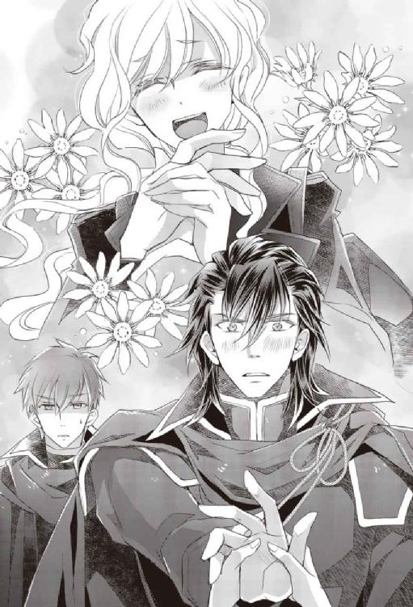
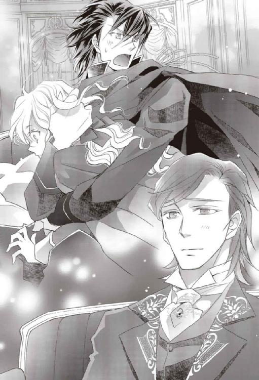

| 異世界トリップの脇役だった件２ 美少年にされた件【初回限定SS付】【イラスト付】 (フェアリーキス) | |
| 葉月クロル | |
| 株式会社ジュリアンパブリッシング (2018) | |
この作品はフィクションです。
実際の人物・団体・事件などに一切関係ありません。
プロローグ 死んだはずの妹が新妻になっていた件
皆さんは、異世界トリップというものをご存じだろうか？
わたしこと、大沢アヤメ二十五歳、花のＯＬ（この花、いつまで咲いていられるんか!? 誰かプリザーブドフラワーに加工し......待って、しないで、やっぱり干からびたくないわ！）は知っている。石オタクで女子大生だった妹が持っていた『異世界にトリップしちゃってさあ大変！（笑）』というふざけたタイトルの恋愛小説を借りて読んだからだ。
ちなみに、うちの母五十二歳パートの薬剤師も異世界トリップを知っている。子どもが大きくなって暇ができたその時間を使って、少女マンガや小説を読んではきゅんきゅんすることに目覚めたからだ。チャレンジャーな母は、ふざけたタイトルにも怯まずにこの小説を読了し、『フランシード、ムカつく！ でもかっこいい！ でもやっぱりムカつく～！ イケメンならなにをやってもいいのか!? もっとやれ♪ って感じで悶えたい人にオススメです♡』とどこぞのサイトにレビューを書いていた。侮りがたし！
いや、実は。
本当のことをこっそり教えちゃうとね。
わたしと母と、おまけにライトノベルを読む趣味のない父も、異世界トリップというものをよく知っているのには、別の訳がある。
石オタクの妹が、交通事故に遭ってあの世に行ったはずの座敷わらしによく似た妹が、本当は異世界にトリップした上にイケメンを捕まえてちゃっかり嫁入りしていたからだ！
その日の深夜、わたしは喉の渇きを感じてベッドから起き上がった。
妹のミチルが交通事故で亡くなってから、三ヵ月が過ぎていた。見かけはせいぜい高校生、下手すると中学生で、イベントがあれば風船を手渡されてしまうという幼い外見の大学生であるミチルは、いつものように元気よく「行ってきまーす！」と玄関を出たのに、帰って来た時には物言わぬ姿になっていた。
歩道を歩いていたミチルにはまったく落ち度がなかった。しかし、運が悪かった妹は歩道に突っ込んできた車を避けきれず、さらに打ち所が悪かったために瞬時に命を失ったという。石を集めるのが好きなミチルは、部屋でぼんやりしながら石を眺めていることも多く、ひなたぼっこの猫みたいなところがあった。部屋中に飾られた石たちは、もう妹の手に持たれ撫でられることもなく、部屋にひっそりと並んでいる。時折母が、泣きながらほこりを払っているらしい。ミチルの部屋は、妹が出て行ったそのままの状態でドアを閉められている。いつミチルが帰って来てもいいように。もう二度と帰って来ることなどないとわかっているのに、両親もわたしもついついそんなことを夢見てしまう。
そんなある日の夜に、わたしは目を覚まし、階下にあるキッチンに行って水でも飲もうと廊下を歩いていた。
『なんとか持っていけないかな？』
ミチルの部屋から、声のようなものが聞こえた。
......聞こえた？
『お姉さん神さまに頼んでみよっかなー。せっかくのお気に入りコレクションだもんね』
聞こえたのとは違う。これは音じゃない。
でも、確かに『聞こえた』のだ。
『ううん、愛いやつらめ♡ あんたたちを置いてはいけないよお』
わたしはミチルの部屋のドアノブをつかむと、ドアをそっと開けた。隙間から中を覗いて、今度はドアをばんと全開にする。
「ミチル!? うわああああああああ、まじかあああああああ！」
そこには、ひらひらの洋風のドレスを着た半透明の死んだはずの妹がいたのだ。棚に並んだ石に頰擦りしながら（顔はだらしなく緩みきっていた）宙に浮かんでいるという、さすがの姉もちょっとドン引きする姿で。
『え？ ええっ!? お姉ちゃん!? ......うわああああああああ、見られたああああああ！』
「あんたこんな所でなにやってんのよおおおおおおおおお！ 妹が地縛霊になるとかまじかよおおおおおおおおおおお！ 座敷わらしのくせに生意気だあああああああああ！」
『あんたの妹は妖怪じゃなくて人間だからな、失礼な姉よ！ いやまて、地縛霊じゃないし、落ち着いてお姉ちゃん！』
「ちょっとアヤメ、こんな夜中に大声をミチルうううううううううううううううううう！」
「お母さんなにをミチルうううううううううううううううううううううううううううう！」
騒ぎに気づいた両親がミチルの部屋に来て、叫びに加わった。
『ちょ、お父さん、お母さん、うるさい！ 近所迷惑！』
「あんた、だって、娘が幽霊になってるのよ！ 近所迷惑もへったくれもないわよ！」
「この世に未練が......あ、石が！ そうか、石か！ だがな、ミチル、石は棺桶に入れられなかったんだ」
「持たせてやろうとしたのよ！ でもね、火葬場の人に叱られちゃったの」
『ったりまえや！ 石を燃やそうとするアホがどこにおる！』
「だって、ほら、この通り成仏できてないじゃないのよ！ お母さん、やっぱり火葬場の人を殴り倒してでも棺桶に石を放り込んでおくんだったわ！」
『お母さん、そんなにバイオレンスなことしなくていいから！』
「やっぱりわたしが」
『お父さんはもっとしなくていいから！ 火葬場の人が怒っちゃって、わたしは腐ったまま放置されちゃうから！』
「ミチル、今からでも遅くないよ、ほら、成仏するにはどうしたらいいかお姉ちゃんに教えなよ！」
『わたしは地縛霊じゃないいいいいいいいいいいいいい！』
「じゃあなんで幽霊になって......あ、元の座敷わらしに戻っただけか」
『あんたの妹は妖怪じゃなくて人間だっつうのおおおおおおおおおお！』
幽霊になったミチルは、宙に浮かんだままぜーはーと肩で息をした。
幽霊のくせに根性がないな。姉として情けないよ。
「ちょっと待って。じゃあミチルは死んだけど死んでないのね？」
『うん』
ドレス姿のロリッ子幽霊は、わたしにこくんと頷いた。
キッチンで水を飲んで戻って来たわたしは、『お母さーん！』「ミチルー！」すかっ（幽霊なので、触ることができない）！ 『あー、やっぱりダメか』というコントを繰り返す母子を微笑ましげに見ている父（いや、お父さんは突っ込んであげなよ）に、「さあ、話を聞かせてもらおうか」と声をかけたのだ。
独身ＯＬ花の二十五歳であるわたしは、なぜかこの家では大きな発言権がある。
まったく、わたしが嫁に行ったらどうするのよ。
......行くあてはないけどさ......ええい、うるさいわ！
そして、宙に浮かんだミチルは、信じられないような話をしたのだ。
「なるほどね。確かに麻紀ちゃんて子のことは記憶からなくなってるわ」
「まあ、こっちで死んだけど向こうで人生の続きができるんだから、儲けものだな」
「まあ、まさかミチルが異世界トリップしていたなんて、お母さんびっくりよ」
『信じるの早っ！ そして、お母さんはマニアック！ こっちがびっくりだよ！』
母が「てへっ」と笑った。
『でもなんで？ なんでこんなに早く信じてくれたの？』
不思議そうなミチルに、わたしは生温かい笑いを浮かべて言った。
「だってさー、年がら年中Ｔシャツにデニムのあんたがさ、そんなひらひらのお姫さまドレスを着て照れもしないでわたしたちの前にいるんだよ？ 説得力ありありだわー」
お父さんもお母さんもうんうんと頷き、ミチルは『わあ』と言って隠れようとした。
『いやその、だってさー、あっちではこの格好が普通なんだもん、仕方ないじゃん』
「うんうん」
『それに、お兄ちゃ......カインロットさんはこういうデザイン好きだからさ、割とはっきり趣味を主張してくるしさ』
「うんうん......？」
『おまけにシャマイラちゃんがまた、趣味に走ったアドバイスをしてくれるしさ』
「誰、シャマイラちゃんって」
『義理の妹』
「カインロットさんは」
『夫』
「......夫おおおおおおおおおおおおおおおおおおおお！」
「夫おおおおおおおおおおおおおおおおおおおおおお！」
「夫おおおおおおおおおおおおおおおおおおおおおお！」
真夜中の三重唱であった。
そして翌朝、気がついたらわたしはベッドの中にいた。あれからミチルとたくさんお喋りをし......たのは夢だったのか。また喉が渇いた。
わたしはキッチンに行こうとし、ふと思いついてミチルの部屋を覗いた。
「い......石がないいいいいいいいいいいいいいいいいいいいいい！」
ミチルの部屋の石が！ 綺麗さっぱりなくなっている！
「アヤメ、どうした？」
「お母さんね、昨日ミチルの夢を......ええっ!?」
「持ってった！ あの石オタク、全部持ってったよ！ 嫁入り道具が石かよ......」
わたしたちは顔を見合わせ、夢じゃなかったんだ、ミチルはどこかで幸せに生きてるんだと呟いてから、なんだかおかしくなって笑い出し、涙がだーだー流れるまで笑って、笑って、泣いた。
って、ミチル！
あの石オタクの座敷わらし！
花のＯＬ二十五歳の姉を差し置いてイケメン騎士と結婚していたなんて、絶対に許せねええええええ！
そしてミチルは、『ピエットくん』という名の石の精霊の力を使って大事な石コレクションを全部持ち去り、あっちの世界とこっちの世界を繫ぐコツがわかってきたようで、たまに部屋に置き手紙をしていくようになった。
『メンマを煮て保存容器に詰めておいて』とか。
......あんた、他に言うことはないの!?
お母さんが喜んでメンマを煮ていたから、まあいいけどさ。
うん、まあいい。
あれは惚けた座敷わらしなので、脱力はさせるけど害にならないし。
しかしな、ミチルよ、死んだと思ってたら生きて幸せになっていた、というのは許せる。
お父さんもお母さんもお姉ちゃんも、三ヵ月間さんざん泣いたけど、許せる。
ティッシュの減りが早すぎて、会社の帰りに必ず五個パックを買い、ぶら下げて帰ってたけど、許せる。
だけど、なんでお姉ちゃんを差し置いて、まだ大学生だったミチルが人妻の座に収まってるの!?
そっちの方がショックでたまらないよ！
お姉ちゃんは、お姉ちゃんは......くううううううううっ！
涙をのみながら生中のジョッキを一気に空けちゃうよ！
その１ そこに生えるのは、やめて
ちゅーもまだだったはずの妹が、お年頃のお姉ちゃんをダッシュで抜いてイケメンの人妻になっていた。非常にショックである。妖怪に先を越されるとは、っていうか、あの世に行ったはずの子に先を越されるとは。
そんなお姉ちゃんの気持ちが異世界の妹に届いたのか、それとも単なるミチルのボケなのか（まずこっちだな）ある日の深夜に妹の部屋で物音がした。
「あれ......さてはまたミチルでしょ？ 今度はなに？ 食べ物を要求する置き手紙じゃなく、たまには顔も見せろってお母さんが言ってたけど......今夜は本体も来てるの？」
例によってまた水を飲みに行こうと夜中に起きたわたしは、両親を起こさないようにそっとドアを開けて中を覗き込み、「ひゅっ」と小さく叫びその場で固まった。
「......コレは、あかんやつや。なにも見なかったことにしよう」
そっと、素早く、断固として、ドアを閉める。
わたしは確かにドアを閉めた。
しかし。
「うぎゃっ！」
今度は結構マジな悲鳴を上げて、狭い廊下でできる限り後ろに跳びずさる。
「お前は誰だ！ なぜここにいる？」
「こっ、こっちのセリフだ！ お前は誰だ！ なぜそこに生える？」
血まみれの男の頭が、ミチルの部屋のドアからキノコのように生えてる！
にょきってしてる！
そして、喋った！
これはもう、真夜中に見るにはホラーすぎるわ。
はい、この頭の正体はなにかというと。わたしが今開けた妹の部屋のドアは、なぜか石造りの狭苦しい部屋に繫がっていた。そして冷たそうな石の床には手足に枷と鎖をつけられた男がひとり座っていて、目を見開いてこちらを見ていたのだった。
身体全体が汚れ、元は濃紺らしい髪までべっとりと泥にまみれ、ケガをしているらしく黒ずんだ血と赤い血で全身が見るからに危ない感じに染まった男は、そこだけは文句なしに美しいアメジストのような澄んだ紫色の瞳でわたしの姿をとらえていた。
こんなケガ人が動けるわけない、と、わたしは油断していた。そこを突いて、異国の風貌をした男がこちらに向かって飛び出してきたのだ。で、この危険な空間を家から切り離そうとわたしもかなり素早くドアを閉めたので、ほっと一安心......と思ったのに、なぜか彼はドアを突き抜けてしまったのだ！
......しかも頭だけ。
「物理法則よ、今すぐここに直れ！ 地球では、頭はドアを突き抜けたりしないことになってるはずだ！ ......ミチル！ これをやったのはミチルでしょ！」
すると、のほほんとした声がした。
『違う違うってば、ピエットくん！ なんでこうなるの、そこに繫いだらダメだってば』
『あれれー、まちがえちゃったのかなあ』
そんな会話が聞こえて、部屋の中から『お姉ちゃん、ごめんごめん、気にしないで』という声が聞こえた。
「いや、めっちゃ気にするわ！ なんなのこのゾンビくんは!?」
わたしは、血で化粧された立派なゾンビを見上げながら言った。このままお化け屋敷に高給で就職できるよ、おっさん......あれ？ お兄さんゾンビ？ 意外に若そうだ。
でもって、血にまみれてわからなかったけど、よく見るとなかなか整った顔をしている。目は欧米人らしいくっきりとした二重で、瞳はスミレ色？ 澄んだ紫だ。鼻筋も通っていて、男らしい大きな口とのバランスもいい。鍛えられた筋肉質の首もたくましくて、魅力的な......血だらけの生首？ 魅力的でも生首は生首。残念ながらわたしのストライクゾーンには入らない。
っていうことでごめん、わたしの心に恋は芽生えなかったよ！ 血と泥と訳のわからない汚れを落として、身体に生えてから出直してください、お願いします。
「ミチル、早くこれを持って帰って！」
『えー、なんか入って来ちゃった？』
ミチルの声がのんきに答えた。
『ピエットくん、回収だって。あのさ、なんかさ、『精霊に愛されし者』の姉上をお招きしたい！ って話がこっちで盛り上がっててさー、お姉ちゃんのことを無事に呼びよせるために練習をしてたら、ピエットくんがちょっとばかり道を繫ぎ間違えちゃったみたいなんだよね』
「どこにどう繫いだら、うちのドアからゾンビくんが生えるのよ！ ピエットくんは、間違えすぎですね！」
『ごめんなさいなのー、えへ』
ピエットくんのものらしい可愛らしい声が聞こえた。
ピエットくんというのはミチルに懐いている石の精霊で、身長十五センチくらいのちっこい幼児だ。ミチルの話だとやたらキラキラ光っていて、ミチルの指示にそって魔法のような力を使えるらしい。つまり、ミチルがピエットくんにうまく指示を出せないと、このような事態が起こるというわけだね。
「でもってミチル、半分はピエットくんのせいじゃないでしょ！ あんたがあやふやなことを頼んだからこうなったんでしょ！」
『えへ。ピエットくんと調整して、また出直すから待っててよ』
「『えへ』が許されるのは、ピエットくんだけや！ って、え？ お招きって、わたしもそっちの世界に行くの？ 困るよ、わたしはまだ死にたくないし、生首になるのもイヤだし......おーい。ミチルー。ミチルー」
返事がない。わたしは「やれやれ」と肩をすくめて、キッチンに水を飲みに行こうとして。
「おい！ おい待て、小僧！」
......やっぱり、見なかったことにしちゃダメ？
ダメなのね？
「小僧ではございません。ゾンビくん、人の家のドアから頭を生やすのを今すぐやめてもらっていいですか？」
「ここはどこだ？ これはお前の仕業ではないのか？ いったいなんのあやかしだ!? それに、俺の名は『ゾンビクン』ではないぞ、小僧」
非常に偉そうな生首である。
でも、ここは我が家なので、不法侵入者に対してわたしはもっと偉そうに言った。
「わたしの名も『小僧』ではない。それから、ここはわたしの家だ。そなたは速やかにここを出て行くがいい、悪霊退散！」
「......狭いがずいぶんと綺麗な造りの屋敷だな。平民の住居には思えない......もしや、お前は貴族なのか？」
生首男は、暗い廊下をキョロキョロと見回した。夜目が利くらしい。
「ケシュテールの牢がなぜ貴族の屋敷に繫がっているのか知らんが......どうやらお前はケシュテールの国の者ではなさそうだな」
「ケシュテール？ そんな国知らないし。わたしは日本の国の者だけど。あと、そっちと繫がっているのは精霊の魔法が事故ったせいだからね」
「精霊の魔法だと？」
ゾンビは驚いたようだが、血で表情がわかりにくい。
「ああなるほど、そういうわけか。精霊とは人騒がせな輩だからな、そういうことなら仕方がないか」
えっ、仕方がないの？
生首ったらそれで納得しちゃうの？
「どうやら貴族の屋敷に無断で侵入しているのは俺の方らしいな、すまないことをした。俺の名はゼラルクという」
「あ、いえいえ、お気になさらずに。わたしはアヤメといいます」
下手に出られるとついへらへらしてしまう、ごく当たり前の日本人であるわたしは、自分も名乗った。夜中の廊下で血まみれ生首とスウェット上下のＯＬが自己紹介しあうという、非常にシュールな光景である。
「ところでゼラルクさん、どうしてそんなに泥まみれで血まみれなんですか？」
すると、彼はふっと笑って言った。
「俺はグラシアッドの国の武人なのだが、敵陣に深く斬り込んでな。失敗して捕虜になってしまった」
ということは、さっき見た石の部屋は牢だったのだろう。
「ゼラルクさんの国は、戦争してるんですか？」
「ああ。グラシアッドには貴重な鉱物資源があるから、それを狙って利権を手に入れようとする他国に度々攻め込まれるのだ。大国と協定を結べれば......くふっ」
ああっ、ゼラルクさんの様子がおかしいわ！
っていうか、それだけの血を流して今まで普通に喋ってたことがおかしいよね。
「もしもし、ゼラルクさん、大丈夫ですか？ あ、お水を飲みますか？」
「すまない、飲まず食わずが続いて、さすがの俺も......」
わあ大変！
ゼラルクさんが死んだら、家のドアからずっと生首が生えてることになるよ！
わたしは急いでキッチンに行き、水の入ったペットボトルと収納庫に入っていたドリンク剤をつかんで戻った。
「ゼラルクさん、お水です！」
さっきはギラギラと輝いていた紫の瞳が、今はぼんやりしているので、わたしはペットボトルの蓋を開け背伸びして水を飲ませた。よほど喉が渇いていたのか、いくらかこぼれたもののゼラルクさんは五百ミリリットルの水を一気に飲んだ。
「うまい。生き返るようだ」
おお、ゾンビが生き返ったようだ、良かったよ。
わたしはドリンク剤のキャップを開けて、それもゼラルクさんの口に押し当てた。
「これも一気にいっちゃってください」
「なんだ？ 奇妙な匂いの......薬か？」
「元気が出る、薬みたいなものですよ。よその国の人にどれだけ効くかわからないけど、試しに飲んでみてください」
このまま牢にいるなら、食べ物もろくにもらえないままだもんね、少しでも栄養をつけた方がいいよ。
ドリンク剤を一口飲んだゼラルクさんは、目を見張って言った。
「甘い！ なんたる甘露！ これは神々の秘薬ではないのか!?」
ドラッグストアで十本五百円で売ってるけど。
ドリンク剤はゼラルクさんの口にも身体にも合ったみたいだ。
「これは......おお、身体の底から力がみなぎってくる！ なんという効果だ！」
そっちの世界には、ドリンク剤がないんだね。
「これならいけそうだな」
ゼラルクさんがにやりと笑い、ドアの向こうでガチャン、ガチャン、と金属音が聞こえた。
なにがいけちゃったの？
もしかして、手足の枷を引きちぎったとか......。
あは、あはは、飲み慣れてないからかな、ドリンク剤の効果がすごいことになってるね！
「よし、このまま脱出して砦の内部から切り崩していく。アヤメどの、恩に着る。この借りは必ず返す」
「あ、気にしないでいいですからー。また会えるとも思えないし、ゼラルクさんは国の人たちのために戦争をがんばってください。鉱物資源をぶんどろうとする悪い奴らを懲らしめてやって、平和な世界を作ってください」
「承知！ ......アヤメどの......見知らぬ国の国民を案じ平和を祈るとは、なんという心の広い少年なのだ。もしやあなたは貴族ではなく神々の......」
おやおや、『お前』が『あなた』に進化しちゃったぞ。
それに、神々ってなに？
そっちの世界では、その辺でよく神さまを見かけるものなの？
ま、いいや。
「ゼラルクさんバイバーイ、がんばってー」
ひらひらと手を振るわたしの前で、ゼラルクさんの頭は半透明になり、やがて消えた。
って、わたしは少年じゃないし！
......そういう誤解、慣れてるけどさ。
わたしは「ふう」とため息をつき、キッチンでペットボトルとドリンク剤の瓶を片付けてから水を飲んだ。
その２ だから、魔法はもっとちゃんと段取りしてからね
「ただいまー」
「お帰りなさい」
わたしは仕事を終えて、自宅に戻った。そう、わたしはかなり大きい企業のＯＬというやつをしているのだ。
内定は気合いでもぎ取った！ ははは！
入社後も、取引先から可愛がられてそこそこ成績がいいぞ！
セクハラしてくる命知らずもいないが、口説いてくる命知らずもいない！
......ＯＬ、と名乗ってもいいのだろうか。
「もうすぐ肉じゃがができあがるから、その前にお風呂に入って来ちゃいなさい」
「はーい」
家中に漂ういい香りに期待しながら、着替えを取りに自分の部屋に行く。
わたしは背中にかかるくらいに伸ばしてひとつにまとめてあった髪を下ろした。家にいる時はたいてい後ろで縛っている。このふわふわの茶色の髪は生まれつきだ。ミチルは日本人形のような黒髪ストレートだから、いつも「お姉ちゃんばかり、ずるい！」と羨ましがられた。でも、わたしはミチルのサラサラストレートの黒髪が羨ましかった。少女マンガのヒロインみたいな綺麗な黒髪だからだ。
そして『座敷わらし』と呼ばれてみんなに可愛がられるミチルが羨ましかった。わたしは身長が百七十センチ近くあるし、肩幅が広くて胸がないし、おまけに趣味が空手だから誰も可愛いと言ってくれないのだ！ 服もマニッシュなものしか似合わないし（スカートだと蹴りが出せないのでイヤだし）せめて髪くらいはと伸ばしても、面倒くさいから結局ひとつ縛りにしちゃうし、髪を下ろしたら下ろしたでなぜか某名作少女マンガの『白ばらの騎士』（ええ、男装の麗人ってやつですよ！）のようだと女子にうっとりされるし......。
女子高時代のあだ名はプリンスだった。バレンタインデーには女子からチョコが渡され、『お返しが面倒くさいからいらない』と断ったら、なにもいらないからハグしてくれと頼まれた。なので、ぎゅっとハグして「チョコありがと!!」と言った。チョコ、好きだし。翌年、チョコの数が異常なくらいに増えていた......。
女子大時代は文化祭でミスター○○に選ばれて、ミス○○のかわいこちゃんの引き立て役を泣く泣く務めた。わたしはミスが頭につけてもらえるティアラが羨ましかった。胸につけられた薔薇と『イケメン日本一』と書かれたたすきではなんだか虚しかった。
就職が決まり、制服の採寸の時に「タイトスカートだと回し蹴りはできないか。可能なのは膝蹴りで、いざとなったらこうするしか......」と急所への攻撃ができることを確認していた。本気になり、シュッ！ シュッ！ と風を切る音も勇ましく決まり、「うん、いけるわ」とうっかり満足げに微笑んでしまった。それを目撃した人物が総務部に進言したらしい。「大沢さんはパンツスーツでいいです」「えっ、制服にパンツありましたっけ？」「今年からできました」「えっ」と、知らないうちに制服のバリエーションが増やされていた。親切心というよりも、鋭い急所攻撃に対する危機感かららしい。
わたしだって、見境なく男性の股間を膝蹴りしないよ！
緊急事態に限るよ！
そんなわたしは、実は少女マンガみたいな恋に憧れてるし、心の中は結構乙女ちっくな夢見るタイプだと思うんだけど、それが表に現れにくいようなのだ。なので、女性にはモテるが男性には「残念！」と言われてしまうばかりで、今に至っていたりする。
年齢＝彼氏いない歴の二十五歳だあああああーっ！
ざんねーん！
一緒に少女マンガを読んでいたわたしとミチルは、仲の良い姉妹だった。だから、ミチルが突然交通事故で命を落とした時には、目玉が溶けそうになるくらいに泣いたし、実は生きていたと知った時は本当に嬉しかった。
そして、共に彼氏いない歴を重ねていたはずのミチルがひとりで大人の階段を上っていたと知った時には、違った意味で泣いた。
お姉ちゃん思いのミチルは、わたしの幸せを本気で考えてくれた。わたしが幸せになることが、両親への最高の親孝行になると考えていた。結構頭のいい子なのである。見た目は座敷わらしだけど。石オタクだけど。
そして、そんなミチルの思いやりが、わたしの幸せを願ってしてくれたことが、大騒動を引き起こすことになったのだ。
ミチルはめっちゃいい子だけど、アホなんやああああああーっ！
ざんねーん！
『お姉ちゃんへ』
ある日、ミチルの部屋を掃除していた母が、また置き手紙を見つけた。
『○月○日の午後十一時に、こっちの世界に招待するね。うちの国の神殿に着くから手ぶらで大丈夫だけど、靴は履いて、この部屋で待ってて。お姉ちゃんだけが部屋にいてね。それからまたメンマを持ってきて』
「保存容器が返されてたの。向こうにはメンマがないのかな」
お母さんが首をひねりながら「明後日だから、竹の子の水煮を買ってこなくちゃね」と買い物に出かけた。
って、その前に、「お姉ちゃんまで異世界トリップしちゃって大丈夫なの？」とかってないの？ え、ない？
「......とりあえず、お菓子を買ってこよう」
わたしも買い物に出かけた。
というわけで、ミチルの部屋に新聞紙を敷いたわたしは、お菓子の詰まったリュックを背負っている。リュックの底にはもちろん、ビニール袋で何重にもくるまれたメンマ入りの保存容器が入っている。手ぶらでいいと言うので、伸縮性のあるデニムパンツに（蹴りが出しやすいのだ）長袖Ｔシャツ、そしてライダースジャケットを着て、がっちり系のブーツを履く。ミチルの格好から、向こうではひらひらした可愛いドレスが用意されているとみた。
ああ、楽しみだ！
ドレスが着られる！
誰も「アヤメはこっちでしょ」「女装なんておかしいよ」と騎士の服を勧めたりはしないはずだ、たぶん！
「気をつけてね」
「楽しんでおいで」
「はーい。行ってきまーす」
基本的に、大沢一家はみんなのんきなのだ。わたしは部屋の外の両親に手を振り、十一時の五分前に新聞紙の上に立った。すると、ひらひらと紙が降ってきた。拾って見ると『メンマ持った？』と書いてある。
「持ったよ」
返事をすると、今度は光の粉が降ってきた。
「おむかえなのー」
「うおっ、精霊キターッ！」
噂のピエットくんが現れて、わたしの身体をオーロラのような輝きの光が包んだ。
「あっ、お姉ちゃんだ！ カインロットさん、お姉ちゃんが来たーッ！」
「落ち着けミチル、まだ魔力が安定していない」
日本の部屋の風景が薄れて、石造りの西洋風の部屋が重なって見えた。可愛らしい水色のドレスを着たミチルが、これまた水色の髪に水色の眼をした信じられないくらいのイケメン男性に......持ち上げられている？
そう、ミチルの腰をつかんだ男性が、ひょいと空中にミチルを持ち上げているのだ。背も高く、しっかりした身体つきをしているが、それにしてもたいした腕力だ。
「お姉ちゃーん、お姉ちゃーん」
ミチルは、中世時代のヨーロッパの騎士が着るような服を着たイケメン男性に持ち上げられたまま、足をばたばたさせた。
おもちゃか？ 可愛いやつめ。
「うん？」
どうやらミチルの夫の『カインロットさん』らしい男性は、わたしの姿を見て眉をひそめた。
「姉......と聞いていたが、青年......いや、少年？ 男子が現れたぞ」
「男子じゃねーよ！」
思わず突っ込む。
「カインロットさん、あれは確かにわたしのお姉ちゃんですよ！ ただいま絶賛発売中、じゃなくて、旦那さま募集中の、イケメンだけどイケメンじゃないお姉ちゃんです」
待って、確か神殿に着くって言ってたよね？ この部屋に結構たくさんの人がいるんだけど。しかも、若い男性ばかり。
「おお、あれが『精霊に愛されし者』の姉上か!?」
「......姉上......なのか？」
ざわざわっと声が上がる。
「うちのお姉ちゃん、かっこいいでしょ！ お姉ちゃん、旦那さん候補の人たちが、待ちきれなくて来てるんだよ」
「な、なにぃ!? 旦那様候補だと!?」
余計なことを！
こんな、がっつりマニッシュな格好で婚活をしろと!?
このアホが！
「ダメ、ミチル、やり直し！ ちょっと女子らしく化けてからにして！ ピエットくん、なんとかして！」
「え？ え？ どうしよう、アヤメがやりなおしっていってるの」
わたしの周りをぶんぶん飛んでいたピエットくんが、慌てたように言った。
「ミチルのよういしただんなさんがだめなの？ もっといいひと？ ほかのひと？」
「そうじゃなくて、とにかくここの人たちにはあとで改めてご挨拶したいから！」
女子に変身してからな！
「ええと、うん、わかった、ここのひとたちはだめなのね、やりなおしなのね」
「ピエットくん！ 待って、いいからこのままお姉ちゃんを」
ミチルが言ったが、どう見てもこれは婚活に適した状況ではない。
「ミチル、段取りと根回しはちゃんとやれっていつも言ってるよね！ お姉ちゃん、サプライズは嫌いだよ！」
「ごめんなさーい」
「うわあん、けんかはだめなのー」
ピエットくんは、大慌てでぶんぶん飛び回り、慌てすぎてわたしに激突して、そのまま床に落ちてしまった。
「わあ、ピエットくん、大丈......！ ああっ、待って、お姉ちゃん！ お姉ちゃん！ 行かないで！」
「うわあ、ミチルーっ！」
ピエットくんの力が揺らいで、ミチルのいる神殿の景色が消えていく。
「ミチル、これヤバいやつ！ 消えてるし！」
「ピエットくん、お姉ちゃんを戻さないでーっ！」
「わああああああ、ミチルうううううーっ！」
「お姉ちゃあああああああああん、神さまお願い、お姉ちゃんを助けてーっ！ お姉ちゃ......」
声が聞こえなくなった。
消えた。
ミチルが消えてしまった。
そして、わたしはぐるぐると回る世界を落ちていき、やがて気を失ってしまったのだった。
その３ 異世界不時着ＯＬ物語
「......わあ......びっくりした......さすがは座敷わらしクオリティ、成功率が低い割に運がいい......」
気がつくと、わたしは草むらに寝転がっていた。空は快晴、ちゃんと呼吸ができているし、魔物に食べられかけてもいない。
だけど、これはもう「てへっ」では済まされない事態だよ、ミチル。
想定外の異次元空間を渡ってきたのだ、警戒を怠らず周りの気配を探り、同時に負傷している可能性もあるのでゆっくりと身体を起こす。手足にも体幹にも痛みはない。動かすと、正常に動く。ライダースジャケットにデニムパンツを着ているので、かすり傷もない。リュックは肩に引っかかっていて無事だ。やっぱり運がいい。
「よし、頭も身体も異常なし、と。ここは......森だね？ ミチルのいる世界なのかな？ 確かエステイリア国って言ったっけ。とりあえずは遭難した場合と同じ対処をすればいいか。幸いまだ真っ昼間みたいだから、人のいる所を探そう。あと、武器になりそうな棒があったら拾おう」
座敷わらしの幸運がいつまで続くかわからないから、身を守る道具が欲しい。まあ、神殿に転移する予定だったってことは、エステイリアの神さまも関わってるだろうから、今度はそっちの幸運があることを期待しよう。
わたしは手を守るためにリュックに入れてきた革の手袋をはめ、リュックを背負って立ち上がった。ゴツいブーツを履いてきて良かった。これが、お出かけだからと調子に乗り、機能性よりもおしゃれ感を重視した格好だったら、この非常事態には向かなかったな。
......ごめん、言ってみただけです。
見栄を張りました。
わたしは会社の制服すらパンツスーツに変えてしまう女、おしゃれな服なんて持ってないです。結婚式に呼ばれた時にはパンツスーツをレンタルしてます。なので、異世界トリップしてドレスを着るのを本気で楽しみにしてました。「こんなの着たことがないんですけど」「ここではドレスが普段着です」「でも、わたしには似合わないし」「大丈夫、どんな女性にも似合うドレスがございますから」とか言って、強引に着せられて、鏡を見た途端に「......これがわたし？」とか言ってみたかったんです。
あ、ちょっと泣きそう。
まあ、気を取り直して、富士山も登れそうなブーツで地面を踏みしめ森を進んで行くと、何人かの人が争うような声がした。
どうしよう、トラブルに巻き込まれたくない。
でも、人間と遭遇しないでこの森を抜ける自信もない。
わたしは考えたあげく、身を隠して遠くからどんな人がいるのかを確認することにして、音を立てないように人の気配がする方向へと進んだ。
なんとか人間の動きが確認できる場所まで近づくと、木の陰に身を低くして隠れた。どうやら、ふたり対五、六人......あ、七人の戦いが行われているらしい。ひとりはもう倒されて戦線離脱している。そして、みんな手に剣を持っている。七人の方は、お揃いの服を着ているからなんらかの組織に属した集団なんだろう。ふたりの方は、旅装束っぽい......中世とかの普通の人の格好をしている。でも、明らかに鍛えられた身体つきをしているので、きっと武人なのだろう。剣を持つ姿もしっくり合っているし、足捌きも訓練されているように見える。そして、ふたり組の方は背が高くて、人並み外れた存在感がある。
おや？ 紺色の髪の男、なんだか見覚えが......あるようなないような......。
わたしは首を傾げつつ、向こうに悟られないように少しずつ近づいた。刃物を使った戦いが行われているので、慎重に近づく。わたしはそこそこ武道のたしなみがあるけれど、刃物や飛び道具を持ち出されると圧倒的に不利である。
顔が見える位置に来て、じっと観察する。かなり体格がよく身長が百九十センチはありそうな濃紺の髪に紫の瞳の男は、とにかく強かった。相手の剣を叩き落としては、左手で首の後ろに一発入れて気絶させている。
「なるべく血を流すな。獣が寄ってくる」
「わかった」
もうひとりの赤毛の男も結構手練れのようで、「よっ」とか気の抜けた掛け声をかけながら剣を避け、鳩尾に拳を叩き込み、丸まった相手の首にも一発入れて「一丁上がり」だそうだ。
「つ、強い」
敵が思わず呟く。
残った四人は目で合図すると、一斉に濃紺の髪の男に斬りかかった。非常に卑怯であるこの戦法にもまったく怯まず、キーンという剣を弾く音を連続して響かせ、最後のひとりには長い脚で蹴りを入れた。相手は「ぐふっ」と変な声を出して吹っ飛んだから、急所に入ったのだろう。
赤毛も活躍し、片っ端から男たちを地面に沈ませ、気がつくと濃紺と赤毛以外の連中は地面に伸びて、ぴくりとも動かない状態になっていた。
「......あいつら、化け物か？ マジ強いわ」
感心しながら身をひそめていたが、関わったら危ない気がしてそっとその場を去ろうとしたのに。
「おい、そこのネズミ、出てこい！」
うわーん、濃紺と赤毛がこっち見てるよ！
「ケシュテールの間者か？ 生憎だったな、戦闘部隊は全滅したぞ」
やだ、敵の仲間だと思われてるよ。
「おとなしく出てきて、お前の持つ情報を洗いざらい話せば、命を助けてやらんこともないぞ」
「......って言ってるから、ちょっと来てみようか」
「ひっ！」
濃紺に気を取られていた隙に、赤毛がすぐ近くまで接近していた。
なかなかやるな！
「わたしに触れるな！」
でも、わたしだって結構やるんだぜ！
赤毛の手をすり抜けて、距離を置いて睨む。
「おや、逃げた。なかなか素早い子ネズミだな」
赤毛の男はにやりと笑った。
「こんな子どもまで間者に仕立てるとは、ケシュテールもなかなかエグい真似をする」
「子どもだと？ しかし、俺の敵にまわるなら、たとえ子どもでも容赦しな......」
剣をぶんぶん振りながら近づいて来た濃紺は、わたしの姿を見ると目を見開いた。わたしはふたりに向かってきっぱりと言った。
「このわたしは間者などという卑怯な人間ではない！ わたしはいつだって、正々堂々と正面からたたか......」
「アヤメ！ お前はアヤメではないか!?」
「へっ!?」
大声で話を遮られたあげく、名前を呼ばれたわたしはびっくりして口を開けた。
「......お前は何者だ!? その名をどこから出してきた？」
わたしは用心深く言った。なんだかヤバい気がする。場合によってはトンズラした方が良さそうである。
「この子ネズミ、失礼な口を......」
「キール、構わん。おい、よく顔を見せろ......やっぱりアヤメではないか！」
「わあ！」
濃紺に捕まえられそうになり、わたしは跳びずさった。
「近寄るな！」
「ああ、この剣が怖かったか。よしよし」
濃紺は右手に持った剣を捨てた。剣はその先にあった木の幹にザクッと刺さった。
「げ」
何なの、この男の攻撃力は？
わたしはがっつり筋肉がついた大きな男を見た。
日本ではなかなかお目にかかれないような背の高い男は、見せるためではない、鍛え上げられた身体をしている。濃紺の髪、紫の瞳、彫りの深い顔に男らしい唇。オーダーメイドのスーツを着せたら、とんでもないイケメンモデルになりそうな風貌の男だ。
こんなイケメンの知り合いはいない。断じて言える。
「どうした？ 大丈夫か？」
「いや、ちょっと、近寄るなってば。お前は誰だ？ なんでわたしの名前を知ってるの？ わあっ」
「逃げるな子ネズミ！」
謎のイケメンからさらに距離を置こうとしたわたしは、赤毛に捕獲されてしまった。
「離せ！ このっ！」
「ぐへっ」
赤毛の鳩尾に一発入れて、身体を離す。赤毛はお腹を押さえながら「子ネズミに嚙みつかれた......」と恨めしそうにわたしを見たが、その頭を濃紺の髪の男に平手でどつかれて吹っ飛んだ。
「キール、触るな！」
「......え？」
なんとか受け身を取って、まだお腹を押さえているキールという赤毛の男は、ぽかんとした顔で濃紺の彼を見た。
「その少年は俺の命の恩人だ！ 恩を仇で返すような振る舞いは、この俺が許さんぞ！」
「はあ？ この子ネズミちゃんが、命の恩人？」
わたしも「はあ？」である。
「俺だ、ゼラルクだ」
「知りませんけど」
すると、ゼラルクという男は「えっ？」という顔をした。
「アヤメ、だろう？ 他国の貴族の......ほら、俺に水と秘薬を飲ませた、ええと、『ゾンビクン』？」
「あああーっ！」
わたしは目の前の顔を指さして言った。
「うちのドアから生首を生やしてた人！ 血まみれじゃないからわからなかったよ！」
「な、生首？」
赤毛のキールさんが呟いた。
「そっかー、無事に敵の牢屋から逃げ出せたんだ」
「ああ、お前のおかげだ」
わたしはゼラルクさんと並んで森を歩きながら言った。
「戦争は終わったの？」
「あともう少しで、休戦に持ち込めるかなというところだな」
後ろからキールさんがついて来て、わたしたちの話を聞いている。ゼラルクさんとキールさんは、なんか重要な書類を敵国から自国へと持ち帰る途中だそうだ。機密文書ってやつかな。
この森は、獰猛な獣が多いから早く抜けた方がいいとのことで、足早に進んでいる。平和な日本でアスファルト舗装の道しか歩いたことのないわたしには険しい道で、なかなかスピードを出せずにいたら、なんとゼラルクさんが手を引いてくれた。どうやらふたりともわたしのことを、まだ年端のいかない少年だと思っているらしい。わたしも、出会ったばかりの男性ふたりに、自分が女性だと明かすのは危険な気がするので、誤解を解かずにいる。
そのうち、このふたりを信用できたら教えればいいや。
「ところで、アヤメはなぜこの森にいたのだ」
「ゼラルク、それ、もっと早くに聞こうな。貴族の子がひとりで森にいるとか、どう考えても怪しさ満載だろう」
キールさんが後ろでぼそりと言った。
「精霊の魔法が失敗したらしいんだ」
「またか？」
「うん、また」
「なるほどな」
後ろのキールさんが、再び「納得なのか!?」と突っ込んだ。そして、「あ、もしかして......」と会話に入ってきた。
「最近、エステイリアに『精霊に愛されし者』が現れたらしいが、アヤメはその関係者なのか？」
「そう、それ！ 精霊の力でエステイリアに行くはずが、森に落ちちゃったんだ。本当に参っちゃう」
わたしはため息をついた。
「もう精霊魔法はこりごりだよ」
「そうか、それであんな所に異国の貴族の少年がひとりいる羽目になったのか」
「アヤメは大物だったんだな。大ネズミだな」
「ネズミちゃうわ！」
キールさんに突っ込む。
「じゃあ、俺たちに会えて良かったな。あのままだとアヤメの命は危なかったし、『精霊に愛されし者』の関係者がこの辺りで死んじまってたら、グラシアッドもケシュテールも巻き込んで、下手すると大戦争になってたかもしれない」
「げ」
おいおい、怖いよ！
「大丈夫だ、アヤメは俺が責任を持って親元へ帰してやるからな」
身体はいかついが気は優しいらしいゼラルクさんが、わたしを安心させるように言った。
「お前は俺を助けて、国を救ってくれた。今度は俺がお前の力になるぞ」
「ありがとう、ゼラルクさん」
わたしは、頼りになるゼラルクさんの大きな手をぎゅっと握ってにっこりと笑った。
「ゼラルクさんに会えて良かった。本当は心細かったんだ、えへへ」
「お、おう」
すると、なぜかゼラルクさんの目元が赤くなった。そして空いた手がわたしの頭に載った。
「アヤメのために、なんでもしてやるからな、遠慮なく俺を頼るがいい」
「うん」
「よし、いい子だ」
ゼラルクさんは優しい目でわたしを見て、頭を撫でてくれた。
この人、子ども好きで親切なんだね。しばらくは子どものふりをしていようかな？
「ゼ、ゼラルク、頭でも打ったのか？」
キールさんが啞然として呟いた。
その４ はい、リーダーの言うことは絶対ですよね
「......ねえ、ゼラルクさん」

「なんだ？」
わたしは、手を繫いでぐんぐん引っ張ってくれる、まるで子どもとお散歩しているパパ（『怪しい誘拐犯』にならないのは、時々わたしの様子を気にかけて、優しく笑ってくれるからだ）のような雰囲気のゼラルクさんに声をかけた。
「眉間にしわが寄ってるけど、なにか問題があるの？」
引っ張ってもらって、おまけに荷物は赤毛のキールさんが持ってくれてるので楽ちんなのだが、普段はあくまでも都会（ええと、なんとなく都会、ね）のＯＬで山歩きの趣味はないわたしにとって、延々と森を歩くのは結構辛かった。いや、毎朝ジョギングをして体力はつけてるんだけどさ、さすがにこんな道とは言えない獣道には慣れてないんだよね。
「ああ......この森は危険だから、暗くなるまでには川向こうの比較的安全な場所に着きたいんだが......」
「わたしの歩くペースが遅くて、予定通りには進まないんだね」
「子ネズミちゃんは、貴族の坊ちゃんだから仕方がないさ。訓練をしていない坊やがここまで歩けるのはむしろすごいって」
キールさんが肩をすくめた。
「ただ、現実問題として、このままこの森で夜を迎えたくない......なので、このチームのリーダーとして緊急的対処を行うことを決定する！」
ゼラルクさんは、わたしの手を離した。その瞬間、思いがけない寂しさに襲われ、わたしはびっくりした。
あかん。
異世界に来て心細いからといって、他人に依存したらあかん。
大沢アヤメ、しっかりしな！
そんなわたしの心中など知らないゼラルクさんは、きっぱりとした口調で言った。
「決行！」
「......え？」
すたっ、と素早い動きでしゃがむ。
「乗れ！」
「......ええ!?」
乗れって、だってそれは......。
驚くわたしの横で、キールさんも口をあんぐり開けている。
「過保護か!? ゼラルクにいったいなにが起きたんだ......」
そう、わたしの前にはゼラルクさんの大きな背中があるのだ。地面に片膝をついたゼラルクさんが、妙にきりっとした顔つきでわたしに負ぶさるように求めているのだ。
「あの、ゼラルクさんがおんぶするの？」
「時間がない。早く乗れ！」
命令し慣れた、有無を言わせぬ口調に、体育会系のわたしは反応してしまう。
「はい！」
あれだな、現在わたしたちは命がけの行軍をしているわけだから、リーダーの言葉に従わなければならないんだな！
つまらないことをごちゃごちゃ考えている場合ではないんだな！
「お背中、失礼します！」
「よし！」
わたしがゼラルクさんの背中に負ぶさると、彼はわたしの体重などものともせずにすっくと立ち上がって「では出発する。目的は、この森を速やかに離脱し、夜営の準備を進めること。キール、ついて来い！」と言って走り出した。
振り向くと、まだ口を開けていたキールさんが、慌ててダッシュしてついて来ていた。
「くっ、なんで普段よりはえーんだよ、いくらなんでも張り切りすぎだ！」と言いながら。
速い。
めっちゃ速い。
ゼラルクさんが訓練された武人だということはわかっている。しかし、それにしても鍛え方が半端ないことがわかる。
彼に比べたら少年にしか見えないといっても、わたしは成人女性ですよ？ それを背負って、足元の悪い森の道をこんなスピードで駆け抜けてくれちゃうとは、もうびっくりして、わたしはなにも言えずに落ちないようにとゼラルクさんにしがみつくしかないよ。
ああ、なんという筋肉。女性ではいくら鍛えてもこうはならない。その筋肉に身体の前面が密着して、男性の体温が伝わってきて、しかも汗ばんだ身体の匂いがむんむんしてくるもんだからたまらない。
ゼラルクさんのイケメンフェロモンに当てられてクラクラしてくるよ！
ヤバいよヤバいよ、身体は落ちなくても心が落ちちゃうよ！
わあ、なにを考えてるのだ自分っ！
フォールインラブしたらあかん！
わたしは貴族の少年だと思われてるんだからね！
「ゼラルクは、絶対に頭を打ったか変なものを食ってる......」
ゼラルクさんの走りについて来るキールさんは、そんなことを呟いている。こちらも鍛えているらしく、余裕があるね。
この調子でいけば、あっという間に凶悪な獣のいる森も抜けられちゃうんじゃないかと思って油断していたけれど、すっと隣にキールさんが来て言った。
「ゼラルク、囲まれたな」
「ああ。かなりの群れだ」
どうやら最悪なことに、獣の群れにマークされてしまったらしい。姿は見えないけれど、平和な日本から来たわたしにも周りを徐々に包囲していく気配が感じられる。
「開けた場所で叩く」
「了解」
返事をしてキールさんが戻った。
ゼラルクさんは、このまま走って逃げきるのは難しいと判断したのだろう。
「アヤメ、万一俺たちが危なくなったら、躊躇わずに逃げろ。その間くらいは奴らを引き留めておく」
「......」
異世界を舐めていた。
こんなに強いゼラルクさんでも、万一のことがあるのか......。
わたしは、手袋をした手をぎゅっと握り締めた。
小さな広場になった場所に着くと、ゼラルクさんはわたしを背から下ろして剣を抜いた。彼とキールさんが、わたしを守りながら剣を構える。
「凶悪な獣って......ひょええええ、なにあれ!? キモッ！」
大きな狼とか、ハイエナとか、そんなのを予想していたわたしの前に現れたのは、不気味にデフォルメされた二足歩行の猿だった。身長二メートルくらいの、のっぺりした巨大な顔の猿が、カギ爪のついた長い手を構えて襲いかかってこようとしている。
そして、その化け物猿はわたしたちをぐるっと取り囲んでいるのだ。これは結構、キモイし怖い。
「ゼ、ゼラルクさん！」
「予想外に多いな」
「ケシュテールの奴らが喰われたようだ。血の臭いに集まった獣が喰い足りずに我々を追ってきたのだろう」
ええっ、喰われた？
化け物猿を見ると、身体に赤黒いものをこびりつかせている奴がいる。あれはもしかして......。
「やだ、怖いよ......」
人喰い猿に喰い殺される恐怖に、わたしは怯えて震えた。
「アヤメ、大丈夫だ。お前は俺が守る」
「ゼラルクさん！」
見つめ合うわたしたち。
そうだ、ゼラルクさんはとても強いから、きっと人喰い猿たちも倒してくれるはず。
「俺もいるんだけど......」
ごめん、忘れてました。キールさんも強いですよね、うん、大丈夫。
「アヤメはここを動くな。行くぞ！」
ゼラルクさんとキールさんが、剣を構えて人喰い猿たちの群れに突っ込んだ。
「くっ、多いな」
ゼラルクさんが、剣を振ってこびりついた血とかいろいろな汚れを落とした。刀身に加工がされているのか、一振りで綺麗になる。そうでなかったら、あっという間に剣の切れ味が落ちるだろう。
「こりゃ、きりがないわ」
キールさんも、肩で息をして言った。ふたりはとても強くて、人喰い猿たちはどんどん倒れていった。にもかかわらず、新たな猿が森から現れてくるのだ。おそらく、仲間の血の臭いに誘われて来たのだろう。『凶悪な獣』というのは本当らしい。
「いったん退くのは無理かな」
キールさんは軽い口調で言ったけれど、表情に焦りが見える。
「ねえ、猿の瞳が赤くなっている......」
人喰い猿たちの目が、さっきまでは茶色だったのに今は燃えるような赤に変わっているのだ。
「まずいな、狂乱化している」
ゼラルクさんが言った。
バーサーカーっていうと、ゲームだとあれだよね、めっちゃ強くなるやつだよね!?
うわああああ、マジピンチじゃん！
「なんとかアヤメを逃がす！」
「突破口は......」
猿の少なそうな所を探しているが、とにかく数が多すぎて見つからない。
グアアアアアアアーッ！ と一匹の猿が雄叫びを上げると、猿の群れが一斉に襲いかかってきた。
ゼラルクさんとキールさんが前に出て、力強い太刀捌きで人喰い猿を倒していくが、それを避けて数匹の猿がわたしに飛びかかってきた！
「逃げろアヤメーッ！」
「うわああああーッ！」
逃げられない！
瞬間、覚悟を決めて拳を握り、攻撃姿勢をとった、その時。
（止まった？）
わたしは宙に浮いたままの猿の顔面に一撃を加えた。猿が真後ろに吹っ飛んだ。
（違う、遅いんだ）
そう、わたし以外のものの動きがものすごく遅くなっているのだ。スローモーションになっている、と言ったらわかりやすいかな？
別の猿に蹴りを入れる。効果は絶大で、猿は横にあった木に激突し、そのまま動かなくなった。
（ヤれる！）
わたしはスローな世界で、不気味な猿たちに次々と攻撃をしていく。わたしの攻撃を受けた猿だけは、時間が戻るのか普通に倒されていくが、どうやらダメージが通常の数倍から下手すると数百倍くらいはあるのではないかと思われる。というのは......。
（ぎゃー、首が飛んじゃったーッ！）
蹴りが強すぎて、頭が取れてしまった！
いやーん、スプラッター！
拳が頭にめり込んだらイヤなので、わたしは手加減しながらも次々と猿を吹っ飛ばしながら進み、動かぬ山を築いていった。やがて、百匹近くは集まってきていた人喰い猿は、一匹残らず地面に沈んだ。
時間が戻った。
「アヤメ、これはいったい......」
「猿を全滅させたのか？」
最後の猿を殴って片付けたわたしは、ゼラルクさんとキールさんの声に振り返って、ふたりに尋ねた。
「えっと......なにが見えた？」
困った。
自分でも訳がわからないので、状況の説明ができないよ。
「わたしには、みんなが遅くなったように見えたんだけど」
「ものすごい速さでアヤメが動いて、素手で猿たちを倒していったぞ」
キールさんが言った。
「......あのですね。これは、わたしの国の武術のひとつなんですけど、なぜか威力とスピードが強化されてまして......本来はここまでは強くないんですけど......自分でもびっくりしてるところです」
わたしがもごもご言っていると、キールさんが言った。
「加護じゃないのかな」
「加護、ですか？」
「アヤメは『精霊に愛されし者』と関わりがあるんだろう？ 『精霊に愛されし者』は人がいいから、神からの加護も大きいんだ」
「そうなんですか」
確かに、ミチルは人がいいな。
「じゃあ、『精霊に愛されし者』がわたしへの加護を神に頼んで......たわ、そうだ！ 思い出した！」
神殿でミチルが『神さまお願い、お姉ちゃんを助けてーっ！』って叫んでたね！
なるほど、それでエステイル神がわたしに特殊スキルをつけてくれたのか、納得納得。
「たぶん、キールさんの言う通りだと......」
「アヤメ、ケガはないか!?」
「はいっ？」
またしても剣を放り出して木の幹にざっくりと突き立てると、ゼラルクさんがわたしに近づいた。
「大丈夫か？ 手を痛めてないか？ 猿にかじられてないか？」
「ない、です、けど......」
ゼラルクさんはわたしをくるくる回して、全身をチェックして無事を確認した。
「よし、大丈夫そうだ。こんな小さな手で猿を殴ったりして、痛かっただろうに」
撫で撫で撫で。めっちゃ手を撫でてますがな！
「あのですね、ゼラルクさん、わたしは一応武術をたしなんでおりまして......」
「怖い目に遭わせてしまったな、アヤメ。さあ、他の獣が来ないうちに」
ゼラルクさんは木の幹から引っこ抜いた剣をしまうと、わたしに背中を差し出した。
「早く森を抜けてしまおうか。さあ」
「ゼラルク......いや、間違った行動ではないとは思うが」
なぜか遠くを見るキールさん。
「そうだな、早く森を抜けて川を渡ろっか、うん」
「アヤメ、来い！」
「......はい」
そしてわたしは再びゼラルクさんの背中の人になり、いろんな意味でむんむんな感じでむらむらするのであった。
その５ 箱入り貴公子、に見えるのかな
わたしは、ゼラルクさんの背中に負ぶさっていたが、周りの景色がすごい速さで過ぎていくのをぼんやりと見ているうちに、なんだか眠くなってきてうとうとしてしまった。考えてみたら、夜の十一時にミチルのいるエステイリアの神殿に着いたかと思うと、そのまま見知らぬ森に飛ばされ、さんざん歩いてゼラルクさんにおんぶされ、精神力を削られたあげく人喰い猿との戦いに突入し、またおんぶされているわけだ。時差ぼけなんてレベルではない。マジで眠い。
そのうち「あかん、寝たらあかん」と呟きながらも完全にまぶたが閉じてしまった。大きな温かい背中で気持ちよく揺られていると「おや、この子寝ちゃってるぞ。ゼラルクの背中で寝るとはたいした大物だな」「......お前は見るな！」「なんでだ？ 見るくらいいいじゃないか、可愛い顔して寝てるんだから」「なら余計に見るな！」「......ケチ！ ゼラルクのケーチケーチッ！」「不敬罪で斬るぞ」「やだ」という訳のわからない会話が聞こえた......ような気がする。
ミチルならともかく、わたしには『可愛い』などという形容詞が使われることなんてないのだから、願望が夢になったのだろう......ううう、悲しすぎる。
で、しばらくすると「アヤメ、アヤメ」と揺すぶられた。
「アヤメ、起きるんだ」
「ん......あ、ごめんね、わたし寝てたよ」
ゼラルクさんの背中から顔を上げて、そっと手の甲で涎を垂らしていないことを確認する。
「全然かまわん。そんな細っこい身体であの大量の獣を倒したのだ、疲れたのだろう。それより、これから川を渡るからな」
「川......わあ、森がない！」
ずうっと森の中にいたのに、いつの間にか開けた河原にいてびっくりしたよ。
「この川を渡ってしまえばもう安全だ。この水の流れを、今通ってきた森に住む凶悪な獣は渡って来られないのだ」
「へえ」
そういえば、水の流れは結界になるという話を聞いたことがある。あの奇妙な人喰い猿は、獣というよりも魔物のように見えた。もしかすると、あの森は魔力が強くてそのせいで獣が魔物化しちゃうのかな？ ゼラルクさんに聞くと、あの森は確かに魔力の強い場所だという。ということは、わたしがあそこに不時着したのはたまたまではなくて、森の魔力に引かれてなのかもしれないね。
さて。
先送りにしていた問題に取りかかるかな！
「ゼラルクさん、わたしの目の前に流れるこの川は、流れはゆっくりだけど」
「ああ、ゆっくりだ」
「でも、かなり深い川だよね」
「そうだな、アヤメには深いな」
にっこり笑いながら、子どもにするように頭を撫でられたが、それどころではない。
だって、この川、ゼラルクさんの腰くらいの深さに見えるよね。ってことは、わたしの胸くらいだからね。結構深いんだよね。
これは、歩いて渡れる深さではないね！
「でもって、この辺りには橋など見えませんね！ 舟もありませんね！ つまり、渡る手段がありませんね！」
ゼラルクさんは、わたしの言葉を聞くとはははと笑った。
「大丈夫だ、華奢なアヤメでは流されてしまうからな。俺が運んでやる」
「運んでやるってうわああああああああああああ！ なぜ！ ってか、やっぱり脱ぐ！ 脱ぐんだね！」
わたしを下ろしたゼラルクさんと、荷物を下ろしたキールさんが、さくさく服を脱ぎ始めた。でもって、キールさんが脱いだ服をしまって荷物をコンパクトにまとめている。待って、レディーの前でそんな大胆な、ああっ、いい身体を惜しげもなくさらして、筋肉男子ヤベーよ、かっこいいよ、心のシャッターを連写中だよ、シャッター音が漏れちゃうよ！
なんて心の中でハアハアしていたら、パンツ一丁になった巨大な筋肉男子が、笑顔でわたしに手を差し伸べた。
「さあ」
「ささささまままてまてまて、わたしにどうしろと!?」
「肩に乗れ」
まさかの肩車なの？
嫁入り前の乙女に、パンイチ男子に跨がれと、そうおっしゃる!?
「馬に乗るよりも簡単だぞ」
そういう問題ではない！
断じてない！
「ゼラルク、荷物は持った。早いとこ行こう」
こちらもパンイチ姿で、なかなかいい筋肉をしているキールさんが、大きな塊を背負って言った。筋肉がむきっとなったので思わず感心して見てしまうと、キールさんに「アヤメはもう少し鍛えた方がいいな、いくら貴族の坊ちゃんでも、それじゃあお嬢ちゃんと間違えられるぞ」とからかわれた。
ってか、間違えられて本望！
いやいや、お嬢ちゃんで間違いないよ！
「その身体でそこまで武術を身につけたのは、たいしたものだぞ、アヤメ。加護を差し引いてもいい動きだった」
「ええっ、わたしの動きが見えてたの？」
ゼラルクさん、すごいな。とんでもない動体視力をしてるわ。
「だが、武術ではこの川は渡れないから観念しろ」
「ひゃあっ」
「男は諦めが肝心だ」
男じゃないし！
と、叫ぶわけにもいかなかったわたしは、ゼラルクさんにひょいと持ち上げられて肩車されてしまった。
「軽いな。もっと飯を食え」
「ゼラルクさん、ちょっとこれは」
「しっかりつかまってろ」
問答無用でわたしを肩車したゼラルクさんは、ザブザブと川に入って、そのまま安定した歩行で川を歩き渡ったのであった。
いい筋肉は、水すら避けさせるらしいよ。
川を渡ったらそこにはまた森があった。
『男性の首に跨がった』という事実に（だって、絶対ヤらしいでしょ！ ゼラルクさんの弾力のある筋肉をわたしの脚でぎゅっと挟みつけて、なんか股の間に体温とか感じて......うわあああああ、ヤらしい！ わたしったら、こんなこと考えちゃってヤらしい！）ちょっと魂が抜けそうなわたしの前で、ふたりはさっさと服を着て身支度し、ゼラルクさんは当たり前のようにまたわたしを背負った。
腑抜けになったわたしは、無言でおんぶされた。
「おいアヤメ、肩車だのおんぶだのをされて男性としての誇りが傷ついたのなら、もっと身体を鍛えろよ。貴族だからといって、ダンスばかり上手ければいいってもんじゃないぞ」
キールさん。
男の誇りではありません。
女子の羞恥心でございます。
「この森には弱い獣しかいないから、安心して夜営ができる。少し進むと開けた場所に出るからな」
ゼラルクさんは少しと言ったけれど、例によってかなりのスピードで森を進み、ようやく夜営にふさわしい場所に着いた。
そして、その行軍の途中、いつの間にかキールさんが今夜のおかずを狩ってきていた。
このふたり、どんだけハイスペックな野生児なの！
わたしがいくら鍛えても、こうなれる自信はないね！
わたしは、丸太に座ってごはんを待っていた。
「そら、焼けたぞ」
ウサギくらいの獣を慣れた手つきでさばいたゼラルクさんは、キールさんが準備した焚き火でお肉をじゅーじゅー焼き、葉っぱのお皿に乗せてくれた。キールさんは、森で摘んできたらしい青菜の入ったスープみたいなものを煮てから、携帯していた雑穀らしきものを入れ、リゾットを作った。それを、木でできた器に入れてくれる。
「あつっ」
焼きたての肉に手こずっていると、それを見たゼラルクさんが言った。
「......もしかして、アヤメは冷まして一口大にしないと食べられないのか？」
貸してみろ、と言わんばかりに伸ばされた手を避けて、「大丈夫、ちょっと熱かっただけ！ ひとりで食べられるから！」と叫ぶ。キールさんが「まさか、食べさせてやるつもりなのか？ 命の恩人の貴族の坊ちゃんだからといって、いくらなんでも過保護がすぎるぞ」と呆れた顔で言った。
塩とハーブで味付けされた肉は、こんがりと炙られて表面がパリパリで、かじると中からジューシーな肉汁が溢れてきた。
「美味しい！」
「口に合って良かった」
親切な筋肉男子は、お料理も得意であったようだ。わたしがはぐはぐと肉を食べると「たくさん食って大きくなれ」とお代わりをくれた。
パパなの？
「あ、そうだ。傷むともったいないから、メンマを食べちゃおう」
「メンマ？」
わたしは持って来たリュックから、メンマの入った保存容器を取り出して開けた。
「持って来いと言われたんだけど、いつでも作れるからみんなでコレを食べよう」
ごま油で炒めてお醤油とみりんで甘辛に煮たメンマは美味しいんだよね。ご飯が進むんだけど、リゾットにも合うかな？
「......美味い」
「美味いな」
良かった、塩味の薄いリゾットにメンマを乗せたら、すごく美味しいよ。
そして、最後にチョコレートとウエハースのお菓子をリュックから出した。これもミチルの好物なんだ。
「......美味い！」
「美味いな！」
甘いチョコレートが層になったサクサクのウエハースを食べて、ゼラルクさんとキールさんが言った。
「アヤメの国にはこんなに美味い菓子があるのか」
「さすがは貴族だな。こんな綺麗な包みに入った菓子を、初めて見たぞ......どうやって入れたのか、見当がつかないな」
キールさんが、個包装を感心して見ている。
「特別な菓子なんだろう？」
いや、普通にスーパーで売ってるんだけど。
まあ、そんな感じで夕飯は終わり、残りの肉は明日の朝に食べようと葉っぱで包んで置いておく。そして、ちょっと森に入ってドキドキしながら用もたしておく。
「ゼラルク、俺が先に火の番をするから」
キールさんが言った。
「頼む」
弱い獣しかいないといっても、なにがあるかわからないから順番に見張りをするらしい。
「さて......」
やっぱり地面に寝っ転がって寝るのか。
寝られるかな。
枕もないんだよなー。
わたしがライダースジャケットの前を閉めて、風邪をひかないといいなと思っていると、ゼラルクさんに「こっちだ」と言われた。
「......ええと......」
「夜営などしたことがないんだろう」
「うん」
「ベッドはない。寝心地が悪い。明日には町に入るから、今日のところは我慢しろ」
「......でも」
「体力を回復させろ」
「わあ！」
捕まったよ！
地面に敷かれたマントに寝かされたよ！
くるっと巻かれたよ！
腕枕されたよ！
「よし、寝ろ！」
キールさんが、火の番をしながら「親鳥かよ！」って爆笑してるよ！
「ね、寝ろと言われても......」
「寒いのか？」
筋肉男子に抱き締められてるよおおおおおおおおーッ！
筋肉は熱量が多いのだ！
「寝ろ」
低音で囁かれた。
超至近距離に紫の瞳がある。
わ、睫毛が長いんだね。きりっと二重だね。
「......肌がすべすべで綺麗だな......柔らかい......」
イケメンに指先でほっぺたをつつかれて、わたしはぎゅっと目をつぶった。
そしてわたしは、そのまま眠ってしまったのであった。
その６ 男子三人ぶらり旅......ちゃうわ！
翌朝、わたしは頭がもそもそするので目が覚めた。どうやら頭の下にある柔らかい塊が抜かれて、硬い棒にチェンジされているらしいのだ。枕は硬い方が身体にいいらしいけど、別に変えなくていいのにな。
「ゼラルク、なんでいちいち腕に変えてるんだ？」
「目が覚めた時に、俺がいなかったら心細いだろう」
「過保護か!?」
「しっ！ アヤメは異国から来た、まだか細い少年なんだぞ。エステイリアに届けるまでは俺がしっかり見てやらねばならん。それが俺の命の恩人、果てはグラシアッド国の恩人への礼儀だろう」
「うっわー、あの大殺戮を見て『か細い少年』とか言えるとは、お前、相当なもんだぞ。素手でモーンドルの首を飛ばした奴、生まれて初めて見たんだが。......まあ、恩と言うなら、確かにあの時お前が素手で牢を破って砦の連中を全員再起不能にして、そのまま戦線復帰して悪鬼のようにケシュテール兵士を蹴散らしたから、今のグラシアッドがあるんだが。そうか、お前も『素手で殺戮派』ってことか」
おい、どんだけドリンク剤が効いたんや！
そして、わたしを『素手で殺戮派』とかいうヤバいグループに入れるのはよせ！
「今回の機密文書奪取作戦も、お前が怖い顔をしただけでケシュテールの奴らが逃げ出すから、簡単に持ち出せたわけだし」
ゼラルクさんたら、あのゾンビのような凄惨な姿で敵を一網打尽にしたから、化け物認定されたんでしょうかねー。
「追っ手が異常に少ないのも、たぶん腰が引けて誰もお前を追いかけたがらないからだろうしな。どれだけ恐れられているんだか」
「アヤメの秘薬のおかげだ。さらには、人喰いモーンドルの群れをほとんどやっつけてくれたのもアヤメだしな。ふたりでヤってたら、群れは倒せただろうが俺たちもケガを負っていたぞ」
「ああ、あれはまさに悪鬼......いや、神業だったな、うん。あのなあゼラルク、アヤメは可愛い顔をしているが、油断をしない方がいいぞ？ お前の立場を考えると......」
キールさんが、なにか大切なことを言いかけたみたいだけど、途中で言葉を切った。ゼラルクさんからめっちゃ冷たいオーラが噴き出たからだろう......え、なぜに出す？
「『可愛い』は余計だ！」
ちょっ、ゼラルクさん、ひっどい！
この言葉は似合わないとわかっていても、傷ついた！
「すまない」
キールさんは謝るな！
「あれ、なんで俺が謝るんだ？」
その通り！
わたしはカッと目を見開いた。
「おはようございます！ 全然可愛くないアヤメが起床いたします！ ......わあ、なんで腕枕!? ......ああっ、そういえば！」
ゼラルクさんの発言にむっとして忘れてたけど、昨夜は添い寝されてたんだよね。
そう、添い寝。
横に寝てただけ！
それ以外のことはないよ！
ちょっとだけぎゅっとされてたけど、気にしちゃダメ！
わたしの言葉を聞いたゼラルクさんは、いらっとした口調で言った。
「なにを言うか！ 可愛くないなどとふざけたことを言うな！ アヤメは可愛いに決まっているだろう、しかしそれを言っていいのは......うわっ、アヤメ、本人か！」
隣では、筋肉枕......腕枕をしてくれているゼラルクさんが驚いていた。そして、キールさんが「ゼラルクの壊れ方が酷い」と呟いて頭を抱えた。
あれ、今、『アヤメは可愛い』と聞こえたけれど......幻聴なの？
わたしが身体を起こすと、枕も慌てて起きた。
「いや、その、アヤメは男子だから可愛いなどと言われたら気分を害するだろうから、あえてそう言ったのだ。うん、アヤメはまだ少年だが手練れの戦士で、大変な戦力になる頼りがいのある男性だぞ！」
「......ありがとうございます......？」
思わずミチルのように、こてっと首を倒してしまう。
誉めてるの？
あんまり嬉しくないけど、一応お礼を言う。
「今は華奢だが、訓練次第ではもっとしっかりした身体つきになるはずだ」
「なるかなあ」
腕組みしたキールさんが、こちらもこてっと首を傾げながら合いの手を入れる。
「筋肉がついて、昨日の川でもひとりで渡れるようになるし」
「なるかなあ」
「武人としてたくましい男になって、きっと女性に憧れの目で見られるようになる」
「なるかなあ」
「グラシアッドの姫君たちの間で大人気になるぞ」
「アヤメは今のままでもモテるんじゃないか？」
「ダメだ、男にモテてどうする！」
「いや、女性に、って意味......だけど」
「はうっ！」
ゼラルクさんは、変な声を出すと、そのまま黙ってしまった。
わたしはモテると誉められてる、のかな？
わたしの求める方向と逆なので、嬉しくないけど。
だって、ゼラルクさんには可愛いって言われたかったから......。
はっ、ダメダメ、わたしの乙女心！
今は『少年』なんだから、そんな余計な期待をしてはあかん！
確かにゼラルクさんはイケメンで優しくて頼りがいがあって、がっちり筋肉男子でわたしを甘やかしてくれて紫色の瞳が素敵だけど、それはあくまでも『命の恩人の少年のため』であるから、妙な期待をしてうっかり彼のことを好きになっては......うわあああああああああ！
好きなの？
わたしはゼラルクさんが好きなの？
男 だ っ て 思 わ れ て る の に !?
......グッドモーニング。
しかし、わたしの心は荒れ模様モーニング。
昨日の残りのお肉と、日本から持って来たビスケットで朝ご飯を済ませて、わたしたちは出発の準備をした。森の中をかなり歩いたし、その後はゼラルクさんにずっとおんぶされていたけど、負ぶさっているのも結構疲れるのだ。脚の変な筋肉が痛むのでせっせとストレッチをしたが、学生の頃と違ってＯＬ生活で身体が鈍っているようだ。
「どうした？」
倒木に座って脚を揉んでいると、ゼラルクさんに声をかけられた。
「久しぶりにたくさん歩いたせいか、脚が痛くなっちゃって。内股の筋肉が痛むんだよね」
コレは、脚をかぱっと開いておんぶされていたせいだな。恥ずかしい。
「貸してみろ」
「え？ ええーっ!?」
「変に揉むとかえって痛みが増すぞ。俺は慣れているから」
そう言うと、わたしの前にしゃがんで自分の太ももの上にわたしの脚を乗せたゼラルクさんは、「ここか？」と言いながら手のひらをわたしの脚に滑らせた。
「硬く張ってしまったようだ」
うわああああ、太ももの内側のヤバいとこ！
ヤバい所を男性に揉まれてる！
嫁入り前の乙女がそんな所を触らせちゃマズいっしょ！
「いいよ、自分でやるから」
「力を抜け」
「あッ」
やだ、変な声が出ちゃった！
「痛むか？」
「い、痛くはないけど、ふうッ」
「そんなに酷くはしないから」
「あふっ」
ああっ、膝を立てるようにして、脚を持ち上げられて開かれた！
なんていう恥ずかしいポーズ！
「お願い、ゼラルクさん、あんっ」
むにゅり、と揉まれたわたしは、明らかに変な声が出てしまったが、わたしが少年だと信じきっているゼラルクさんは、痛みのあまりに出た声だと思い込んでいる。
「少しだけ我慢すれば楽になるからな、男だろう、がんばれ」
「がんばれな......んっ......んんっ！」
ダメ、ゼラルクさんのマッサージはすごく上手で気持ちがいいんだけど......だけど、問題がありすぎやああああああああーッ！
「俺に背負われていたせいか、足の付け根が硬いな」
「つっ、付け根はっ！」
ゼラルクさんは両手でわたしの太ももを覆うようにして、上へ下へとやわやわと揉みほぐす。
「あふっ！」
いや、本当に揉むのが上手なのよ、固まった筋肉がほぐれていくのがわかるんだよ、だけどね、その場所はマズいんだってばああああああーッ！
「ん......ふ......」
涙目になりながら、怪しい声が出てしまう口を両手で塞ぐ。手のひらでぐりっ、ぐりっ、と押しつけるように、わたしの太ももの筋肉がまんべんなくほぐされた。
......終わった。乙女の精神力がガリガリと削られ、羞恥の極みに押し上げられた拷問が終わった。
「よし。反対の脚だ」
終わってなかったああああああああーッ！
「ゼラルクさん、待って、ちょっと待って」
「揉んだら楽になっただろうが。我慢しろ」
わたしは、口を押さえたままぷるぷると首を振ったが、ゼラルクさんは容赦なく反対の脚を持って自分の太ももの上に乗せた。
「仕方がない、もっと弱く揉むからがんばれ」
いやああああああ、がんばれないいいいいいいーッ！
「なんでだ？ これはなんなんだ？」
キールさんが、顔を赤くして呟いた。
「男同士で強張った脚を揉んでるだけだぞ？ なのに、どうしてこんなに、見てはいけないものを見てしまったような気持ちになってしまうんだ？ アヤメが美少年で、ゼラルクが大男の美丈夫だからか？ しかし、そこには邪な気持ちなど微塵もない！ ない、はず！ なのになぜ......」
「ゼラルクさあん、もう、やめて、あっ」
「痛くない、痛くない」
「ふあっ」
さわさわやわやわと柔らかく揉まれ、もっとヤバいことになる。
そう、美形の男性に脚を優しく撫で回されている状況なのだ！ これは朝日の中でやることではない！ く、暗い場所でもやっちゃダメ、絶対！
「こっちも付け根が硬いな」
「あっ、そこはダメッ」
「優しくするから」
優しくすると、余計に凶悪な攻撃になるのだよ！
「やあっ、んんんあっ！」
完全に危ない声になっちゃってるけど、わたしは悪くないからね！
全部ゼラルクさんのせいだからね！
「......コリコリになってるぞ」
「ひうっ！」
もう目に涙がいっぱいに溜まってしまっているよ。
キールさんを見つめて『お願い、止めさせて！』とテレパシーを送ったが、赤い顔をふっと背けられた。
役に立たん男やああああああああーッ！
「どうだ、脚は軽くなったか？」
「......軽くなったし、痛みも取れたみたい。ありがと......」
ぐっすん。
鼻をすすると、それを勘違いしたゼラルクさんが「よしよし、よくがんばったな」と頭を撫でてくれた。
「俺も昔、訓練の後に身体中に激痛が起きたもんだ。慣れれば大丈夫になるから、アヤメも毎日鍛えるようにしろ」
精神力を鍛えるよ......。
脇ではキールさんがしゃがみ込み、「収まれ、俺の煩悩！ 男同士！ 男同士だ！」と頭を抱えて呻いているのであった。
その７ 憧れの王子さま......？
「アヤメ、どうした？ 脚の調子は良くなったのだろう？」
仕度が終わりもうそろそろ出発しようか、という時になってもまだ座り込んでいるわたしに、ゼラルクさんが言った。
「えっと......ちょっとうまく立てなくて」
半分魂が抜けたままゼラルクさんに答えると、彼はしゃがみ込んでわたしの顔を覗き込んだ。
「大丈夫か？」
朝日の中で、紫の瞳がきらめいた。
「あは、あはは」
イケメンのドアップに、思わず怪しい笑いを漏らしてしまう。
「大丈夫、がんばる」
「いい子だ」
頭をぽんと撫でるとか、このイケメンは自分の破壊力をわかってないな！
朝から鼻血を出したらどうするのだ、自慢じゃないが、この大沢アヤメ、女子にナデポをしたことは多々あっても、されたことは皆無なのだ！
そして彼は優しく笑うとわたしに両手を伸ばして、立ち上がろうとする身体を支えてくれた。わたしはその腕にすがって立ち、それから『ああっ、この手が、この手があああああーッ』と内心で身悶えた。
ゼラルクさんの渾身のマッサージを受けて、脚の疲労はかなり回復した。しかし、際どい場所まで満遍なく揉まれたため精神的疲労がそれ以上に大きかったらしく、わたしは腰砕け状態になってしまっていたのだ。
ああ、わたしの脚のそこかしこに、まだゼラルクさんの手のひらの感触が残ってるよ！
これがスポーツ整体の先生だったら、いくらマッサージされてもなんとも思わないだろう。しかし、わたしはこのイケメン筋肉男子に出会い、おんぶに肩車に添い寝までされ、その澄んだ紫の瞳に至近距離で見つめられたのだ。
異世界に不時着した心細い状態の時に、濃紺の髪のがたいのいい、強くてかっこいいイケメン男性が現れて、その優しさで、彼氏いない歴＝年齢の残念女子の心にするっと入り込んでしまった。
そんな、乙女のときめきを意識した途端の、熱い接触！
人生で一番濃いと言える、若い男性の手のひらとの接触！
恋心の芽生えた相手との、ドキドキ胸キュンの接触！
かっこいい上になぜだかわたしに甘く優しい男性の、剣だこのできた手が、わたしの脚全体を這い回り......。
うきゃーっ、恥ずかしーっ、そりゃ、腰も抜けるわ！
ハアハアもするわ！
......うん、彼に下心がまったくないのはわかってるけどさ。
なにしろゼラルクさんにとっては『貴族の少年』ですからね、わたしは。
ちょっぴり胸がチクリと痛んだので、ふう、とため息をつき「ごめん、今日は町に行かなくちゃいけないんだっけ」と言いながらひとりで立つと、やっぱり少しふらついてしまった。
そんなわたしの肩を、ゼラルクさんの大きな手が支えてくれた。
「あ......迷惑かけてごめんね」
「アヤメ、無理をするな。迷惑などとは微塵も思っていないからな。お前のような華奢でか細い貴族の少年には、普段から鍛練を積んでいる俺たちとの旅は苛酷すぎるのだ。今日は歩くのは無理だろう」
「ええっ、待って、わたしをここに置いていかないでよ？ まだ歩けるよ！」
こんな所で捨てられたくないよ！
拾ったら最後まで面倒を見ろよー、お願いだから！
わたしは焦ってゼラルクさんを見上げたが、彼は荷物をキールさんに「ほい」と投げるとわたしに向かって言った。
「置いていくわけないだろうが。背負われるのも脚に負担がかかるだろうから、今日は」
「うひゃあ！」
「これで行こう。キール、行くぞ」
「はいはいはい、安定の過保護め」
キールさんに投げられた荷物は、当たり前のようにひょいと受けとめられていた。
ってことは、キールさんはこうなることを予期してたの？
この、『お姫さま抱っこ』を!?
信じらんない！
この人、ゾンビくんかと思っていたら、体力お化けだったよ。
木々がまばらで、昨日の森よりも道が広くなっているとはいえ、森は森である。足元だって良くない。
しかし！
この背が高くて肩の三角筋の盛り上がりも美しい剣士は、その盛り上がる大胸筋を惜しげもなくわたしにくっつけてる肉体派イケメンは、サラサラの濃紺の髪をなびかせて、町へ向かって疾走している！
上腕二頭筋がぱんと張ったたくましい腕にわたしを抱いたまま！
「ゼラルクさん、重いでしょ？ わたしは自分で歩くから下ろしてよ」
太い首に腕を回してお姫さま抱っこをされながら、わたしはゼラルクさんに言った。
「悪いがアヤメ、お前は精霊のように軽いから俺の走りの妨げにはならん！ この方が効率がいいから、おとなしくつかまってろ」
ニヤリと笑うゼラルクさんがまるでおとぎ話の王子さまに見えてくる。アメジストの瞳をした、たくましいわたしの王子さま。
わたしは彼の愛にとらわれた、無邪気な深窓の令嬢？
それとも、騎士と手に手を取って駆け落ちする、他国へ嫁がされそうになっていた姫君なのかしら？
......やべー、慣れない事態にわたしの頭が沸いてるわ！
ミチルに貸した少女マンガのヒロインじゃないんだから。
わかってる。
都合のいい妄想をしていたら、あとで傷つくのはわたしだ。
それはわたしの役どころではないのだ。
でも......今だけ、女の子扱いされているっていう夢を見てもいいかな？
背が高くて女性にしてはがっちり体型のわたしがお姫さま抱っこしてもらえるなんて、きっと今だけだもん。
憧れのお姫さま抱っこ。
結婚相手にさえしてもらえないだろうと諦めていた、お姫さま抱っこ。
ヤバい。
すごい嬉しいや。
ゼラルクさん、ありがとう。
ぎゅっと手に力を入れると、ゼラルクさんの首がしっとりと湿っているのがわかった。
「あ、汗かいてる......」
考えずに口に出すと、ゼラルクさんがひょいと眉を上げて笑った。
「すまんな、汗臭くて」
「そんなことないよ。わたしひとりで楽してごめん」
「気にするな、たいしたことではない......うん？ アヤメはいい匂いがするな」
「んなっ」
ゼラルクさんにくんくんされたよ！
わたしの顔に血がのぼり、かあっと熱くなる。
「やだ、嗅いじゃダメ！」
恥ずかしくなって、ゼラルクさんの胸に顔を埋めると......嗅ぎなれた彼の匂いがした。
うわああああああ、わたしたち匂いを嗅ぎ合ってるよ！
しかも、いい匂いがするよおおおおおお、変態でごめんなさい！
「ははははは、なんだか力が湧いてきたぞ！ アヤメには不思議な力があるのだな」
んなもの、ない！
ないと思うよ！
なぜか上機嫌で笑いながら走るゼラルクさんの姿は少し危ない。ぐんぐんスピードが上がるゼラルクさんに、追いかけるキールさんが「今の発言に変態臭を感じるのは俺だけか？ 匂いだけに」と呟いた。
「ゼラルクさん、下ろして」
イクルーという町に着いた。
門で門番のチェックを受けた。
抱っこされたまま。
周りの人たちにめっちゃ見られてますがな！
ゼラルクさんとキールさんが身分証らしきものを見せると、門番は『これはいったい何者だ？』という視線でわたしを見た。ゼラルクさんは「彼は、異国の貴族の少年、アヤメだ。やんごとなき少年なので旅には不慣れで、脚を痛めてしまったため、俺がこうして負担を減らすために運んでいる。事情により俺がアヤメの身元保証人になる」と言った。
結構無茶な話だが、門番さんはゼラルクさんの身分証を見て「なるほど......」と顎に手を当てて頷いていたから、もしかするとゼラルクさんってかなりの大物なのかもしれない。
「......わかりました、あなたが後ろ盾になるというなら問題ないでしょう。それではあちらの部屋で仮の身分証を発行しますので進んでください。医師を紹介しましょうか？」
「いや、この町の者には伝手があるから大丈夫だ」
「そうですか。お大事になさってください」
門番がにこりともせずにわたしに言ったので、抱っこされたままぺこりとおじぎをすると、彼は少し首を傾げてから机の引き出しを開けて、やはりにこりともせずにわたしの手に小さな包みを握らせた。
奥の部屋に向かう途中で包みを開いたら、中からころんと飴玉が出てきた。
「......あの、ゼラルクさん」
「なんだ？」
「門番さんに、飴をもらっちゃった」
「良かったな」
「ゼラルクさん、聞いてもいい？」
「なんだ？」
「ゼラルクさんの年はいくつ？」
「二十八だが」
「うわ、まだ二十代だったのか......。わたしね、若く見られてるみたいだけど、実は二十五歳なんだよね......」
「......十五歳？」
「二十五歳」
ゼラルクさんの足がぴたりと止まり、キールさんが「ふえええっ!?」と言った。
「......アヤメ、今、自分の年を二十五歳だと、そう言ったのか？」
「うん」
「......」
「......」
「......大人、なのか」
「うん、大人」
「......」
「......」
筋肉紳士とわたしはしばらく見つめ合い、やがてキールさんが「二十五歳！ まさかの二十五歳！ 飴をもらった二十五歳！ 抱っこされてる二十五歳！」とめちゃくちゃに笑い出した。
「いやいや、悪かった。そういえば、ろくに自己紹介もしてなかったし、年も聞いてなかったな！ いや、てっきり子どもだと思ってたから......」
まだ笑いながら、キールさんが言った。
わたしは仮の身分証をリュックにしまい、それを背負って歩いていた。
そう、ようやくゼラルクさんに下ろしてもらったのだ。なぜだか手を繫がれているが。
「成人してるよ。確かに、人種的な特徴でここの人たちよりも若く見えるかもしれないね。それにしても、十五歳はないなあ」
「二十五と言われるより納得するぞ？」
『知らない町で迷子にならないように』という理由で手を繫ぐゼラルクさんが言った。わたしが二十五歳だとわかっても、やっぱり過保護なのだ。
「つまり、アヤメはこの辺りでは幼くか弱く見えるということだから、どんな悪い奴につけ込まれるかわからない。油断するなよ」
「うん」
「人攫いにさらわれて、売り飛ばされる可能性だってある」
「俺にはその人攫いが半殺しにされるところしか思い浮かばないぞー。あ、アヤメ、あれが『光る鐘亭』だ」
キールさんが指さして教えてくれた。どうやらゼラルクさんたちの常宿があったらしい。
「もうここはグラシアッドとの同盟国だから、ケシュテールの奴らは大きな顔をできない。ゆっくり休んでからグラシアッドに向かおう。ここからは馬で進むぞ」
『光る鐘亭』は、町で一番の高級感溢れる宿だった。ゼラルクさんに手を引かれて建物の中に入り、わたしはきょろきょろと豪華な宿を見回した。
「驚いた。ゼラルクさんはお金持ちだったんだね」
敵陣に突撃して捕まっちゃうくらいだから、強いけど平の兵士なんだとばかり思ってたけど、違うみたい。
「あれかな、偉いなんとか長？ 兵士長？ まさか、将軍？」
「ううむ......そういうのではないな」
キールさんが宿の手続きをして、預けてあったらしい大きな荷物を受け取った。
「キールさんはゼラルクさんの部下なの？」
「友達......だな」
「光栄のいたり！ 友達という名のもとの、お守り役」
なぜかニヤニヤしながら、キールさんが言った。
「さあ、部屋に行って風呂でも浴びようか。だいぶ薄汚れてるからさっぱりとしようぜ。アヤメ、着替えはあるか？」
「あ、持ってないや」
お菓子とメンマしか持って来てないよ！
「キールに洋品店を手配させるから、部屋で待っていろ」
「ええ？ 買いに行くんじゃないの？」
「貴族の貴公子にふさわしい最高級の品を用意させろ」
「了解ー」
「えええええ？ 普段着でいいよ」
このふたり、いったい何者なの？
グラシアッドの兵士って、そんなに儲かるの？
そして、町一番の宿で一番の部屋に通されたわたしは、ゼラルクさんに「侍従がいなくては風呂に入れないだろう、俺が洗ってやろうか？」と真顔で言われ「ひえええええ、結構です！ 自力で洗えるんで！ 全然大丈夫っす！」と必死でお断りをし、キールさんは「アヤメは二十五歳の大人男子ー、ゼラルクー、大人男子ー、過保護はいらないー」とゼラルクさんの教育に取りかかるのであった。
......男子じゃねーよ！
その８ お姉ちゃん、びっくりだよ！
イクルーの町で、高級な宿の高級な部屋に入った。異世界風スイートルームで、ベッドルームがふたつある。いつもはゼラルクさんとキールさんが一緒に泊まるらしいけれど、今回はわたしとゼラルクさんが同じ部屋で、キールさんは別にひと部屋をとった。
ベッドルームが別とはいえ、男性と一緒に泊まるのは避けたいのでわたしが別の部屋に泊まりたいと言ったが、過保護なゼラルクさんと、意外なことにキールさんにも却下された。彼は言った。
「アヤメはエステイリア国の『精霊に愛されし者』の関係者なんだろ？」
ミチルの親族だというと、異世界から来たと明言してしまうことになるので、わたしは関係をぼかしている。ちなみに、ゼラルクさんたちを信用してないわけではないけれど、旅の間は明かしたくないので性別の方も勘違いを直さずにいる。
この世界のことは、妹が深夜にお化けみたいに現れた時、一晩かけて説明されているが、まだまだ情報は十分ではない。凶暴な獣や剣を持った人間がいるここで立ち回り方を誤ったら、命が危うくなることも考えられるのだ。
そう、ここは平和な日本とは違う異世界なのだ。いくらエステイル神の加護があって、わたしの攻撃力が異常に高くても、ひとりで生き抜く自信はない。ミチルと合流できるまでは油断ができないのだ。
「今、『精霊に愛されし者』のことは大変話題になり、彼女との伝手をみな血眼で探している状況だ。世間知らずに見えるアヤメは誰に狙われるかわからない。アヤメの正体を知っている者が、アヤメがひとりになるのを見張っている可能性もあるぞ」
「うん、そうだね」
「アヤメは腕がたつようだが、実戦の経験は？ 躊躇いなく襲撃者の命を断つことはできるか？」
ゼラルクさんに聞かれた。
「無理。実戦経験はないし、そういうことをしたら犯罪になる国で生きてきたから、躊躇うと思う」
日本では、試合の時しか戦ってなかったからね。武術の経験がない人に比べたら、人を攻撃することへのハードルは低いだろうけど、例えば剣で斬りかかられたとしても、加護の力を発動して即、遠慮なく首を落とすことはできないと思う。
「となると、やはり護衛が必要だな」
「ゼラルクなら勘も腕もいいから、『精霊に愛されし者』に引き渡すまでアヤメを守りきれるだろう。......少々変態的というか、非常識に過保護なのが気になるが......」
......待って、そこ、結構重要！
「俺が一緒に泊まって護衛するのは」
「許さん！ アヤメは俺の恩人なのだから俺が守る！」
「だよなー。『理由はそれだけ？』と突っ込みたいところだが......今は触れない方が安全かと思う」
というわけで、この部屋割りになったのだ。
「ごきげんよう。どんなご要望にもお応えする、イクルーの町一番の品揃えを誇る、ステップウェイト洋品店にございます。わたくしは、出張販売担当のベルシュカと申します。よろしくお見知り置きを」
小柄で少しばかりふくよかなマダム・ベルシュカが、たくさんの荷物を店員たちに持たせてやって来た。広いスイートルームのリビングが服の入った箱でいっぱいになる。きっといつもこうやって、お金持ちの家を回っているのだろう。キールさんは用事があって出かけているので、部屋にはゼラルクさんだけが一緒にいた。
「このアヤメに服を見繕ってくれ。下着から上着まで、旅にふさわしく、かつアヤメに似合う高貴な質のいい服を頼む。アヤメは貴族の貴公子だからな、特に肌触りのよいものにしてくれ」
「......ええ、お任せくださいませ。お坊ちゃまが現在お召しになられている異国風の服は、かなり高品質でございますわね。高いご身分にあらせられるとお見受けいたしました」
えっ、そうなの？
確かにこの世界で一般的な自然素材の普段着に比べると、量販店で買ったこの服は手触りがいいし、ファスナーとかボタンとかも質がよく見えるね。
......お坊ちゃまじゃないけど。
「それでは、お下着から」
マダム・ベルシュカが、タンクトップのようなものと男物のパンツを箱から出した。
「こちらは最高級のシルクのお下着にございます」
絹のトランクスか！ 豪勢だな！
しかし、わたしは女子なのだ......。
ううむ、とわたしは考えた。
この人は、デパートの外商部の人みたいなものだろう。お金持ちや貴族の家に出入りを許されているわけだから、信用がおけるはず。
「マダム・ベルシュカ」
「なんでございましょう？」
わたしは貴族の少年らしく話した。
「わたしの国では、身分の高い者は、幼少より肌をさらさない習慣がある。その下着を試すから、お前だけが隣の寝室に来てくれ」
「承知いたしました。それでは、いくつか見繕ってお持ちいたしましょう」
わたしが先に寝室に行くと、まずは下着をとマダムが腕に抱えてやって来た。ベッドに手早く下着を並べると、マダムは扉を閉めた。
「マダム・ベルシュカ。あなたを口の堅い商人と見込んで相談がある」
「ええ、わたくしはお客さまの期待を決して裏切りませんわ」
マダムは頷いた。
「秘密はなにがあってもお守りいたします」
わたしはふうっと息を吐いた。
「事情があって、ゼラルクさんとキールさんには知らせてないんだけど、わたしは実は女性なんだ」
「......なるほど、そういうことですか。民族が違うにしても、男性とは身体の作りが違うようにお見受けいたしておりましたが、納得いたしましたわ」
ステップウェイト洋品店の精鋭は、伊達に多くの者の服を見繕っていなかった。
プロフェッショナルな目を持ったマダム・ベルシュカは、一目でわたしの骨格を男性とは違うと見抜いていたのだ。
そして、今。
「マダム・ベルシュカ！ これはあまりにもフリルが多すぎないか？ わたしは二十五歳なのだぞ!?」
「いいえ、アヤメさまの凜々しさ美しさを生かすには、このゴージャスなフリルが必要でございます。そして、次はこれを」
「ちょっ、なにこのレース！ 男子が着ていいの、こんな凝ったレース？」
「はい、やんごとなき男性の身にふさわしきレースにございます。旅装束というお話でございますので、宝石があしらわれてはいないものにいたしました」
「宝石!?」
「普段着にお召しになる際には、宝石が使われた服をお召しになられますように」
「それが、この辺りの常識なの!?」
「常識でございます」
うっわー、この世界のゴージャスさはハンパねーわ！
ミチルが何食わぬ顔でドレスアップしてるわけだわ！
男もこんなキラッキラの派手っ派手の、舞台の王子さま役が着る衣装のような服を着てるのか！
「マダム・ベルシュカ、正直な話、わたしはこんな服は着慣れてないんだ。なるべく地味な感じで......」
マダムの瞳がキラリと光った。
「なりません！ 変装しているならともかく、身分にふさわしい服を身に着けることが高い身分の方の義務にございますゆえ」
「え？ なんで？」
「誤ってアヤメさまに不敬を働いて、罰せられる者がいたら、と、お考えくださいませ」
「あ......」
そうか。
日本では一般市民のわたしも、この世界では『精霊に愛されし者』であるミチルの姉となる。それはとても高い身分にあたるので、わたしに失礼を働いた者はその場で斬り捨てられてもおかしくないらしい。
ミチルの話によると、王宮でひそひそ話をしただけのお姫さまたちがその場で斬られそうになり、それからは被害者を出さないために、いつもピエットくんをぶんぶん飛び回らせて、自分が『精霊に愛されし者』であることをアピールしているとのことだった。
「それに、ゼラルクさまとご一緒されるのですから、やはり身なりにお気をつけにならないと」
「え？ ゼラルクさん？ あの人は身分が高いの？ 将軍じゃないって言ってたけど......」
わたしが尋ねると、それまで冷静な態度を崩さなかったマダム・ベルシュカが、初めて動揺した。目と口をぽかんと開けて「え、ご存じない？」と呟いた。
「うん。実は年もこの町の門の所で初めて知ったんだよね。軍関係の猛者だってことはわかるけど、やっぱり有名な人なの？」
「有名もなにも......あの方は、高名な『グラシアッドの猛き鷲』ですわよ？」
「ごめん、この辺りのことには本当に疎くてさー」
あははは、と笑ってごまかす。
「ゼラルクさんはふたつ名があるくらいに有名人なんだね。すごく強いもんね」
「強い、だけではなくて......」
マダム・ベルシュカは、わたしを生温かい目で見ながら言った。
「『グラシアッドの猛き鷲』ことゼラルク・アシュレイ・グラシアッドさまは、グラシアッド国の第三王子殿下にあらせられます」
「は？ ......第三、王、子......」
噓でしょう？
ゼラルクさんが、グラシアッド国の王子？
リアル王子さまなの？
グラシアッド国の第三王子がなんで、ミチルの部屋のドアから生首生やしたのさ!?
......うわあああああああああ！
わたしったらマジもんの王子さまに、おんぶさせて肩車させて抱っこさせて......。
脚 の 付 け 根 ま で 揉 ま せ て し ま っ て た !?
そして。
「マジかよおおおおおおおおおおーッ！」
王子さまに、惚れてしまってたああああああああああーッ！
わたしの恋、実る気が全然しねええええええええええーッ！
ベッドにぼすんと倒れて頭を抱えたわたしを、マダム・ベルシュカは「ご存じなかった......のですわね。心中お察しいたしますわ。どうかお気を確かに。......やっぱり宝石もおつけしておきましょうか」と慰めてくれるのであった。
その９ チャウチャウが吠える件
「アヤメ、馬車の用意ができた。イクルーで評判のレストランへ行くぞ」
ゼラルクさんがにこやかに言い、ソファーにぐったりと身体を埋めるわたしに手を差し伸べた。彼もお風呂に入り、濃紺のサラサラヘアをきちんと撫でつけ、旅装束ではなくその身分にふさわしい服装になっている。騎士の服に似たデザインの高級そうな衣装を身に着けたゼラルクさんは大変かっこよく、王子さま然として、女性たちがうっとりと見とれること間違いなしのイケメンっぷりである。
しかし、精神的な疲労が激しいわたしは、ゼラルクさんを力なく見た。
「......やっぱりこの格好で？」
行き場を失ったゼラルクさんの指が「美しい髪だな。アヤメによく似合う」と甘くわたしの髪を弄ぶ。
「うん？ もしや、その服が気に入らないのか？ 俺の目にはよく似合って、まるで天使のように見えるのだが......そうか、もっと質の良い宝石でないとアヤメには足りないのか！ くっ、ここがグラシアッドだったら、もっとましな物を揃えられたのに！」
額に手を当て悔しげに頭を振り、ゼラルクさんは「すまない、アヤメ！ お前を満足させられない不甲斐ない俺を許してくれ！」と呻いた。
「ちゃうちゃうちゃうちゃうちゃうちゃう！」
ちゃうちゃう言いすぎて、頭の中でチャウチャウがわんと吠えた。
逆なんだよねー、この服は豪華すぎて身がすくむんだよー。
わたしは力なくため息をついた。
なぜこうなった？
ゼラルクさんがグラシアッド国の第三王子殿下だということを知り、心中に嵐が吹き荒れたわたしが悶絶している間に、商人の鑑であるマダム・ベルシュカは、上から下までわたしの衣服を選んでくれた。完璧を目指すマダム・ベルシュカはわたしを『グラシアッドの猛き鷲』の隣に立つ『異国のやんごとなき貴公子』に仕立て上げることに尽力した。お風呂に入り、さっぱりしてから新しい下着を着けたわたしは、部屋中に展示された服に度胆を抜かれ、希望とは違った感じで鏡の前の「こ......これがわたし？（泣）」をやることになった。お風呂に入っている間にマダムが取り寄せてくれた、胸を覆ってくれる防具っぽい下着を着けると、元々存在が残念な胸はさらに存在感が薄くなり、見事に女性には見えなくなった......無念なり。
美、がつくかどうかは個人の趣味によるだろうが、鏡に映ったわたしはどう見ても成長発達途中の少年だ。この世界では、女性はぼん、きゅ、ぼん、な体型が多いようだし、ミチルに聞いたのだが子どもの成長が地球と違って極端に早いらしい。ミチルは日本でも下手すると中学生に見られるくらいだが、こっちでは小学生くらいに見られているというのだ。なので、その姉のわたしは、背こそミチルよりは高いが、男性にしては小さいレベルだから、ゼラルクさんに言われたように十五歳は大げさだとしても、確実に未成年者に見えると思われる。
門番さんには飴をもらっちゃったけど、あれはゼラルクさんに抱っこされてたからだよね！
見た目は高校生男子、中身は二十五のＯＬ、それが現在のわたしなのである。
鏡の前でそっと涙するわたしに、なぜかうきうきしているマダム・ベルシュカは言った。
「本日はお出かけもございませんでしょうから、こちらをお召しくださいませ。旅のお衣装とお着替えも別にご用意してございますが、普段着も何組か必要でございます」
「ちょっと、旅のお衣装って、ベッドに並んだひだとフリルとレースがついた派手なブラウスたち？」
「はい、高貴なお方にはシンプルすぎるデザインでございますが、動きやすさを重視したものですと、このくらいになりまして......申し訳ございません」
「いやいやいや、全然シンプルじゃないし！ シンプルの定義を間違えているとしか思えないし！」
わたしはＴシャツにデニムレベルの物を期待したのに！
そして、マダムが手にした服を広げて見せた時、再び叫ぶ。
「ちょっと待ってちょっと待って、それが今日着るやつ!? でも宝石がすごくいっぱいついてるよ!? 普段着って言ったよね!? なんで宝石がそんなについちゃってキラキラしてるの!? 夜会服なの!?」
マダムが選んだのは、ビロードの生地に紫色の宝石とダイヤモンドらしい石が散りばめられた、夜空を切り取ったような上着と、揃いのパンツなのだ。上着の下には、シルクらしい生地の白いフリフリブラウスを着るらしい。
わあ、ブラウスのボタンも宝石でできてるよ！
ねえ、これを着たら、わたしはミラーボール人間にならない!?
「まあ、こちらはちょっとしたディナー用ではございます。ゼラルクさまはなにしろ......」
「そうだった、ゼラルクさんは王子さまだもんね！ これから王子さまとディナーだもんね！ なるほど、服にたっぷり宝石を仕込んでおかないとわたしじゃ釣り合わないよね！」
あああああ、ゼラルクさんは無駄に身分の高いゾンビだったよ！
日本の平民が横に並び立つには、いろんな仕込みが必要だよね。
わたしはマダムの指示通りにブラウスを着て、細身だがピチピチではないパンツ（蹴りが余裕で出せる！ ここ、重要！）を身に着けてブーツを履いた。
お風呂で洗い、ヘアオイルをつけてブラッシングした茶色の髪が、ふわんくるんと背中に落ちる。ずっと適当に縛っていたけど、こうしてお手入れすると艶々になるのだ。
ここは女子力があるよね？ ね？
しかし、夜空のキラキラ上着を着て鏡を見ると、そこに映っているのは。
「アヤメさま、素晴らしくお似合いですわ」
「......これがわたし？」
わたしが求める方向とは違っているが、確かに似合っていると言えよう。
しかし。
「誰が見ても、高貴なやんごとなき貴公子、たぐい稀なる美少年にございますわ！ アヤメさまをご覧になった姫君たちは皆、間違いなく心を奪われてアヤメさまの魅力の前に立ちつくすでしょう！」
「う......」
あんまり嬉しくない、と言ったら罰当たりでしょうか？
着替えが終わり寝室を出ると、やっぱりお風呂に入って着替えたらしいゼラルクさんが座っていた。マダムが連れて来た助手らしい女性たちも、荷物を片付けていた。
わあ、白いシャツに紺のパンツをはいたゼラルクさん、かっこいい！ すらりと背が高く、筋肉質だけどゴツすぎない締まった身体をしているから、シンプルな服装がよく似合って素敵......って、シンプルな服、この世界にあるじゃん！
「わたしもそういうシャツを......」
「あっ、アヤメ！」
ゼラルクさんが勢いよく立ち上がり、ぽかんと口の開いたアホっぽい顔をした。助手の女性たちも、手を止めてわたしを見ている。
「アヤメ......なのか......」
「どうしたの？」
首を傾げると、ゼラルクさんは片手で顔を覆い「ぐふっ！」とおかしな声を出して横を向いてしまった。
「あー、もしかしたらこの服がおかしいの？ そうだよね、わたしもちょっと派手じゃないかと......」
「素晴らしい！ 天使なのか!?」
「はい？」
「元々可愛いというのに、そんな服を着て、髪をおろして、天使か？ 人形か？ 神は俺になにをさせたいんだ、精神力を鍛えろと？」
ゼラルクさんは、ひとりでぶつぶつと訳のわからないことを呟いて、こちらをちらっと見て真っ赤になった。
「こっ、これは、危険度が高すぎるッ！」
「ゼラルクさん......どうしたの？」
不審なゼラルクさんを、いったいどうしたのかなと見ていると、そんなわたしを女性たちが熱く見つめていた。
「ちょっ、可愛いっ」
「どこの王子さまでしたかしら」
「こっ、これは眼福ですわね、中性的な感じがたまりませんわ」
「妖しい魅力がございます、胸がドキドキいたします」
ひそひそひそ。頰や胸を押さえながら、小さい声で話している。わたしは助手の女性たちを見た。
「あの」
「きゃああああああああ！」
聞き慣れた黄色い悲鳴を上げられた。
そして、わたしはゼラルクさんに手を取られ、宿一番の部屋を出て階下へと続く階段を下りた。夕方なので、宿は混み合っている。
あれ、ゼラルクさんたら、なんでわたしのエスコートをしてるんだろう？
わたしは『男子』なのに。
「手......」
引き抜こうとしたけれどゼラルクさんが離してくれないので声をかけたら、彼はわたしににっこりと笑みを向けて「抱いて行くか？」と尋ねたので、ぶんぶん首を振った。
この世界の風習がさっぱりわからんわ！
そして、わたしはまた視線を感じた。
「......どこの国の王子だ？」
「美しい方ね」
「まあ、お可愛らしい！ お忍びでご旅行中なのかしら？」
ひそひそひそ。
こっ、これは。
グラシアッド国の王子であるゼラルクさんがわたしの手を引くから、誤解されているんだ！
あと、やっぱりこの服は豪華すぎるんだ！
わあ、いたたまれねえええええーッ！
「ゼラルクさ......」
階段を下り、困った顔でゼラルクさんを見上げたら、ぱふんと顔を胸に押し当てられて抱き締められてしまった！
「ちっ、フード付きの服を着せねばならなかったか!?」
「へ？」
「アヤメを見ていいのは俺だけなのに！」
「は？」
「おのれ、可愛いアヤメを俺の許可なく遠慮なく見るとは、皆、不敬罪に、おふっ！」
ばしっと叩く音がして、ゼラルクさんの言葉が止まった。おかんのキールさんの登場だ。
「落ち着け！ ......ああああ、アヤメ、すっかり可愛くされちゃって！ ゼラルク、こんなにアヤメを着飾ったら注目されるに決まってるだろうが！ もう少し頭を使え！」
「い、いや、俺は......」
「これはゼラルクの自己責任だな。そして、アヤメは見た目はともかく、二十五歳の男性！ わかってるか？」
「それはわかってる、しかし......」
「しかしもなにもない！ 過保護はよせ！ 男性！ 二十五の男性！ 毎日百回唱えとけ！」
いやあの、本当は女子ですがね。
「......とにかく馬車に乗れ。グラシアッドの第三王子が衆人環視の中で美少年を抱き締めて周りのやつを威嚇するとか、悪い方に物事が転がるに決まってるだろう」
ため息交じりのキールさんに、馬車へと案内された。
その10 異世界友情事情
異世界にやって来た。本来なら、妹のいるエステイリアに行き、わたしが日本人だということを知っている人たちに囲まれ、安全に異世界トリップを楽しむはずだった。
しかし、ちょっとした事故が起こり、どこだかわからない危険な森に不時着してしまった。そして現在、この世界の常識をなにも知らないわたしは、自分を男性であると勘違いさせたまま、偶然知り合ったイケメン剣士たちを利用......ごふっ、剣士たちにお手伝いいただいて、なんとかエステイリアに辿り着こうと奮闘中である。
だが。
わたしを『命の恩人』として大切に扱ってくれている筋肉紳士（実は王子さま）の態度がよくわからない。
そう、わたしがこの世界の常識がわからないため大変戸惑っているのだが、これは単なる男同士の友情であると認識していい......のだろうか？
「あー、疲れた！ なんか精神的に疲れた！ 一杯飲みたーい！」
わたしはレストランで夕食をとって宿に戻ると、やたらにキラキラした濃い紫色のビロードの上着を脱ぎ、宝石が取れないようにそうっと椅子に引っかけると、ベッドに倒れ込んだ。着ているフリフリブラウスのボタンも高そうな宝石だけど、こっちはそう簡単には取れないだろうと思うので気にしない。
たぶん、きっと、この上着がいけないのだ。
舞踏会にでも行くのかと思うほどにきらびやかな服を着て、確かにグラシアッド国の第三王子殿下の隣に立っても恥ずかしくない姿にされたわたしは、キールさんが用意してくれた馬車に乗ってディナーに行った。で、その最中に、こちらは引き締まった体型によく似合うかっちりとした服装のゼラルクさんが、なぜだか恭しくエスコートしてくれたのだ。
「アヤメ、足元に気をつけろ......やはり俺が」
馬車から降りようとするわたしの腰に両手を当てて、ひょいと抱き上げようとするのを、わたしは「ひとりで降りられるから！」と制した。横ではキールさんが「成人男性だからなー、成人男性ー」とゼラルクさんを洗脳するかのように呟く。
やや不満げなゼラルクさんは、大きな手でわたしの手を取った。そのため、わたしはどう見てもお姫さまが出てくるような雰囲気で馬車から降りる羽目になった。キールさんが用意した馬車は、いかにも貴族が使うものらしい立派な馬車だったので、店の前に止まると注目を集めた。そして、そこからまず現れたのは、あの血まみれゾンビくんとは思えないほど見目麗しいゼラルクさんだ。
「あれは『グラシアッドの猛き鷲』ではないか」
「まあ、凜々しいお姿でいらっしゃるわ」
ギャラリーたちの期待が高まる。そんな中で先に降り立った美丈夫が、笑顔で手を差し伸べる。次に降りてくるのはどんな美女かと、皆期待をしたのだろう。
わたしはイクルーの町の皆さん方が見守る中『こんな奴ですいません』と内心で冷や汗をかきながら、はったりをかまして堂々と馬車から降りて、ゼラルクさんの隣に立って笑顔で彼を見上げた。
「ありがとう、ゼラルクさん」
「あ......ああ」
ゼラルクさんはわたしを見下ろしてからなぜか赤くなり、目を閉じると「こっ、これは、成人男性！」と呟いた。
わたしたちの姿を見ていた人たちに「あの少年はどこの貴公子だ？ グラシアッド国の王子殿下があのように大切にエスコートするとは、すごく身分が高い貴公子じゃないか？」「ああ、高名な『グラシアッドの猛き鷲』ゼラルク王子殿下だな......あんなに丁重な振る舞いで迎えるとは、少年はもしや、ただの貴族ではなくどこかの王子殿下かもしれないぞ？ 訪問の噂を聞いてるか？」「ちょっと、あの素晴らしい服を見てよ！ とてもお似合いで、まるで夜の精霊王子のようではない？ なんて魅力的な方なのかしら」などとひそひそ言われ、ただのＯＬのわたしはいたたまれなくなる。
わたしは今『馬子にも衣装』という諺を体現しているね。
この服、やっぱり宝石がつきすぎや！
「ゼラルクさん、あの......」
わたしが声をかけると、ゼラルクさんは目を開けて「すまん、立ち眩みが」と言い訳をしてから、わたしを安心させるように笑った。
「ここのディナーが、アヤメの口に合う料理だといいのだが......」
ゼラルクさんは周りを見回してから、わたしの右手を自分の右手で取ると、左手でわたしの身体を引き寄せた。すると、なぜか周りから「おお......」「まあ......」というざわめきが起こる。
「ゼラルクさん、近すぎだよ！」
「フードを被って店に入るのはマナーに反するからな、なるべく俺の陰に隠れていろ」
「え？ いや、別に隠れなくても良くない？」
「いかん、アヤメは目立ちすぎる！ もうすでにこんなに見られているのだ、このままだとどこの悪党に狙われるかわからんのだぞ、油断するな」
いやいや、高級レストランでディナーですよね？
悪党とか、あんまりいなそうですよ？
悪党はともかく、店に入ったらわたしはそこでも注目を集めてしまったことに気づく。ゼラルクさんは、このイクルーの町でかなりの有名人らしいね。まあ、イケメン王子だから仕方がないか。しかも、今夜は特にかっこいいしね。
このレストランのお客さんたちは品がいい人たちみたいで、外の時みたいにあからさまにわたしたちをガン見してこなかったけれど、「まあ、ゼラルク王子殿下ですわ。それにあの......どちらの王子殿下？ お忍びでイクルーにいらしてるのかしら」「なんて凜々しい美少年なのでしょう......あやうい魅力のある、中性的な貴公子でいらっしゃるわね」「ええっ、まさか、ゼラルク王子殿下の......？」とひそひそされてしまった。そして、その気配でゼラルクさんは『アヤメを見るなモード』に入ってしまい、女性たちが「まあっ！」と頰を染める中、わたしは抱きかかえられるようなエスコートを受けて美しく花の飾られたテーブルについた。
いや、ちょっと待って。
わたし、少年だと思われてるんだよね？
お姉さん方、奥さん方、なんで頰を染めるの？
でもって、この注目の理由を尋ねようと正面に座ったゼラルクさんを見れば、とろけるような顔で「アヤメ......やっぱり何度見ても可愛いな......」とぶつぶつ言ってるし、一緒にテーブルについたキールさんは「アヤメは成人男性ー......可愛いけどー......まずい、ゼラルクに感化されてきた！」と頼みの綱の洗脳能力が低下してるし、もう訳がわからない。
お料理が申し分なく美味しかったので、わたしは余計なことは気にしないでせっせと食べ「さあ、早く帰ろう」とゼラルクさんに言った。
「そうだな、食後の酒は部屋で飲もう。アヤメの酔った顔を他の者に見せるわけにはいかないからな」
「わたしはそんなに酒癖悪くないよ」
そして、またいたたまれない丁寧なエスコートを受けて宿の部屋に戻ったわたしは、疲れてベッドに倒れ込んだのであった。
「アヤメ、大丈夫か？」
「ごめんごめん、今行く」
リビングにお酒の用意がされていたので、ブラウス一枚になったわたしは寝室を出た。大沢家のメンバーは皆いける口で、酒癖は悪くない。ミチルを除いて。なので、ファミリー飲み会を普通に開いていた。まあ、ミチルも甘えんぼ絡み酒なのでちょっと面倒くさいけど、可愛いものだ。ミチルが異世界に行ってしまってからは「お姉ちゃーん、お姉ちゃーん」と絡まれなくなり、正直少し寂しい。
「ゼラルクさん、キールさん、お疲れさま！」
「お、おう、アヤメ」
「成人男性！」
もうすでに合いの手になってるね。
キールさんが続けて言った。
「明日は馬でグラシアッドに向かうが、アヤメは乗馬経験はないんだな」
「うん。わたしの国では馬で移動する習慣はないんだ」
「馬車か」
「ま、そんなとこ」
「となると、ゼラルクの馬に同乗してもらう......俺が乗せるのは」
「ダメだ」
「だよなー......そんな訳だから、明日、朝食をとったら出発するぞ。乗馬用の服はマダム・ベルシュカに用意してもらってあるな？」
「うん、ヒラヒラがついてるけどね、旅行用の服っていうのがあるよ」
「では、それに着替えておいてくれ。俺は用事があるからもう自分の部屋に戻るが......」
キールさんはゼラルクさんをじいっと見て「アヤメは成人男性だからな！ 妙な気を起こすなよ！」と言った。
「キール、なにを当たり前のことを」
「妙な気ってなに？」
「お前ら......無自覚か......俺はもう知らん」
なぜかがっくりと肩を落としたキールさんが「おやすみー」と出て行ったので、わたしも「おやすみー」と見送った。
その11 そうだよ、弟分だよ。
「まあ、座れ」
「うん。わっ」
豪華なソファーを勧められて腰かけると、すぽっと身体が包まれて思わず「あはは、びっくりしたー」と笑ってしまう。
「酒を持ってひっくり返るなよ」
「おっけーおっけー」
ゼラルクさんもくすりと笑い、王子殿下みずからグラスにお酒を入れてくれた。
女子力なくってすまん。
そして彼はわたしにお酒を手渡すと自分もグラスを片手に隣に腰を下ろし、その衝撃でわたしはまたゆらりと身を傾けてしまった。
「おっと、危ないな」
「ありがと」
ゼラルクさんが片手でわたしの腰を支えてくれたので、お礼を言う。
「こぼさなかったか？」
「うん」
「アヤメは小柄だからな」
「地元では大きい方なんだけどなー」
「もっと鍛えた方がいいぞ。男なんだから、可愛すぎるのも問題だ」
「はーい」
良い子のお返事をしたが、わたしは女である。なので、脳内で『可愛すぎる』だけを取り出してリピートし、お酒をちびちび飲みながらにやけてみる。
むふふ。
異世界は良いな。
日本では『でか女』とか『男前』とか言われていたのに、まさか筋肉イケメン王子に『可愛い』と言われるなんて。
ゼラルクさんのサイズもだけど、こっちの人は日本人よりも体格がいいのだ。
「仕方がない、グラシアッドに着いたら俺が鍛えてやるからな」
「......厳しくするの？」
「厳しくしなければ、強くたくましくなれんぞ」
「えー、ごつくなるのやだ」
「......じゃあ、少しだけ厳しく」
「やだ」
「......強くなる気があるのか？」
「わたしはもう強いからいいよ。ほらっ」
「うわあ、アヤメ！ お、お前、こら！」
ふんわりしたソファーの上で体当たりをすると、ゼラルクさんがバランスを崩した。ふたりともグラスの中身は飲み終わっているので、遠慮なくいく。
「ああー、さすがは『グラシアッドの猛き鷲』、結構がんばるね！ これならどうだ、とりゃあ！」
「ア、アヤメ、おい」
わたしが攻撃を意識すると、エステイル神の加護が働いて周りの時間が遅くなるので、体格差のあるゼラルクさんを見事に倒すことができた。
「あはははは、やったー」
「......この酔っ払い坊主め」
ゼラルクさんの手が、馬乗りになって勝ちどきの声を上げるわたしの頭をくしゅくしゅっと撫でた。
「わかったわかった、この俺を倒すとはアヤメは大変な猛者だな。グラシアッドでもその名が鳴り響くぞ」
わたしは兄も姉もいないから、いつもミチルのお姉ちゃんとして過ごしてきたけど、もしもお兄ちゃんがいたらこんな風に面倒を見てもらえるのかな？
お父さんみたいって言ったら悪いよね、うん。
でも、ゼラルクパパっていうのも、結構はまり役かも。
ご機嫌になって、ゼラルクさんの顔を見て「えへへ」と笑うと、彼も笑い返してくれた。
わたしのお尻に敷かれているのは、初対面の時の迫力のあるゾンビぶりとは大違いの、身体はいかついけれど優しくてかっこいい王子さまだ。
「おっ、隙あり！」
「ひゃん！」
王子さまはニヤリと笑うとわたしの脚をつかみ、今度はわたしがひっくり返されてのしかかられた。
「ほら、細っこいからすぐに反撃される。どうする？ グラシアッドで訓練を受けるか？」
「もう、ゼラルクさんの意地悪！」
わたしがぼかぽか胸を叩くと、その手首を二本一緒につかんで頭上に持ち上げられてしまった。至近距離にいたずらっぽく輝くふたつのアメジストがあった。
「さあ、活きのいいおチビさん、敵に捕まったぞ？ どうする？」
「おチビさんじゃないもん！」
わたしはバタバタと暴れたけれど、ゼラルクさんの上半身で押さえ込まれて逃げられない。そのうちお酒が回ってきて、くらくらしてくる。
「ははは、参りましたと言え」
ゼラルクさんの手のひらがわたしの頰を滑った。
「あん、言わない」
「強情な坊やだな」
「坊やじゃないもん」
「こんな、ヒゲも生えないすべすべの肌をして......柔らかくて......なんでこんなにいい匂いがするんだ」
酔ってる？
もしかしたら、ゼラルクさんは酔っ払ってるの？
酔っ払ってるから、わたしに頰擦りして首筋の匂いを嗅いでるんだよね？
「や......ん、くすぐったいよ」
「アヤメ......お前の民族は、皆こんなに無防備なのか......」
「ああっ！」
しゅるり、と、身体の側面を撫でられて、思わず声を出してしまう。
「ダメ、意地悪しないで」
「ほら、全然抵抗できずに......されるがままになって......敵に捕らえられたらいいように弄ばれてしまうぞ......こんな風に」
「ああっ、やあん！」
身体をゼラルクさんの手のひらが這い、わたしは甲高い悲鳴を上げた。
「そんな少女のような声を上げては逆効果だぞ。加虐心をそそられて、ますます敵が......つけあがる」
「や、やめっ」
「......今日は脚は痛まないか？」
「ゼ、ゼラルクさん」
「明日からは馬上の旅になる。また脚を揉んでほぐしておいた方がいい......」
トロリとした妖しい光を瞳に湛えて、ゼラルクさんがわたしの脚をやわやわと揉む。
片手でわたしの両手を押さえつけたままで。
「この、脚の付け根が硬くなるから......」
「あっ、やあっ、あふっ」
「痛くしないから力を抜け」
「ああん、やあん！」
アルコールのせいか頭がぼうっとなっているわたしは、女子として非常によろしくない場所を男性に撫でさすられて、いやらしい喘ぎ声を漏らしてしまった。
これはまずいのでは！
最悪なことに、この場にはストッパーのキールさんがいない。
「アヤメ、なんでそんなに......可愛いんだ......」
色気の滴る男の顔で見つめられ、身体を撫でられて、わたしは荒く息をついて身体の奥底から湧き上がる初めての感覚を逃がそうとする。
「ねえ、ゼラルクさん」
「なんだ、アヤメ？ 明日に備えて揉みほぐして欲しい場所があったら遠慮なく言え」
髪の毛を撫でながら、ゼラルクさんが言う。
わたしは両手が解放されたので「もう揉まないで！」とゼラルクさんの胸を押しやろうとしたが、厚い胸板はびくともしないで、わたしは逆にそのたくましい胸筋の表面を揉んでしまった。
「ほら、お前とは身体つきが全然違うだろう？」
わたしに揉まれて、ゼラルクさんが嬉しそうに言った。
「ん、わかったからもう」
「大丈夫だ、俺がお前の身体をしっかりと仕込んでやる。手取り足取り、な」
頭をいい子いい子されているが、これは弟分に向けるような気持ち......だよね？
彼はわたしの髪の毛を手に取り、唇に押し当てた。
「綺麗な長い巻き毛だ......」
うわああああああん、弟分の髪には普通キスしないよね!?
なんか方向性が間違ってるね！
「そ、そうだ、明日は朝食を食べたらすぐに出発だから、もうそろそろ寝ようかな！」
お酒で多少ぼんやりしていたが、わたしの頭にアラームが鳴り響いた。
「そうか。それではベッドに運んでやろう」
「歩ける！ 歩けるから！ わあ」
「可愛いものだな。俺は兄弟の末なんだが、弟がいたらこんな感じかもしれんな」
や、やっぱり弟分だったね！
「ええと、それじゃあ寝室にお願いしようかな」
「ひとりで寝られるか？ 寂しくないか？」
「さっ、寂しくない、大丈夫！ わたしは二十五歳なので、しっかりとした大人だから！」
「だが、異国の地におつきの者もなく泊まることは、貴族のお前には不安ではないか？」
まあ確かに、ミチルから離れて異世界にトリップしちゃって、不安はあるけど。
そんなわたしの表情を見たゼラルクさんが、ドヤ顔で言った。
「そら見ろ！ お前は俺の命の恩人なのだ、遠慮なく俺を頼れ！」
「いや、だから、わたしは二十五の......」
わたしを軽々と抱きかかえたゼラルクさんは、部屋を移動した。
「エステイリアの知り合いに会うまでは、俺がお前の面倒を見るからな！ すべてを、だぞ！」
「ええええええ、ちょっと、そこまでは」
「さあ、お前は明日に備えてさっさと寝ろ」
「でも......」
「大丈夫、俺が側にいてやるから寝ろ」
「いや、これは」
「寝ろ」
「......」
せっかく自分の寝室があるというのに、わたしはゼラルクさんのベッドに横たえられて、枕があるというのに筋肉もりもりの腕を頭の下に差し込まれ、抱き締められている。
そして、「寝ろ」とか、王族のカリスマ性を一個人に対して発動するのはやめて欲しい！
「あの......」
「寝ろ」
「......」
「アヤメ、いい子だ」
うわああああああん、手のひらで目を閉じられて、なぜかまぶたに唇を押し当てられて、うっかり寝ちゃったじゃん！
その12 猛きアホ鷲や！
目が覚めました。
筋肉性の素敵な枕をしていました。
以上。
「い、以上じゃないわ！」
ダブルサイズのベッドで、片手で腕枕、もう片手でわたしを抱え込むという完全拘束具と化した状態ですやすやと寝息をたてているのは『グラシアッドの猛き鷲』と名高い剛の者、グラシアッド国第三王子殿下のゼラルクさんである。まぶたが閉じているから深い紫色の美しい瞳は見えないが、濃紺の髪が朝日の中で艶やかに輝いている。男らしい顎から首へと続くラインに大人の色気を感じてしまい、朝っぱらから胸の奥をズキュンと射貫かれてしまう。
あかん。
この男性は引き締まったいい身体すぎて、シャツを着ていてもセクシーすぎる。ふたつみっつボタンが外されてるところがまたあざといくらいに色っぽい。シルクの白シャツで隠されているからなんとか冷静でいられるが、これが上半身裸だったら、このベッドはわたしの鼻血で真っ赤に染まっているだろうし、下半身まで裸だったら......うおおおおおおお、考えてはいかん！
んなもの、一生見る機会はないから！
妄想したらあかん！
そ、それより、ここから抜け出さねば！
わたしの身体を抱き込む腕を外そうともぞもぞすると、まぶたが開き、輝くアメジストの瞳が現れた。
「おはようございますゼラルクさん、早速ですがこの腕を」
「......暴れるな」
そして、この王子さまは、わたしの身体を引き寄せると「んー......」と言いながらわたしの胸元に顔を埋めた！
埋めやがった！
肉丘不在の残念な胸に！
「な、や、ゼラルクさん！」
いくら防具仕様の下着でがっちり守られていても、そこは乙女の胸なのだ！
猛き雄鷲が顔を埋めてはならん場所なのだ！
しかも、おそらくゼラルクさんの仕業だろう、わたしのひらひらシルクシャツのボタンもふたつみっつ外されているのだ。なので、下着で覆われていない素肌にゼラルクさんのすっと通った高い鼻が擦りつけられている。
「や、やめんかい、この駄鷲！」
「うむ......温かい」
「暖を取るな！」
「......いいな......匂いが......実にいい」
「嗅ぐなあああああーッ！」
「騒ぐな、うるさい」
「騒ぐわ！ 寝ぼけ鷲！ 乙女......他人の胸になにをする！ 我が国ではそのまま逮捕されてさらし者にされる案件だぞ、この変態王子！」
「なに......変態王子だと......」
ゼラルクさんの眉間にしわが寄り、目が開いた。瞳がぎらりと光る。
ヤバい、筋肉王子を怒らせたか？
「変態王子......とは、こういうことをする王子だ......」
スリスリスリスリスリスリスリスリ。
ゼラルクさんは、わたしの胸元に高速頰擦りをし始めた。
「ば、バカ、やめっ、ひゃあっ」
「気持ちがいい！ しかしこの布が邪魔だ！ この俺の邪魔をするとは不届きな布め、許さんぞ！」
わたしの胸を覆う下着をつかむと、変態王子は力任せに引きちぎろうとした。
「不敬罪にて断首する！」
「うわあっ！ やめろ！ バカ鷲！」
激しい身の危険を感じたわたしは攻撃態勢に入り、時間がスローになった。
「こんの、変態アホ鷲がああああああああーッ！」
「ごあふうううううううーっ！」
わたしのビンタを受けて、グラシアッド国の英雄はゆっくりと横に吹っ飛んだ。
「すまん！ 本当にすまん！」
わたしの前の床には、せっかくの男前な顔を腫らした『グラシアッドの猛き鷲』が平伏していた。
「なるほど。ゼラルクは寝ぼけて、アヤメに抱きついて離れない上に胸に顔を擦りつけ、さらに素肌を求めて服を引きちぎろうとした、と......変態にもほどがあるな！ しばらくはこの回復薬を飲まずに反省した方がいいんじゃないか？」
キールさんは、青い液体の入った瓶を振りながら言った。
「なにが『俺を頼れ』よ！ 寝ぼけすぎにもほどがあるわ！ さては、いつもやらしいことしてるお姉ちゃんと間違えたね!? あー不潔！ サイテー！ サイテー王子！」
腕組みして見下ろしながら、わたしは吐き捨てるように言った。
「ッ！ 違う！ 誤解だ、俺はそんなことはしてない！」
「お姉ちゃんたちのおっぱいと違ってぺったんこの硬い胸で、わるーござんしたね！」
「わるくない！ あ、いや、そんな意味ではなく、俺は......」
「ゼラルク、まさかお前、少年の胸が好みとか......」
キールさんが青い顔をして言った。
「第三王子のお前に浮いた噂ひとつなかったのって、荒事ばかりで女性の扱いが下手だったからではなく、少年が、その、対象だったから......」
「違う！ 断じて違う！」
あからさまに動揺するゼラルク第三王子殿下。挙動不審である。
「そうではない、確かにアヤメのことは可愛いなとか俺が守らねばとか思ったが、それは命の恩人に対する気持ちと弟分に対するような気持ちで、決してやましい思いを抱いたのではなく、純粋な気持ちで」
「胸に顔を埋めた、と」
「ち、ちが、それは目の前にあったから自然に身体が動いて」
「胸に顔を埋めた、と」
「ち......そう、なのか？ ......俺は変態なのか......？」
大変なことである。
勇猛果敢で知られる武人のゼラルク第三王子殿下が、少年愛の変態だったとは、誰にも知られてはならない。
「いや、違う。俺は男に興味はない。しかし、アヤメのことは......なぜだ？ なぜなのだ？」
顔を腫らしたイケメンが苦悩している。
「なぜだ？ 俺は、俺は、」
「ま、いいわ。早くごはんを食べてグラシアッドに向かって出発しようよ。キールさん、薬を飲ませてあげて」
「え？ アヤメ......切り替えが早いな！ さすがは高位の貴族だな、太っ腹さが違う」
「アヤ......うぐっ」
キールさんが荒っぽくゼラルクさんの口に薬を突っ込んだ。
「アヤメの許しが出たから、さっさと飲め」
「早くわたしをグラシアッドに連れて行って、エステイリアに連絡してよね。あと、ゼラルクさんとはもう二度と一緒に寝ないからね！」
ゼラルクさんは、がーん、という顔をしていたが、キールさんに「あんなことをヤローにされたら、誰だってそう思うわ！ 許されただけありがたく思え！」と諭されて改めて「アヤメ、すまなかった！ ありがとう！」と頭を下げた。
「うん。今後気をつけてもらえば、もういいよ。この件はこれで終わりにしよう」
「アヤメ......男気があるなあ......」
キールさんに感心された。
べ、別に。
ゼラルクさんに『浮いた噂ひとつなかった』って聞いて、嬉しくなったからじゃないんだからね！
その13 馬とは罪な乗り物なり？
そして、朝食を済ませて宿の特製弁当を受け取り、わたしたちは出発の準備をした。マダム・ベルシュカが用意してくれた下着と、キラキラしすぎる普段着をしまい、旅行用にもかかわらずやっぱりフリルでひらひらした服を着る。荷物は、キールさんに渡したら馬にくくりつけてくれたらしい。
朝のすったもんだがあったので、ゼラルク『アホ鷲』王子と一緒に馬を乗るのは躊躇われた。だが、いくら運動神経がいいからといって、動物園のポニーくらいしか乗ったことのないわたしがひとりで馬に乗るのは危険すぎた。割とおおざっぱな性格なので、うっかり馬を暴走させかねない......っていうか、実際に「大丈夫、イケるイケる」と言って試し乗りして暴走させました、わはは。
「アヤメ！」
馬を併走させて追いつき、手綱を握って力尽くで馬を急停止させたゼラルクさんが、血相を変えてわたしを馬から引きずり降ろした。
「なんて無茶な走らせ方をするんだ！ 本当に全然乗馬の経験がないんだな」
この世界では馬に乗れない貴族はいないらしく、わたしの素人っぷりにゼラルクさんは改めて驚いたようだ。
「ごめんごめん、あーびっくりしたねーうぐぅっ」
「わかっていたら乗せなかったのに！」
抱きすくめられて、顔面が筋肉に埋まる。
「まったく、びっくりしたのはこっちだ！ 落馬したら、打ち所が悪いと死んでしまうこともあるのだぞ！ お前が死んだら俺は......俺は！ アヤメ！ 頼むから恐ろしいことをしないでくれ！ 俺の息の根が止まってしまう！」
なかなか感動的なセリフだったけれど、わたしはゼラルクさんの腕の中でめちゃくちゃ暴れていたのでそれどころじゃなかった。
「アヤメええええええええーッ！」
この男、無駄に筋肉があるから無駄に力が強すぎるよ！
いやいやいやマジでヤバいよこのままだと今死ぬって！
筋肉質の胸にぐいぐい抱き締められたら、窒息死するわ！
わたしは顔をなんとか横に向けて息継ぎをした。しかし、ゼラルクさんの太い腕で圧迫されているせいで、充分な呼吸ができない。
「ぶはっ、離せ、離せええええええええーッ！」
馬よりもアホ鷲の方によっぽど危険を感じたわたしは戦闘モードになって、ゼラルクさんの足の甲を思いきり踏みつけた。腕が緩んだ隙に、鳩尾に肘を叩き込む。
この間、エステイル神の加護でコンマ一秒！
「ぐふっ！」
窒息寸前で攻撃にパワーがなかったため、ゼラルクさんはお腹を押さえて前屈みになるくらいのダメージで済んだ。わたしは大きな口を開けて、全力でぜーはーと酸素を取り込んだ。
「ゼラルクさん、あんた、バカ？ バカなの？ 今、マジで、死 に か け ま し た か ら ッ ！ まったくもう、落馬して死ぬくらいなら絞め殺しておけってわけ？」
「お......違う、アヤメ」
「違わんわ！ マジで絞め殺されるとこだったわ、このボケ鷲が！ 人は呼吸ができないと生きていけないんや、覚えておきやがれ！」
急激に酸素を取り込んで血走った涙目で睨みつけ、ドスの利いた声で怒鳴ると『グラシアッドの猛きアホ鷲』は大きな身体をすくめて「俺がアヤメを......う......すまん......」と謝った。
「ゼラルクさん、言わせてもらうけど、自分のがたいがいいからって女......普通体型の人間を同じように考えて扱ったらあかんよ。ゼラルクさんの場合は命に関わるレベルだからね！」
「そ、そうか......本当にすまん......苦しそうだな、大丈夫か？」
ぜーぜーげほごほと苦しんでいると、大きな手のひらで背中をさすってくれる。悪意はないのだ、このゾンビくんは。なのに、こんなにかっこいい王子さまなのに、女性の扱いがまったくなっとらん。今までどうやって生きてたんだ!? 女子を本当に何人かヤってしまったのではなかろうか。
そこで、お守り役のキールさんが「まあまあ」と割って入った。
「アヤメ、お手柔らかにしてやってくれ。ゼラルクは荒事ばかりの人生で、付き合ってきたのは筋肉モリモリ野郎ばかりだったから、力加減がわかってないんだ。アヤメみたいな華奢な少年の扱い方なんて知らないから......」
「......え？」
わたしが思わずゼラルクさんから飛んで離れてじとっとした上目遣いで「......筋肉モリモリ野郎と......お付き合い？」と尋ねると、ふたりは「は？」という顔をし、ふたりで顔を見合わせ、そしてその後「くおっ!?」っと奇妙な声を出した。
「ち、違うぞアヤメ、俺が言ってるのはそういう付き合いではなくっ！」
キールさんが、わたわたと手を振りながら言った。
「勘違いするなっ！ 俺にはそんな趣味嗜好はまったくない！ ないからな！」
こちらも真っ赤な顔でわたわたとするゼラルクさん。
「まあ、少年愛についての問題は、アヤメに対する態度を見て正直俺も疑った。しかし、そっちの筋肉野郎方向の趣味は、ゼラルクとの付き合いは長いが、一切なかったと、俺の記憶の限り一度もなかったと、断言する！」
「おう、その通りだ！ キールがよく知っている！ しょ、少年愛は、それは......」
「それはおいおい、だな」
「違うーッ！ 誤解だ！ アヤメのことは弟分として面倒を見るという使命感であって、不埒な想いなどまったく、これっぽっちも......アヤメ、そんな目で俺を見るなーッ！」
わたしは肩をすくめてみせてから言った。
「......はいはいわかったよ。もしもゼラルクさんが妙なことをしたら、神の加護を発動して遠慮なく対処するから、とりあえずはグラシアッドに出発しようよ」
「だから、俺は......」
「ほら、『グラシアッドの猛き鷲』、しゃんとする！」
しょんぼりとうなだれるアホ鷲のお尻を一発叩いてカツを入れて、わたしたちは馬に乗り、グラシアッド国へと出発したのであった。
「アヤメ、同じ馬に乗っているのに、俺たちの間にあるこの空間はなんだ？」
「気のせい」
「......」
ぱからんぱからんと馬が走る鞍の上で、わたしは両太ももで馬の身体を挟み、安定した姿勢で乗馬していた。普段から身体を鍛えているから、これくらいはわけないのだ、わはは。
その後ろでは、手綱を持つゼラルクさんが「おかしい、なぜアヤメは俺に寄りかからないのだ」とぶつぶつ言っている。
「ゼラルク、お前は完全に信用を失ったようだぞ。俺がアヤメを乗せる。ずっとそれでは、馬に乗り慣れていないアヤメが疲れてしまうだろう」
「ダメだ、アヤメは渡せない！」
「......駄々っ子か？ 弟分ができるとそんなに嬉しいものなのか？」
「ああ、嬉しいな！ やはり弟分は誰よりも可愛いし大切なものだ。アヤメは初めての俺の弟分だから、大切にするぞ！」
誇らしげに言うゼラルクさんの顔を見ると、本当に嬉しそうな表情をしていて、紫色の美しい瞳がキラッキラに輝いていた。元々が端整な顔の美丈夫なものだから、その破壊力たるや、彼氏いない歴＝年齢の残念女子の胸を射貫くのに充分であった。
わたしはぽっと赤くなり、口元を押さえながら言った。
「ゼラルクさんは......わたしのお兄ちゃんなの？」
思わず呟くと、その途端に彼の顔がかあああっと赤くなった。
「お、おに、お兄ちゃん、だと？」
「あ、ごめんね」
王子さまに対して、うっかり失礼なことを言っちゃったね。
「い......いいな！ 実にいい！ 非常にいい！ 俺は今からアヤメのお兄ちゃんだ！」
「え、ええっ!?」
「お前はこれから、俺をゼラルクお兄ちゃんと呼ぶがいい！ これは、アヤメにだけ許される特権だ！」
「え、え、ゼラルクお兄ちゃん？」
「なんだアヤメ？ ははははは、お兄ちゃんがアヤメの願いをなんでも叶えてやるからな、この俺に任せろ！ アヤメのお兄ちゃんの俺にな！」
「......ありがとう、ございます？」
「アヤメは......ゼラルクの変なスイッチを入れる天才だな......俺、もう、どうフォローしたらいいかわからんわ......」
手綱を操りながら高笑いするゼラルクさんと、がっくりと肩を落とすキールさんと共に、グラシアッド国への旅は続くのであった。
その14 旅の道連れはお兄ちゃん
「......疲れた......」
わたしは馬にもバイクにも乗ったことがない。なので、長時間乗り物に跨がることに慣れてない。
「ゼラルクさん」
「ゼラルクお兄ちゃん、だ」
直された。
「ゼラルクお兄ちゃん、わたし、なんだか股が痛くなってきたよ」
「初めて馬に乗ったのだから、そうなるだろうな。何度も馬に乗り、内股の皮が剝け、皆そうして上達していくのだ」
「ええっ、皮が剝けるのやだよ」
そんなの最悪じゃん！ わたしはこの世界に観光に来ただけなので、太ももの皮を剝いてまで馬に乗るのを極めなくていいよ。
「いくら貴族だからって、男が馬くらい乗れなくてどうする。アヤメは本当に過保護に育てられたな」
「うちの国は、馬に乗れなくても車に乗れればいいの！ 普通免許を持ってるもん」
「......クルマ？」
「そういう乗り物があるんだよ。ねえ、脚が痛いってばー」
わたしは太ももをさすった。まだ剝けてないけど、痛い。
「なんとかして！」
「......わがままな奴だな」
「お兄ちゃん、なんとかして！」
「なんとかしよう！」
隣で馬を走らせているキールさんが、ずっこけた。
「ゼラルク、お前はそんな性格をしてたっけか？」
「俺はアヤメに出会って、新たな自分を見つけたのだ」
ははは、と爽やかに笑う『グラシアッドの猛き鷲』である。
「......まあ、ゼラルクにそんなに懐く者はいなかったからなあ、仕方がないって言えば、仕方がないか」
「どういうこと？」
わたしは諦めたような笑いを浮かべるキールさんに尋ねた。
「ゼラルクはグラシアッド国の第三王子という高い身分である上、軍人でもある。この恵まれた体格と無謀なほど勇猛果敢な性格だから、武人として向かうところ敵なしなんだが......まあ、取っつきにくくはなるな」
そりゃあそうだ。わたしも、初めて会った時は血まみれだったせいもあるし、眼光鋭く睨まれて一瞬ヤバい人かと思ってビビったもん。
今は違った意味でヤバいけど。
「俺はゼラルクの乳母の息子で、同い年だから、なんだかんだ言ってあんまり身分なんか気にしないで付き合ってきたけど、普通の貴族はそうもいかないし」
「貴族は柔な奴が多い」
「お前が強すぎなの！ だから、親しいのは剣を振り回す奴らばっかりだろ。アヤメみたいなタイプは、ゼラルクを見かけたら皆逃げ出すわ」
「なるほど」
その気持ちはよくわかる。でも。
「でもさー、ゼラルクさんは王子さまでしょ？ それに、かっこいいじゃん。たくましい系が好みの女性にモテてるんじゃないの？」
「......かっこいい、だと？」
少しうわずった声で、ゼラルクさんが言った。キールさんは首を傾げながら言った。
「......なるほど、なにも言わずに立っていたら......美人の王妃さまに似ているし......うん、まあ、ゼラルクの見た目は悪くない、かもな。迫力がありすぎて、今まで気づかなかったわ」
「キールさんたら、なに言ってんの、悪くないどころか、ゼラルクさんはものすごいイケメンじゃん！ 背も高くて足も長いしさ、顔も綺麗ないい顔してるよ。そっか、美人のお母さん似なんだね」
そう言って振り返り、『やっぱりこの人、めっちゃハンサムやなあ......』とゼラルクさんの顔を凝視していると、馬の足並みが乱れた。
「いいなあ、紫の目が宝石みたいで綺麗だなあ......」
日の光を反射すると、紫色の目って本当に綺麗なんだよ。昔から紫は高貴な色って言われてるけど、なるほどなって思う。
「かっこいいわー......」
「ふくぉっ」
ゼラルクさんは真っ赤になり、とうとう馬が止まってしまった。
「お、俺は、そんなことを言われたことがないがっ、アヤメはこの顔が好き......なのか？」
「普通にかっこいいよ。ゼラルクさんはいい男だよ」
「あ......」
口をぽかんと開けてわたしを見ていたゼラルクさんは、片手で顔を覆うとそっぽを向いてしまった。
「アヤメ、アヤメ、」
キールさんが、隣に馬を止めてわたしを小突いた。
「ゼラルクは『かっこいい』なんて言われて誉められたことがないんだ！ こいつに向けられる誉め言葉は『剛の者』『猛々しい武人』『戦場の猛禽』っつー、色気の欠片もないものばかりだから、今、ものすごく衝撃を受けてるぞ！」
「え、お姫さまにモテてないの？」
「お姫さまは、もっと優男が好きなんだ......ちょうどアヤメみたいな男だな」
「ええっ、もったいないことを！ こんなにかっこい......」
わたしは途中で自分の口を塞いだ。
これじゃあ、口説いてると思われちゃ......あ、わたし、男だと思われてるんだっけ！
「こんなに強くて頼りになるお兄ちゃんの良さがわからないなんて、グラシアッドのお姫さまたちは見る目がないね！ ゼラルクさんがお兄ちゃんになってくれて良かった！ 強くてサイコーだよ！」
弟っぽく無邪気に言ってみた。
無邪気にね。
「優しくて、親切で、頼りになって、強くって、わたしがお姫さまだったらゼラルクさんに迫っちゃうかもね！ なーんてね、あははは」
「......アヤメ......脚が痛いんだったな」
まだ真っ赤な顔のゼラルクさんが、優しく言った。
そして、わたしは馬の上で。
ゼラルクさんに、横抱きにされています。
「もう、アヤメは無理をしなくていい、このお兄ちゃんが全部面倒を見てやるから、馬なんて乗れなくたって構わん！」
過保護か！
「可愛い可愛い弟分に、あんなに誉められちまったらなー、ま、こうなるわなー」
キールさんが、遠い目をする。
え、わたしが悪いの？
「グラシアッドには、三日ほど馬を走らせなければならないが、アヤメは俺が連れて行く」
「いいよ、ゼラルクさんが疲れちゃうじゃん」
片手でわたしを支えて、片手で馬を操ってるんだよ。
「俺はこれくらいで疲れるほど柔な鍛え方はしていない。アヤメが望むなら、地の果てまでこうして連れて行ってやるが」
「グラシアッドまでで結構です！」
わたしは慌てて答えた。
お昼に馬から降りて、豪華なお弁当を食べ、またゼラルクさんに抱かれてグラシアッドを目指す。身体を安定させるために密着しているから、筋肉の張りとか熱さとか、男性の匂いがして、わたしはムラムラとしてしまう。
変態？
考えてみてよ！
自分の好みのタイプの王子さまと、ぴったりくっついてるんだよ！
かっこいいし、優しいし、なんだか乙女心がキュンキュンしちゃう相手とくっついて、時折笑顔で優しい言葉とかかけられちゃうんだよ！
フェロモンむんむんのイケメンに抱き締められてムラムラするのは、成人女性の正常な反応だと思います！
......ムラムラとしてたんだけどさ。
馬に揺られてたら、なんか眠くなってきてさ。
ここがわたしの女子力に欠けるところなんだよねー......。
「アヤメ？ ありゃ、可愛い顔して寝ちゃったのか」
「本当に無防備な奴だな」
「お前を信じきってるんだろ」
「......」
「いちいち赤くなるな！」
会社にいる夢を見てるから眠ってるんだと思うんだけど、なんとなくゼラルクさんたちの声も聞こえる。不思議。
「見知らぬ場所を旅して、箱入りのお坊ちゃまだからかなり疲れてるんだろうな。寝かせておいてやれば？」
「ああ......」
ゼラルクさんの筋肉で身体が安定してるから、安心してうとうとできる。
「......グラシアッドに着いたら、エステイリアに連絡を入れよう。これでエステイリアとの縁ができるといいがな」
「アヤメは......エステイリアで暮らすのか？」
「いや、自分の国は別のところだと言っていたから、少し滞在するだけじゃないのか？」
「そうか......」
わたしを抱く手に力が入った。
「......アヤメがグラシアッドで暮らすというのは......無理なのか......」
「ゼラルク！」
「グラシアッドは小さいがいい国だし、長く滞在すればいい。俺の弟分として王家で守って......」
「おい、血迷うな！ お前がアヤメのことをひどく気に入ってるのはわかるが、他国の貴族だぞ？ しかも、大国エステイリアの、こともあろうに『精霊に愛されし者』の関係者らしいし」
「わかっている！ わかっているが......」
額が温かくなった。
「奇妙なことを言っている自覚はある。だが、俺は......アヤメを......手放したくないんだ」
「アヤメはペットではないぞ」
「キール、俺は......」
俺は、なに？
でも、深く深く眠りに沈み、その先は聞こえなくなった。
その15 グラシアッドに着きました
そんな感じで、わたしはゼラルクさん（二十五にもなって、『ゼラルクお兄ちゃん』なんて人前で呼べるか！）と一緒に馬に乗り、限界を越えて疲れると『筋肉抱っこ』で楽をさせてもらい、夜は町の宿屋に泊まりながらグラシアッドを目指した。
わたしは子どもの頃から空手を続けていたので体力には自信があったけど、ゼラルクさんやキールさんはグラシアッドの騎士団に所属して、身体を鍛え技を磨くのが仕事なので、わたしとはレベルが違う。それでも『貴族の貴公子』にしてはかなりタフだということで、ただのお坊ちゃまではない、とふたりともわたしを見直してくれた。
「アヤメは小さいのに偉いなあ。こんなに華奢なのに、たいしたもんだ。だがこの飴を食べろ」
「倒れる前に早めに言うんだぞ、無理をするな。さあ、このチーズがおやつだ」
と、なぜかご褒美で餌付けされたが。
身体の大きさが違うわたしは常に食べていないとエネルギー不足になるというのだ。なので、わたしは勇ましく馬に跨がりながら、口をもぐもぐと動かしていた。
夜は、もう断固として一緒のベッドでは寝なかったが、馬に乗ると普段使わない筋肉を駆使するせいでとにかく脚が痛くなり、わたしもそれを顔に出してしまうので、ゼラルクさんにバレてしまった。
「自分でマッサージできるからいいってば！」
自分の寝室から肩に担がれて拉致られ、ゼラルクさんのベッドにどさりと落とされたわたしは抗議した。彼のマッサージは、脚にはいいけれど、乙女心にとっては破壊力がありすぎるのだ。
「俺がやった方が効果がある。わがままを言うな」
頭をグリグリと撫でながら、ゼラルクさんがわたしを諭す。
「わがままじゃないよ。だいたい、毎晩グラシアッドの王子に脚を揉ませているなんて、人聞き悪いじゃん」
「戦場では身分がどうのこうのと考えていられんし、アヤメが喋らなければ誰にも知られないから問題ない」
「でも......」
「アヤメが体調を崩したら、グラシアッドに着くのが遅れる。俺も物見遊山で旅をしているわけではないからな。だから、こうしてアヤメの体調を管理するのも俺の仕事だ」
「あ......」
そうだ、うっかり忘れていたけれど、ゼラルクさんたちは機密文書を届ける任務の途中だったっけ。わたしがいると速度が出ないから、このままだと旅のお荷物なわけだ。
悪いので、ゼラルクさんに申し出た。
「ごめんね、じゃあさ、ここからはわたしはひとりでグラシアッドに向かうよ」
「そんなことは要求してないぞ。お前を放り出して行けるわけないだろうが」
「なんで？ もうこんな開けた町なんだから、あとは乗り合い馬車を使って行けば大丈夫じゃない？ ふたりは馬で急げばいいよ。わたしは後からゆっくり行くよ」
しかし、ゼラルクさんは怖い顔をして言った。
「よく考えてみろ。お前はエステイリア国の『精霊に愛されし者』の関係者だろうが。情報が漏れて、それを知っている者が近寄って来ないとは限らんし、アヤメのことをいいように利用したり、誘拐してエステイリア国に脅しをかけたりしようと企てる者がいるかもしれんぞ」
「......」
「はっきり言うが、お前は非常識なほどの世間知らずだ。確かに見かけによらず腕っぷしが強く、人並みはずれた攻撃力があるかもしれん。しかし、昼夜問わずに警戒し続けられるか？ 油断したところを襲われて、自由を奪われたら反撃できんぞ」
「それは......護衛を雇うとか......」
「その護衛はどこまで信用できる？ 金で雇った者だ、あっさりと裏切られるかもしれんぞ。お前は高すぎる価値があるからな」
「うう......」
「だから、エステイリア国の関係者に連絡が取れて身の安全が確実に得られるようになるまでは、俺たちと共にいろ。いいな？」
「......わかった」
「では、脚を出せ」
「揉むのかよ！」
「揉む！」
「......はい」
というわけで、お休み前に毎晩グラシアッドの王子さまに脚を揉んでもらう、罰当たりなＯＬであった。
馬での移動にすっかり慣れて、もう安定してひとりで乗れるくらいに上達した頃に、グラシアッドの王都に到着した。王都には門の所にチェックゲートらしきものがあり、ゼラルクさんたちは「騎士団専用だ」と言って少し離れた場所に行った。人目につかないようにわたしたちはみんなフードを被っていたが、ゲートに近づくとゼラルクさんだということがわかったらしく、こちらを確認した途端にその一帯が慌ただしくなった。
「なんか、ゼラルクさんたちのことを待ちかねていたみたいだね。よっぽど重要な任務だったんだ」
「いや......重要は重要だが」
「あれ、なんかあったのかな？」
キールさんも首を傾げる。のんきにぽくぽくと馬を歩かせると、門番らしい人たちがわらわらと近寄ってきて「殿下、こちらへ！」と馬の手綱を引いて誘導する。
ゼラルクさんは、訝しげな顔で馬を引く男に声をかけた。
「どうした、なにかあった......！」
そして、小走りにこちらに近づいて来るひとりの男性を見ると、言葉を切った。
「あれ、ラスデリーニ殿下じゃないか」
「兄上だ」
よく見るとゼラルクさんに似た顔立ちの、茶色の髪にブルーの瞳をした、すらっと背の高い男性を認めると、ふたりは顔を見合わせた。
「なんでラス殿下がここまで出てくるんだ？」
ゼラルクさんのお兄さんを愛称で呼ぶほど、キールさんは偉いのだろうか。
まあ、ゼラルクさんを平気で罵倒してるもんなー、おかんキャラの立ち位置なんだろうな。
などと考えていたら、そのラスデリーニ、略してラス殿下が近くに来た。
「ゼラルク、お前は......」
「ただいま、兄上。まずは騎士団の方に報告をしてから」
「そっちはどうでもいい！」
茶髪イケメン殿下にぴしゃりと言われ、ゼラルクさんとキールさんはまさに『鳩が豆鉄砲を喰らった』ような顔になる。
「......は？」
「いやいや、ラス殿下、どうでも良くないでしょ」
「とにかく、こっちへ来い！ 馬から降りろ」
「いやいや、王宮まで歩くのはちょっと」
「馬車を用意したから大丈夫だ。さあ」
促されて、わたしたちは馬から降りた。そして、足早に「さあ！ こっちだ！」と門の近くにある建物に連れて行かれた。お兄さん王子さまを追いかけて建物の一室に入りドアを閉めて四人になると、ラスデリーニ殿下がため息をつき、こちらを向いた。
「その......その子がそうなのか？」
「......はい？」
わたしは自分を指さし、目でラスデリーニ殿下に尋ねた。
「失礼。わたしはグラシアッド国の第二王子のラスデリーニだ。顔をよく見せていただいてもよろしいか？」
眉間にしわを寄せて、ラスデリーニ殿下が言った。わたしは別に構わないと思い、フードを下ろして顔を見せた。
「あの......アヤメ、と言います。この度はゼラルクさんにお世話になりました」
「......なるほど、な」
ラスデリーニ殿下の眉間のしわが、一層深くなったので、わたしはもしかしたらグラシアッド国にとってものすごいお荷物なのかなと不安になり、ちらりとゼラルクさんを見た。すると、彼はわたしの肩を抱き寄せ、それを見たラスデリーニ殿下は「うぐっ」と声を出して片手で顔を覆った。
「兄上、どういうことだ？ いくらなんでもアヤメに失礼だぞ」
「く......なるほど、なるほどそういうことか」
「兄上？」
「確かに、可愛い！ なんたる美少年だ......ああ、わたしは納得してしまったぞ」
「あ......兄上？」
「ゼラルク第三王子が恋人を連れて......男性の恋人を連れて旅をしているという報告が入った時は、なにかの間違いだと、父も母も兄上も俺も信じなかった。まさか、堅物のゼラルクに、と。しかし......」
男性の恋人って......。
「これが女性だったらと正直思う。しかし、ゼラルクがそれほど心を傾けられる者に出会えたということは、やはり喜ばしいと言えるだろうな......複雑だが」
ラスデリーニ殿下がわたしの肩に置かれたゼラルクさんの手をじっと見たので、わたしは横に飛び退いて叫んだ。
「ちょっと待って！」
「そう、性別などは些細な問題なのだ。大切なのは、ゼラルクの気持ちであり......」
「だから話を待とうか、殿下！ それ、まったくの誤解だからね！」
そこで、固まっていたゼラルクさんが解凍した。
「兄上、ちがっ、これは、」
「ラスデリーニ殿下、失礼ながらその情報は間違いだと言わせてもらうよ！ わたしは全然恋人なんかじゃないし！」
「俺は、そんな、不埒な思い、では、なく、」
オロオロするゼラルク第三王子、使えねー！
「そう、わたしはゼラルク第三王子の恋人などではない！ 彼は精霊魔法の事故に巻き込まれたわたしを保護してくれただけにすぎないからね」
そうだ、勘違いしてはいけない。たとえわたしの中に恋心が生まれていようと、ゼラルクさんはわたしを男の子だと信じているのだ。彼の優しさは、あくまでも命の恩人である貴族の少年に向けられたものでしかないのだ。
「そ、確かに俺は、アヤメを守ろうと」
「それは騎士道精神に則った立派な行いであって、恋などという浮わついた気持ちでとった行動ではない！ ......だよね、ゼラルクさん」
そうだよね？ だって、あなたはわたしを女性扱いしていない......ものね。
やだ、なんで涙が出そうになっちゃうんだろう？
自分の言葉で傷ついてしまったわたしがそっぽを向いて、顔を見られないようにしていると、ほっとしたような声で、ラスデリーニ殿下がゼラルクさんに言った。
「そうなのか。すべて勘違いだったのか。......ゼラルク、なんとか言ってくれ」
「俺は......」
なぜか言葉に詰まるゼラルクさんを見て、キールさんが「まあまあ、この場は俺に任せて、まずは一息ついてから話し合わないか？」と割って入った。
その16 ゼラルクさんは大切なお友達です
『まあまあ』と言いながらその場をとりなすキールさんによって、一同は部屋に置かれたソファーに座らされた。
やっぱりキールさんはおかんな立ち位置なんだな。
わたしとゼラルクさんは隣り合って座る。っていうか、ゼラルクさんにくいっと腰を抱かれて隣に座らされた。彼の手つきはちょっとやらしいと思う。だが、無意識にそうしているらしく、わたしの動揺に気づかない。キールさんはドアを開けると、そこにいた人になにかを頼んで、戻って来て自分も座って口を開いた。
「ラス殿下、アヤメについて奇妙な報告を受けたらしいが、ゼラルクとアヤメはやましい関係ではないぞ。アヤメは、この前の戦いでゼラルクが捕虜になった時に不思議な力で現れて、神々の秘薬をゼラルクに飲ませて助けたという、ある異国の貴族の少年らしいんだ。で、今回は魔法の暴走で飛ばされて、たまたま俺たちのいた森に落っこちてきたとのことだ」
すると、ラスデリーニ殿下は驚いた顔でわたしを見た。
「なんだと？ 異国の不思議な少年の話はゼラルクが見た幻影ではなかったのか？ アヤメ、といったな。本当にゼラルクに薬を飲ませたのか？」
「うん。うちの国ではそんなにたいしたものじゃないんだけど、ゼラルクさんに飲ませたらすごく元気になって、手枷と足枷を引きちぎっちゃったんだよね」
「ああ、大層な効きめだった」
ゼラルクさんが、頷いた。キールさんが「いやいや」と口を挟んだ。
「あれは大層なんてものじゃなかったぞ、ラス殿下。薬を飲んだゼラルクは、数日間飲まず食わずで牢に入れられていたというのに、単独でケシュテールの砦を全滅させてから、戦いの真っ最中に剣ひと振りを持っただけの姿で現れ、ケシュテール軍を蹴散らしてしまったんだからな。ケシュテール軍の中にはゼラルクに睨まれただけで腰を抜かして逃げ出した者も結構いたそうだ......血まみれの鬼が化けて出たと思ったんだろうな」
うわ、血まみれゾンビくんが大活躍したんだね！
あれは迫力のある姿だったもんね。
わたしはリュックを開けた。
「うちのドリンク剤がよっぽど身体に合ったんだね。まだあるよ。ほら」
わたしがテーブルの上にリュックから出したドリンク剤を三本置くと、男たちは「おおっ！」と驚きの声を上げた。
「疲れを取るために、ちょこっと持って来てあるんだ。でも、こっちのごはんは美味しいし、わたしは別にいらないから、これもゼラルクさんにあげようか？」
また戦いの場に出なければならない時に、これを飲んでおけば有利になる。本当は戦争なんてして欲しくないんだけど、ケシュテール軍が攻めて来たら追い払わないと、グラシアッド国は属国にされて搾取されてしまうのだろう。
「これがその神々の秘薬か？ アヤメ、触れても構わないか？」
わたしはどーぞどーぞと言いながら、興味津々のラスデリーニ殿下にドリンク剤を手渡した。彼は瓶の印刷を見て「このような鮮やかな容器は見たことがない......」と感心し、大切そうに眺めた。
「この容器には見覚えがあるぞ！ アヤメ、こんな高価な物を鞄に隠し持っていたのか？ 無防備すぎるにもほどがある！」
わあ、ゼラルクさんに叱られちゃったよ。
「普通に持ってただけなんだけどな」
「それに、軽々しく『あげようか？』などと言っていい代物ではないぞ！」
「うちの近所のドラッグストアの特売で買えるから、遠慮なくもらってよ」
「アヤメ！」
「まあまあまあまあ」
安定のおかんキャラであるキールさんが、ゼラルクさんをなだめてくれた。
「アヤメには、この秘薬の価値がわかっていないようだ。安全のためにグラシアッド国の王家で預かってもらうというのはどうだ？」
「そっちが良ければそうしてよ。うちにはまだたくさんあるから、それはゼラルクさんにあげるよ。そして、グラシアッド国のために使ってよ。わたしさ、ひとりでこっちに飛ばされて、ゼラルクさんとキールさんに助けてもらったから......そのお礼。ね、これでどう？」
「それじゃあ、その旨をあとで文書にして、正式にアヤメからグラシアッド国王家に送る、ということにしよう。そして、王家がアヤメに便宜をはかるようにすれば丸く収まるんじゃないのかな。殿下方、それでいいんじゃないか？」
キールさんが落としどころを提示してくれたのに、ゼラルクさんは、不満そうに言った。
「俺はアヤメに恩返しするために行動しているのだから、見返りを必要としてはいないぞ。秘薬があろうとなかろうと、アヤメのことは大切に扱いたい」
なにこのイケメン！
見た目もイケメンだけど、中身もイケメン！
本気で惚れちゃうからやめてよ！
わたしは内心の動揺を隠しながら言った。
「ゼラルクさん、ありがとう。じゃあさ、グラシアッド国の平和のために、そのドリンク剤をあげるよ。それを使ってグラシアッド国民を守って、みんなで幸せに暮らせるようにして。ちなみに、使用期限があるから、切れる前に飲んでね」
「そうか......それでは、この秘薬を時間が止まる『時留めの箱』に保存することにしよう。アヤメ、このような貴重な物を弟に使い、危機を救ってくれたことを、そしてさらなる秘薬を我が国の民のためにともたらしてくれたことを深く感謝する」
グラシアッド国の第二王子に深々と頭を下げられて、わたしは慌てた。
「いいよ、そんなに気にしないで。もうゼラルクさんとキールさんとは友達だからさ。友達の国が平和になることを願うのは人として当然だよ。友達には幸せになって、いつでも笑っていて欲しいからさ」
『大切な友達』の苦しむ顔は見たくないから。そう、わたしがそれ以外の気持ちを持っていることを、絶対に知られるわけにはいかない。
「ラスデリーニ殿下、ふたりとも森で拾ったわたしにすごく親切にしてくれたんだよ。本当に嬉しかったし、そのふたりが守るものをわたしも守りたいって思うのはおかしいかな？」
「......おかしくない。とても素晴らしい考え方だと思う。アヤメはこんなに小さいのに......」
いえ、小さくないです、二十五ですから。
ラスデリーニ殿下の青い瞳がわたしに向けられた。彼はゼラルクさんのお兄さんだけあって、大変なハンサムさんなので、こんな風に見つめられるとちょこっとときめいてしまう。
「そうか、アヤメは......天使なのか......天使なのだな......」
端整な顔をほんのりと染め、ラスデリーニ殿下は優しく笑って言った。
ちょっ、お兄さん！
妄想が暴走するのはゼラルクさんのお兄さんだからなのかな？
そして、なぜかゼラルクさんが動揺したように言った。
「兄上、アヤメをそんな目で見るな！」
「ひょうっ！ ちょっと、ゼラルクさん！」
彼はわたしを抱き寄せると、ラスデリーニ殿下から顔が見えないように胸に抱き込んでしまった。わたしがわたわた暴れても、離してくれない。
「アヤメは俺の天使......いや、弟分だ！」
「なに？」
「だから、アヤメは命の恩人であるし、かなり世間知らずの貴族だ。非常に心配なので、俺の弟分として俺が全面的に面倒を見ることになったのだ！」
なったというか、それはゼラルクさんの独断で決めたんだよね？
「ゼラルク、ちょっと待て！」
ラスデリーニ殿下が厳しい声で言った。
そうだよ。王族が、森で拾った身元の不確かな人物を弟分にしちゃまずいよ。
しかし、ゼラルクさんはわたしをがっつり抱いたまま言った。
「兄上、これは譲れん！」
どうしよう、このままだとわたしのせいで兄弟喧嘩になっちゃう。
もうゼラルクさんの保護は断ってその辺の宿屋にひとりで泊まることにして、エステイリアに連絡だけお願いできないかな？
だがそこで、笑顔になったラスデリーニ殿下が意外な発言をした。
「ゼラルクの弟分なら......アヤメはわたしの弟分ということになるではないか！」
「......え？」
ラスデリーニ殿下、今、なんて言いましたか？
ゼラルクさんもキールさんも、ぽかんとした表情になっている。
「兄上......」
「うむ、誠に論理的なことだ」
ラスデリーニ殿下は自分よりもがたいのいい弟を見てから、わたしを見た。
「そうだ、つまりはアヤメはわたしの弟分になるということだな。なるほど、それはいい考えだな。アヤメはどうやら見た目が可愛らしいだけではなく、心も高潔な少年だということがわかったし、なによりゼラルクの目に適うほどの人物なのだ。うん、良い話ではないか、実にいい」
にこやかに頷いているけど、本当にいいの？
「兄上、アヤメは『俺の』弟分だ！」
ゼラルクさんが抗議する。
わたしは兄弟に取り合いされるおやつなの？
「『猛き鷲』ともあろうものが、ケチケチするな」
「ケ、ケチケチとか、そういう話では......」

「アヤメ、ゼラルクはいい奴だが、少々荒っぽいからな。このグラシアッドではわたしが面倒を見てあげよう。そう、わたしのことは遠慮なく『ラスお兄ちゃん』と呼べばいい」
「......ラスお兄ちゃん？」
「いいな！ 非常にいい！」
ラスデリーニ殿下、ぱあああーっ、と薔薇が咲き誇ったような笑顔になってますが。
「兄上ーっ！ 勝手にアヤメのお兄ちゃんを名乗るな！」
グラシアッド国王家、大丈夫なのか？
こんこん、とドアがノックされ、「お茶をお持ちいたしました」と声がした。キールさんが出て、お盆を受けとってテーブルに置いた。
「ふたりとも、落ち着け。とりあえずこれを飲もうか。アヤメ......あ」
「さあアヤメ、お前のお茶だ！」
キールさんよりも早くカップを取り、ゼラルクさんが渡してくれた。
「ありがとう、ゼラルクさん」
ラスデリーニ殿下を意識しているのか、もとからなのか、非常に甲斐甲斐しいゼラルクさんである。そしてなぜだか、悔しそうなラスデリーニ殿下である。
「なんだかアヤメはグラシアッド国王家のツボみたいだな。ラス殿下、アヤメについて話しておかなければならないことがあるんだ」
ラスデリーニ殿下とゼラルクさんの視線を浴びていささか居心地が悪い中で、ため息交じりにキールさんが言った。
「あえて詳しい話は聞いていないんだが......アヤメは実は、エステイリア国の『精霊に愛されし者』の関係者だ」
「なに!?」
ラスデリーニ殿下は、カップを手にしたまま腰を浮かせた。
「『精霊に愛されし者』だと!?」
「そう。精霊の魔法がアヤメをエステイリア国に運ぶはずだったらしいが」
「うん、うちのミチルがね、わたしをエステイリアに呼んだんだけど、うまく精霊の力を使えなくて......変な所に転移しちゃったんだよね」
「『うちのミチル』だと？」
ラスデリーニ殿下が目を見張って言った。椅子から腰が浮いている。
「そうだよ。ミチルはわたしの妹なんだ」
「なんだと!?」
今度はゼラルクさんとキールさんも立ち上がった。
お茶をこぼすなよー。
「アヤメは、『精霊に愛されし者』の兄上だったのか！」
いえ、姉ですが。
その17 王宮に招かれました
「『精霊に愛されし者』ミチル姫の、実の兄上......なんということだ」
ラスデリーニ殿下が、額に手を当てて呟いた。ちょっと芝居がかって見えるけど、本人は大真面目だ。おまけにラスデリーニ殿下は超イケメンなので、そんなポーズをしてもかっこいいね。なので、許す。
「まったく、参っちゃうよね。精霊の魔法はちゃんと使えば便利らしいんだけど、うちのミチルは本当におっちょこちょいでさ。『手ぶらで大丈夫だから』なんて言って、うっかりそれを信じて行ったら、着の身着のまま森の中に落とされちゃって。ゼラルクさんたちに拾ってもらえなかったら、わたしは森の中で人喰い猿の餌食になってたかもしれないよ」
オソロシやオソロシや、とお茶を飲む。
ハーブの入った爽やかな紅茶、ってところだろうか。美味しいな。これはグラシアッド国の料理にも期待しちゃうね。
「......どうしたの？」
その場が妙に静かなので顔を上げると、三人の男性の顔色が非常に悪い。
「『精霊に愛されし者』の兄上が、森の猿なんかに喰われたら......」
「ミチル姫がお怒りになられて......」
「森ごと、周りの国が消滅していたかもしれないぞ......」
「ケシュテール軍との小競り合いなんて、それに比べたら児戯だな......」
ええっ、まさか。
......まさか。
......マジすか？
「あのさ、ミチルってそんなに力があるの？」
男たちは、無言で頷いた。そして、ラスデリーニ殿下が立ち上がった。
「こうしてはいられない！ 早くエステイリア国に連絡を入れなければならん！ 『精霊に愛されし者』の兄上が失踪したことは内密なのだろうが、きっとミチル姫が心配して探しているぞ」
「そうだ！ 兄上、馬車が用意されていると言ったな？ 早く王宮に行き、神殿からエステイリア国へ緊急通信を行わなければ」
「わあ」
お茶のカップを持ったわたしをゼラルクさんが抱き上げたので、声を上げる。
「こぼれちゃうよ」
そのカップを、キールさんに取り上げられた。
「アヤメ、のんびりとお茶を飲んでる場合じゃないぞ」
「大丈夫だよ、ミチルはちょっとアホだけどバカじゃないから、精霊のピエットくんに頼んでわたしの生死の確認くらいはしてると思うんだ」
「......そうか？」
「うん。事実関係の確認もせずに森や国を消滅させるような子じゃない」
わたしが本当に猿に喰われちゃってたら、さすがのミチルもブチ切れてただろうけど、そんなことを言ったらまた三人がどんよりとしそうなので言わないよ。
「わたしがエステイリア国の神殿から飛ばされる一瞬、とっさに神さまに加護を頼んだのもあの子だしね。まあ、早くミチルに連絡した方がいいとは思うけどさ」
で、ミチルはきっと、わたしのことを心配するのと同じくらい、わたしにしばき倒されることを心配しているね！ お姉ちゃんを人喰い猿の森に吹っ飛ばしちゃったんだもんね！
「なので、ゼラルクさんはわたしを下ろして......」
「では、このまま馬車へ急ごう！」
下ろす気ナッシングかよ！
そんなゼラルクさんの背中を軽く叩いて、キールさんが言った。
「もうなんでもいいから、早く王宮へ向かおう。そして、俺はすぐに神殿に連絡して、緊急通信の準備にかからせる。ラスデリーニ殿下は国王陛下に事の次第を説明しておいてくれる？」
「あ、ああ、わたしが父上と母上に話しておく」
「ゼラルクはアヤメから離れないで、身辺の警護をしながら世話をして。今回の任務の報告には行かなくていい。俺が騎士団長に連絡して、ゼラルクのもとへ向かわせるから。アヤメの身分が予想以上に高すぎてヤバいわ、絶対に目を離すなよ」
「任せろ」
キールさんが王族に向かっててきぱきと指示を出してるけど......すごいおかんだったんだね。
彼はわたしに苦笑しながら言った。
「アヤメはさっぱりわかっていないようだな。でも、それがかえって幸いした。グラシアッド国に着いた今なら、アヤメの身の安全を守ることができるが、旅の途中で情報が漏れていたら大変だった......」
「え、そんなに大事だったの？」
「ああ。アヤメを手に入れた者は、世界を征服するほどの力とまではいかないが、間接的に『精霊に愛されし者』を動かす力を手にするからな」
「あ......そうだね......」
例えば、誰かがわたしを洗脳して、ミチルにお願いをさせたら。
誰かがわたしを盾にして、脅したら。
あの子はわたしのために行動を起こすだろう。そして、それを止めることのできる者はいないかもしれない。
神さま以外には。
そんなわけで、ラスデリーニ殿下とキールさんは先に馬を飛ばして、各方面への連絡に向かった。この世界には電話はないが、神殿の神さま経由で他国と連絡が取れるらしい。魔石というエネルギー源をごっそりと使うので、準備が結構大変のようだ。
「......あの、ゼラルクさん？」
「なんだ？」
わたしは難しい顔をしているゼラルクさんに言った。端整な顔なので、真面目な表情をしているとものすごくかっこいい。
それなのに。こんなにイケメンな王子さまなのに。
真面目な顔でわたしを膝に乗せてるから、すべて台無しだよ！
「グラシアッド国では、馬車の中では同乗者を膝に乗せる習慣なんてないでしょ。下ろしてよ」
「ダメだ」
「どうして!?」
「馬車に揺られて『精霊に愛されし者』の兄が尻を痛めたら、グラシアッド国が滅ぼされてしまう」
「んなわけねーだろ！」
おっと、思わず荒っぽい言葉遣いになってしまった。反省、反省。
「アヤメは俺の命の恩人だから、元々大切な客人ではあったが、ミチル姫の兄上だということならば国賓となる」
「こくひ......いやいや、そんな大げさなことにしなくていいからね。だいたい、軽い気持ちでこっちに遊びに来ただけだし」
「これからは俺が常にアヤメの側にいて、護衛の騎士としてその身の安全を守るからな」
「今までもずっと側にいたけど！ 寝室まで一緒にするってさんざん騒いでたけど！」
「俺が王族だということは忘れてくれ。遠慮なく俺に守られろ。弟分などと失礼なことを言って悪かった。これからは心を入れ替えて誠心誠意アヤメに仕えさせてもらう」
「いやいやいや、わたしの身分ってどんだけ高いの！ ちょっと怖くなってきたよ！」
「とりあえず、俺はアヤメの尻を守ることに専念する」
「尻はいいから！」
真面目な騎士であるゼラルクさんは、全力でわたしのお尻を馬車の振動から守ってくれた。ゼラルクさんの太ももの筋肉は硬いので、そこで弾むとかえってお尻が痛いとは、わたしは言い出せなかった。
筋肉クッションは萌えるけど、実用的ではないことを知った。
王宮に着くと、わたしは馬車から降りた......と、思わせておいて。
「ねえ、いい加減下ろしてよ」
「ダメだ」
わたしはフードを被らされて、ゼラルクさんにお姫さま抱っこされている。と、そこへキールさんがやって来た。もう、頼りになるのはおかんだけだよ。
「ゼラルク、目立つからよせ」
「しかし、アヤメの姿をむやみにさらしたくない」
「王宮ならば警護が手厚いから大丈夫だ」
「他の男にアヤメを見......」
「ゼラルクーッ！」
ゼラルクさんがなにか言いかけたが、キールさんの大声でかき消されて聞こえなかった。
「落ち着け。変なことを考えるな。いいか、王宮ではアヤメは安全だが、目立つといろいろ悪い虫が寄ってくるかもしれないから、普通にしていろ」
「これは、普通」
「普通ではない！ アヤメは健康な成人男性だから、過保護にするな！」
「......わかった」
キールさんのおかげで、わたしはようやく着地した。
「とりあえず、アヤメの部屋はゼラルクの部屋の隣に用意させたからな」
「ええっ、わたしを王族の住居に？」
「一緒の部屋で構わんのに！」
「「かまうわ！」」
わたしとキールさんがハモった。
「まったく......本当ならアヤメの警護は別の者に任じたいところなんだが、なにしろ身分が高すぎてなあ......」
高すぎてなあ、とか言いながらもわたしの頭を平気で撫でるところが、キールさんが肝っ玉おかんである表れである。
「そうだ。やはりこの俺が、『グラシアッドの猛き鷲』と呼ばれるこの俺が、『精霊に愛されし者』の兄上の護衛として適任だからな」
『グラシアッドの猛き鷲』とか、自分で言っちゃってるよ、駄鷲くん。でもまあ、こんなふたつ名があるってことはゼラルクさんの強さはお墨付きってことだし、一緒に旅をして気心が知れているし、彼が近くにいてくれると心強いのは確かだ。
ただ、わたしの本能が『まだ性別を明かしては危険だ』とアラームを鳴らしてくるので、実は兄上ではなくお姉ちゃんだということはまだ内緒にしておこうと思うんだ。
「そうそう、神殿からエステイリア国に『アヤメというエステイリア国の客人を保護した』という親書を送ったからな。すぐに返事が届くだろう」
「親書？」
「ああ。文書を送るのが一番早くできる。相互の通信は準備に時間がかかるから、そちらの仕度も並行して行ってはいるが、可能なら文通だけで済ませたいな」
「そうなんだ」
良かった。これでミチルもほっとしているね。
用意された部屋に行くと、今度はラスデリーニ殿下がやって来た。
「アヤメ、風呂にでも入って落ち着いたら、グラシアッド国王夫妻に謁見......いや、逆だ。アヤメに謁見させていただいてもよろしいか？」
「うわ、わたし、どんだけ偉いの！」
ソファーにひっくり返りそうになる。
「やめてよ本当に。わたし、そういうのに慣れてないし、なんの力も持ってないし」
ただミチルのお姉ちゃんってだけだからね。
「そう言われても......わかった、あまり堅苦しいのは好まないと、国王夫妻に伝えておこう。まずはゆっくりしてくれ」
「うん、ありがとう」
「......ラスお兄ちゃんになれなくて残念だ......」
悲しそうに呟き、ラスデリーニ殿下は出て行った。
うん、残念だね。
わたしはほっとしたけどね。
その18 危ない人ではありません
さて、ゼラルクさんの部屋の隣に用意されたわたしのための部屋は、とても豪華なもの、というわけではなかった。しかし、手造りの落ち着いた家具や、きらびやかではないが手の込んだ感じの（伝統的な手仕事、ってところかな？）調度品がかなり素敵で気に入った。
王宮に納めるにふさわしい品を誇りを持って作ってます、という作り手の気持ちがこもった手の込んだ織物とか、装飾に使われている繊細な木彫り細工とかには本物の持つ良さがあり、わたしはあとでゆっくりと見させてもらおうと思ってちょっとわくわくした。
でもって、わたしの部屋のクローゼットには、イクルーでマダム・ベルシュカに用意してもらった服が入っている。もちろんすべて男物だ。ひらひらしてるけど。
わたしの世話のために侍女をつけると言われたんだけど、わたしの国では健康な者が自分の身の回りのことを自分でしないのは恥ずべきことだと考えられている、と話して、わからないことはゼラルクさんに聞くか、ベルで呼ぶから、無断で近寄らないで欲しいと頼んだ。
うっかり女だとバレないようにしなければね。
「それでは不自由だろう。アヤメはやんごとない貴族で、『精霊に愛されし者』の兄上だぞ？」
「それなら、ゼラルクさんは世話してもらってるの？」
「いや、俺は荒事専門だから、身の回りにあまり人を置きたくないんだ。遠征中も身の回りのことは自分でするし、頼むとしたらキールにするくらいだな」
「わたしもそんな感じだよ」
すると、ゼラルクさんとキールさんは納得したようだった。
「なるほど、アヤメも武術の達人だったな。可愛らしいからつい忘れていた」
「ああ、そうだった！ 素手でモーンドルの首をスパーンと飛ばしたんだっけ。あれはすごかったな」
キールさんが『スパーン』と身振りをつけて言った。
「違うよ、足！ 蹴ったら猿の頭が飛んだの」
「そうだったか？ あまりに動きが早くて、俺には見切れなかったな」
キールさんが首を傾げた。ゼラルクさんは「確かに蹴りだった」と言った。動体視力のいい人だね。
「ちょっと力加減を間違えちゃったんだよ。まあ、手でも飛ばせそうだけど、手に血がついたら気持ち悪いから手加減した......の......あ......」
侍女候補の女性と、ラスデリーニ殿下が、心なしか青い顔をしていることに気がついた。殿下はゼラルクさんに確認した。
「ええと、今の話によると、アヤメはモーンドルと素手で戦ったのか？ スパーンと、やったのか？ 剣を使わないのに首が飛んだように聞こえたが......」
「そうだ。アヤメは異国の武術を使い、ほんの一瞬で、狂乱状態のモーンドルの群れを全滅させた。スパーン、スパーン、スパーンとな」
「待ってよ、ゼラルクさん！ スパーンってしたのは一匹だけでしょ。あとは首が飛ばない程度にバキッとヤったじゃん！」
「そうだぞ。俺が死体を確認したら、一匹残らず首の骨をへし折られていたが、首が千切れていなかった」
キールさんがゼラルクさんに重々しく言った。
「そう、千切れては、いなかったんだ」
すると、ラスデリーニ殿下は驚愕に目を見開いて言った。
「......あのモーンドルの首の、骨を？ そんなことが人間にできるのか？ あの、モーンドルだぞ？」
「モーンドルっていうのが人喰い大猿のことなら、そうだよ」
わたしはラスデリーニ殿下に言った。
「大きなのっぺり顔の、気持ち悪い猿の化け物だよ」
「ならば間違いなくモーンドルだな......ちなみに、どのくらいの群れだったのだ？」
「ええと......」
わたしが思い出していると、ゼラルクさんとキールさんが答えてくれた。
「百匹くらいの群れで、アヤメが倒したのは七十程度だったか？」
「ああ、そうだったな。アヤメの獲物は血が流れてないからすぐわかった。七十はいたな」
ふたりとも、ちゃんと数を確認してたんだね！
さすがだね！
「だからさ、アヤメに無防備に近づくことはお勧めしないなあ。部屋に入る時も、無断で入ったりしたら、スパーン！ だから気をつけろよ」
「兄上、間者をアヤメにつけたりしない方がいい。スパーンとされて首で戻って来るぞ」
「ちょっとちょっと！」
人聞きの悪いことを言われたので、わたしは抗議した。
「やめてよふたりとも。わたしだって、やたらめったらスパーンとしないよ！ だいたいあれは血が飛び散るじゃん！ 建物の中ではやらないよ！」
「へし折るのか」
「へし折るんだな」
「ヤるならそっち......あ......」
侍女さんがお漏らししそうな顔になっていたので、わたしは『ヤベー！ 女子に嫌われたらグラシアッド国でいじめられちゃう！』と思ってフォローした。
「あのさ、襲われなかったらヤらないからね？ わたしは怒らなきゃ優しい性格だからさ、ほら、ミチルとも超仲良しだしさ！」
侍女さんが、ぶんぶんぶんと激しく頷いた。ラスデリーニ殿下は言った。
「わ、わかった。アヤメに失礼のないようにもてなしたいから、不満があればすぐに言ってくれ！ スパーンの前に！ 前にな！」
だーかーらー、わたしはそういうことはしないってばー。
怒らなきゃ。
いやいや、怒っても命までは取らないよ！
「兄上、アヤメの世話は俺がすべてする。こう見えてもずっと共に旅をしてきたのだからな、アヤメのして欲しいことや嫌がることはだいたいわかっている。グラシアッド国宮殿に首無し死体を転がし、壁を血飛沫で彩るような事態には、この俺がさせん！ 任せておけ！」
力強く請け合うゼラルクさんに、ラスデリーニ殿下も「よし、頼んだぞ！」と気合いのこもった声で言った。ふたりの王子は固い握手をした。
え？
ちょっと待って？
わたし、超ヤバい人認定されてる？
「あ、あの、アヤメさま......お茶をお持ちいたしました」
「ありがとう」
「ひっ！」
お礼を言っただけなのに、そんなにビビられたら悲しいよ。
国王陛下と王妃陛下がわたしに謁見したいというので、お風呂に入って着替えた。例の宝石が縫いつけられた、めっちゃきらびやかな服だ。髪を洗って香油をつけてブラッシングし、乾いたら後ろでひとつに結ぶ。この服に合わせたリボンで結ぶとどこから見ても異国の貴公子さまである。このまんま舞台に立てそうである。
「グラシアッドじゃ、ドレスは着られそうにないか」
わたしは鏡の前で王子さま風のポーズを取り、諦めのため息をついた。
そこへ、この部屋付きの侍女さんが、ティーセットを持って来てくれたのだが......さっきの話を聞いたせいでわたしのことを警戒している。女子として仲良くなりたいのに。くすん。
「ねえ、名前、なんていうの？」
「......ジェアーナと申します」
「ジェアーナちゃんね、よろしく。あのさ」
ビビりまくるジェアーナちゃんは、わたしが近づくと後ずさり、彼女はとうとう壁際に追い詰められてしまった。
「ゼラルクさんだって、戦う時は血まみれになって怖いでしょ？ 見たことないかな」
わたしが壁に手をつくと、ジェアーナちゃんはびくっとした。
「でも、普段は紳士だし、弱い者に手をあげることなんてしないよ。わたしも武術をたしなんでいるけど、それをひけらかすことはしない。必要な時に使うだけだよ」
「......はい」
「人喰い大猿に襲われたら、容赦なく倒すよ。誰かに襲いかかられたら、殺しはしなくても叩きのめすと思う。でも、敵ではない者に暴力を振るうのは恥ずべきことだからしない」
「はい」
「あなたは、無力な子猫がいたら、ぶつの？」
「いいえ！」
「そうだね、そんなことをするのは恥ずべきことだよね。わたしは神の加護もあるからとても強いよ。だけど、子猫はぶたないよ。ジェアーナちゃんのこともね。だから、怯えないでくれたら嬉しいな」
わたしより背が低い侍女ちゃんに、にこっと笑いかけた。
「本当はあなたと仲良くなりたいけど、そこまで贅沢は言わないからね」
「！」
ジェアーナちゃんが、赤くなった。
「アヤメさま、ごめんなさい。アヤメさまのことを知らないのに、失礼な態度を取りました」
「いいよ、不安になったんだよね。荒っぽい話を女の子の前でしたわたしが悪いんだ」
「いいえ、アヤメさまのせいではありませんわ！ あの、アヤメさまがお綺麗な方なので、人並み以上にお強いことを知ったら混乱してしまって......」
もじもじするジェアーナちゃん、かわゆす。
「うん、子どもの頃から鍛えてるからね、腕力には自信があるよ。あ、上腕三頭筋、見る？」
わたしは上着を脱いだ。
「あ、お待ちになってくださいませ！」
「遠慮しなくていいよ、触る？」
「いいえっ、そんな、もったいのうございますっ！」
わたわた慌てるので、シャツを脱ぐのはやめて上から触らせてあげたら、ジェアーナちゃんは茹だったように真っ赤っ赤になった。
「た、大変よろしい筋肉にございますわ、アヤメさま！」
「そう？」
「はい、細身ながら引き締まった素晴らしい腕と存じます。さすがはお鍛えになられていらっしゃいます......あ」
「あ、ゼラルクさん！ ......どうしたの？」
ふと気がつくと、ゼラルクさんが部屋にいた。
「いや......アヤメの部屋に茶の用意がと......呼ばれて......そんな隅でなにをしているのだ？」
「......筋肉についての話？」
ジェアーナちゃんがささっと逃げてお茶の支度を始めたので、わたしは首を傾げながら言った。
「まさか侍女を、お、襲っていたわけでは......」
「ゼラルクさん！ あのさあ、わたしをなんだと思ってんの!? 喧嘩を売られなきゃ戦わないって言ってるでしょうが！ 人を殺戮趣味者みたいに言うのはよしてよね、失礼しちゃうな、まったくもう！」
わたしはソファーにどさっと座った。
「ほら、ジェアーナちゃんが用意してくれるから、とっととお茶を飲みなよ」
「いや、俺が言ってるのは、そっちの『襲う』ではなく......」
ゼラルクさんはもごもご言っていたが、まだ顔の赤いジェアーナちゃんに「殿下、どうぞ！」と強く言われておとなしく座った。
「アヤメさま、クリームのついたお菓子はお好きですか？」
「うん、クリーム大好き！」
「まあ、大好きなんて......」
ジェアーナちゃんが、うふふと笑った。
「それではこちらの、煮た果物とクリームが添えられた、ふんわりしたケーキをどうぞ」
「わあ、美味しそうだな！ ジェアーナちゃん、ありがとう」
「いいえ、お代わりもありますわ、たくさん召し上がってくださいませ」
わたしは山盛りのデザートを美味しく食べながらお茶を飲んだ。
「お茶が美味しいよ。ジェアーナちゃんはお茶を淹れるのが上手いね」
「あ、あら......」
わたしが言うと、ジェアーナちゃんは恥ずかしそうに顔を隠して「どうしましょう」ともじもじした。可愛い子だね。もうわたしのことを怖がってないみたいで、良かったよ。
「アヤメ、お前は......」
「なに？ ゼラルクさんも食べなよ」
そして、ゼラルクさんはわたしのよりも明らかに小さなケーキを食べて、またしても「アヤメ......」と不満そうにわたしを見たのだった。
その19 美しきユーレイラル
部屋がノックされ、ジェアーナちゃんが出てくれた。
「失礼いたします。アヤメさまのお支度が整いましたら、グラシアッド国王族との謁見室にご案内いたしたく存じます」
部屋に入って来た男性が、深々と頭を下げて「どうぞ、よしなに」と言った。
やたらに丁寧なのは、わたしの『精霊に愛されし者』の姉（兄ではないよ）という身分が高いからなのか、それとも人喰い大猿を惨殺した殺戮マシーンと思われているせいなのか、どっちだろう？
「わかったよ。お茶も飲み終えたし、行こうかな。あ、ジェアーナちゃん、飲みっぱなしでごめんね。ここを任せちゃって大丈夫かな？」
わたしは後片付けを任せてしまうのが申し訳ないので、侍女の子に声をかけた。すると、金髪に青い目が可愛い、ちょっと雰囲気がペルシャ猫に似ているジェアーナちゃんが「もったいのうございます！」と答えた。
「わたくしはアヤメさまのお部屋付きでございますので、アヤメさまが気持ちよくお過ごしになられるためには、身を粉にしてお世話させていただきたく思っております！」
おやおや、真面目っ子さんだね。
わたしが立ち上がると、ジェアーナちゃんはさっき脱いだ上着を素早く手にして、わたしに着せかけてくれた。気のつく侍女さんだ。
「ありがとう。お茶もお菓子も美味しかったよ。それでは行ってくるからね」
キラキラの上着を着たわたしがそう言ってジェアーナちゃんのほっぺたをつついて笑うと、この子は「ほわぁ......」と言って赤くなり、それから背筋を伸ばし「行ってらっしゃいませ、アヤメさま！」と頭を下げた。
「さあゼラルクさん、行こうか」
「......アヤメ......お前は......」
「なに？」
「いや、やはりそうだな、お前はやはり若い女性が......」
王子さまが浮かない顔で、歯切れ悪く、なにやらもごもごと言っている。
変なゼラルクさん。どうしたんだろう......あっ！
「ゼラルクさん、もしかしてジェアーナちゃんのことが気に入ってたの!?」
「はあっ!?」
うん、よくある話だね！
でも、このジェアーナちゃんはわたしの侍女なんだから、ふざけた真似をしたらこのアヤメさんが許さないよ。
「ゼラルクさん、ジェアーナちゃんは可愛いし、他人の恋愛沙汰に口を出すつもりはないけどさ、いくら王子さまでも女性を弄ぶような真似をしたら......わかってるね？」
わたしは手刀で空を斬り、小さく『スパーン』と言った。
「アヤメ、違う、誤解だ！」
「アヤメさまがわたくしを、可愛いって......」
ゼラルクさんは慌ててぶんぶんと手を振り、ジェアーナちゃんは両手で頰を押さえて「きゃっ」と言った。
「どうぞ、こちらにおかけください」
「わあ、この部屋はなかなか豪華だね！」
謁見室に通されたわたしは、勧められるままに椅子に腰かけた。ゼラルクさんは隣に立っている。今回は「俺がアヤメの椅子になる！」とか変なことを言い出さないので安心した。この世界の常識がわからないけど、ゼラルクさんのやってることを日本でやったら、ちょっと変態臭いよね。
あれ、ここって玉座っぽくない？ 気のせい？
部屋には、いくつかの椅子と小さなティーテーブルが置かれている。ゴージャスな応接室ってところかな。壺とか絵とか飾ってあるし、花瓶には見事な花が生けてある。
「あれ、この花は半透明だね」
花びらが透けている。異世界っぽくて綺麗だなと見ていると、ゼラルクさんが花をひとつ、花瓶から引き抜いて真面目な顔でわたしに差し出した。半透明の艶やかな花びらで、近くで見るとキラキラ光ってまた美しい。
「ありがとう。綺麗だね」
「ユーレイラルの花だ。空中の魔力を吸い取って咲くので、このように光を放って美しい。おめでたい席には必ず飾られる」
「へえ、そうなんだ」
「ああ。それから、男性が女性へ贈ることもあって、それには......特別な意味があるんだ」
「ふうん」
花言葉があるのかな？
百八本の薔薇の花がプロポーズに使われる、みたいな。
「で、これは特別な意味でくれたの？」
わたしが冗談めかして言ったら、ゼラルクさんは「ぐっ」と変な声を出して赤くなってしまった。
「え？ なになに？ そんな変な意味があるの？」
「いや、違う！ 変な意味などはないし、だ、だいたい、男が成人男性に贈っても、そんな意味にはならんからな！」
「やだ、気になるじゃん。女性に贈るとどんな意味なの？」
わたしは笑いながら言った。
そう、わたしはゼラルクさんにとっては成人男性なんだよね。
命の恩人で、弟分で、ちょっとばかり腕が立つ、他国の貴公子なんだ。
可愛いジェアーナちゃんとは訳が違うんだよ。花のひとつを手渡されたって、なんの意味もないんだよ。だから、こんな花をもらって少しドキドキするのは馬鹿げたことなんだ。
「ほら、教えてよ。知らないと、わたしがうっかり誰かに手渡してしまって大変なことになるかもよ」
「それはダメだ！」
急に大きな声で言うから、わたしはびくっとしてしまった。
「アヤメ、ダメだ。それはしてはならん」
「もう、ゼラルクさんたら大声出さないでよ」
わたしは、椅子に覆い被さるようにして真剣な表情で訴えるゼラルクさんの鼻を、受け取ったユーレイラルという花でくすぐった。
「ほら、意味を言ってごらん」
「それは......」
その時、こここんとノックの音がして「キール、入りまーす」とどこか気の抜ける声がした。
「ゼラルクとアヤメがこっち......って聞いて......なにやってんの？」
「なっ、なにも！」
ゼラルクさんが、がばっと身体を起こした。
「ええと......アヤメを襲っていたわけではないんだな？」
「お、おそっ、違っ」
ゼラルクさんはなぜか顔を赤らめて言った。この人最近、挙動不審だよね。
「やだなあキールさん、別にゼラルクさんと喧嘩なんかしてないよ。まったく、わたしはそんなに凶暴じゃないってば。花をもらっただけだよ」
「俺が言ってるのは喧嘩じゃなくて......花？」
そして、キールさんはわたしの手にある花を見て「ユーレイラルぅぅぅーっ!?」と変な声を上げた。
「キール、違う」
「違わないだろ、それはユーレイラルだろ」
「そこに飾ってあって、アヤメが興味を持ったから」
「アヤメが手に取ったのか？ まさか、お前、手渡したのか？」
「......」
「ダメだろう！ 手渡したらダメだろう！」
「アヤメは意味を知らないから......」
「知らないからって、それは余計にダメだろう！ って、ああ、まあアヤメは男性なんだよな......」
「そう、だ」
なぜかがっくりと肩を落とすゼラルクさん。
「そう、か」
なぜかこちらも肩を落とすキールさん。
「なにそれ。そうだ、早く意味を教えてよ！ 気になるじゃん！ 仲間外れにするとか、ゼラルクさんの意地悪！」
「いや、意地悪をしているわけではなくて......」
「じゃあこれ、返すよ」
「待ってくれ！」
ゼラルクさんが慌てたようにわたしの手を花ごと押さえた。
「返すのはやめてくれ」
「え？」
ゼラルクさんが、真剣な顔でわたしを見つめている。その紫色の瞳の奥にゆらゆらとなにかが燃えているように見えて、わたしは吸い込まれそうになる。
「ゼラルク、お前......」
キールさんが、痛ましそうな顔でゼラルクさんを見た。
「アヤメ、俺は......」
その時、ゼラルクさんに包まれたわたしの手が光った。
「わあ！」
「なんだ？」
キラキラキラキラ。
持っていたユーレイラルの花が光になって消えた。
「そんな、なせだ!?」
ゼラルクさんが、茫然として呟いた。
「アヤメが異国の人間だからなのか？ 男性だというのに......ゼラルク......」
どうするんだよ、と、キールさんが言った。
わからんが、後悔はしていない、と、ゼラルクさんが言った。
「そう、きっと俺はアヤメの守りの騎士となるのだろう」
「ちょっ、これ、なに？ ねえなに？ どうなってんの？」
「アヤメも俺のことを受け入れてくれたし」
「わたしがなにを受け入れたの!? ねえ、意味がわかんないから早く説明してよー！」
花が消えた。
そして、わたしの左の手のひらに、小さなユーレイラルの花が、ホログラムのように咲いていた。
その20 わたしと駄鷲
あまりにファンタジックな現象に思考回路が停止する。わたしの手のひらで、お花が咲いている。一輪の花がちょこんと乗っかったように咲いているのだ。左手のひらを下に向けて振ってみたけれど、七色に輝く半透明の花は落ちない。人差し指でつつこうとしたら、スカッと通り抜けてしまった。まさにホログラムだ。手を握っても感覚はない。開くとやっぱりちょこんと咲いてる。
「あの、これ......」
わたしは、口を開けて花を凝視するゼラルクさんとキールさんに向けて、左手を差し出した。
「なんでこうなったの？ これ、どうやったら取れるの？」
アクセサリーとしたら結構可愛いと思うけどさ、こんなおかしなものをくっつけたまま、日本に戻れませんがな。
「咲いたな、見事に咲いた......はは......ゼラルクが......男性にユーレイラルを捧げてしまった......しかも、花が咲いてしまって！ どうすんだよ、本当に、ゼラルク、こんな」
ありえない、と、キールさんがゆっくりと頭を振りながら言う。
「男性相手だというのにどうなっているんだ？ アヤメが異世界の貴公子だから、この世界の理が通じないのか？」
心なしか青い顔になっているキールさんとは対照的に、顔を赤らめたゼラルクさんが嬉しそうに言った。
「花が咲いたとは！ つまりこれはアヤメ、お前は俺を認めてくれるというのか......いや、もちろん『守りの騎士』として、だがな！」
キールさんが顔を上げ、力強く言った。
「そ、そうだ！ 『守りの騎士』だ！ あくまでも忠誠心が咲かせた花なんだ！ アヤメは『精霊に愛されし者』の兄上という存在であるから、神が異例の措置として『守りの騎士』を任命したのに違いない」
「そうだ、これは誇りに思って良いことなのだ！ ああ、アヤメ、俺はユーレイラルの花に誓うぞ！ この命の限り、お前を」
「ちょっと待てええええええええーっ！ 男子ふたりで勝手に盛り上がってないで、説明せんかい！」
訳がわからないままで放置するな！
花、むしるぞ！
触れないけど！
「とりあえず、割と冷静に物事を見られるキールさん、今すぐゼラルクさんがやらかしたヤバそうなことの説明を求める！」
わたしがキールさんの顔面に左手のひらを突きつけて言うと、彼は「う......そうだな、確かにヤバいことをやらかしたな」と呻いた。
「こ、この、駄鷲がああああああああああーっ！」
キールさんの説明を聞いたわたしは、ゼラルクさんを怒鳴りつけた。
「キールさん、急いで手袋を持って来て！ 王族がここに来る前に！」
「わかった！」
彼は部屋を飛び出した。わたしは、人騒がせな『グラシアッドの猛き駄鷲』を見た。
「ゼラルクさん、嬉しそうにしない！ どうしてもっと考えて行動できないの？ あなたはグラシアッドの第三王子でしょ!? 他の人よりも慎重に行動しなくちゃダメだよ、軽い気持ちでそんな効果のあるユーレイラルの花をわたしに渡すとか、もう......」
アホとしか思えんわ！
わたしは頭を抱えて唸った。
そんなわたしに、悪びれもせずにゼラルクさんが言う。
「軽い気持ちではない」
「じゃあ、どういう気持ちよ、こんなことになるって予想できなかったの!? 魔法ってのは人騒がせなものだって、この世界に住むゼラルクさんは充分認識してるはずでしょ？」
わたしは手のひらに咲く可憐な花を指さして言った。
「ゼラルクさん、キールさんの説明通りなら、ゼラルクさんは一生に一度しかこの花を咲かせられないんだよ？ それがわたしの手のひらで咲いちゃってるんだよ？ わかってる？」
「......悔いはない」
「そうじゃなくて！」
「アヤメ、俺は、ゼラルク・アシュレイ・グラシアッドはこの結果に悔いはない。お前に救われた命だ、俺の生涯をお前に捧げることに悔いはない」
「ゼ、ラルク、さん......」
彼はわたしの左手のひらに自分の右手を重ね、優しく微笑んだ。
「お前の『守りの騎士』となることに悔いはない」
ヤバい。
駄鷲なのに。
駄鷲なのに！
なんでそんなにカッコ良く『悔いはない』なんて言っちゃってるの!?
『二十五歳の成人男性』に、一生を捧げる誓い、すなわちプロポーズをしちゃったくせに！
『ふたりは永遠に結ばれました』のユーレイラルの花が咲いちゃったのに、なんで、なんでーっ！
「アヤメは男性なのだから、この花は生涯の伴侶へ捧げる誓いとは別だと思う」
うっわあああああああああ！
やべええええええええええ！
『実 は わ た し は 成 人 女 性 で す』 な ん て 、
も う 絶 対 に 言 え な い じ ゃ ん ！
こっ、これはあれだな！
わたしが女性だとバレる前に日本へ逃げるしかないな。
あとでゼラルクさんが誰かにプロポーズしようとして花が咲かなかったとしても、きっとそれは真実の想いではないってことでごまかせるはず。ユーレイラルの花は、真実の愛を運命の伴侶へ捧げ、それを女性が受け入れることで手のひらに咲く花なのだから......え？
待てよ？
わたしはとんでもないことに思い当たって、手のひらの花をまじまじと見つめ、それから目の前でわたしを暑苦し......熱く見つめるゼラルクさんの顔を見た。
これが咲いているということは。
わたしは『グラシアッドの猛き駄鷲』ゼラルク第三王子を受け入れて......彼を、あ、あ、愛してる、ってこと？
そうなの!?
ほのかな恋心だと、乙女のときめきだと思っていたこの気持ちは、愛、だったの？
確かに、ゼラルクさんはすごく優しくてかっこよくて、見た目も中身も王子さまにふさわしいくせにおバカなところがある駄鷲で、でもそんなところも可愛く思えるし、なんでも遠慮なく言えるし、添い寝されると安心して眠れるし、こんなに心を許した男性は今までにはいないけど......ええっ？
この人とは会って数日過ごしただけだよ？
好きか嫌いかと尋ねられたら、自信を持って好きだと答えるけど......彼の笑顔を見ると素敵に幸せな気持ちになっちゃうし、彼にも幸せになってもらいたいって心から思うけど。
どうしよう、わたし、男性に対する愛ってよくわからないんだけど、でも、でも......。
「アヤメ、手袋だ！」
パニックになりそうだったがキールさんが戻って来て手袋をくれたので、急いではめる。幸いユーレイラルの花は手袋をすれば見えなくなった。
よし、この件に関しては、とりあえず保留だ！
花が隠れると、キールさんもほっとした様子になった。
「三日も経てばその花は消えて、あとは自分の意志で出せるようになるはずだ。アヤメの場合は男性から男性に渡した花だから確実にそうだとは言いきれないが、普通は消える」
「わかった」
大丈夫、わたしは女性なので消えるはず。
そう、そして、消えたらもう二度とは花を出さない。わたしは日本に帰らなくてはならない身なのだから。
「それまではその手袋を使え。それから、今王族がこちらに向かっているが......」
「この件は、内密に、だね！」
「その通り！」
わたしの言葉に、キールさんは答えてくれたけど。
「なぜだ？ 俺がアヤメの『守りの騎士』になったと皆に説明すれば......」
わかってない人が一名いた。
「ダメ！」
わたしとキールさんが、声を揃えて言った。
「あのなあ、ゼラルクのアヤメに対する態度は、過保護を越えていて、はっきり言っておかしい。ラスデリーニ殿下もかなりおかしかったけど......それはともかく、お前のは見た者に誤解を与えるレベルだ。王家の諜報部がお前たちを『恋人同士』だと報告しているらしいから、まずはその誤解を解いてからユーレイラルの花の説明をした方がいい」
おかんの説明に、わたしもうんうんと頷いた。
息子が少年愛に目覚めたと聞いて、ご両親はショックだと思うよ。その上、生涯の伴侶の印を目にしたら、そのまま倒れちゃうかもしれない。
今は緊急時なので、わたしの気持ちについてはあとでゆっくりと考えよう。もしかしたら、ゼラルクさんが言うように、異世界人であるわたしへの花の効果は普通とは違うのかもしれないしね。
これは、飼い主のペットに対する愛情かもしれないしさ。
鷹匠ならぬ、鷲匠だね。
異世界鷲匠に転職しました、だね。うん、きっとそうだ。
混乱した頭でそんなことを考えていたら、ドアがノックされた。
「心の準備はいいか？」
わたしたちはキールさんに頷いた。
ドアが開けられた。
その21 ご対面......？
「本日は『精霊に愛されし者』が兄上アヤメ殿にご拝謁申し上げる僥倖の巡りを神よりいただきましたことを心より感謝し恐悦至極にございますことをここにご挨拶と共に申し上げる次第にございます、グラシアッド国王、ナイゼルにございます」
「グラシアッド国王妃、レベッカにございます」
「グラシアッド国第一王子、リノアルトにございます」
「グラシアッド国第二王子、ラスデリーニお兄ちゃんだよ」
「グラシアッド国第一王子が第一王子、レスターにございます」
「グラシアッド国第一王子が第一王女、キャロルにございます」
堅いよ！
国王陛下、よくそんな呪文をひと息に唱えられるね！
そして、ひとり変なのが交じってたよ！
わたしも自己紹介をする。
「こんにちは。この度はゼラルクさんとキールさんに大変お世話になりました、大沢アヤメ二十五歳成人です！ エステイリア国で『精霊に愛されし者』をやってるミチルはわたしの妹にあたりますが、うちの国の風習ではあんまり堅苦しく身分がどうのこうの言わないんで。あんまりかしこまるとむしろ『水臭い』とどつかれる感じなので、楽になさってください」
「ど、どつかれるのか？」
「首、スパーン？」
部屋に入るなり頭を下げたグラシアッド国の王族がうろたえ、青い顔をしてひそひそ囁き合う。どうやらわたしについて非常に偏った情報が流れているようだ。わたしは（こりゃ、うっかりしたことは言えんな）と思いながら、なだめるように言った。
「しないしない、スパーン！ はしませんからね。大丈夫です、顔を上げて普通にしてください。お楽にお楽に」
「父上、母上、アヤメは神から遣わされた天使のように心の広い貴公子ゆえ、常識的な礼儀を心に置き留めておけば、そう堅苦しい振る舞いをする必要はありません」
結構非常識なこと（人の胸にお顔すりすりとかね！）をやってくれるゼラルクさんが言い、ラスデリーニ殿下が「そうだよね」とさっさと頭を上げた。そして、両手を広げて「おお！」と感嘆する。
「素晴らしい！ なんて可愛らしいのだ！ その服はアヤメに実に似合っている。宝石に彩られてきらびやかな中にもアヤメの純粋可憐な清き美しさが引き立ち、お兄ちゃんは天使が現れたのかと思ってしまったよ。アヤメは宝石よりも光り輝く天使だな！」
「いや、あはは、殿下ってば盛りすぎ盛りすぎ」
「殿下ではなくラスデリーニお兄ちゃんだ」
「お兄ちゃんになるのは諦めたんじゃないの!?」
「ゼラルクが食らいついている限り、その兄たるわたしも諦めんぞ、我が天使よ！ 光り輝く天の遣いよ、グラシアッド国にようこそ！ 見れば見るほど可愛らしいな......お兄ちゃんの心はアヤメに釘付けだ」
なにこのチャラ男的なベタ誉め甘々発言。
なのに、言っているのがゼラルクさんによく似たイケメン王子さまだからなのか、なんだか許せてしまう。イケメンは得だね。
っていうか......その輝くブルーの瞳から、彼がこの歯の浮くような言葉を、心から本気で口にしてることが伝わってくるんだけど！
恐るべし、異世界！
恐るべし、ラスデリーニお兄ちゃん！
しかし、ラスデリーニお兄ちゃんの発言を、過保護な駄鷲が許すはずがなかった。
「兄上、なにを言っているのだ！ アヤメは俺だけの天使だ、なぜならば！」
パン！ とキールさんが手を叩き、ゼラルクさんの言葉を止めた。
「さあさあ、アヤメも言っていることだし、ここはみんな座って、お互いに楽な気持ちで親睦を深めようではないか。ゆっくりと話でもして、そう、まずはこのグラシアッド国の良さをアヤメに知ってもらいたいな。な？」
キールさんの言葉に、駄鷲化せずに済んだゼラルクさんが続いた。
「そうだな、グラシアッド国について、まだアヤメはよく知らないからな。この国はなかなかいい国だぞ、アヤメ。時間が許す限り、あとで俺が案内してやるからな」
「うん、ありがとう」
わたしはゼラルクさんにエスコートされて、椅子にかけた。ラスデリーニお兄ちゃ......殿下も、他の面々を促し、言った。
「父上、母上、皆も遠慮なくかけよう。そしてアヤメにはあとでお兄ちゃんが、もっと素敵な服を買ってあげよう。グラシアッド国の素晴らしい宝石のついた服をな」
途端に、駄鷲が羽ばたいた。
「兄上、アヤメの服は俺が選ぶ！ なぜならば！」
パーン！ とキールさんがまた手を叩いた。
「そういうことは落ち着いてからおいおいということで、ええと、とりあえずエステイリア国とは連絡が取れそうなのかな」
さすがはキールさん、安定のおかん力でその場を仕切る。彼こそが真の『鷲匠』と言っていいかもしれない。皆がテーブルに着いてから、ラスデリーニ殿下が言った。
「神殿では音声での交信の準備をしているが、魔石のエネルギーが満ちるにはあと十日はかかる。なので、並行して文書を送っているが、こちらはすべてが送られるまでにはほぼ三日かかる予定だ」
どうやらこことエステイリア国はかなり距離があるようだね。お手紙が届くのに三日というのは早い方なのかな。
「アヤメ、ちなみにこのような文面だ。『ミチルヒメノアニウエブジホゴ』」
電報かよ！
まあ、簡潔にわたしの安全が伝わるからいいか。
「到着後、向こうからの返事にまた三日はかかるだろうから、アヤメにはしばらくの間、グラシアッド国でゆっくりと過ごしていただきたい。言うまでもなく、問答無用で、ゼラルクがアヤメの世話役となる。もちろん、困った時にはいつでもお兄ちゃんを」
「頼らず俺だけを頼れ。なぜならば！」
パアアアーン！ と、ゼラルクさんの背中をキールさんが平手で力いっぱい叩く音がした。
さすがはおかん、相手が王子でも容赦ないな！
ゼラルクさんが、めっちゃビクッとしたね。
「いやその......俺が、世話役を、責任持って、務めさせてもらうからな。どんな相談にも乗るぞ」
笑顔のキールさんが続いた。
「そうだな！ ゼラルクならアヤメと親しいから、世話役としてしっかり後見を行って、アヤメが快適に過ごせるようにできるはずだ」
「そうだ。俺が一番、アヤメのことに詳しいからな」
誇らしげに胸を張る、ゼラルク第三王子。
あれ？
キールさんの額に汗が光ってるよ。
なんだか最近、駄鷲がより駄鷲になってきたように思えるんだけど、自分の国に着いたからゼラルクさんも気が緩んでいるのかな。
「ありがとう。よろしくね、ゼラルクさん」
しかし、日本のいちＯＬとして日頃それなりにコミュニケーション力を磨いているわたしは、にっこりと笑ってゼラルクさんにお礼を言った。すると、彼はぽっと頰を染めて、紫色の瞳をきらめかせた。
「ああ、安心しろ。アヤメはこの俺が、命にかけて守る」
「ひょっ!?」
左側にいたゼラルクさんがわたしの左手を取ると、手袋をしたわたしの手のひらに唇を当てた。
な、なんか、ヤらしいんですけど！
手の甲ならわかるけど、手のひらにキスとか！
ちょうどユーレイラルの花が咲いてる辺りで、ゼラルクさんはそこを狙ってしたんだろうけど、王家の皆さんは花のことを知らないんだからね。普通にヤらしいからね。
わたしは思わず奇妙な声を上げてしまったが、王家の皆さんも「ほうっ！」「ふぇっ！」「わひっ！」と揃って変な声を出したので目立たずに済んだ。唇を離したあとも、ゼラルクさんはわたしの目をじっと見つめてくるものだから、なんだか無駄にときめいてしまう。
ヤバい、今、私の顔は赤くなってる。
「アヤメ、ずっと側にいるぞ」
「ゼラルクさん......」
そして、そんなわたしたちの姿を見て、当たり前だけど誤解が生じてしまった。
「ゼラルク......お前はやはりそうだったのか？ アヤメ殿は確かに美しい少年だが......しかし、少年なのだぞ......いや、わたしの偏見なのか、だが、息子がそのような趣味であるということを、ああ、簡単には受け入れられん！ 神よ、未熟なわたしを赦したまえ！」
わなわなと震える国王。
「母はあなたの幸せだけを望みます。あなたが心を傾けられる相手に出逢えたことを喜びたい......のですが......美少年......男性がお相手なのですね......ほほ、また息子が増えますのかしら」
目元にハンカチを当てる王妃。
「叔父上が......勇猛果敢な『グラシアッド国の猛き鷲』が......男の手に口づけを......」
現在思春期らしい王子が、口をぽかんと開けて顔に『理解不能』のサインを出す。
「まあ、アヤメさまって......なんて素敵な方......どうしましょう、この胸のときめきはなに？」
両手の指を組み合わせて、うっとりした表情の......いや待て、キャロルちゃん！ それは一番あかんパターンでしょ！
「なんということでしょう、凜々しくて気高く美しい、キャロルの運命の王子さまがとうとう現れましたわ。でも、この恋のライバルは叔父上なのかしら？ わたくし、叔父上と闘わなくてはならないのね......でも、キャロル負けない！」
ちゃうちゃうちゃうちゃうちゃうちゃう！
闘ったらあかん！
わたしの性別は女だから！
ああっ、でも言えないんだった！
潤んだ青い瞳で見つめてくるキャロルちゃんをどうしたものかと考えながら、わたしはゼラルクさんから左手を奪い返し、ユーレイラルの花が咲いてる辺りをさすった。そして、視線でキールさんに『おかん、なんとかして！ 誤解を解いて！』と語りかけたつもりだったが、それがめっちゃ鋭い目つきだったようで、キールさんは自分の首を押さえてびくっとした。
いやいや、スパーン！ しないからね。
わたしは顔を上げて「皆さんすみません、変な想像をするのはやめてもらえますか？」ときっぱりと言った。
「ラスデリーニ殿下にはすでに説明しましたが、ゼラルクさんはわたしを恩人として丁寧に扱ってくれているだけなので、わたしたちはやましい関係ではありません」
「......そうなのか？」
あからさまに疑いの目で、国王が見てくる。いや、ラスデリーニ殿下以外の全員が、見てくる。
ラスデリーニ殿下が笑って言った。
「ははは、アヤメが男性なのに可愛らしいから、皆誤解してしまうんだな。大丈夫だ、ゼラルクは弟分ができたと喜んでいるだけだから。アヤメはこんなに華奢で愛らしい見かけなのに、驚くほど腕が立つというから、武人であるゼラルクは余計に気に入ってしまったのだろう」
「そうだ。俺はアヤメに対してやましい気持ちなど微塵も抱いて......ない、と、思う。だ、だいたい、アヤメは『精霊に愛されし者』の兄上ではないか！ そんな方に邪心を抱くわけがないだろう！」
途中で失速しそうになったが、なんとか持ち直してゼラルクさんが宣言した時、部屋のドアが再びノックされた。
「アヤメ殿、我が妃、ルシアが公務で遅れて参りましたようです。招き入れてもよろしいでしょうか？」
第一王子のリノアルトさん（かなり年上だが、やっぱりゼラルクさんに似たイケメンである）がわたしに許可を求めた。
「あ、お仕事ご苦労さまです！ どうぞ、入ってもらってください」
開かれたドアから、レスターくんとキャロルちゃんを産んだとは思えない、まだ若そうなお妃さまが「失礼いたします」と入って来た。そして、国王陛下のナイゼルさんとゼラルクさんの顔をそれぞれちらっと見てから「アヤメさま、ご拝謁の栄誉に遅れまして、大変申し訳ございませんでした。第一王子が妃のルシアにございます。実は内々で国王陛下にご報告したい、緊急の知らせがあるのですが......」とドレスをつまんで低く頭を垂れた。
「あ、いいよ、頭を上げて、お仕事を優先してください」
わたしが言うと、国王のナイゼルさんが軽く頭を下げてから言った。
「ルシアよ、『精霊に愛されし者』の兄上になにも隠すことなどない。アヤメさまが許されるのなら、今、ここで報告しなさい」
うわ、この世界では、わたしはどんだけ信用度の高い立場なんだろう。
もちろん、この大沢アヤメ、国の機密事項を他言するような人間ではないけどな！
「はい」
ルシアさんが頷いた。
「ケシュテール国から、平和条約の締結の申し出がありました」
その場にいた者は息をのんだ。
「なんと、ケシュテール国から!?」
「あんなに攻撃的だったのに、平和条約だと？」
「へえ、ケシュテールはあんなにやる気満々だったのに......このところのゼラルクの迫力に、逆に国が潰されるかと危機感でも持ったのかな。アヤメの秘薬を使えば充分可能だが。もしや、エステイリア国からアヤメの存在についての情報が漏れたか？ いや、『精霊に愛されし者』が、兄上を危険にさらすなどという失態をするとは思えないし......」
皆が驚く中で、キールさんが呟いた。
でも、これで戦争が終わるってことだよね？
良かったね！
「その締結の条件なのですが」
ルシアさんが話を続けた。
「ゼラルク殿下とケシュテール国のシャロン姫の婚姻が、条件のひとつにあげられていますの。姻戚関係となって、そこから利益を得る作戦のように思えますわね」
「うむ。シャロン姫と言えば、美姫で名高い姫だ。女を使ってゼラルクを陥落させるつもりかもしれんな」
夫のリノアルトさんが頷いた。
「な、なんだと!?」
ゼラルクさんが声を上げた。
「この俺に、結婚しろというのか!?」
「平和条約を締結するなら、そうなるな。政略結婚だが、シャロン姫はたいそう美しい姫君らしいから......」
と、ここでリノアルトさんが言葉を切った。そして、わたしの顔を見る。
「アヤメ殿？」
噓......。
ゼラルクさんが、結婚、するの？
わたしは、左手をそっと押さえた。
その22 もしかしなくても、恋？
ゼラルクさんは、グラシアッド国の第三王子だ。
だから、王族として、国のために政略結婚をしてもおかしくない。
けれど、『浮いた噂ひとつない』というゼラルクさんの評判を耳にして安心しきっていたわたしは、ゼラルクさんの結婚話を聞いてひどく動揺してしまった。
王家の人たちも、強引な敵国からの突然の和平交渉に戸惑い、どうやらわたしと和やかに交流している余裕がなさそうだった。
「すまないが、少し疲れが出たので部屋で休ませていただきたい。この続きは後日にして欲しい」
わたしが左手をぎゅっとつかみながら背筋を伸ばして、ほぼ自己紹介をしただけの会談の中止を求めるために、あえて強い口調で言うと、国王は「アヤメ殿、申し訳ないが甘えさせていただきます」と軽く頭を下げた。わたしが気を使って申し出たことに気がついたようだ。
「ゼラルク、アヤメ殿を部屋にお送りしなさい」
「アヤメ、大丈夫か？ 顔色が悪いぞ」
心配顔で手を伸ばしたゼラルクさんを避けながら、わたしは「ひとりで歩けるよ」と言った。
「これから話し合わなくちゃいけないことが、たくさんあるんじゃないの？ わたしは他の人に部屋に連れて行ってもらうから、わあ！」
ずんずん迫ってくるゼラルクさんに捕まり、お姫さま抱っこされてしまった。
「他のどんなことよりも、アヤメの世話が最優先だ」
「そんなこと言って。......ゼラルクさんの、お嫁さんの、話だよ？」
なぜか声が出しにくくなってひっくり返りそうだったけれど、なんとか抑えて言った。
「わたしのことはいいから、わああああああ」
ゼラルクさんがドアに突進するので声を上げると、まるで餅つきのペアのような絶妙のタイミングでキールさんがドアを開けて「行ってらっしゃーい」と手を振った。そのまま王宮内を長い脚で闊歩するゼラルクさんに抱かれて、わたしは自分の部屋に連れて行かれた。
「アヤメ、」
わたしをどさりとベッドに下ろすと、ゼラルクさんが覆い被さってきたので「近い！ 近いよ！」と厚い胸を押し退けようとした。
が、やはり胸を揉んだだけに終わった。
筋肉がつきすぎや！
「突然のことで驚いただろうが、俺とお前はユーレイラルの花の誓いで繫がれた者同士だ。なにがあろうと、俺はこの身に代えてもお前を守るし、俺がお前を一番大切にしている気持ちは未来永劫変わらん」
「ゼラルクさん......」
「アヤメ。俺たちは運命的な出会いをした。そして、お前に命を助けられた時から、俺はお前だけのために生きる定めとなったのだ。確かに、俺たちは男同士だ。しかし、性別を超えて、俺はお前のことを大切に思っているし、お前が一生笑顔で暮らせるように守り続けたいという気持ちは本物だ。ゼラルク・アシュレイ・グラシアッドの名にかけて、ユーレイラルの花に誓って、俺はお前のために生きる」
至近距離で、深い高貴な紫色に輝く瞳に吸い込まれそうになる。そこには真実の光があった。
しかし。
わたしはぎゅっと目をつぶり、涙をこらえた。
「ゼラルクさん。あなたの気持ちはありがたく思う。でも......」
ごめんなさい、ゼラルクさん。
可愛くない女で、本当にごめん。
「わたしは本当は女なんです！」と、その胸に飛び込んでいけなくて、本当にごめん！
「あなたはこの国の第三王子だ。グラシアッド国の王族として、あなたには国民を守る責任がある」
「それは......」
「この平和条約が結ばれたら、戦争が終わるんだよ。もう誰も戦わなくていい。ケガをしたり、命を落としたりする者もいなくなる」
ベッドに横たわったまま、わたしはゼラルクさんの頰を両手で包み込んだ。
「あなたは『グラシアッドの猛き鷲』だ。誇り高い武人だ。ゼラルクさん、あなたの気持ちはとても嬉しく思うけれど、あなたにはあなたらしい生き方をして欲しい。わたしは故郷に戻らなくてはならない身で、あなたとずっと一緒にはいられないんだよ」
「......ここに、ユーレイラルの花が咲いているというのに、俺たちは離れ離れにならなければいけないと、アヤメはそう言うのか？」
ゼラルクさんは、自分の頰からわたしの左手を外すと手袋を取り、手のひらに咲く花に口づけた。
「そうだよ、だってわたしたちは......男同士じゃないか。ユーレイラルの花の意味だって、普通とは......きっと、違うよ」
わたしの胸がぎゅっと痛くなり『違わない！ 違わないよ！』と叫んでいた。
苦しいよ。
息が詰まって、うまく呼吸ができないよ。
なんで、会ったばかりのゼラルクさんと離れることを思うと、こんなに胸が痛くなるの？
全身が離れることを拒否するの？
けれど、わたしは自分の本心を精神力でねじ伏せて言った。
「......旅の疲れが出ちゃったかな。少し休みたいからひとりにしてくれる？ ゼラルクさんは会議に出てきなよ、きっとてんやわんやだよ」
「アヤメ、声が震えているぞ」
「疲れたせいだよ！ ほら、わたしは子どもじゃないんだからさ、ひとりで休んでいられるよ。あ、ジェアーナちゃんにお茶を淹れてもらってゆっくりしようかな。うん、そうしよう」
わたしはゼラルクさんの腕をすり抜けてベッドから下り、侍女を呼ぶためのベルを鳴らした。
「さあ、ゼラルク・アシュレイ・グラシアッド、しっかり自分の務めを果たしてきなよ！」
すると、ゼラルクさんはひどく鋭い瞳でわたしを見つめ、素早くベッドから下りるとわたしを捕まえた。
「ちょっ、やめ、」
「......頼む、今だけ......」
ゼラルクさんに突然抱き締められて、もがいていたわたしは、彼の低い声を聞いて動きを止めた。
「ゼラルクさん？」
「アヤメ、俺の気持ちは変わらない。しかし、アヤメが望むなら......」
こんこん、と、ドアがノックされた。ジェアーナちゃんだ。
ゼラルクさんが、身体を離した。そして、強く輝く瞳でわたしを射貫いた。
「お前が誇れる生き方をする」
彼は、その場に立ち尽くすわたしを残して、ジェアーナちゃんと入れ替わって部屋を出て行った。
「アヤメさま、お茶をどうぞ。お気持ちの落ち着くお茶にございます」
「ありがとう」
気の利く侍女のジェアーナちゃんが淹れてくれたお茶を飲む。
気持ちの乱れを気取られてしまうとは、わたしもまだまだ修業が足りないな。
わたしは、再び手袋をはめた左手を見た。
ゼラルクさんは、ケシュテール国のお姫さまにユーレイラルの花を捧げることになるのだろうか？
その時には、新しい花が咲くのだろうか？
まだ顔の知らない女性に、ユーレイラルの花を手渡すゼラルクさんの姿を想像したら、また涙がこぼれそうになる。
あかん。
こういう時は、泣くのを我慢するのが一番まずいのだ。
泣くならしっかり泣く！
そして、その後、笑う！
それが女の生きる道や！
ちょっと演歌のようだが、わたしもミチルも母にそう言われて育ったのだ。
「ジェアーナちゃん、お風呂に入りたいんだけど！」
「承知いたしました！」
わたしの気合いの入った声に、ジェアーナちゃんも気合いの入った返事をしてくれた。
さあ、お風呂に入って泣くよ！
その23 バカな鷲ほど可愛い件
なにはともあれ、日本人はお風呂だ！
グラシアッドのお風呂はシャワーもなく、手桶でお湯を汲んで身体にかける。この世界のやんごとなき方々は、お風呂に入る時もお付きの人をはべらせてお湯をかけてもらうのだろうけど、わたしはもちろんひとりで入るので「はっ！」「とりゃ！」と気合いを入れてお湯を汲み、景気よく身体にざばーんとかけた。我が家のお風呂よりも洗い場がかなり広いのは、複数の人が中でお世話をするためだろう。湯船もゆったりと身体を伸ばせるくらいの広さで、どういう仕組みかはわからないが、壁にはまった綺麗な青い石の下から豊富なお湯が湧き出てくるので、使うのに遠慮がいらなそうだ。
なるべく心を無にして身体と頭を洗い、ざぶりとお湯に身体を沈めた。左手のひらを見ると、半透明の可憐な花が咲いている。ゼラルクさんがくれた花だ。
「どうしよう......」
さっきはゼラルクさんに向かってかっこいいことを言ったけれど、わたしの心の中は乱れていた。
彼の結婚話を聞いて、わたしは自分の中にしまい込んだはずの恋心の強さに気づいてしまった。
わたしはゼラルクさんのことが好きだ。駄鷲なところも全部含めて、あの人のことがとても好きだ。できることならずっと側にいたい。あの人の隣で生きていたい。
だけど、彼は異世界の王子さまで、わたしは日本のＯＬだ。
ＯＬの地位が低いってことではない。日本に帰らなくてはならない身だということだ。
ミチルの場合は、寿命が尽きたのだから仕方がない。むしろ、異世界トリップしてそこで生きていくことができるのだから、大ラッキーだと両親は大喜びなのだ。けれど、わたしまでこちらに来てしまったら、両親は娘をふたりとも失ってしまうではないか。国際結婚とかいうレベルではないのだ、これは。
だから、ゼラルクさんに「わたしは本当は女性だから、ユーレイラルの花の誓い通りにあなたと結ばれたいです」なんて告白をすることはできない。
その上、今はケシュテール国との和平がかかった大切な時なのだ。政略結婚の条件をうまくまとめてグラシアッドとケシュテールの王家が姻戚関係で結ばれれば、戦争が終わる。
「......ダメだ、わがままなことは言えない！」
『責任感の強い長女』で、ひとり残った娘であるわたしは両親を捨てることができないし、グラシアッド国の平和を邪魔することもできない。
なのに、ユーレイラルの花は、わたしの手でひっそりと咲いている。
わたしとゼラルクさんの心が結ばれている証として、いじらしく七色に輝いている。
「......生まれて初めて恋をして、相手と両想いになったというのに、諦めなくてはならないなんてね......わたしってば、どんだけ恋愛運がないんだよ......」
わたしの目から、涙が溢れ出した。
「あんな、駄鷲のことなんて......」
かっこいいくせに、無敵の筋肉騎士のくせに、不器用な姿でわたしへの好意を表してくれたゼラルクさんの姿を思い出すと、余計に涙が流れてきて、わたしはお風呂に浸かりながら「駄鷲のバカ！ バカ！ ......なんで異世界の王子さまなんだよー、なんで日本に生まれてこなかったんだよーっ」としばらく泣き続けた。
泣いて泣いて、涙を出しきろうとして泣いたけど、わたしの気持ちはなかなか収まらなくて、顔をお湯で流したらタイミング悪くしゃくり上げてしまい、変な所にお湯が入ってしまった。
げほげほぶはぶひっ、と、乙女が立ててはならない音を立てて苦しんでいると、浴室の外にいたジェアーナちゃんが異常に気づいたらしく、「アヤメさま！ どうされましたか？ 大丈夫ですか？」と心配して叫ぶ声が聞こえた。
「だいぶふぉっ！」
むせ込んでしまう。
「アヤメさま！ アヤメさま！」
絶対に入って来るなと言い含めてあるので、ジェアーナちゃんは扉を叩いて叫ぶしかできない。侍女である彼女がわたしの指示に逆らうことは、わたしの身分が高すぎるためにできないのだ。
うろたえて泣き声になるジェアーナちゃんを落ち着かせようとするが、なかなか咳が治まらない。お湯が肺の方までいっちゃったんだろうか？ ヤバいな......。
奮闘していると、もっとヤバいことになった。
「どうした!? アヤメになにかあったのか!?」
ぎゃー、駄鷲が来ちゃったよ！
「ぐほっ、なん、でもなっ」
「アヤメが苦しんでいる......くっ、入るぞ！」
あかんてーッ！
「アヤメ！」
浴室の扉が蹴破られ、わたしは咳込みながら湯船に身体を沈めて胸を隠した。
いくらささやかでも、一応あるんだよ！ 女子の胸が！
「く、来るな！」
ようやく叫んで、振り向いてゼラルクさんを睨みつける。
「この無礼者！」
「アヤメ、そんなことを言っている場合ではない！」
「近寄るな、駄鷲！ 見るな、バカ！」
「男同士なのだから、そんなに怒るな。そら、湯から上がれ......アヤ......メ......」
咳込んだせいもあって、また涙が溢れ出した目でゼラルクさんを睨んでいたら、彼は赤くなった。
「やだやだ、来ないでってば！」
「......あ......なんで......」
わたしの裸の背中を見て、なにやらもごもごと呟いている。
セクハラ駄鷲め！
「見るな、近寄るな、変態！」
「い、いや、違う、俺はただアヤメのことを助けようとしているだけで......」
そして、じりじりと近づいて来る。
ヤバい！
アヤメ、最大のピンチ！
エステイリアの神さま、わたしに加護をください！
わたしは浴槽の側に置いてあった手桶をつかんだ。
「アヤ......ぐあっ！」
お風呂の手桶が宙を飛び、ゼラルクさんの額に直撃すると同時にわたしは戦闘体勢に入り、時間をスローにした。
湯船から飛び出して、彼の鳩尾に突きをキメる。
うずくまったその首筋に、手刀をとん、と入れた。
首が落ちたら大変だから、うんと手加減したよ。
ゼラルクさんはその場で崩れ落ち、うまく気を失ってくれた。
わたしは身体の力を抜き、浴室内にぶら下げておいたタオルを手に取った。
「......ジェアーナちゃん、ゼラルク殿下がお疲れのあまりお風呂で寝てしまったから、始末するようにキールさんに連絡してきて」
「え......はい！」
お風呂の外でいい子に待ってたジェアーナちゃんに声をかけると、バタバタと部屋を出て行く足音が聞こえた。わたしは身体をバスタオルで拭きながら、気を失って洗い場に倒れているゼラルクさんを見て、ため息をついた。
「『グラシアッドの猛き鷲』、こんなにイケメンなのに残念すぎる......」
なにに興奮したのか考えたくないが、彼の鼻からは一筋の血が垂れていた。
「『グラシアッドの猛き鷲』ともあろう者が......残念すぎる......」
ジェアーナちゃんの知らせを受けてわたしの部屋の浴室に来たキールさんが、ゼラルクさんを見た途端に奇しくもわたしと同じ感想を呟いたので、わたしは心の中で（おかん、気が合うな）と言った。やはり『風呂場で鼻血』というのは最悪の組み合わせなのだろう。
「服が濡れているから、抱えて行きたくないなあ」
そう言うと、キールさんはゼラルクさんの身体を起こして彼の耳元で「アヤメが大変だ！」と叫んだ。
ちょっと、わたしの名前を使うのはやめてよね！
しかし、効果てきめんで、ゼラルクさんははっと頭を上げて「アヤメ!?」と叫んだ。
そんなにもわたしのことを心配してくれているの？ と感激するところなのかもしれないが、鼻から垂れた血を見ると気持ちが萎えてしまう。わたしはため息をつき、タオルでゼラルクさんの鼻の下を拭ってあげた。
「はい、おはよう。服が濡れちゃったから、ゼラルクさんもお風呂に入る？」
「アヤメ！ あ......俺は......？ なぜこんな所で......ああ、アヤメが風呂場で体調を崩して......」
「それ以上は思い出さなくてよし！」
ゼラルクさんの顔がまた赤くなってきたので、わたしはぴしゃりと言った。
「アヤメが......風呂......」
やめてー、恥ずかしくて赤くなっちゃうよ！
「あ、服にも血がついちゃったから、着替えなくちゃ。ほら、お風呂に入りなよ」
「いいのか？ アヤメの入った湯に......」
「ち、違う！ ダメ！ このお風呂はダメ！ ジェアーナちゃん、ゼラルクさんの部屋のお風呂の用意をお願い！」
「手配して参ります！ アヤメさまのお風呂に入るなどと不埒な真似を、この部屋付き侍女として許す訳にはいきませんわ！」
そう言って、風のように去って行くジェアーナちゃん、かっこいいよ！
「ゼラルク、立って歩いて部屋に戻れ。今日はいろいろなことがあって、疲れているんだ。風呂に入って休んだ方がいい」
キールさんがゼラルクさんの方をぽんと叩き、いつになく優しい表情で言った。
「いや、俺は」
「なあ、そうしろ？ 風呂場を覗くなんてお前らしくない。きっと疲れているせいだ......そう、すこーし疲れて、魔がさした、そうだよな......」
「風呂場を......違う！ キール、俺はそんなことは、キール！」
そして、どこか哀しげな笑顔のキールさんにゼラルクさんが言い訳をしながら、ふたりとも部屋から出て行き、わたしの涙はいつの間にかどこかに飛んでいってしまったのであった。
その24 天使なキャラではありません！
しばらくしてから、ゼラルクさんとキールさんがわたしの部屋を訪れた。
「本当にすまな......」
「もう言わないでいいから！ っていうか、お風呂のことは忘れたいから蒸し返さないで！」
わたしは謝りかけたゼラルクさんに強い語気で言った。途端に、がっしりした肩を落とした姿を哀れに思ってしまうところが、『バカな鷲ほど可愛い』というわたしのダメなところなのかもしれない。
でも、いくらピンチだからといって、あられもない姿をゼラルクさんに見られた上に、すっぽんぽんをさらして彼に攻撃を繰り出したのだ。彼の額に激突した風呂桶が気を逸らしてくれたと信じたい。エステイリアの神さまの加護はわたしの周りのスピードをスローにするだけで、時間を止めるものではない。となると、やたらと目がいいゼラルクさんが、余計なものを見た可能性もある。
桶がぶつかった衝撃でも気を失ったショックでもなんでもいいから、あの瞬間のことは彼の記憶から抹消されて欲しい。そして、うやむやにしておきたい。
「ゼラルクさんは、わたしの具合が悪いと思って助けようとしただけだし、わたしの世界ではたとえ同性でも素肌を見られることに非常に抵抗があるということをゼラルクさんは理解できなかった。誰も悪くない！ だから、今回のことは不幸な事故だと判断する！ 謝罪不要！ 直ちに記憶より消去！ 以上、夕食まで解散！」
わたしは、ゼラルクさんと、彼に事情を聞き『グラシアッド国の第三王子は、少年の裸を見て興奮する覗き魔ではなかった！』と安心したキールさんを追い返そうとした。
「待て、解散はしないでくれ」
「ほら、解散解散、とっとと出て行きなってば、わあ！」
ぐいぐい押して外に出そうとしていたら、ゼラルクさんに抱き上げられてしまった。
「ちょっと、なにするの!?」
「......」
ゼラルクさんは、眉をひそめてものも言わずにわたしを見た。キールさんが解説する。
「アヤメが解散とか言うから、ゼラルクがすねちゃったんだろう」
「すねる？ 大の大人が？」
そういえば、ミチルがこんな顔でわたしを見ていたことがあったな。
......ゼラルク殿下、いい歳しておすねになってるの？
キールさんが、取りなすように言った。
「まあ、ユーレイラルの花を意味ありげに捧げられて、なんだかわからないけどそれが見事にアヤメの手で咲いちゃってさ。それなのにゼラルクがケシュテール国のお姫さまと政略結婚するなんて話になって、アヤメが混乱しているのもわかるが。俺たちは縁あって知り合ったわけだし、アヤメがエステイリアに帰るまではまだしばらくここで過ごさなければならないし、ここは禍根のないように話し合っておいた方がいいと思うぞ」
「禍根？」
「キールの言う通りだ。アヤメ、ひとたび戦場に赴けば、いつ永遠の別れが来るかわからない」
「永遠の、別れ......」
ゼラルクさんが静かに言った。
「そうだ。戦場でなくとも、人の運命はいつなにがあるかわからない。だから、我々騎士は常に『明日にはもう会えないかもしれない』と覚悟しながら生きているのだ」
そうか。
ここは、平和な日本とは違うのだ。初めて会った時のゼラルクさんは、大量に出血して死にかけていたではないか。
強くっても、体格がよくっても、いつ命を落とすかわからない世界なんだ。
「そういうこと」
キールさんが言った。
「アヤメも大人の男なのだから、もう少し感情を抑えて振る舞ってくれると助かる」
「えっ、わたしが悪いの!? わたしってそんなに感情的？」
それはなんだか納得できないんだけど！
あと、わたしは女だからね！
わたしが鋭い視線を投げた途端、キールさんがしどろもどろになった。
「いや、その、もちろんアヤメの気持ちもわからないこともないんだぞ。突然見知らぬ場所に飛ばされたと思ったら、こんなやたらとでかくて大剣を振り回す、顔こそ整っているがすぐに血にまみれて台無しになる筋肉騎士に拾われて、可愛いだの天使だの言いながら撫でられるわ添い寝されるわ負ぶわれるわ抱っこされるわ......」
はい、今みたいな感じに『抱っこ』ですね！
「ネコ可愛がりされた挙げ句の果てに、ユーレイラルの花を渡されて......筋肉野郎に実質プロポーズをされて」
まさか、『男同士』でプロポーズされるとは、さすがのアヤメさんも思わなかったね。
「......あれ？ 改めて考えてみるとかなり酷い話だな。しまいには、大男が風呂場の扉を蹴破って飛び込んできて、裸を見て鼻血を出して倒れるとか......そう、ゼラルクのことを変態だと思っても仕方がないと思う！ もしも俺がそんなことをされたら、いくらゼラルクが親友でも殿下でも、頭をかち割って頭ん中にユーレイラルの花束を突っ込むな！ 可愛い女の子ならともかく、筋肉野郎にそんなことをされたらものすごく気持ち悪いからな！ 素肌を見て鼻血を出された日には......うわあ、よく考えてみたら、アヤメはかなり気持ち悪いことをされているな。すまん、すまなかった、言いすぎていた。この件は俺が間違っていたかもしれない！」
キールさん、脳内で禁じられた妄想をしてしまったようだね。
ゼラルクさんに添い寝されて、筋肉腕枕をされて、頭を撫で撫でされるキールさん。
胸元のボタンを外されて、素肌に頰擦りされているキールさん。
熱い紫の瞳で見つめられながら、手のひらに口づけられるキールさん。
うわああああ、そりゃヒくわ！ ヒくわね！
ちょっ、キールさん、そんなにあからさまに顔をひきつらせてゼラルクさんから離れたらマズいよ。おかんに見捨てられて、ゼラルクさんが涙目になってるよ。
「アヤメが『この変態野郎、俺に触るな！』とゼラルクを足蹴にしても、俺には止める資格はない！ むしろ、ぐりぐりと踏みにじることを推奨する！」
「キ、キールウウウウウウウーッ！」
ゼラルクさんが、悲痛な声を出した。
「......その通りでございますわね」
部屋の隅で待機しているジェアーナちゃんが、ぼそりと言った。
「待ってよ、わたしはそこまで言ってないし、ゼラルクさんのことを気持ち悪いなんてこれっぽっちも思ってないよ！」
ゼラルクさんがあまりにも不憫なので、わたしは彼のフォローにまわる。
「確かにゼラルクさんには残念なところもあるよ。でも完璧な人間なんていないし、そんなところがあるからこそ可愛いと思うよ。ゼラルクさんは優しいし、責任感もあるし、立派な王子さまだと思うし、強くてかっこいいし、頼りになるし......わたしは全然嫌いじゃないし、むしろゼラルクさんのことは好きだと思ってるよ」
「噓だろう!?」
キールさんが、目を見開いた。
「あんなことをされたのに？」
「噓じゃないよ！ 嫌いだったら、触られた途端にコンマ一秒で沈めてるって！ とっくの昔にボコボコにして放り出してるよ。こんな風に抱っこされるのも、相手がゼラルクさんだから許してるんだよ。ゼラルクさんに悪意はないし、すべて親切な気持ちでやってくれてることなんだってわかってる。だから、わたしはゼラルクさんのことを信用してるし、本当に好き......あ......」
わたしはなにを言ってるんだ？
さっきから、ゼラルクさんのことを『好き好き』言っちゃってるじゃん。
ヤバくない？
恐る恐る、わたしを抱き上げているゼラルクさんを見ると、彼は真っ赤な顔をして口を引き結び、天井を見上げている。
キールさんが、感激したように言った。
「なんと......天使......アヤメはまさに天使だな！ ゼラルクの数々の振る舞いを許し、それを『可愛い』と愛でるほどのその心の広さ、男気に溢れる寛大さ、このキール・フォン・ラインシスは感服した......さすがは『精霊に愛されし者』の兄上だ......俺は恥ずかしい。親友の良さを見抜けずに、変態扱いした自分が恥ずかしい！」
いや、変態うんぬんは、あながち間違いではないと思うよ。
ジェアーナちゃんが、両手の指を組んで、涙ぐんだ。
「アヤメさま、なんて素敵な方なの！ 天の御遣いのように心が豊かで広くていらっしゃるのね......こんなに素晴らしい殿方に仕えることができて、わたくしは感激でございます！」
「いや、そんなにたいしたことじゃないからね......」
うむう、この世界の人たちは、スレた日本人とは違って感激屋さんなのかもしれない。
そして。
「......アヤメ......俺はなにがあってもこの身をお前に捧げよう......」
しまった、駄鷲の『心の餌付け』をしてしまったよ！
その25 駄鷲、時々イケメン
おかしい。
ゼラルクさんが、さらに懐いてしまった。
安定感のある腕に抱き上げられたまま、わたしは（どうしてこんなことになっているのだろう？）と首をひねる。
「こんなにも、未熟な俺のことを想ってくれているアヤメがいるのに、神の前で別の伴侶への誓いなど立てられん！」
え？
こんなにもって？
わたしは『ゼラルクさんにはいい所がたくさんありますよ』って言いたかっただけなのに、ちょっと誤解されてない？
やっぱり、わたしが『男性』いや『少年』だと思われているからまずいのだろうな。
でも、ここでわたしが『女性』であることを告白するわけにはいかない。
お家に帰るまでが異世界トリップですからね！
ちゃんと帰りますからね！
わたしをお姫さま抱っこした、濃紺の髪に紫の瞳を持つイケメン筋肉王子さま（くっ、好みすぎて辛い！）が、わたしを見つめて言った。
「これは決して煩悩ではない。俺はアヤメという人物に惚れ込んでしまったのだ。だから、俺はこの身をアヤメだけに捧げるつもりだし、そんな俺には妻をめとる資格などないと考える」
「待って、ゼラルクさん、早まらないでよ！ グラシアッド国の第三王子としてケシュテール国のお姫さまと結婚して、戦争を終わらせなければならないんだよね？ キールさん、さっきの会議でゼラルクさんは結婚することになったんじゃないの？」
「うーん......決定ではないんだな」
腕組みをしながら唸るのは、おかんのキールさんである。
「一応そういう話にはなっているが、ゼラルクの気持ちがそれではいくら政略結婚とはいえうまくいかないだろうし、となると、将来的に国と国の関係がかえって悪くなる事態も考えられるからな。それに、ゼラルクのアヤメへの過剰なほどの想いは理解しがたいが、王族として、男として間違った考えなのではないかとも思うのだが......人としては理解もできてしまう......」
「えっ!?」
おかん、息子を諫めてくれないの!?
「つまりゼラルクは、神に仕える神官のような心境なのだろう」
アヤメ教かよ！
このわたしもずいぶんと偉くなったもんだな！
と、ふざけている場合ではない。
「それはいくらなんでも買いかぶりすぎだよ！ わたしは天使なんかじゃなくて、ごく普通のおん......人間だよ。あ、ねえ、思うんだけどさ」
わたしは、ゼラルクさんの腕をばしばし叩きながら言った。うん、いい張り加減の筋肉だね。
「旅から帰って来て疲れたし、いろんなことがあったから、今日は考えが変な方向にいってるんじゃないかな。お互いに、夕飯を食べたらゆっくりと休んで、少し落ち着こうよ。あ、ジェアーナちゃん、今日の夕飯は自分の部屋で取らせてもらえるように手配して」
「アヤメ、食事くらい一緒に......」
「またゼラルクさんが落ち着かなくなるでしょ！」
わたしがぴしゃりと言うと、ゼラルクさんはすねた顔でわたしを見て、抱いている腕にぎゅっと力を入れた。さすがは毎日鍛えられている騎士である。さっきから抱っこしっぱなしだというのに、まったく疲労の兆候が見られない。
こんなに凜々しく強い騎士なのに、顔がすねている......残念である。
「あと、食後でいいから、ちょっとジェアーナちゃんに聞きたいことがあるんだ。時間をもらってもいい？」
わたしがゼラルクさんをさくっと無視して言うと、ジェアーナちゃんは「わたくしでアヤメさまのお役に立てるなら、なんでもいたしますわ」とにっこり笑った。
「ありがとう。よろしくね。じゃあ、今度こそ解散！ 明日の朝まで解散！」
「......朝食は必ず一緒に」
「わかった。下ろして」
わたしは一瞬ゼラルクさんに向けて戦闘体勢をとり、神さまの加護が発動した隙に腕から下りた。急にわたしがいなくなり、ゼラルクさんの腕が宙をきって、彼はたたらを踏んだ。
「じゃあ、明日ね」
わたしがゼラルクさんに向かって笑顔で言った。
「......わかった。ゆっくり休んでくれ。俺はアヤメの部屋の前で」
「キールさん、ゼラルクさんをちゃんと寝かしつけてくださいね」
「了解！ ゼラルク、行くぞ」
「俺はちっとも疲れていない！」
「一晩中部屋の前で寝ずの番をされたら、アヤメが精神的に疲れるの！ 大丈夫だ、我が国の精鋭が『精霊に愛されし者』の兄上の護衛チームを組んでいるから、安心して休め」
「アヤメを守るのは、守りの騎士たる俺の役目だ」
「ゼラルクさん、いい子で寝ない人とは朝ごはんを一緒に食べませんからねー」
「......」
そして、駄鷲はおかんに連れられて出て行った。
あの激しい懐き方、まさかユーレイラルの花の呪いじゃないでしょうね？
わたしが実は女だとわかったら、この花が枯れそうな気がするな。
こんな『男女』にイケメン筋肉王子さまが惚れるなんてありえないもんなー。
わたしは左手のひらを撫でながら、少し遠い目をしてため息をついた。
「ジェアーナちゃん、ゆっくり話したいから座りなよ」
夕飯を食べ終えてから、食後のお茶を淹れてくれたジェアーナちゃんにソファーを勧めた。
「立っていると落ち着かないからさ」
「わかりました。それではお言葉に甘えて失礼させていただきます」
王宮の侍女を務めるジェアーナちゃんは、貴族のお姫さまらしく上品なお辞儀をしてから、ソファーにかけた。
侍女の仕事には、貴族の令嬢が行儀見習いで就くそうで、特に王宮に勤めるのは身分が高くしっかり教育を受けたお姫さまばかりなのだ。主人の身の回りの世話をし、メイドに指示を出して生活を整えるのが主な仕事で、本当ならお風呂の介助や着替えの手伝いもするのだが、わたしはそれはお断りしている。
ジェアーナちゃんは口が固そうなのだが、わたしが実は女であることを教えてしまうと、バレた時に、それを知っていた彼女の立場が悪くなる恐れがある。
「知っての通り、わたしは異世界から来たからこの世界の情勢を知らない。だから、簡単に国同士の力関係について教えてもらいたいんだ」
「わかりました」
頷いたジェアーナちゃんの話によると。
鉱物資源に富んだグラシアッド国は、小さいながら豊かな国である。そのため、近隣の国から狙われやすいのだが、勇敢な民族性と潤沢な資金で軍備を充実させているし、今は第三王子であるゼラルクさん、つまり『グラシアッドの猛き鷲』と呼ばれる名高い武人もいて、均衡を保っている。また、周りの小さな国々とも同盟国となり、一番血気盛んなケシュテール国との小競り合い以外は平和な関係だ。
で、この前うちのドアからゾンビくんとして顔を出した時は、部下を救おうとしてゼラルクさんが無理をしてケシュテール軍に突っ込んでいったため、捕まってしまったらしい。捕虜となった者は、本来なら丁重に扱わなくてはならないのに、ケシュテール軍は姑息なことに、目の上のたんこぶであるゼラルク第三王子をこの機会に始末してしまおうと衰弱させていたそうだ。
ゼラルクさんとキールさんがわたしと出会った時は、このゼラルク第三王子衰弱死計画についての機密文書をケシュテール軍から盗み出し......というか、ビビるケシュテール軍の正面から堂々といただいてきたらしい。
自国の卑怯な戦法が公になると困るし、このところのゼラルクさんの強さに軍隊が腰砕けになっていたため、ケシュテール国は慌ててグラシアッド国に美貌の誉れ高いお姫さまを差し出して、有利な平和条約を結ぼうと動いたわけである。
ちなみに、グラシアッド国とエステイリア国はかなり距離があるため、あまり密な交流はしていなかったそうで、ケシュテールとの確執にも介入してこなかったらしい。
「なるほどね。エステイリア国は大国だから、友好関係を構築して後ろ盾になってもらえれば安心だけどね」
「はい。けれどもやはり遠くの国なので」
「軍を送るにも、距離がありすぎるし、か」
グラシアッド国のことを調べて、友好国としてふさわしいなら、ミチルのいるエステイリア国とも同盟国になれるように勧めたいけれどな。今のところ、皆いい人ばかりだし。まあ、変わった人もいるけど。
「でも、エステイリア国と同盟国になれば、ケシュテールへの牽制にはなるね。『精霊に愛されし者』がいる国と事を構えたくないだろうし......」
ミチルってすごい存在なんだな。
おっちょこちょいの座敷わらしだけど......あ、お姉ちゃん、ちょっと心配になってきたよ。
「ジェアーナちゃん、ありがとう。お茶を片付けたら、今日はもう下がっていいからね。また明日、よろしくね」
「はい、よろしくお願いいたします」
そして、翌日。
胸を隠す、防具のような下着を身に着け、ふりふりのついた普段着を着たわたしは、今日も安定の『少年』である。髪を下ろして口に薔薇でも加えたら、まんま少女マンガのキャラクターになりそうなコスプレぶりだけど、虚しいのでやめた。
ううー、こっちにいる間、一度くらいはドレスを着てみたいよ。
朝食は別の部屋に用意されているということなので、わたしは呼びに来たジェアーナちゃんと一緒に王宮を歩いた。グラシアッド国の王宮は、お金持ちの国だけどギラギラした雰囲気はなくて、質のよい物が取り揃えてあるようだ。落ち着いた雰囲気の廊下を歩き、小さなダイニングルームに行くと、ゼラルクさんとキールさんがいた。
「おはよう......ちょっ、跪かないでよ」
ふたりしてふかふかの絨毯に跪いて頭を下げたので、わたしは慌てて言った。
「これがアヤメの身分に対する、本来の正しい態度なのだが」
「今さらやらなくていいよ。さ、ごはんごはん」
わたしはひらひらと手を振ってやめさせると、ジェアーナちゃんに導かれて席に着いた。ふたりも続いて座る。予想通り、グラシアッド国の食事は美味しくて、昨日の夜も今朝もたくさん食べてしまった。
ううむ、このままだと確実に太るな！
身体の動きにキレがなくなるとイヤだな。
どこかで軽く走らせてもらいたい。
「ゼラルクさん、少し身体を動かしたいんだけど」
ぽっこりと膨らんだお腹をさすって（ヤバいな）と思いながら、ゼラルクさんに言った。
「どこか走れるところ、あるかな？」
旅の間に着ていた乗馬用の服が運動に適してるから、あれを着て、お腹が落ち着いたら一時間ばかり走らせてもらおう。
すると、わたしの倍は食べてるゼラルクさんが「もっと食べないと大きくなれないぞ」と言ってから、頷いた。
「今日は騎士団の鍛錬場に連れて行ってやろう。アヤメは剣術も覚えておいた方がいい」
「剣術？ やったことないけど......」
面白そう！
こんなことやってるから、男だと思われちゃうんだけど、血が騒ぐよ！
その26 大沢アヤメ、またの名を『偉大なるスパーン』
「さて、準備おっけー」
乗馬用の服に着替え、キールさんがくれた指の出る黒革の手袋を左手にすると、わたしは居間で待つゼラルクさんとキールさんの所に行った。わたしのために用意された部屋は、三間続きの広い部屋なのだ。お風呂もついているしね。さすがは王族の住む所である。
「お待たせ！ さ、行こう」
「おう」
わたしは空手はかなりやり込んでいるが、剣道は経験がない。ましてや、フェンシングなんて実際に見たこともない。
剣を使用した戦いを間近で見たのは、人喰い猿の森でのゼラルクさんとキールさんの剣技が初めてだったのだが、ふたりとも手練れの騎士らしく、強く美しい戦いぶりだった。なので、今わたしはかなりわくわくしている。妙齢の女性として「わくわくポイント、そこでええんかい!?」と突っ込まれそうだが......興味津々なのは止められない。
ちなみに、今朝もユーレイラルの花は、わたしの手のひらでひっそりと咲いている。朝食の時に、ふたりにこっそりと見せたらゼラルクさんは満足げに頷き、キールさんは「そろそろ国王陛下に報告した方がいいだろう。事態がこじれる前に、ゼラルクがどれだけアヤメに傾倒しているかを認識してもらわないとな」と、少し暗い瞳で言った。
「その花は、魔法の植物だから噓は通じないんだよ、アヤメ。つまりゼラルクの気持ちは、不埒な煩悩ではないってことだ」
「ええと、不埒な煩悩って、少年に対する変態的な......」
「皆まで言うな」
「あ、ごめん」
息子の性癖に悩むおかんのようなキールさんに謝る。
「とにかく、ありがたいことにそうではないから、国王陛下夫妻に伝えておかないと。......はっきり言って、かなり、本気で、心配しているから」
ゼラルクさんのお父さんとお母さん、ごめんね。
おたくの息子さんを、変態駄鷲にしちゃってすまん。
......あ。
わたしが謝ることないか。
そして、周りをこんなにやきもきさせている当のゼラルクさんは「俺は最初から、アヤメを神の遣いとして敬っているだけだ。不埒な想いなどこれっぽっちも抱いていない、健全な守りの騎士だ！」と胸を張って言いきるので「......その敬う相手の胸に、寝起きで顔を擦りつけたのはどこの誰だ、調子に乗るなよ駄鷲！」と小さく呟いて軽く萎ませておいたよ、わはは。
まずいな、わたしの中のＳ属性が目覚めてしまったのかもしれない。
騎士団の広い鍛錬場に行ったら、そこにはすでに大勢の騎士らしき男性がいて、おのおの身体を鍛えていた。筋肉で、めっちゃむんむんする空間である。でも、ゼラルクさんが一番むんむん......ではなく、体格がいいようだ。
彼は、身長が百七十センチ近くあるわたしが見上げるほど背が高い。百九十センチは軽く超えて、二メートル近くあるんじゃないだろうか？ でもって、筋肉がしっかりと、でもムキムキすぎずに美しくついていて、美術館にある彫像のようだ。
そう、この人はゴツいのではなく美しいのだ！
でもって、顔はイケメンときた！
他の男性はゼラルクさんほど背が高くないけど、顔はやはり整っている人が多い。貴族だから、綺麗なお姫さまをお嫁さんにして、自然と美形が多く生まれるのだろうか。
ちなみに、赤毛のキールさんは、身長は百八十センチくらいで騎士団の中では割と細身である。おそらく体術を得意としているのであろう、無駄のないしなやかな筋肉の付き方だ。動きも素早い。
性格がおかんで見た目はスレンダー筋肉イケメンときた！
こやつ、モテるな！
それはともかく。
「アヤメ、軽く身体をほぐしたら、剣の基本を教えてやる」
「やったー！」
ゼラルクさんの手にある、練習用の剣を見て喜んでしまう。
妙齢の女性だけど、楽しいものは楽しいのだ。
やったぜ、リアルチャンバラだ！
わたしは軽くストレッチをして筋肉を動かし、関節をすべて動かしてから、軽い突きや蹴りを数種類繰り出して、身体の動きに異常がないことを確認する。それから、突きを二連にしたり、突きと蹴りを数種類組み合わせたりして身体を温めていき、ゼラルクさんに「もういいよ」と言った。
「どうしたの？」
わたしは、腕組みをして難しい顔をしているゼラルクさんと、「おお、見事見事！」と拍手をするキールさんに尋ねた。すると、キールさんが笑顔で言った。
「その異国の武術はすごいね。まるで踊っているみたいにキレのある綺麗な動きだよ。戦いの時は速すぎてなにも見えなかったからなあ、改めて感心した」
「ありがとう」
「......アヤメ、それは、神の加護が働いていない状態なのか？」
「うん。わたしはこれを子どもの時から続けてるんだ」
ゼラルクさんの問いに答える。
「なるほど......武器がなくてもそこまで戦えるとは、たいしたものだな」
「アヤメが最初からゼラルクを怖がらないわけがわかった。そこまで鍛えていたとは、お見逸れしたな」
「あはは」
ふたりにこんなに誉められては、照れてしまうよ。
「じゃあ、剣を教えてよ」
そして、うきうきしながら剣の握り方をゼラルクさんに教えてもらい、「ほら、こうして......アヤメの手は小さいな」「ゼラルクさんの手が大きいんだよ」「片手で両手をつかめてしまうぞ？ ほら」「あっ、もう！ 意地悪しないでよ」「ははは、すまんすまん」「......いちゃいちゃするのはやめろー、成人男性同士でやめろー」と、楽しく喋っていたら。
「ゼラルク殿下、そのひょろっとした貴族の子どもは何者だ？ ここはお遊戯場ではないぞ！」
はい、お約束のヤツが来ましたよ！
わたしがエステイリア国の『精霊に愛されし者』の兄（姉だけどね）だということは、今のところ王族とキールさん、そしてジェアーナちゃん。あとはまだ会っていない宰相の人にしか知らされていない。他国に知られたら、わたしを手に入れようと進軍される恐れすらあるからだ。わたしはトランプのジョーカー並みの手札なのだ。
だから、他の騎士にしてみたら、命がけの仕事をするための訓練の場所で、貴族のお坊ちゃんが身分を笠に着て『グラシアッドの猛き鷲』に甘ったれているように思えたのだろう。これは、わたしのミスだ。考えが足りなかった。
「ハリストン、この......」
「お騒がせしてすみません！」
ゼラルクさんがなにか言いかけたのを遮って、わたしは謝罪した。
「ねえ、もっと端っこで練習しようよ」
「アヤメを端っこにだと!?」
しかし、わたしを天使レベルに持ち上げてしまっているゼラルクさんは、とんでもない、と言った。
「お前はグラシアッドの客人であるから、なにも遠慮することはないぞ」
「でも、訓練の邪魔になるのは......」
わたしを庇うゼラルクさんの姿に、ハリストンと呼ばれた青年はむっとしたようで、「ああ、邪魔だ。余計なケガをしたくなかったら、端と言わずにここから出て行ってもらいたい」と言った。
それは困るな。お仕事の邪魔をするつもりはないけれど、わたしは身体を動かしたいんだよ。
わたしは、ゼラルクさんよりも背が低いけれど、筋肉はがっちりついているハリストンの顔を見た。その上目遣いが気に入らなかったのか、顔を赤らめたハリストンが「ゼラルク殿下ともあろう者が、公私混同されるとはな！ 騎士にとって神聖な鍛錬場にペットを連れ込むのはやめてもらいたいものだ」と、わたしから目を逸らし、吐き捨てるような口調で言った。
「おいハリストン、やめろ。それがウノール家の客人への礼儀か？」
キールさんが彼をとめたけれど、ゼラルクさんはハリストンの態度に腹を立てたようで、「おのれハリストン、ペット扱いするとは失礼千万！ アヤメの存在を貶めるような発言は、この俺が許さんぞ......」と低く唸った。
「いやいや、ちょっと、喧嘩はやめようよ！ 訓練の邪魔をしたのはこっちが悪かったし......」
ペット発言はムカつくけどな。
このアヤメさんは、平和な日本の温和なＯＬだからな。
ゼラルクさんは、失礼な騎士に言った。
「アヤメの存在くらいで気が散って訓練できない程度の実力なら、戦場で使い物にならん！」
「あ、それもそうだわ。そりゃ役に立たないわな」
ムカついていたわたしは、うっかりゼラルクさんに同意してしまう。
「なんだと？」
それを聞いたハリストン青年が、またしてもわたしを睨む。......のだが、その目をじっと観察しながら（おお、黄色の中に緑色が散っている！ なんて非現実的な色の瞳なんだ！ ミチルが見たら、「わーい」と言って喜んでくり抜いてコレクションに......いやいや、あれは平和な座敷わらしであって、猟奇的コレクターではないわ。でも、同じ色の石をピエットくんにねだるくらいはするだろうな。いや、くり抜いた目をあげたら石にしてもらえるかな......ヤバい、わたしが猟奇的になってしまう）などと考えていたら、彼は「くっ！」と言ってまたしても赤くなり、目を逸らしてしまった。
わたしはそんなに危険な視線をしてたのかな？
お土産にくり抜かないよ？
「ハリストン、アヤメはこう見えても凄腕の武人だぞ。見た目で判断するのはお前の悪い癖だな」
しかし、キールさんの言葉に、ハリストン青年は「はっ」とバカにしたような笑いを返すだけだった。
「そんな坊ちゃんのお遊びを凄腕だと評価するとは、ずいぶんとお疲れのようだ」
「お前は......」
「それなら、その腕前を披露してもらおうか？ ひとつお坊ちゃんと手合わせを......」
「よせ！」
ゼラルクさんとキールさんが、声を合わせた。
「この命知らずが！」
「スパーンとヤられて終わりだぞ！」
ちょっと！
ヤらないよ！
そして、このいざこざに、いつの間にかギャラリーが集まっていた。
「殿下、ハリストンの言い分もわかるんだが」
「それは他国の王子なのか？ しかし、戦場に身分は関係ない、そうだろう？」
どうやらわたしの存在は、騎士団の皆さんには目障りだったようだね。
こういう時は、拳で決着をつけるのが早いよね。
「ゼラルクさん、手合わせを」
「アヤメ」
「安心して、殺さないよ」
わたしが満面の笑みを浮かべて言うと、ゼラルクさんとキールさんが顔をひきつらせ、それを見た騎士団の皆さん方が、薄気味悪そうな顔でわたしを見た。
「......この子は頭の弱い他国の王子殿下なのだろうか？」
そっちかよ！
「そうだ！ お前ら、アヤメの腕前が見たいんだな？」
キールさんが、ぽんと手を叩いて言った。
「訓練用の木偶人形があるじゃないか。アヤメ、人形相手で悪いが、ちょっとアヤメの本気の攻撃を見せてくれないか？ 血がつかないから、遠慮なくヤれるぞ」
「ああ、それはいいね！」
わたしもぽんと手を叩いた。
手やブーツに血がつくのがイヤだから、人喰い猿の時はかなり手加減したんだよね。人形相手なら出血しないから全力を出せるし、わたしの強さがどのくらいか把握するチャンスだよ。
というわけで、急遽わたしの実力判定会が行われることになった。
「あ、そこに立たないで。なんか飛んでいくかもしれないから。あと、背後には飛ばないとは思うけど、一応盾を持っててくれるかな」
「おい、一番厚い盾を持て！」
わたしの前方には、ゼラルクさんよりも大きな人形が五体、置かれている......というか、地面に突き刺さって立っている。この人形は訓練用の物で、骨組みが太い丸太でできていて、表面を金属の鎧が覆っているのだ。
そして、わたしの後ろに騎士団の皆さん方が固まっている。最前列の人は盾を持っていて「え？ これは大げさだろ？」と言いつつ、ゼラルクさんの指示に従っておとなしくしている。
「じゃあ、いくよー」
わたしが笑って騎士団の皆さんに手を振ると、ゼラルクさんとキールさんと、あとつられた数名が笑って手を振り返し、ハリストン青年の仏頂面を見てそっと手を引っ込めた。
人形に向かって構える。
戦闘体勢、加護発動！
わたしは、時間の流れがスローになった中を人形に駆け寄り、そのまま回し蹴りを繰り出した。
スパーン！
気持ち良く頭が飛んだ。
どうやら、わたしの足先付近が真空状態になり、物理的に人形に触らないうちに切断してしまうようだ。
スコーン！
腹部を突くと、大きな穴が空き、金属の付いた木片が地面と水平に飛び出して百メーターくらい離れた壁にめり込んで止まった。
わたしは手刀を作って、人形を袈裟切りにし、落ちないうちにシャシャシャッとみじん切りにした。
「なるほどね」
スパーン！
「手の回りも真空状態になるわ」
スコーン！
スパーン！
シャシャシャッ！
スパーン！
「全身がかまいたちになってるってこと？」
スパーン！
シャシャシャッ！
シャシャシャッ！
「やだ、ミチルにバレたら妖怪かまいたちって言われちゃうじゃん」
スパーン！
スコーン！
シャシャシャッ！
シャシャシャッ！
「絶対に内緒にしておこうっと♡」
スパーン！
シャシャシャッ！
「......あ、なくなっちゃった......」
全力で『妖怪かまいたちの舞』をしていたら、訓練用の人形だったものは、地面から二十センチばかりの長さで出ている五本の杭になっていた。
「結構飛んでったなー......あっ、みんな、ケガしなかった!?」
ついつい夢中になって、ギャラリーの皆さんのことをすっかり忘れていたわたしは、振り返って言った。
「......は......はは......今の......」
「なにが起きた？ なんで、あの硬い人形が、細切れになって......」
「破片......あっちの塀に刺さってるし......」
「剣を習う必要性が......皆無だろう......刃物、いらんわ......」
皆さん方は、目と口がぽっかり開いていたけど、誰も血を流してなかった！
良かった！
「大丈夫そうだね。はい、こんな感じです、ありがとうございました！」
わたしはきちんと礼をして「えっと、手合わせしたい人、いますか？」と聞いてみた。誰も手を挙げなかったので、ハリストン青年に目を合わせて「？」と首を傾げてみた。彼はブルブルブルブルと激しく頭を振って、首を押さえた。
だから、人の首はスパーン！ ってやらないからね！
その27 最強スパーンになった件（泣）
「ああ、やっぱり身体を動かすのはいいね。空手サイコー！」
わたしはぶんぶんと両腕を回しながら言った。
「ゼラルクさん、剣の練習もやろうよ」
「やりたければ教えてやるが、どう考えてもお前に必要ないだろう。素手でなんでも切り裂くじゃないか」
「そんなことないよ！ 剣もやってみたいよ、バレーボールとバスケの楽しさは違うのと一緒だよ」
わたしのたとえに、当たり前だけどゼラルクさんは首をひねった。
「それにさ、どうしても触りたくない気持ち悪いヤツを攻撃する時に、剣があれば便利だしね」
どうやらこっちは理解してもらえたようだ。
騎士団の皆さんは、地面から生える単なる杭と化した訓練用の人形だったものを引っこ抜き、訓練場の真ん中を「スパーン、好きなようにここを使ってくれ」と譲ってくれた。
いやそれ、わたしの名前じゃないし！
というわけで、訓練場の雰囲気は元に戻り、わたしはゼラルクさんに剣の扱いの基礎を習ってから、打ち込みをし、午前中のうちにはゼラルクさんと普通に打ち合いができるまでに上達した。
ふふん、伊達にチャンバラごっこをしてないよ！
各地のお土産コーナーで売られている刀を何本使い潰したことか。
旅行先で買った地味な石の塊を愛でる妹と、ひたすら刀を求める姉に、なんの疑問も持たずに『いいお土産が買えて良かったね』と笑う両親は、今思うと偉大だったね。
「ふう、いい腕だな」
わたしが目に入る汗を拭うと、同じく汗まみれになっているゼラルクさんが言った。
「加護が働いていないと軽い剣だが、動きが素早くて、的確に急所を狙ってくる。敵にしたらなかなかやっかいな相手だ」
「加護つけてみる？」
わたしたちは再び剣を構えて、今度は神の加護を発動させた。
「......あー、やっぱりこれは反則だね」
一瞬でゼラルクさんの首に潰された剣の刃を当てたわたしは言った。
「そうだな。あっという間にスパーン、だな」
「うん」
わたしは剣を下ろした。
「ミチルの口利きで、ここまでの加護がもらえるとはね。なるほど、ミチルが世界の重要人物にされてる訳がわかったよ。......あっつ！ 汗だくだよ」
「今日はここまでにして、湯でも浴びよう」
やっぱり汗で服がびちゃびちゃになっていたゼラルクさんが、がばっとシャツを脱いでしまった。
「わあ！」
いきなり目の前の男性が半裸になったため、わたしは動揺して目を逸らした。
「急に脱がないでよ！ レディの目のま......わたしの国では、人前で肌を見せないものなんだから......うっわ」
気がつくと、他の騎士たちも「そろそろあがるかー」「あっちー」「もう飯ができてるな」などと言いながら、半裸になっている。
これだから、体育会系ヤローは困るんだよね！
簡単に脱皮するんだよね！
「アヤメは筋肉がつきにくい種族なのかもしれないな」
湯気の立つようなムンムンした身体を惜しげもなくさらしながら、ゼラルクさんが言った。
「でもまあ気にするな。小さくて華奢だがアヤメは強いし、可愛いけれど......可愛いけれど、可愛いから」
「あほくさ」
キールさんが突っ込む。
「まあ、せいぜいアヤメ相手に甘い言葉を吐く練習をしておけよ。本番に備えて」
そっか。ゼラルクさんはお姫さまをお嫁さんにするんだっけ。
うー、胸がちくちくする。
なんか、『駄鷲のクセに生意気だ』とか『うちの駄鷲に手を出すな』とか、そんな気分になる。
お昼ごはんは、親睦会代わりに王家の皆さん方と一緒にテーブルを囲んだ。第一王子の奥さんのルシアさんは、またしても公務が忙しくて遅れるということだ。
異世界のキャリアウーマンっぽいね。
そこでのぼった話題はやはり、鍛錬場で見せた『訓練用人形惨殺事件』......『人形バラバラ事件』......うむう、どうしても凄惨なタイトルになってしまう！ とにかく、わたしの腕試しの結果と命知らずのハリストン青年のこととなった。
「そして、アヤメのふたつ名は『スパーン』になったらしいよ」
食後のケーキをお代わりしたキールさんが、残念な結果を告げた。
「そんなふたつ名はイヤだ」
グラシアッド国の王族を前にしてもまったく遠慮なく、わたしはケーキの塊をフォークに刺しながら文句を言った。
「もっといいやつに変更してよ」
例えば『疾風の覇者』とかさ！ せっかくだから、なんか、聞いただけでわくわくするやつがいいな。
「でも、もう騎士たちの間で定着しちゃったよ」
うわーん、かっこ悪いよ。
「『偉大なるスパーン』って言うヤツもいるからさ、その辺りで手を打ちなよ。落としどころを間違えると、アヤメの場合はちょっと見た目が衝撃的すぎたから、もっと凄まじいふたつ名がつくと思う......『粉砕する怪神』とか......『バラバラ美少年』とか『嗤う虐殺人形』とか」
それはもっとやだ。
がっかりしながらわたしも「お代わり！」と二度目のお代わりをして、ケーキをもうひとつもらった。運動したからお腹がすくのだ。
「あ、そうだ」
ケーキを食べながら、わたしはゼラルクさんとキールさんに左手のひらを向け「これこれ」と言った。キールさんはそれを受けて「あー、それそれ」と言った。
「ゼラルク第三王子殿下のやらかした件について、ご報告があります」
「......申せ......」
息子に対してすっかり信用をなくしているらしい国王が、小さな声で言ったので、わたしは手袋を外して手のひらに咲く可憐な七色の花を見せた。途端に、王族が「ぐうぅっ」と変な声を出した。
「今、目にしている物は......やはり......ユーレイラルの、花、なのか？」
「そう聞いてまーす」
なんだかいたたまれなくて、ちょっと『てへっ』とした感じに言ってみたよ。
「で......アヤメ殿にその花を捧げたのは、やはり......我が息子のゼラルク......で間違いないのか？」
「間違いないでーす」
「ゼ......ゼラルク......」
「父上、勘違いしないでいただきたい！」
気の毒に、ちょっと小さく見えるようになってしまった父王に、こちらは胸を張ってやたらと大きく見えるゼラルクさんが言った。
「俺は、会ったばかりの瀕死の俺に『グラシアッドを平和に』と言って秘薬を惜しげもなく使い、命を救い、国を救わせてくれたアヤメのことを、心から敬愛している。そして、俺はこの命をアヤメの守りの騎士として捧げたく思っている。このユーレイラルの花は、そんな俺の誓いなのだ」
「おお、なるほど。そういうことなのか......」
「ゼラルク、立派ですわ」
ご両親が安心したように言い、おまけにキャロルちゃんが「アヤメさまの守りの騎士ですって？ 叔父さまとアヤメさま......なんだか禁断のふたりのようで......素敵......」と呟いた。
って、キャロルちゃん、あかんて！
それはちょっと腐りかけてるって！
「と、ゼラルクが言い張ってるが......アヤメの守りの騎士になるということは」
「騎士の剣をアヤメに捧げるつもりだ。国王陛下、ゼラルク・アシュレイ・グラシアッドの剣をアヤメに捧げることをお許し願いたい」
「ということ」
キールさんの言葉に、一同は「おお......」と複雑な表情をする。
はい？
どゆこと？
ひとり話が見えないわたしがぽかんとしていると、キールさんが説明してくれた。
「剣を捧げた騎士は、一生独身で過ごす誓いを立てるんだ。アヤメは男だから、ゼラルクと結婚できないだろう？」
「......わたしが女だったら、わたしと結婚していたってこと？」
「そう。だから、ゼラルクはケシュテールの姫君との政略結婚を、今、正式に断ったことになるな」
ま......マジか。
でも、それってマズいよね？
「ゼラルクさん、落ち着こうか。確か昨日は、ケシュテールの姫君との結婚を承諾したよね？」
「結婚を承諾していない」
「ええっ？ でも、自分の務めを果たすって言ったよね？ わたしが誇れる生き方をするって」
「ああ、言った。俺はこの国の王族として、この国の国民を守る」
「じゃあ」
「その方法が政略結婚だとは、一言も言ってない」
それは、どういうこと？
「アヤメ、俺はアヤメに命を捧げるのだぞ？ そんな男が女性と結婚して家庭を築いて、妻を幸せにできると思うか？」
「あ......それは......」
「ユーレイラルは、お前の手で咲いている。その真実を誰も覆すことはできない」
わたしは口をぱくぱくしながら、ゼラルクさんの顔と手のひらに咲く半透明の美しい花を何度も見比べた。
「まあ、禁じられた愛？ ここはひとつ、お父さまの力で同性婚の法律を......そして、ふたりは永遠の誓いを......美しいわ、純愛だわ」
可愛いお姫さまが、手のひらで両頰を押さえて「きゃっ♡」と言った。
って、キャロルちゃん、その路線はあかんゆうとるがな！
「俺は......」
ゼラルクさんがなにか言いかけた時、ドアが激しくノックされた。
「失礼いたします！ 大変ですわ！」
飛び込んで来たのは、公務で忙しいルシアさんだ。でもって、髪を振り乱して、顔をひきつらせている。
「ケシュテール国のシャロン姫が、もう輿入れにこちらに向かっているそうです！」
「なんだと!? まだケシュテール国に返答をしていないというのに！」
「さらに、婚姻のための条件書きが到着いたしました」
「ルシア、こちらに」
第一王子のリノアルトさんが、書類を受け取った。そして、目を走らせて顔を歪めた。
「なんだと!? 結納品として、鉱山の採掘権をケシュテール国に譲れだと!?」
「......さすがはケシュテール国だ、やり口が汚いな」
キールさんが言った。
その時。
どっかーん！ と、ものすごい音が響いた。
「まさか、敵襲か!?」
一同は皆立ち上がり、ゼラルクさんが様子を伺うためにドアを開けると、今度は銀髪の壮年の男性が飛び込んできた。
「陛下！」
「カルステック！ アヤメ殿、これは宰相のカルステックで......」
「失礼を承知で申し上げます。神殿よりエステイリア国に親書を送っている途中でしたが、強大な魔力が働いて無理矢理親書が引っ張られて消滅し、今度は神殿にこの親書が送られてきました。幸い、けが人はおりません」
けが人って......。
宰相のカルステックさんが、一枚の紙を差し出した。
「異国の言葉で、我々には解読できません」
「あー、それ、日本語だわ......」
そこには、でっかい文字で書いてあった。
『すぐそっちに行くから待ってて！』
ミチルったら、ピエットくんの力を使って、エステイリアからグラシアッドにお手紙を叩き込んだね！
その28 貴公子アヤメの優雅な日々
ケシュテールのずるいやり口と、ミチルとピエットくんによる無理矢理な精霊魔法で、グラシアッド国はてんやわんやになった。神殿から聞こえた爆音は、空間を歪ませて繫いで離したことから起きた、言わば空砲に似たものだったので、音の割には被害が少なかったとのことでホッとした。
ミチルが、お世話になっている国の神殿を破壊しなくて良かったよ。
ゼラルクさんもキールさんもばたばたしているから、邪魔にならないようにわたしは自室に下がらせてもらってのんびり過ごした。この気遣いが、日本のＯＬだよね。
わたしは単なる通りすがりの日本人に過ぎないのだから、グラシアッド国のあれこれに口出しできる立場ではない。なので、ケシュテール国との和平については一切意見を言わなかった。
ミチルがお騒がせしてすみません、と、姉としてのお詫びはしておいたけど。
今でこそ、わたしの手のひらにはゼラルクさんとわたしを結ぶユーレイラルの花が咲いているけれど、わたしが日本に戻ったら消えてしまうかもしれない。そうしたら......ゼラルクさんがわたしを大切に思ってくれている気持ちも......消えてしまうかもしれないのだ。
悲しいけれど。
そして、ケシュテール国との和平のためには、ゼラルクさんとケシュテールのお姫さまが結婚した方がいいかも、という考えは......今は揺らいでいる。ケシュテール国が予想以上に悪辣だったからだ。鉱山欲しさに自国のお姫さまを敵国の返答も待たずに送り込むなんて、いったい女の子をなんだと思ってるのだ！
政略結婚の駒にされる可哀想なお姫さまは「その美貌で『グラシアッドの猛き鷲』をたらしこんで、財産をふんだくってこい」なんて言い含められているに違いないね。恋もできずに、戦争相手の国に嫁がされるんだね......。
あー、サイアク！
今すぐケシュテール国に乗り込んで、国王の胸ぐらをつかんでぐらぐら揺すぶってやりたいくらいだよ。
グラシアッド国とエステイリア国はかなり距離があるため、さすがのミチルも『すぐそっちに行く』って言っても数日では来られないらしい。あの子がピエットくんにやらせている転移魔法の仕上がり具合は、非常に危なっかしい。だから、ミチルを溺愛しているらしい、さらさらブループラチナヘアーのやたらと美形な旦那さんは、きっと使うことを許さないだろう。
グラシアッド国とケシュテール国はその四分の一くらいの近さらしいから、お姫さまが到着する方が早いと思う。美姫と評判のお姫さまがどれだけ美人なのか、会うのが楽しみだ。
......スパーン！ はしないよ？
「キャロルちゃんから、お茶の誘い？」
ひと汗かいた後、お風呂に入って着替えてくつろいでいたら、キャロル王女から連絡が来た。
ゼラルクさんをはじめとする王家の皆さん方はとても忙しそうなので、わたしはマイペースでグラシアッド暮らしを楽しんでいた。遊び相手はもっぱら騎士団の皆さんだ。
朝起きて朝食を食べると、ラスデリーニ殿下におねだりしてもらった服を着る。殿下は『ラスデリーニお兄ちゃん』としてどうしてもわたしに尽くしたい気持ちを抑えきれず、ゼラルクさんがなにを言おうとお菓子や花や、宝石のくっついたキラキラの服を贈って寄越す。濃い臙脂色の生地に銀の刺繡が施され、ダイヤモンドらしき石がふんだんに散りばめられた服を着たら、ゼラルクさんが「くっ、俺のアヤメに兄上から贈られた服など着せたくないのに......似合う......天使すぎる......」と悶絶した。でも、わたしが欲しいのは、飾りなどついてない動きやすい服だったので、ラスデリーニ殿下にお礼を言いつつ訴えてみたら、今度は貴族のお坊ちゃまがフェンシングする時に着そうな服を贈ってくれたので、そちらを愛用している。
着替えると、厩に行った。ゼラルクさんに「乗馬がしたいなあ......」と上目遣いであざとく見つめてみたら、早速わたし専用の馬を用意してくれたのだ。
白馬だよ！
旅の間にちょいちょい練習していたので、もうひとりで馬に乗って駆け足させるくらいはできるのだ。ゼラルクさんが断固としてふたり乗りを主張するので、仕方なく抱っこされて旅をしていたけれどね。
馬との交流を楽しんだら、筋肉との交流を楽しみに行く。騎士団の鍛錬場に行くと、今日も遠巻きにされるので、気にせずストレッチと準備運動をして型練習をひと通りやって軽く汗をかく。そして、ずんずんと騎士たちの方に近づきながら、声をかける。
「ねえ、誰かー」
「ひっ」
「わたしと手合わせを」
「スパーンだ！ スパーンがこっちに来るぞ！」
蜘蛛の子を散らすように、騎士団員が逃げる。
「ねええええ」
「うわ、逃げろ」
「誰かあああああああああ」
「おい、お前が行けよ！」
「イヤだ、死ぬ時は国のために、戦場で死にたい！ 無駄にスパーン！ されたくない！」
「手合わせをおおおおおおおおおおお」
「こっちにくるなあああああああああああああ」
「やめてくれうわああああああああああああああ」
誰でもいいから捕まえようと追いかけると、騎士団員は全力で逃げる。そこをガンガン追い立てて走る。
筋肉鬼ごっこだよ！
筋肉は重いから、走るなら身軽なわたしの方がずっと有利だ。いい歳した男性（イケメン率高し！）の群れを追い立てて、わたしは笑いながら走る。鍛錬場をぐるぐるぐるぐると走り、遅れてきた騎士の後ろにそっと忍び寄り「手合わせしないいいいいいい？」と笑顔で迫ると、彼は本気の涙を浮かべて猛ダッシュで逃げていく。
なんだ、まだ走れるじゃん。
ドＳな遊び？
うーん、否定はできないね。
そんな風に、恐怖に駆られる羊を追いかける牧羊狼みたいになって走りまくると、お昼には鍛錬場いっぱいに騎士団員が倒れていた。
「あー、いい汗かいた！」
わたしは脚のストレッチをして筋肉をほぐす。
「......スパーン......容赦がないな......」
「......これは......スパーンを怒らせた......ハリストンのせいだ......」
「すべて、ハリストンが......悪い......」
「次からは......ハリストンを......差し出そう......」
「異議なし...」
「異議なし......」
「逝け、ハリストン......」
「......イヤだ......」
地面に仰向けになり、ゼーゼーハーハー言いながら話し合いが行われ、多数決でハリストン青年が次回の生け贄に決まったようだ。
「アヤメ、いったいなにをした？」
死屍累々......ではなく、疲れ果てて倒れている騎士団員を見て、わたしを迎えに来たゼラルクさんが絶句した。
「合同鍛錬をしたんだよ。わたしの国では、走ることがすべての基本だからさ。今日はグラシアッド国騎士団の力を見るために走り込みをしたんだ」
「そうか。我が国の騎士団員を鍛えてくれたのか、ありがたい。それで、結果はどうだった？」
「うん、残念だけどまだまだだね。毎日走ったらいいと思うから、しばらくわたしが監修して続けようと思うよ。なに、がっつりと身体に叩き込めば、そのうち走らないと逆に気持ち悪くなるさ」
これを調教という。
わたしがにっこり笑って言うと、ゼラルクさんの姿を見て身体を起こしかけた騎士団員は、再び地面に倒れたのであった。
そうそう、そして、キャロルちゃんからのお誘いね。
王家の皆さん方は忙しくしているが、本当なら最優先でやらなければならないことがある。それは、わたしの接待だ。
大国エステイリア国の『精霊に愛されし者』の兄（と思われてるけど、姉）というわたしは、国をあげて接待するべき高い身分だ。でも、グラシアッド国の情勢的にそれを公にするのは危険だ。ゼラルクさんが守りの騎士としてわたしにぴったりくっついていたら、この身に危険はなさそうだ。しかし、ケシュテール国とのすったもんだの主役がゼラルクさんなので、巻き込まれた彼もばたばたしている。なので、わたしは自分から『適当にリラックスして過ごしたいので、わたしのことは放っておいてね』と申し出た。
で、実際やりたい放題適当にリラックスしてるんだけど、さすがにそれではまずいとグラシアッド側が気を使い、キャロルちゃんがわたしの対応をしてくれることになったらしい。
「ふう、今日も楽しい一日だったよ」
午後遅く、わたしはキャロルちゃんに招かれて、ソファーに身体を埋めてお茶を飲んだ。たっぷり身体を動かしたので、少し眠くなってソファーの背にもたれると、キャロルちゃんは「まあ、どこか物憂げなアヤメさまも素敵......」と、サファイアの瞳をキラキラさせている。
この子は十六歳とのことだったが、二十歳すぎくらいに見える。くるんと巻かれた艶やかな金髪に青い目の、とても美しいお姫さまだ。
「とても二十五歳には見えない完璧な美少年......対する叔父様は二十八。なんでもデキちゃうオトナのカップルですわ......なんでも......ああ、いけない妄想が！」
残念。
こんなに美しいのに、腐っとるわ。
「でも、わたくしとは九歳差ですから......あら、ちょうどよろしくて？ わたくしも大丈夫ですわね。充分、無理なく、いけそう......」
えっ、キャロルちゃん、どっちなの？
どっちの方向に進みたいのか、お姉さんに言ってごらん？
「あの......アヤメさま」
「なに？」
カップを置いてにっこり笑うと、キャロルちゃんはポッと赤くなって「ああ、そんな目でわたくしを見るなんて、罪なお方......」と手で顔を覆ってしまった。
グラシアッド国の王家の皆さーん、人選を間違ってます！
この子、接待に向きません！
しかし、そんなことを言って、キャロルちゃんが泣いちゃったら可哀想なので、「おやおや、照れ屋さんだね。せっかくの可愛い顔を見せてくれないの？」と声をかけたら指の隙間からわたしを見て「ア、アヤメさまったら、わたくしをからかうのはおやめになってくださいませ！」なんて涙目になっちゃったので「この子ったらおばかさんだね。わたしはからかってないよ。でも......そんな風に、薔薇の花びらみたいに赤くなられたら、可愛すぎていじめたくなるな」と言ったら、周りにいた侍女さんたちが「きゃああああ♡」「もうだめええええ♡」と身悶えしながら叫び、キャロルちゃんには「ひどいわ、もう、アヤメさまの意地悪ぅ」と可愛らしくすねられてしまった。
頰を押さえてイヤイヤするキャロルちゃんの横に座って「ごめんね、いじめてしまったね。さあ、機嫌を直してよ、わたしの可愛いお姫さま」と頭をいい子いい子と撫でたら、侍女さんたちがまたしても「きゃあああああ♡」と叫び、キャロルちゃんはさらに真っ赤になってしまった。
「ほら、この小さな砂糖菓子は、甘くてピンク色で、キャロルちゃんみたいだよ。あーん」
お菓子を摘んで口に近づけたら、ピンクの蕾のような唇を開いてお菓子を受け取り、もぐもぐと食べた。
「美味しい？」
「お、美味しい、です」
お姫さまを餌付けするのは楽しいね。
もうひとつあげようっと。
「グラシアッドのお料理は美味しいし、お菓子も美味しくていいね。女性も可愛い子揃いだし」
「な、そ、そんな、お戯れをおっしゃって」
うるうる瞳のキャロルちゃんが言い、わたしが「本当だよ。ね？」と侍女さんたちにも笑いかけたら「きゃあああああーっ♡」と言って皆その場にうずくまってしまった。
「失礼する。キャロル、こちらにアヤメが......」
ゼラルクさんがやって来た。
そして、頰を押さえてやんやん言ってるキャロルちゃんと、ふかふかの絨毯にうずくまって立てない侍女さんたちを見て「アヤメはあちこちで、いったいなんの活動をしているのだ？」と首をひねったのであった。
その29 ケシュテール国の美姫
内心ではいろいろと思うところがあったものの、大人なわたしはすべてを押し込めて、グラシアッドでの生活を楽しんでいた。
この国では、乗馬がやり放題、空手の練習もやり放題な上、お腹がすいたら美味しい物が次から次へと出てくるし、可愛い女の子たちがきゃあきゃあ言いながら相手をしてくれる（筋肉男子はぎゃあぎゃあ言いながら逃げるがな！）。
そして、わたしはグラシアッド国の騎士団に『稽古をつけている』ことになっているため、楽しんでいるのに感謝をされる。ここはまさに天国である。筋肉騎士たちもだいぶ鬼ごっこに慣れてきたようで、「スパーンするのはなしだぞ？ 絶対なしだぞ？」と言いながら、剣の手合わせまでしてくれるようになった。主にハリストン青年が相手だが。
このままずうっとここで暮らせたら楽しいな、とは思うけれど、わたしには日本での役割があるから永住するわけにはいかない。今は期間限定でバカンスに来たと思って、めいっぱい楽しもうと思う。
ほら、日本では親が待ってるし......。
あれ？ 異世界への滞在がこんなに長くなる予定じゃなかったけど、ミチルは日本の両親に連絡してくれたのかな？
ミチルのことだから、食べ損なったメンマ（わたしとゼラルクさんとキールさんで、美味しく食べちゃったからね）をお母さんにおねだりするメモを家に送って、そのついでに連絡してくれただろうな。
あ。
両親はいいとして。
会社、ヤバくね？
なーんてね。
いちＯＬが休んだくらいで、そこそこ大きなあの会社にはたいした影響はないだろうし、なんとかなってるでしょ。家に電話が来ても、両親がうまくごまかしてくれてるよね。わたしは『突然病気になって有給を消化中』ってところかな。それとも、『突然思い立って、修業の旅に出てしまいました』かな。病気になるよりこっちの方が信憑性が高いね。
あれ？
考えてみると、わたしの日本での役割って、たいしたことなくね？
なんて思いながら毎日過ごして、いつものようにキャロルちゃんとの楽しいティータイムをしていたある日、「キャロルさま、至急のご連絡がございます」と王宮の人がやって来た。
「どうなさったの？」
カップを手にしたキャロルちゃんがおっとりと答えたら、連絡に来た人が「ケシュテール国のシャロン姫のご到着にございます」と言った。
来たな！
カモンかわいこちゃん！
ワクワクだね！
「まあ！ シャロン姫が、もういらしたの!?」
キャロルちゃんは、珍しくカップを音を立てて置き「ああ、どうしましょう」と口元に手を当てた。
「とうとう、アヤメさまと叔父さまの愛を引き裂く、地獄の使者がやって来たわ！」
「まあ！」
「アヤメさま、おいたわしい！」
「悲恋ですわ！」
ちょっと落ち着こうか、キャロルちゃん、アーンド、侍女さんズ！
ゼラルクさんは男性で、わたしも男性ってことになってるから、愛とか悲恋とかいう考え方は間違ってるよ。
「アヤメさま、わたくしはアヤメさまの味方ですわ。なにがあっても、真実の愛を貫いてくださいませ！」
「......キャロルちゃん、何度も説明してるけどね、わたしとゼラルクさんは単なる友情で結ばれているだけなので......」
「ええ、わかっておりますわ、人目を忍ぶ純愛に身も心も捧げるおふたりだということは。しかし、心を繫ぐユーレイラルが花開く限り、おふたりの仲を、誰も引き裂くことができないのです！」
「ええと。ゼラルクさんは、守りの騎士って言ってたよね？ この花は主従の誓いなんだよね？ って、侍女さんたちに花のことを思いきりバラしてるよね！ いいの？」
「万一の場合には、手に手を取ってよその国にお逃げになれるよう、このキャロルが尽力いたしておりますわ！ ええ、他国のお友達にはすでに、おふたりのお話を小冊子にまとめて各国に送り、きちんと連絡済みですの。皆さまからは、喜んでいくらでもかくまう、国賓としてぜひとも我が国にいらして欲しい、そして詳しいお話をお聞きしたいとのお返事が続々と届いておりますの。皆、おふたりの愛に賛同してくださってますから、ご安心くださいませ」
「しょ、小冊子!? それはもしかして薄い本と呼ばれる禁断のアレ？ わたしとゼラルクさんをキャラにしてそれを作っちゃってたの!? しかも、ほんのり腐ったお姫さま方に、国境を越えて無料配布しちゃったの!?」
「もちろん、小冊子は腕に自信のあるナタリーによる、豪華美麗フルカラーイラスト付きですわ」
「単独犯かと思ったら、同じ趣味の仲間がいたああああーっ！ イラストまでついて読者さんは大喜びだろうけど、当事者としては恐ろしくてイラストの詳しい内容を確認できないよ！ んで、ナタリーちゃんって、ああ、顔見知りのあなたね！ ここにお茶を飲みに来ると、やたらと視線を感じたわけが今わかったよ！ 知りたくなかったよ！」
「さあ、アヤメさま、これでもうなにも恐れることはごさいません。恋のライバルに正々堂々と勝負を申し込みに行きますわよ。この王宮の者は皆、アヤメさまを心から応援しております。ケシュテール国の姫君など、ぎゃふんと言わせてしまいましょう」
うわあ、王宮のみんなでも本を回し読みしてるの!?
わたしがぎゃふんだよ！
ぎゃふんとなったわたしは、頭を振り上げて戦闘する気満々のキャロルちゃんの後をとぼとぼとついて歩いた。
ああ、キャロルちゃんをなめていたよ。こんなにも行動力のあるお姫さまだったなんて知らなかったよ。思春期の萌えパワーってすごいね。でも、パワーの使い方を間違えてるよね。
国際指名手配犯になったような気持ちで周りの視線を気にして、広いホールへ行った。どうやらそこでは、到着したケシュテール国のご一行とグラシアッド側とが揉めているらしい。宰相のカルステックさんが対応しているが、王族は誰もいない。
キャロルちゃん、来ちゃまずかったんじゃないの？
「グラシアッド国の第三王子殿下はどちらですの？」
わたしと同じくらいの背の、長い黒髪を結い上げ、ダークレッドのドレスを着た艶やかな女性が、頭をきりりと上げて通る声で言った。
わあ、美人！
物語に出てくるカルメンってあんな感じかもね。あれが噂のシャロン姫なのかな。
「まあ、ずいぶんと気の強そうなお方ですわね」
少し離れた所に立ち止まったキャロルちゃんが、声をひそめて言った。
赤いドレスの女性は、グラシアッドの人たちに向かって声を張った。
「ケシュテールの姫がわざわざ輿入れに来て差し上げたというのに、肝心の花婿である王子が出迎えないとは、なんたる失礼な振る舞いでしょう。それとも、これがグラシアッド国の礼儀作法ですの？」
ふん、と、カルメンちゃんが鼻で嗤う。カルメンちゃんの扱いに困っているのか、誰もなにも言わない中で、わたしは「わあ、すごい子だな」と感心して言った。ケシュテール国の人にとっては、ここは敵地である。なのに、あんなに自信満々に振る舞って、しかもその動きはあくまで優雅で女性らしい。
すると、その声を聞いたカルメンちゃんが、わたしを見て眉を上げた。
「まあ......まさか、あなたが第三王子？」
「ちゃうちゃう......じゃなくて、違いますよ、美しいお嬢さん。わたしはこの国に滞在している他国の者ですので、どうぞお気になさらず」
わたしが笑顔でカルメンちゃんに言うと、彼女はがっかりしたように言った。
「あら、そうですの......それは残念ですわね」
わたしは今日は、ディープグリーンに金の刺繡が施され、ダイヤモンドが散りばめられた『王子さま感』満載な、ゼラルクさんから贈られた服を着てキャロルちゃんとお茶をしていたのだ。だから、カルメンちゃんに王族だと思われてしまったのだろう。
ゼラルクさんから贈られた服とラスデリーニ殿下から贈られた服とをかわりばんこに着ないと、兄弟仲が悪くなりそうなので、わたしはかなり気を使っているのだ。侍女のジェアーナちゃんが服の管理をしてくれて、その指示で一日五回くらい着替えをしていて面倒くさい。
「グラシアッド国の第三王子は『グラシアッドの猛き鷲』と評判の武人ですよ」
あの筋肉王子とわたしを間違えるなんてね。
「あら、あなたもお強くていらっしゃるでしょう？」
驚いたことに、カルメンちゃんはそう言ってにっこりと笑った。
な、なぜそれを!?
わたしがただの『ひらひら王子』ではないことを即座に見抜くとはね。この子は見た目とは違って、勘と頭が良さそうだ。
「さあ、このような場所にいつまで立たせておく気ですか？ さっさとわたくしたちを案内なさい。長旅で疲れている花嫁に対する気遣いが足りませんわね」
カルメンちゃんが宰相のカルステックさんを冷たく見ると、彼は慇懃に頭を下げて「申し訳ございません」と言った。
「ですが、ケシュテール国には花嫁を迎えるという返事をしておりません故、シャロン姫さまご一行をお迎えする準備をいたしておりません」
「それならば、今すぐなさい」
「しかしながら......」
「花嫁をめとるつもりはない。しかし、長旅で疲れている者たちを追い返すなどという無情な真似をするわけにもいかない」
ゼラルクさんが来て、カルメンちゃんに声をかけた。
その後から、第一王子のリノアルト殿下と奥さんのルシア妃、そしてラスデリーニ殿下も来た。
「キャロル、勝手に来たらダメだろう」
後ろからレスターくんが来て、キャロルちゃんに囁いた。
「あら、お兄さまだって、こっそり様子を見にいらしてたでしょ」
「なんだ、バレてたか」
バレてましたよ、レスターくん。
ゼラルクさんは、カルメンちゃんの前に立った。カルメンちゃんは、怯まずに筋肉王子を見上げた。
......美男美女で、お似合いだ。
わたしの胸がちくりと痛んだ。
ゼラルクさんは、いつもよりもぶっきらぼうに言った。
「俺が第三王子のゼラルクだ」
すると、カルメンちゃんは腰を低く屈め、ゼラルクさんに向かって丁寧にお辞儀をした。
「ご無礼をいたしました。わたくしは、ケシュテール国のキルク伯爵三女にしてケシュテール国の姫君の世話役を務めさせていただいております、ベラーナと申します」
「世話役？」
ゼラルクさんも他の人たちも、怪訝な顔をする。
やだ、あんまり堂々としてるから、てっきりカルメンちゃんがお姫さまだと思ってたよ！
カルメンちゃんは頷いてから、続けた。
「はい。姫君は長旅でお疲れにございますので......」
「ベラーナ、ベラーナはどこー？」
「姫さま？」
可愛らしい声がして、カルメンちゃんことベラーナさんが振り向いた。
「お目覚めにございますか？ ベラーナはここにおりますよ」
「ベラーナああああ、いなくなってはいやああああ！」
とことことこ。
皆が見守る中、ピンクのドレスを着てピンクのリボンを頭に結んだ、金髪の女の子が小走りでやって来て、ベラーナさんにぱふっと抱きついた。
「ベラーナぁ」
「まあまあ、姫さま。ベラーナは大事な姫さまを置いていなくなったりいたしませんよ。さあ、姫さまの大切なお仕事にございますよ。何度も練習なさったご挨拶を披露なさってくださいませ」
別人のように柔らかい表情になったベラーナさんが、あどけない女の子に優しく言った。
「ごあいさつ......ええ、もちろんよろしくてよ。わたくし、たくさんれんしゅういたしましたもの」
ベラーナさんのドレスから顔を上げて、女の子はにっこりと笑った。そして「ええと......どちらにすればよろしいのかしら？」と首を傾げた。
「こちらにございます」
さっきの迫力はどこへやら、小さなお姫さまを愛おしそうに見つめてベラーナさんが言った。
「さあ、この大きなお兄さまに向かって、ご挨拶しましょうね」
「ええ、ベラーナ......まあ、ほんとにおおきいわ！ ベラーナ、なんておおきなおにいさまでしょう！ もしかして、たかいたかいをしてくださるのかしら？」
女の子は茶色い瞳をまん丸にして、『大きなお兄さま』のゼラルクさんを見上げた。彼は「お、俺？」とひどく居心地が悪そうな顔で女の子を見た。
「たかいたかいの前に、ご挨拶を」
「わかりましたわ」
女の子は頷くと、ドレスを摘み、ちょこんと脚を曲げながら言った。
「ケシュテールこくだいごおうじょの、シェロナ、五さいにございましゅ！ どうぞおみしりおきを！」
嚙んだ。
......いや、嚙む以前に、問題ありあり。
「......シェロナ姫？ え？ 五歳？」
「シャロン姫ではなく、シェロナ姫......お待ちください」
ルシアさんが、持っていた書類を確認した。そして、目を見開いた。
「ああ、なんということでしょう！ わかりにくい飾り文字にして、シャロン姫と読めるように加工してございますが、よく見るとシェロナ姫と書いてありますわ！」
ルシアさんが叫んだ。
「なんだと!? 紛らわしい小細工を......」
宰相が言った。
「五歳、だと？ 俺に五歳の姫をめとれと、ケシュテール国は言っているのか？」
ゼラルクさんは頭を抱えて「おのれケシュテールめ、鉱山欲しさになんという無茶を押しつけるのだ！ 俺は二十八だぞ！ そして、幼女趣味はこれっぽっちもない！」と言った。
「えっと、おみしりおきを......」
グラシアッド側の反応に困りながら、シェロナ姫がベラーナさんを見上げた。
「あの、わたくし......」
「姫、大変上手にご挨拶ができましたわね！ 素晴らしいご挨拶にございましたわ、完璧でございます」
幼女姫の戸惑いに気づいたグラシアッド王家の皆は、慌ててぱちぱちと拍手を送り、シェロナ姫はほっとしたように笑った。......かわええ......金髪幼女、破壊力がヤバい。
「よかったわ！ ちょっといえないところがあったからどうしようかとおもったの。シェロナは、じょうずにできたのね」
「ええ、ええ、さすがはシェロナさまですわ」
子犬のようにベラーナさんにくりくりと撫でられて、シェロナちゃんは喜んで目を細めて「うふふ」と笑った。
小さなお姫さまに愛情を注ぎながら、ベラーナさんが一瞬だけ宙を見て「......そういうことか、ケシュテールのクソったれ王族め！」と小さく呟くのを、わたしたちは複雑な思いで聞いたのだった。
その30 卑劣なケシュテール王家
「大変失礼ではございますが、その、我が国から送られたという書類を拝見させていただけますでしょうか？」
ベラーナさんがルシアさんに丁寧な物腰で言い（さっき聞こえた『クソったれ』は幻聴だったのだろうか？）、書類を手にしたルシアさんが旦那さまである第一王子に目で尋ねると、リノアルトさんは頷いた。
「いいでしょう。まだ幼いシェロナ姫の世話役として、この内容を把握しておく必要がありますね」
「ありがとうございます。それでは、ご厚意に甘えて拝見させていただきます！」
きびきびした動きで書類を受け取るベラーナさんを見て、わたしは（あれ？ このお姫さまって、美女だけど体育会系っぽいな）と思った。
彼女は書類に素早く目を通すと、険しい顔つきになって「事実の確認ができずに、大変失礼な振る舞いをしてしまったことを、謝罪いたします」と言った。
「ケシュテール王家の思惑はこのようなことだったのですね。グラシアッド国の第三王子が、五歳のシェロナさまを花嫁に寄越せとねじ込んできたのではなく、美姫と誉れ高いシャロンさまを輿入れさせるふりをしてシェロナさまを向かわせ、混乱に乗じて難癖をつけ、鉱山の採掘権をかすめ取る。それがケシュテール国王家の狙いだったとは......」
どうやら、シェロナ姫の世話役であるベラーナさんには、このことが知らされていなかったようだ。彼女は怒りのあまりか顔が不気味なほど無表情になり「これはもう、国王陛下とその一味は粛清してよろしいですわね、ええ、このベラーナが片っ端から首を落として差し上げましょう、わたくしはお掃除も得意ですもの、いらない者はきれいさっぱりお片付けしなくてはね、ふふふ」と物騒なことを呟いている。
それから『グラシアッド国の第三王子が、五歳のシェロナさまを花嫁に寄越せとねじ込んできた』の辺りで、ゼラルクさんの顔が青くなったんだけど。
「ねえ、ベラーナさん、そんなことをはっきり言っちゃっていいの？ あなたはケシュテール国から来たのにケシュテール国王家がそんなに嫌いなの？ で、ベラーナさんが最初にめっちゃ怖い感じだったのは、ゼラルク第三王子が幼女を要求する変態だと思っていたからなの？」
「わー、アヤメこそ、そんなことをはっきり言っちゃって！」
「え？」
「最後のところでゼラルクの胸がえぐられたぞ。さすがはスパーン、容赦のない攻めだな」
「え？ 攻め？ って、スパーンじゃないし......」
いつの間にか国王夫妻と一緒にやって来たキールさんに突っ込まれて、ゼラルクさんを見ると。
「......なんという......なんという恐ろしい話だ！......少年愛疑惑の上に、幼女趣味疑惑まで加えられていたとは......許さんぞ。ケシュテールめ、絶対に許さん！」
彼は拳を握り締めて、青い顔をしてふるふる震えていた。
うわあ、めっちゃ怒ってるわ！
怒りすぎて、赤じゃなく青くなってるわ！
キールさんが「おい、ちょっと」と『怒れる鷲』に声をかけた。
「少年愛疑惑の方は、ケシュテールには関係が......」
「絶対に、許さん！！！ 許さんぞ！！！」
ゼラルクさんはキールさんの突っ込みを聞いてない。
あえて、聞いていない。
そして、ケシュテール王家への怒りを露わにしている。
そんな中で、お人形さんのようなあどけないシェロナ姫が、お腹を押さえてからこてんと首を傾げた。
「......ベラーナ、おとっこみ......とりこん......おとりこみちゅうしつれいいたしますがあのね、わたくしね、おなかがすきました」
大人の会話の途中で口を挟むことに気が引けたのか、幼女がベラーナさんのドレスをつんつんと引っ張って、小さな声で言った。そのお腹からは、きゅるるるという音がしていた。
お腹の虫が騒ぐことが恥ずかしいのか、頰を染めたシェロナ姫はとても可愛らしい。とりあえず、部外者枠のわたしは、お姫さまを愛でるためにいそいそと近づいた。
「そうだね、シェロナ姫はまだ小さいから、おやつを食べないとエネルギーが足りなくなるんだね。キャロルちゃんの所からお菓子でも持って来てあげれば良かったなあ。ごめんね、少し待てるかな？ わたしがなにか美味しいものを探して来てあげるよ」
わたしがシェロナ姫の前に屈んで頭を撫でると、小さなお姫さまはぽっと染めた頰でわたしの顔を見て「まあ、なんておやさしい......おうじさまだわ」と言った。
うわ、かあわいいーっ！
異世界幼女、かわゆす！
わたしは満面の笑みを浮かべながら、金髪頭を撫でくり撫でくりして、優しく言った。
「本物の王子さまはあっちの、怖い顔で唸ってる人なんだよ。でも、シェロナ姫のことを怒っているんじゃなくて、シェロナ姫に意地悪をする人に怒ってるだけだから、気にしないでいいよ。優しくて、力のある人だから、きっとあとで高い高いをしてくれるに違いないよ」
「たかいたかいはとてもたのしみですわ！ あ......」
きゅるきゅるきゅると、またお腹が鳴った。
「あはは、可愛い音だね」
わたしはお腹をすかせたお姫さまを抱き上げて、「ベラーナさん、この子におやつをあげてくるよ」と言った。
「まあ、シェロナさま」
ちょっとあっちの世界に行っちゃってたベラーナさんが、優しいお姉さんに戻ったようだ。
「大丈夫だよ。ベラーナさんたちはケシュテール国王家の仕打ちについて、両国間で話し合いをした方が良さそうだよ」
「ええ、それはそうなのですが......」
と、そこで、キールさんが声をひそめてベラーナさんに言った。
「これは他言無用なのですが......この方は、実は『精霊に愛されし者』の兄上なのですよ」
「なんですって!? エステイリア国の......」
ベラーナさんはわたしをまじまじと見て、それから深く頭を下げた。
「知らぬこととはいえ、ご無礼をお許しくださいませ！」
「いいよ別に。わたしが偉い訳じゃないしさ」
ミチルも偉い訳じゃないんだけどね。
「アヤメ殿、できれば話し合いに立ち合ってもらえないだろうか？」
グラシアッド国の王さまのナイゼルさんが言った。
「中立の立場で参加してもらえるとありがたいのだが」
「畏れながら、わたくしからもお願いいたします」
まだ頭を下げているベラーナさんが言った。
「姫さまには、常日頃よりお世話申し上げている侍女もおります故」
ベラーナさんが目配せすると、若い侍女さんがやって来た。
「シェロナさま、あちらでおやつにいたしましょうね」
「......シェロナのおうじさま......」
きゅっと首にかじりついて、ふっくらしたほっぺたをくっつける幼女、かわゆす！
ああ、まずいな、わたしが男だったら、禁断の幼女趣味になってしまうところだったよ！
「シェロナちゃん、しっかりおやつを食べて、大きくおなり」
どさくさにまぎれて頰擦りしてから、そっと侍女さんにシェロナ姫を渡す。
「おうじさま、シェロナにおなまえをおおしえくださいませ！」
「わたしの名前はアヤメだよ」
「アヤメさま......」
「アヤメさま......」
「アヤメさま......」
シェロナ姫の呟きの後にエコーのように、ベラーナさんと侍女さんが続けた。
あれ？
なんでそんな目で見るの？
その31 守護の女騎士
さて、長旅でお疲れの上にお腹をすかせているシェロナちゃんには部屋が用意された。シェロナ姫はわたしたちの予想と違って、ケシュテール国の駒として王家に利用されている無垢な幼女にしか思えない。そして、迫力満点の美女であるベラーナさんは、そんなシェロナ姫を守るために牙をむく雌ライオンのようなものだと、グラシアッド国側はとらえたようだ。
侍女さんがおやつを食べさせてお世話してくれるというので、彼女にシェロナ姫を預け、ベラーナさんは護衛も連れずに、別室で行われた会議に加わった。
シェロナ姫の輿入れには、護衛の騎士が二名に侍女がひとり、そして、世話役のベラーナさんという少人数しか付き添われなかった。一国の姫君が国から国へと旅をするというのに、この人数はおかしい。しかも嫁ぎ先は仲の悪い（というか、鉱山欲しさに理不尽に侵略しようとしている）敵国で、おまけに承諾の返事も待たずに嫁として押しかけるありさまである。姫の身の安全という点から考えると、明らかに危険であることを承知の上で、この人数だ。
会議室に通されたベラーナさんは、さらにきびきびとした態度で、とてもただの伯爵令嬢には思えない。大変な美人ではあるけれど、ドレスよりも騎士服の方が似合いそうな雰囲気なのだ。
「それでは、シェロナ姫の輿入れに関して、双方の認識のすり合わせを行いたいと思います」
会議の司会はルシアさんだ。おそらく彼女は外交担当なのだろう。
「キルク伯爵令嬢、グラシアッド国側の情報は先ほどお見せいたしました書類がすべてです。恐れ入りますが情報を補完していただけますか」
「わかりました。ルシア妃殿下、よろしければベラーナとお呼びいただけますか。わたくしはケシュテール国騎士団員ですが、現在は世話役としてシェロナ第五王女の警護を務めさせていただいております」
おお、やっぱりベラーナさんは女騎士だったね！
「わかりました、騎士ベラーナ殿。シェロナ姫の件ですが、先ほどの様子からケシュテール国では事実とは違う情報が流れていたようですわね」
「はい。わたくし共はこちらの第三王子殿下にとってはいささか不名誉な話を聞いておりました。しかし、わたくしも騎士ですから、第三王子殿下が騎士であり、大変優れた武人であることも知っていました。そのため、この話には裏があるのではないかと疑ってはおりましたが......案の定、でしたね。グラシアッド国の皆さま方に、恥を承知でお話いたします」
ベラーナさんは、黒い瞳に燃える怒りを湛えて言った。
「ケシュテール国王家は、クズです！」
グラシアッド国の鉱山資源を執拗に狙うケシュテール国は、ケシュテール国王家の散財で税金も高く、悪徳貴族や悪徳商人が幅を利かせていて、最悪な状態なのだそうだ。
「王家は、耳に痛い進言を聞き入れず、無謀で卑怯な戦争を軍部に強いています。身分に絶対な騎士団も軍部も、心を引き裂かれる思いで王家に従っております。しかし、あまりにも無茶な命令に、さすがに耐えかねているのが現状です。そして、ここにきて、またあどけないシェロナ姫の、身売りに近い婚礼話......」
ベラーナさんは「おいたわしい！」と顔を歪めた。
「姉シャロン姫には、また別の婚礼話がございます。莫大な財を結納品として、美姫の誉れ高いシャロン姫は他国に売られるのです」
「シャロン姫もなのか！ まさにクソったれの国だな！」
あまりにも女の子をバカにしたケシュテール国王家に怒りが湧き、わたしは思わず口にした。
「そのシャロン姫をグラシアッド国に輿入れさせると見せかけて、幼女のシェロナ姫を寄越して『ほら鉱山を寄越せ』か。クズにもほどがあるね」
王族でないため、自由に発言できるキールさんが、はっきり『クズ』と言った。
「となりますと、グラシアッド国がシェロナ姫をもしも追い返したら......まさか、ケシュテール国は、シェロナ姫の命を......？」
ルシア妃が、口元を覆って言った。
「はい。おそらくは姫さまを亡き者にして、それをグラシアッド国の犯行だなんだと難癖をつけて鉱山資源を奪い取るか、進軍の言い訳に使って他国を黙らせてグラシアッド国を蹂躙しようという魂胆です！」
ベラーナさんが、拳で机をぶっ叩いて言った。
「奴らは獣以下だ！ 今のケシュテール国王家は王女たちを駒にして、他国の財をかすめ取ることしか考えていない！ シェロナ姫の母は......姫の母親は、わたくしの従姉妹でした。とても優しいお姉さまでした......それが、その美しさに目をつけた国王に無理矢理召し上げられて......」
大変美しく、優しく、けれど身体の弱いシェロナ姫の母君は、ベラーナさんの従姉妹だった。虚弱で子どもを成せる体力がなかったというのに、妖精のような美しさだったためにケシュテール王家に目をつけられ拉致され、国王の子を産まされて、そのまま儚くなってしまった。そして生まれた愛らしいシェロナ姫は、将来異国に嫁がせたら一財産になるだろうと、金づるとして育てられた。
従姉妹を殺されたも同然の仕打ちに怒り狂う騎士のベラーナさんは、シェロナ姫のことを憂うキルク伯爵の計らいで近衛としてシェロナ姫付きになったのだ。そして、その時からシェロナ姫を実の母親のように守ってきた。
「なんて酷い話だ」
「無茶をする国だと思っていたが、そこまで腐っていたとは......」
皆は暗い表情で言った。
「じゃ、潰したら？」
「え？」
わたしの言葉に、会議室のメンバーは注目した。
「潰すって......王家だぞ？」
わたしは肩をすくめて言った。
「それがわたしには理解できないんだよね。王家だろうがなんだろうが、間違ったことを平気でする人間をなんで国の頂点に置いておくの？ 訳がわからないね」
「いや、しかし......」
「わたしの国では、みんな平等で身分の上下なんてないから。偉いか偉くないかはその人の行動であって出自ではないからさ。王家に生まれたことにあぐらをかいて、女の子を売り飛ばすような腐った奴らを、そのままにしておくことなんてまずないね」
片手で『スパーン』と切り落とす真似をする。
「まあ、さすがにいきなり首を落とせとは言わないけどさ、それなりの責任を取らせた方がいいと思うよ」
「......俺は、いきなり落としてもいいと思う」
幼女趣味疑惑の件で個人的に恨んでいるゼラルクさんが、地獄の底から響くような声で言った。
「一列に並べて、端からスパーンスパーンと」
「待って待って、まずは誰が加害者で誰が被害者かをきっちり洗い出してから並べなよ！ あと、騎士団と軍部にも話を通して......あれ？ これじゃあ首を落とすのが前提になっちゃう！ そうじゃなくって......」
その時、会議室の扉が激しく叩かれた。
「大変です！ 陛下、大変なことが！」
「騒々しいですよ。大切な会議の途中です」
宰相のカルステックさんが扉を開けると、中に倒れ込むように入って来た王宮の人が目と口を大きく開けて「陛下、大変でございます！」と叫んだ。
「落ち着いて報告なさい」
カルステックさんが制した。
「なにがどうしたのですか？」
「ば、馬車が」
大慌てのその人が言った。
「馬車が空を飛んで、王宮に突っ込んで来ました！ 七色に輝く馬車です！」
「馬車が空を飛ぶ？ そんなバカな......」
しかも、七色に輝く、だと？
イヤな予感しかしないね。
「眩いばかりに輝く馬車が飛んで来て、中から現れたのは」
そこに、複数の声が響いた。
「アヤメお姉ちゃああああああああああああん！ どこおおおおおおおおおおおおおお！」
「ミチル！ 落ち着け！」
「アヤメちゃああああああああああああああああん、おむかえなのおおおおおおおおお！」
「ピエットくん、お姉ちゃんはどこ？ どこにいるの？ 早く教えて！」
「あっち！ あっちなの！」
「お姉ちゃあああああああああああああああああああん！」
声が近づいて来た。
あの声は。
「お姉ちゃあああああああああああああああああああん！」
空飛ぶ馬車の報告に来た人を突き飛ばして、会議室に水色のドレスを着た我が妹が飛び込んで来た。ぶんぶん飛び回るオーロラ色に輝く精霊幼児を連れて。
その32 『精霊に愛されし』座敷わらしが来た件
「アヤメお姉ちゃああああああん！」
グラシアッド国の王宮に、ミチルの声が響き渡った。本人が目の前にいるんだから、そんなに大きな声を出さなくても......と思ったが、その目に涙が浮かんでいるのでなにも言えない。
「ミチル！」
「お姉ちゃん！」
ふふふ、『来るな！』と思って脚を前後に開き、腰を落として丹田に力を込めていたわたしに抜かりはないわ！
ぽんと飛んで来た、水色のドレスを着た日本人形......ではなく、座敷わらし......でもなく、妹のミチルを、わたしはしっかりと受けとめた。その周りを、精霊幼児がぶんぶん飛び回っている。
「よかったの！ アヤメおねえちゃんがぶじだったの！」
まったくもう、このあほちん座敷わらしめ！ 大声で王宮中にわたしがお姉ちゃんだということをあっさりバラしおって。
わたしにしがみついて、ミチルは言った。
「良かったああああああああ、無事で良かった、ほんとに良かった、心配したよぉ、ごめんね、ごめんね、ごめんね、お姉ちゃん、ごめんね」
うぐえぐうぐと泣きながら、ミチルが謝った。わたしはそんなミチルを揺さぶりながら笑って言った。
「ほんとにあんたはいつまで経っても、人妻になっても、『精霊に愛されし者』とか訳のわかんない偉そうなもんになっても、相変わらずおバカな座敷わらしなんだからもう！」
「お姉ぢゃああああああああん、お姉ぢゃあああああああああん」
「このっ、このっ、このっ、このっ、このっ」
「うわあああああああああん、お姉ぢゃんだいずぎいいいいいいいいいいい」
「ミチル可愛いいいいいいいいいい！ ミチルうううううううううううう！ 触れるうううううううううう！」
わたしはぐりぐりと頰擦りをして、久しぶりに会えた（だって、日本に現れた時には幽霊みたいにすっかすかだったんだもん）妹を抱き締めた。
しかし、この美しい再会シーンに水を差す者がいた。水色という非常識な色の髪をした、非常識なまでに美形の、ミチルの夫だ。
「ミチル......その方はお前の姉上......性別は確かに女性......なのだな？」
妬いている。
明らかに妬いている。
しかし、姉妹の絆はぽっと出のイケメンにはどうすることもできないのさ！
ミチルはわたしに抱きついたまま、彼に言った。
「そうだよ、カインロットさん！ お姉ちゃんはその辺の男よりもずっとカッコよくてイケメンで強くて女の子にモテモテジェントルマンだけど、カッコよすぎてカッコよすぎるけど、中身も外身も『乙女な独身女性ただいま旦那さま募集中♡』なんだから！」
「ぼしゅうちゅうなの。ぼくもおてつだいしてるの」
なっ、ミチル、精霊幼児となにを言ってるのだ！
勝手にキャンペーンを実施するのはよせ！
「だけど、お姉ちゃんはわたしの大事なお姉ちゃんだから、わたしが認めた世界一の旦那さましか認めないんだからね！」
「そうなの、みとめないからあいてさがしがたいへんなのー」
わたしはふたりに抗議する。
「待て、ちょっと待てミチル！ そして、幼児！ なんなの、募集中って！」
「言おうと思ってたんだよ、でも言う前にお姉ちゃんがどっかに飛んでっちゃうんだもん」
「お姉ちゃんだって、飛びたくて飛んでっちゃった訳ではありませんからね」
わたしとミチルはいつものように会話をしていたが、その場は凍りついていた。特に......『グラシアッドの猛き鷲』が、なんとも情けない顔になって、固まっていた。
「アヤメ......？ お姉ちゃん、って......」
そして、この場で一番初めに解凍したのは、やはりおかんのキールさんであった。彼は普段から駄鷲のおかん業務を務めているせいで、メンタルが強いらしいね。
「アヤメが『精霊に愛されし者』のお姉ちゃんであって、お姉ちゃんとはつまり女性？ ってことは、アヤメはつまり女性......いや、アヤメの国では少年もお姉ちゃんになれるのか？」
おかんも混乱しているのか、少々発言内容が怪しい。
わたしはさっくりと答えた。
「なれないよ。少年は、お兄ちゃんにしかなれません！」
「しかし、今ミチル姫が......」
ミチルはキールさんをきっと睨んで言った。
「ちょっとそこのあなた、その言い方はわたしのお姉ちゃんに失礼でしょ！ そりゃあカッコいいけどさ、ハンサムだけどさ、お姉ちゃんはどう見たって女の子じゃん！」
「......いや、どう見ても......少年......」
「なにを言ってんの、こんな綺麗な男性がいると本気で思ってるの？」
「だが......」
「あのね、お姉ちゃんは二十五歳なんだよ、知ってる？ 知ってるんだね、じゃあ、二十五の男がこんなに可愛いっての？」
「......そう言われると......いないだろうな......うん、いない」
「そうでしょ！ この世界のどこを探しても、こんなに可愛い二十五歳男子がいるわけないでしょ！ お姉ちゃんが男に見えるとか、失礼でしかないよね！」
「あは、あはは、ミチル......」
まあ失礼と言っちゃ失礼だけどね。お姉ちゃんね、日本にいた時もかなりの頻度で男だと思われてたんだよ......ね。
「そんな......わたくしの王子さまが......」
「噓......王子さまが......」
キャロルちゃんとベラーナさんが、手を取り合って茫然と呟いた。
「アヤメさまこそ、理想の王子さまだったのに......」
うん、某歌劇団のファンの皆さまがよくそう言ってるらしいね。女性が演じてこそ、理想の王子さまになるって。
キールさんが言った。
「......そうだな......今、冷静に考えてみると、二十五歳の成人男性がこんなに綺麗なはずはない......え？ ということは、やはり？」
「えーとー」
わたしはそっぽを向きながら言った。
「言わせてもらいますが、わたしは今まで一言も、自分が男性だなんて言ってません」
その場が再び凍りついた。
だって、言ってないんだよ？
訂正もしなかったけどね！
わたしに抱っこされたミチルは、どうやらやきもちを焼いているらしいカインロット氏に「ミチル、俺の所へおいで、お兄ちゃんの所に、さあ」と腰をくいくいと引っ張られながら言った。
「すみませんけど、わたしたちが乗ってきた馬車はエステイリア王宮に戻るようにしてありますので、あとでエステイリアに用事がある時にでも乗って来てくださいね。わたしたちの帰り道は、エステイリア神殿にゲートを作ってきたんで、そっちを使って帰りまーす」
わたしはまたしても精霊魔法のトラブルに遭ったら困るので、ミチルに尋ねた。
「ゲート？ なにそれ？ まさか、またピエットくんの魔法で転移するの？ 変な所に行くのはごめんだからね、慎重にしてね」
「大丈夫だよ。ピエットくんと安全確実な移動方法を考えたの。だから大丈夫、本当に確実に帰れるからね、お姉ちゃん。それでは皆さま、ごきげんよう！」
「え？ それはどこまで信用......うわあ！ ミチル、心の準備は!?」
ミチルがわたしから離れないと悟ったカインロット氏が、ミチルごとわたしを抱き締めた。その周りをピエットくんが光を撒き散らしながら「エステイリアしんでんにいきまーす」と言いながら飛び回った。
と、わたしたちは七色の光に包まれ、口をあんぐりと開けたゼラルクさんの姿がまぶしい中に消えていった。
「はい、エステイリアしんでんにつきました」
「......あっさり着いたね」
「きっちり調整したもん」
「安全でなかったら、我が妻ミチルにこの道を使わせたりしない！」
「すみませんけど、我が義理の弟くん、腕を離してもらえます？ 呼吸しにくいんですけど」
なんと。
無事にエステイリアに到着！
ようやくふりだしに戻ったよ！
その33 はい、皆さまこんにちは
ミチルごと固く抱き締めてくるカインロット氏の腕を抜け出し、わたしはミチルを床に下ろした。ここは先日着陸し損なった神殿のようで、石造りのそれっぽい建物だ。この前見た時と違うのは、直径五メートル位の円形の周囲に、床に埋め込まれた石がぐるっと配置されているところだった。
「ああ、なるほどね。これが『ゲート』なのか」
ピエットくんが石の精霊だから、石で転移の位置固定をしたんだね。
計り知れない力を持つ精霊幼児は、光を振りまきながら元気に飛び回っている。
「とぶときのもくひょうなの。とってもわかりやすいの」
「ゲートにしか到着できないようにしてあるから、確実にここに移動できるんだよ。途中で目的地の変更ができないから、ゲートの安全が確認されないと転移の魔法が発動されないように設定してあるんだ」
ミチルがドヤ顔で言った。
「ふうん、考えたね。細部まで設定してピエットくんに伝えれば、安全確実に精霊魔法が使えるわけか。結構頭を使いそうだね」
「うん。魔法の設計図を精密に作って、それをピエットくんに伝えるの。今のわたしの仕事は、精霊魔法の研究なんだ。あとは......カインロットさんの奥さん業かな、えへっ」
「爆発しろ」
独身ＯＬにのろけるとは、命が惜しくないと言ってるのと一緒だぞ！
と、そこで、ゲートのある部屋で待っていた人々の中から、ひとりのお姫さまが進み出て近寄ってきた。
「ご無沙汰してます、アヤメお姉さん」
「......ええと？」
わたしのことを『アヤメお姉さん』と親しげに呼び、ドレス姿でにっこりと笑うのは、オレンジ色の髪をした美人さんである。しかし、会った記憶がない。彼女はじっとわたしを見つめて言った。
「向こうでは、わたしの存在は消されちゃってるから、わかんないかな」
彼女は、少し寂しそうな顔をした。
「わたしは木下麻紀、でした。日本にいた時は。今は、っていうか、本当の正体はエステイリアから日本に転移して育っていた『救国の神子姫』マキです」
「あ、『救国の神子姫』ってミチルから聞いてるよ。それに巻き込まれてミチルが異世界トリップしちゃったんだってね。でも、あれ、木下麻紀？」
「はい。ミチル先輩の大学の後輩で......」
「......あっ、ああーっ！ あんた、石オタク仲間の麻紀ちゃんじゃん！」
「思い出してくれたんですか!?」
オレンジ色の髪のお姫さまは、目を丸くして言った。
「思い出したよ！ 麻紀ちゃんのことをなんで忘れてたのかって不思議だけど......そうか、ミチルは日本では事故で死んだことになっているけど、麻紀ちゃんの方は、日本で暮らしていた痕跡が全部エステイル神に消されちゃっていたんだね。こっちに来たら思い出したわ。で、その頭はどうしたの？ 日本にいた時はそんなヤンキーな感じの髪じゃなかったよね」
「ヤンキーって......」
お約束の『がくっ』とこけるヤツをやってから、麻紀ちゃんは言った。
「これが地毛の色なんです。日本にいた時は上から染めて、オレンジブラウンにしていたんですよ」
「そっかー......あ！」
無事にエステイリアの神殿に着いて気がそれちゃったけど。
挨拶もなくグラシアッドを後にしちゃったじゃん！
「ミチル！ あんた、いきなり現れて転移して！ グラシアッド国の人になにも言わずに来ちゃったよ。いくらなんでも失礼じゃないの!?」
「うわーん、お姉ちゃんごめんなさい！ これには海より深い訳が」
「そのセリフが出る時は、遠浅の海並みに浅い訳なことを知ってるからね」
「畏れながらアヤメさま、その件に関してはわたくしがご説明申しあげてもよろしいでしょうか？」
今度は、オレンジ色の髪にピンク色の瞳というありえない色彩の、少しふっくらした美人さんが進み出た。
「わたくしは、リーナロッテ・エステイリアと申します。ミチルさまの世話役を務めさせていただいております。どうぞ『リーナ』とお呼びくださいませ」
「あ、ご丁寧にどうも。大沢アヤメと申します」
優雅にお辞儀をされたので、こちらも丁寧にご挨拶してしまう。
「んで、説明とは？」
「はい。ご存じかもしれませんが、ミチルさまは『精霊に愛されし者』という稀有なる存在でいらっしゃいます。このエステイリア国はこの世界では大国でありますので、ミチルさまが国内にいる限りその身の安全をかなり高くお守りすることができます。しかしながら......」
「......ああ、なるほど」
わたしは腑に落ちた。
この世界は日本と違う。剣や魔法が日常的に見られ、戦争も起きる。鉱山欲しさに戦争をふっかけてくる愚かな国もあるのだ。
「ミチルを国外に出したくなかったんだね。一分一秒でも早く、安全なエステイリア国に戻したかったんだ」
「はい。ですから、アヤメさまのお迎えには別の者を向かわせたかったのですが......」
「わたしのせいで、お姉ちゃんを危険にさらしてしまったんだもん、どうしてもわたしが迎えに行きたかったの！」
「ミチル......でも......」
「ううん、わたしのわがままもあるけどね、アヤメお姉ちゃんの身の安全を確保することも急を要する案件だったんだよ」
「あー、そうか。ゼラルクさんも言ってたね。『精霊に愛されし者』の兄......じゃなくて、姉だということが知られたら、わたしの身がかなり危険だって」
「はい、その通りにございます。それで、迅速安全確実に、アヤメさまをエステイリア国にお連れするために、わたくし共で話し合った結果、いささか乱暴ではございましたがこの手段を取らせていただきました」
リーナさんが穏やかに言った。だがしかし。
......いささかじゃなくてかなり乱暴だよねー。
これがあれか、『デンタヴィス家クオリティ』ってやつか！
「でも、グラシアッド国の人が気を悪くしてない？」
「いや、大丈夫だと思う」
ミチルの夫のイケメン騎士が言った。
「あの部屋にいた、外交担当のルシア妃に、この件に関しての説明及び謝罪の文書と、グラシアッド国とエステイリア国とを繫ぐ、半永久的に使える通信魔法のための魔石を渡してきた。もちろん、ミチルが造ったものだ」
「ええっ、いつの間に!?」
「そのために、アヤメ殿にミチルが飛びつく隙ができてしまったのだ......くっ、不覚！」
「......アーソーデスカー」
わたしは、やきもちを焼くあまり、額を押さえて苦悩するアホ......妻思いの騎士に、棒読みで言った。
「というわけで、今夜グラシアッド国とエステイリア国との会談が行われます。離れているため今まであまり関わりがなかった国ですが、アヤメさまのご縁でこれを機会に本格的な国交が行えそうですわ。アヤメさまをお助けくださったご恩もございますし、悪いようにはいたしませんのでどうぞご心配なく」
「そっか、安心したよ。あの国、ケシュテールっていうたちの悪い国に絡まれててさ。正直、こっちに来ちゃって心残りがあるんだよね」
「そうでございましたか。基本的に、グラシアッド国独自のやり方に口出しをするつもりはございませんが、友好国として、向こうから援助を申し出られるようなことがあれば、エステイリア国としてもお力をお貸しすることと思います」
「お姉ちゃんを助けてもらった恩は返すからね！」
「アヤメをたすけてもらったの！ だから、ぼくもたすけるの！」
「おおよしよし、いいこいいこ」
ミチルは右手で、ピエットくんは左手の人差し指で頭をグリグリと撫でてやったら、ふたり揃って満足そうに「くふん」と言った。
くうっ、ダブルで可愛いぜ！
それにしても、このリーナさん、『陰の王家』デンタヴィス家のお姫さまだけあってしっかりしてるわ。グラシアッド国のルシア妃とは、外交を通じていい友達になれそうだね。
「それにしても、アヤメさまがご無事で本当にようございました」
「うん、エステイリアの神さまがえらい加護をつけてくれたからさ、グラシアッド国でも無敵だったよ。変なふたつ名までつけられちゃったしさ......」
「エステイル神の加護、でございますか？」
「うん」
そして、わたしは勇猛果敢なグラシアッド国騎士団に『うわあああああああ、こっちに来るなあああああああああ』とマジ顔で逃げられる『スパーン』になった話をしたら、リーナさんは「ああ、女神さまったら加護をつけすぎですわ......贔屓にもほどがございます......」と絨毯に沈み込み、ミチルは「お姉さん神さまに、宝○歌劇団を見せてあげたいね。それにしても、お姉ちゃんは本当に女子にモテモテだね。女神さままでファンにするなんてさ」と首をこくこくして頷いた。
......異世界でも女子モテ。
嫌いじゃないよ。
でもさ。
わたしもお姫さまになってみたいんだよおーっ（泣）！
そんな訳で、わたしはエステイリア国の王家の皆さまに紹介をされて、部屋と侍女さんを与えられ（侍女さんに「はうっ、王子さま......？」って言われたけどね、女子だからね！ もう遠慮なく言わせてもらうよ！）お風呂に入らせてもらい......。
ふ。
ふふふ。
ふふふふふ。
異世界ドレス、キタキタキタキタ──────────────ッ！
その34 よし、お約束だ！
「こちらはプリンセスラインのドレスでございます」
「ほお」
「こちらはＡラインで」
「ほお」
「お身体の線を生かしたスレンダーなタイプに」
「ほお」
「膝下からはふんわりと広がるマーメイドラインのもの」
「ほお」
「お胸で切り替えるエンパイアラインもございます」
「ほおおおおおお」
お風呂あがりのわたしは、侍女さんチームにより身体中をアロマオイルでマッサージされ、シルクのバスローブを着て鏡の前に座った。そして、髪にもトリートメントオイルらしいものを塗られてよく梳られ、クルンクルンにコテで巻かれながら、次々に現れるドレスを感心して見た。
そう、我が妹の心遣いで、わたし専用のドレスアップチームが結成されていたのだ。その上、わたしに用意された部屋には特大のクローゼットルームが造築され、まるでドレスショップか結婚式場かって雰囲気になっている。
ミチルめ、お姉ちゃんの私利私欲ために『精霊に愛されし者』という立場をフルに利用したな......よくやった！ 誉めてつかわす！
「ドレスって一言で言っても、いろんな種類があるんだね。びっくりしたよ」
「はい。着用する方の体型によって、お似合いになる形が違って参りますが......アヤメさまの場合は大変美しく筋肉がおつきになって、スタイルがよろしいので、どの形でもお似合いになられるかと思われます」
「筋肉？」
ドレスの着こなしに筋肉が必要だとは知らなかったよ！
「わたし、胸が足りないんだけど」
「どうとでもなります」
一斉に頷いた。
なるのか！
この侍女さんチーム、なかなか頼もしいな！
「お色みからお決めいたしましょう」
「うーん、わたしは男顔だからなあ......」
「目鼻立ちのはっきりした美しいお顔でいらっしゃいますし、御髪も茶色でございますので、濃いお色も淡いお色もお似合いかと存じます」
また、侍女さんたちが一斉に頷いた。
ものは言い様だな！
「さすがにピンク色は無理......」
「アヤメさまの頰の色に合わせたピンク色を！」
リーダーの侍女さんがパキッと言い放つと、「はい！」と良いお返事をした侍女さんチームが素早くクローゼットルームに入り、それぞれ手にピンク色のドレスを持って現れた。
「アヤメさまの場合、頰のお色が少ーし青みがかったピンク色なので、こちらのお色ですと自然に馴染みます」
「わあ、可愛いね！ でも、わたしはもう二十五歳だから、ピンク色は可愛らしすぎて......」
ささっと、数名の侍女さんが前に出た。
「淡いローズのエンパイアライン！」
「白に近いピンクのマーメイドライン！」
「艶のある濃いローズのスレンダーライン！」
「赤に近い、胸元と背中が大きく開いたＡライン！」
「どれもお似合いにございます」
「お、おう！」
プロフェッショナルってすごいな！
「こちらにいらっしゃる間は、一日中何度でもお着替えなさっていただけます。存分にお楽しみくださいませ」
「うわあ......」
わたしは迷ったあげく、ちょっと可愛らしすぎかなー、でも着てみたいなー、と思って、まずは淡いパステルピンクのマーメイドラインのドレスを指差した。
盛られた。
わたしの○カップの胸に、謎の防具......ではなく、コルセットなるものが装着され、背中から腹からお肉を集合させ、かつ、他力ではあるがひっそりとパットも活躍させたら。
こんもりしたふたつのお山が出現したよ！
盛り乳盛り乳～♡と叫びたくなるような存在感だよ！
髪はアップに結い上げ、一部をくるんと肩に垂らし、顔にお粉がはたかれ、これも淡いローズピンクの口紅でリップを色づけた。
そして、ピンクのマーメイドラインドレスを着て、紐でくるくると巻いて固定する、サンダルのような靴を履く。ヒールがあまり高くないのがありがたい。首には金細工にダイヤモンドがキラキラ輝くネックレス。イヤリングもお揃いのデザインで、耳元で揺れている。
「んまああああああ、なんてお美しい！」
「まるで妖精の姫君のようですわ！」
「愛らしいのに気品があって、高貴なご身分にふさわしい装いでございます！」
いい？
鏡を見て言っちゃっていい？
言っちゃうからね！
「......これが......わたし？」
「はい、これがアヤメ姫さまの本当のお姿にございます！」
......やったああああああああああああああああ！
異世界に来た甲斐があったああああああああああああああ！
鏡には、頰をピンク色で染めて嬉しそうに涙ぐむ、どこからどう見ても綺麗なお姫さまに変身したわたしが映っていた。
......蹴りが出せないけど......まあ、ドンマイ！
「お姉ちゃ......うわあ、ヤベー、マジか！」
「ちょっ、さすがはアヤメねーさん、化けっぷりがえげつないな！」
「ああん、誰がえげつないって？」
「サーセン！」
オレンジ頭の麻紀ちゃんが、しゅたっと片手を上げて謝罪した。
エステイリア国の王族が集まった晩餐会の席で、わたしを見た他の人は「美しい姫君だ......」とお約束のため息をついてくれたから、わたしも恥ずかしげに微笑んでプリンセス気分を味わっていたのに。
日本組はあかんな。
誉め方がなっとらんな。
わたしはこほんと咳払いをして、後ろに引かれた椅子に腰をかけた。
「......本当に『姉』だった......良かった......」
アホ騎士......義弟のカインロット氏が、あからさまにほっとしていた。こいつの頭、義姉として一回はたいておきたい。
晩餐会では、美味しい料理を食べながら、みんなに綺麗だの可愛いだの妖精のようだの麗しの姫君だのお姉ちゃんはわたしのものだよだの（これはちょっとおかしい）と誉めそやされて、大変いい気分で過ごせた。
いやー、性転換をしたような気分だわ！
グラシアッド国では、誉める方向が違っていたからな！
『恐怖のスパーン』とか『虐殺スパーン』とか『首斬りスパーン』とかさ！
......約一名、『可愛い』『綺麗』『天使』と、最初から最後まで熱心に......優しい笑顔を浮かべてわたしに告げて、髪を撫でてくれた人がいたけど......。『どこもかしこも美しい、俺の天使』と、唇をわたしの指に押し当てて、紫色の瞳で見つめてくれたけど。
「お姉ちゃん、聞いてる？」
ミチルに言われて、食後のお茶を片手にぼんやりしていたわたしは「聞いてない」と答えた。
「もう、正直者！」
リーナさんが、くすくす笑って言った。
「カインロットさまが届けた魔石の設置が終了したとの知らせがありました。今夜、グラシアッド国側と話し合いをいたしますが、よろしかったらアヤメさまもいかがですか？」
「あ、ぜひお願い！」
良かった、さよならも言えずにこっちに来ちゃったから、みんなに挨拶をしたかったんだよね。
というわけで、わたしたちはそのままぞろぞろと神殿に移動して、予定の時間まで控え室のソファーでのんびりしたのだった。
その35 俺の天使
魔石を使った通信、っていうからさ。魔法の糸電話みたいなものを想像していたわけですよ、わたしは。
それが。
「全身が映る立体映像!? バ、バーチャルなんとかなの!?」
そろそろグラシアッド国との通信会談だというので、わたしたちはわざわざ通信用に作ったという部屋に入った。そして、ミチルがする説明に驚くと、彼女は得意そうに笑った。
「どうせならと思って、ピエットくんの底無しの魔力を駆使して、最新式の技術を目指してみました！」
「いやいや、こんなめっちゃファンタジーな世界で、魔法と日本の科学技術を張り合わせたらあかんのでは......」
「この、四つの魔石で囲まれたスペースに入ってもらうと、リアルな立体映像と音声でやり取りができます！ 大人なら軽く七、八人、詰めれば十人は同時にイケます！ 物理と違って音声と映像のタイムラグがないため、向こうと合わせて十六人での美しいコーラスも可能です！」
「なんのためのコーラス!? それに無駄に大人数！」
「はい、無駄に魔力を使ってみました！ 面白いから！」
「いいの？ ピエットくん、疲れないの？ 無駄に使われてるよ！」
「たのしいことをすると、よけいにげんきになるからいいの」
「うおっ、使った以上に魔力をチャージできるとは、さすがは幼児、恐るべし！」
「音声は魔石で大丈夫なんだけど、立体映像はピエットくんがいないと送れないんだよね。結構魔力をくっちゃうの。そこが今後の研究課題かな」
などと言っているうちに、「遅くなって申し訳ありません......ねーさん、サーセン！」と、神子姫業で忙しい麻紀ちゃんがやって来て（んで、なんでわたしにはヤンキーな挨拶をするの？ エステイリアの人たちってば、それを『最上級の敬意を払った挨拶』だと勘違いしてるよ？）最初は音声のみの二国間会談が始まった。
まずは、両国の外交担当者のグラシアッド国のルシア妃と、陰の実力者リーナさんによるご挨拶からスタートだ。
「この度は、『精霊に愛されし者』ミチル姫が姉上、アヤメ姫が大層お世話になりまして......」
「いえいえ、こちらこそ、グラシアッド国へアヤメさまがご訪問いただくという素晴らしき栄誉を賜りましたことを......」
略。
国王同士の挨拶も、略。
たいしたこと言ってないから。
ようするに、これを機会に仲良く国交しましょうね、だから。
「それでは、映像もお繫ぎいたしますので、グラシアッド国の皆さまもそちらに設置された送信スペース内にお入りください」
リーナさんが言い、こちらもぞろぞろと魔石で囲まれたスペースに移動する......え？
なんで、わたしが真ん中なの？
「知ってた？ エステイリア国では、お姉ちゃんが一番偉いんだよ」
「うえっ!? マジか!?」
ミチルの言葉に、びっくりしてしまう。
異世界の身分制度、恐るべし！
「じゃ、行きまーす。ピエットくん、繫いで」
「はーい、つなぎまーす」
ミチルの合図で、薄い羽でぶんぶん飛び回っているピエットくんからオーロラ色の光がぱああああっと飛び出し、魔石に吸い込まれた。
「うわあああああああ！」
「なんという不思議な御業だ！」
「びっくりしたー！ ホントに同じ部屋にいるみたいだわ......」
初めての体験に驚く、エステイリア国の人たち。
それを見て、得意げなミチルとピエットくん。
こちらのメンバー（わたし、ミチル、カインロット氏、リーナさん、エステイリア国王夫妻、麻紀ちゃん、麻紀ちゃんに密着しすぎるキラキラ金髪イケメンアイズラン王子）が並ぶ数メートル前に、あちらのメンバー（グラシアッド国王夫妻、第一王子夫妻、ラスデリーニ第二王子、宰相カルステック氏、おかん（もしくは『グラシアッドの猛き鷲匠』）のキールさん、そして、『グラシアッドの猛き鷲（時々駄鷲）』ゼラルク第三王子が、ほんのり発光しながら現れたのだ。
もちろん、グラシアッド国の皆さん方も、もれなく驚いている。向こうでは、わたしたちの姿が光りながら現れたのだろう。
ほのかに光を放つ以外には、本当にそこにいるようだ。そう、紫紺の髪に、紫色の瞳の『グラシアッドの猛き鷲』が、目の前に......。
ゼラルクさん。
もうその姿を見ることはないと思っていたのに。
わたしは、左手のひらをそっと上に向けた。そこにはまだ、七色の半透明の花が咲いていた。
わたしは、彼の瞳を見つめて......？
ん？
んん？
リアル立体映像のグラシアッド国の皆さん方が、全員わたしを食い入るように見てる？
凍りついたように、微動だにせずに、見てる？
ちょ、ちょっとみんな、ちゃんと息はしてよね！
『......もしや、アヤメ......？ アヤメなのか？』
最初に解凍したのはやはり、おかんメンタルを誇るキールさんだった。
「うん、そうだよ。ちょっと、いくらなんでも忘れるのが早すぎじゃない？ 薄情だな」
「いや、だって、それ、アヤメ、お前、ええっ？」
遠慮なくわたしを指さしながらしどろもどろになる、おかんであった。
『か......可愛い！ いい！ すごくいいぞ、アヤメちゃん！ さあ、そのまま、ラスデリーニお兄ちゃん、と呼んでごらん？ ほら、お兄ちゃんだよー、ラスデリーニお兄ちゃんだよー』
キラキラした瞳をよりいっそう、むしろ爛々と輝かせて、安定の変態臭さのラスデリーニ殿下がそう言って両手を差し伸べ、近寄ろうとした。ルシア妃がものも言わずに後ろから襟首をつかんで、ぐいっと戻した。
ルシアねーさん、義弟の調教、お疲れさまっす！
『......アヤメ......』
瞬きもせずに、ゼラルクさんがわたしを見つめて、かすれた声で言った。
『......ドレスを、着せてもらったんだな』
わたしはなんだか照れくさくて、俯いて言った。
「ん、そう......似合う、かな？ 変じゃない？」
『ああ、よく似合っている。......アヤメはやっぱり天使だな。この世のものとも思えないくらいに美しい......』
「う......また、そんなこと......」
『とても綺麗だ。そのまま羽が生えて、どこかに飛んで消えてしまいそうなくらい......だが、いつものアヤメも、今のアヤメも、変わりなく俺の天使だ』
「......」
『どの姿のアヤメも、俺は......』
「ゼラ......ク......さ......」
いつもなら『はいはい、アホなこと言わない！』なんて茶化して済ませていたのに、今夜のわたしはいつもの調子が出ない。なんだか泣きそうな気分になって、胸が痛む。
きゅっと左手を握り込むと、ゼラルクさんが目を留めた。
『その手を開いて見せてみろ』
わたしがはっと顔を上げて、ゼラルクさんのアメジストの眼を覗き込むと、数歩近づいて来た彼はふっと唇をほころばせて「ほら」と光を放つ右手を差し出した。
つられたわたしは、左手を差し出す。そこには、ゼラルクさんのことを思うと開くユーレイラルの花が、光を放ちながら咲いていた。
『俺のユーレイラルの誓いは、永遠に続く』
「やっ、ダメだよ！」
わたしは火傷したかのように、ゼラルクさんの立体映像から手を引いた。
「わたしは、自分の世界に帰らなくちゃいけないから、日本に帰るから。だから、ゼラルクさん、わたしのことはもう忘れて......」
『......アヤメ？』
「ほら、そことここは離れてるし、あのね、わたしはなんでも、エステイリア国ではトップの身分なんだって！ びっくりだよね、『スパーン』なのにね！ あと、家では父と母が待ってるから、この世界に来たのは、ちょっとした短期のご挨拶みたいなもので......」
『......』
「あは......最後にゼラルクさんの顔が見られて嬉しいよ。いろいろお世話になったから、ちゃんとお礼を言いたかったんだ。楽しかったね。一緒に......旅したり......んっ......旅したり」
バカバカ、これで最後なのに、嗚咽が込み上げて喋れなくなるなんて、だらしないぞアヤメ！
自分を叱咤したけれど、一度溢れた涙は戻らない。
「ごめ......ちょっと、失礼......」
『アヤメ！』
その場を逃げ出そうとしたわたしに、ゼラルクさんの厳しい声がかかった。彼はさっきの優しい笑顔とは打って変わって、鋭い視線で射貫くようにわたしを見ていた。紫の瞳が、中から強い光を放っていて、獰猛なほどにぎらついている。彼は胸を張り、大きな身体をよりいっそう大きく見せながら、厳しい顔つきで言った。
『俺は諦めないからな！ 俺はお前に一生を捧げる、そうすべてのものに誓ったんだ。このゼラルク・アシュレイ・グラシアッド、なにがあってもこの誓いを破らない！』
そして、彼はそのまま姿を消した。通信のスペースから外へ出たようだ。キールさんも姿を消し、彼の『おい、ゼラルク、どうするつもりだ！ 待て、ゼラルク！』という声が遠ざかっていった。
「......ええと、それでは、ここからは外交担当者による詳しい話し合いを......」
いったん解散となったので、数名を残して部屋を出る。
「お姉ちゃん、それで本当にいいの？」
ミチルの言葉に笑ってみせたけれど、それを見たあの子が泣きそうな顔になったので、きっとすごく下手くそな笑顔だったのだと思う。
その36 お姉ちゃんの恋
グラシアッド国との立体映像通信でゼラルクさんの背中を見送ってから、わたしは魂が半分抜けたようになってしまった。
これでもう、あの人とは会えないのだ。
ドレスを脱ぎ寝衣に着替えて、手のひらを見て彼を思うと、淡く光る可憐な花が一輪、そっと現れて咲いた。半透明なこのユーレイラルの花は、ふたりの心が結ばれている証だ。
彼はまだ、わたしのことを......？
諦めないって言っていたけれど......いつか、この花が出なくなった時が、その誓いが破られた時なんだろうな。
見た目が男子で、女子力なんてあんまりなくて、強がって自信満々に見せているけど不器用なわたしのことを、大きな身体と広い心で守ってくれようとした、ゼラルクさん。こんながさつなわたしのことを『俺の天使』『可愛い』だなどと大真面目な顔で宣言し、誰がなにを言おうと動じなかった、剣士さま。跪いてわたしの指を唇に押し当て、真っ赤になったわたしを優しく見て永遠の忠誠を誓った『グラシアッドの猛き鷲』と呼ばれる勇猛なる騎士。
「ヤバいわ......アヤメさんとしたことが、持ってかれたわ......」
心の奥底に押し込めていたわたしの思いは、今、痛みとなってわたしを苦しめている。ゼラルクさんの駄鷲なところを思い出して紛らわせようとしても、困ったような顔とか、ぽかんとしたアホっぽい顔とか、おばかさんなドヤ顔とかまで、彼が見せたすべての表情が愛おしく思えてしまい、泣き笑いになってしまう。
持ってかれた。わたしの気持ちを全部、持ってかれた。
後に残った大きな穴から、じくじくと痛みが漏れ出して......死にそう。
失恋して死にたいとかいう話をよく聞くけど、大げさに言ってるのではないということがわかったよ。
マジで痛すぎる。苦しすぎる。
こんなんで、日本に帰ってやっていけるのだろうか？
などと感傷的になっていたら、部屋の扉がガンガン叩かれた。
「お姉ちゃん、開けてー」
感傷的になっていたのが、いきなり現実に戻されてずっこける。
「ちょっと開けてー」
「あけてーあけてー、だいじなおしらせなのー」
「......座敷わらしとその手下、にぎやかすぎや！」
イケメン旦那とラブラブな、我が妹の襲来だ。今日は王宮にお泊りすると言っていた。もちろん、文句なしのイケメンなのにどこか変態臭が漂ってくる、非常に残念なベタ甘の旦那もセットでだ。
わたしはガウンを引っ掛けて扉を開けて、うおっとひっくり返りそうになる。
「お姉ちゃん、大丈夫？」
「......いや、あんたたち夫婦が大丈夫？」
王宮の廊下にばーんと立っていたのは、ちんまりした座敷わらしではなく、背の高い青の騎士であった。そして、彼はその手にミチルを抱っこして、めっちゃドヤ顔をしていた。
変態臭い！
そして、こやつ、わたしと張り合ってやがる！
わたしは、妙にキリッとした表情で胸を張り、お人形のようにミチルを抱っこしているカインロット氏と妹の顔を見比べながら言った。
「それとも、それはこっちの風習なの？ あんた、なんで抱っこされてるのよ。足をケガをしてるわけでもないんでしょ？」
わたしの周りでぶんぶん飛び回ってる精霊幼児を捕まえ、頭を指でくりくり撫でながら言った。
そういえば、ゼラルクさんもやたらとわたしを抱っこしたがってたなあ......。やっぱり風習なのかなあ。
あ、やば。また思い出しちゃった。
ミチルが、少し遠い目になったわたしに言った。
「ええと、これはその、日本よりもこっちの世界の方が、コミュニケーションの方法が親密なの」
「噓だな」
「噓つきましたすいません。カインロットさんは、お兄ちゃん体質だから仕方がないんです。妹と弟を育てた経験で、ついお兄ちゃん目線になってしまうのです。決してロリコ......変態ではないのです」
さすがのわたしも、義理の弟を面と向かって変態呼ばわりしたくないし、彼を変態認定すると、数名の知り合い（ゼラルクさんとかラスデリーニ殿下とかね）が自動的に変態のカテゴリーに入ってしまうので、避けたかった。なので、そこで手を打っておく。
「ああ、お兄ちゃん体質ね......それはなんだか納得できるね」
わたしが、突然お兄ちゃん化したゼラルクさんやラスデリーニ殿下を思って言うと、アイスブルーのサラサラロングヘアをした、まるでゲームキャラのような美形騎士は「姉上にご納得いただけて嬉しく思います」と真面目くさって言った。
もしかして、彼なりにミチルの姉に認めてもらおうと緊張してたのかな？
「んで、どうしたの？」
「女子会の誘いに来たんだ。麻紀ちゃんの部屋に用意ができてるから、ネグリジェにガウンを着て行こうよ」
ミチルが言うので、「女子会？」と首をひねりながらも仕度をし、カインロット氏に抱っこされたミチルの後について行った。
「だからねー、アヤメねーさん」
すっかりできあがった『救国の神子姫』が、ぐいっとグラスを空けて言った。どうやらこの子は酔うとやさぐれるようだ。オレンジ頭の救国のおっさんである。
「恋ってやつは、こまっけーことを考えてちゃあ、いけないんすよ！」
「ちょと待てちょと待て、恋とかマジ照れるし！」
「今さらっすか？ カマトトると、いくらねーさんでもシバきますぜ」
「やめてー、恋に不慣れな二十五歳ＯＬをいじめないで！ 神子姫の不思議な力でシバかれたら、さすがのわたしもダメージでかいわ」
「じゃあ、いっすか？ こうするんです、とりあえず、進んでみる。で、障害があったら......」
麻紀ちゃんは、手のひらを横に構えて『スパーン』とした。どうやらわたしのふたつ名は、エステイリアに知られてしまったようだ。
しかし、なんでもかんでもスパーンでは解決せんぞ！
麻紀ちゃんは、えへえへ笑うアホっぽいミチルにまた一杯注いでもらうと、にやりと笑って言った。
「あの筋肉王子、なかなかいい奴っぽいじゃないですか。さすがはアヤメねーさんっす、あそこまでのいいタマはエステイリアにもなかなかいないっす。で、ねーさんが気に入ってんなら逃がすことないっすよ」
「でもさあ......」
そこで、ピエットくんに小さな木の実を食べさせていたミチルが言った。
「あのさあ、お姉ちゃんさあ、わたしさあ、お姉ちゃんとくっつきそうな貴族の男を各種取り揃えておいたんだけどさあ、ぶっちゃけ今さらそんなスペアで納得できるわけ？」
「いやいや、スペアとか、どんだけ上から目線よ」
「お姉ちゃんに勝るイケメンなんて存在しないからさ！」
「......愛いやつめ」
わたしは可愛い妹の頭をうりうりと撫でてやる。
「気持ちはありがたいんだけど、取り揃えておかれても困るのさ。わたしは日本に帰るんだから」
「なんで？」
なんでって、姉妹がふたりとも異世界に転移しちゃったら、お父さんとお母さんはどうすんのよ！
エステイリアのイケメンをお土産に持ち帰れないでしょうが。
と思ったけど、言えなかった。ミチルだって、死にたくて死んだわけじゃないし、こっちに転移できたのは本当に運が良かったのだから、引け目に思って欲しくない。
「スペアたちは、残念がると思うけど、解散させておくよ」
「うん」
「で、お姉ちゃんはそろそろ二十六歳になるじゃん」
「おう！ おぬし、嫌なことを思い出させるな」
今月末にはわたしの誕生日がある。
「本当は、お姉ちゃんの花婿探しパーティーを開こうと思ってたんだけど」
「思うだけで、中止！」
「うん。中止する。で、その代わりにお姉ちゃんのバースデーパーティーを開くからね」
「うええっ、それも中止！」
「ねーさん、無理っす。エステイリアの人たち、結構善人でねーさんをもてなして喜ばそうとわくわくしてるんすよ」
「え......マジか......」
「親切な人たちをがっかりさせたら、ねーさんでも心が痛むっすよね」
「ねーさん『でも』ってなんだよ、『でも』って！」
「大丈夫っす、歳は公表しませんから」
「おう、お心遣い、痛み入るぞ！」
「お姉ちゃん、ドレスがすごく似合ってたよ！ こっちにいる間にいっぱいドレス着てさ、着飾ってさ、パーティーとかしてさ、楽しく過ごそうよ」
「そ、そうかな？ 似合ってたかな？」
「ねーさん、お綺麗っす！」
「おう！」
「かんぱーい！」
なんとなく乾杯になる。
「あ、わたし、ダンスとか踊れないや......」
「大丈夫、ピエットくんの魔法で急速学習できるから」
「えっ、そんな便利な魔法を作ったの？」
「麻紀ちゃんが、ダンスへったくそでさ！ 何度も足をケガするからなんとかしてあげたくて、ピエットくんと相談して作り出したんだよ」
「つくったのー」
「......面目ないっす......ねーさん、ぜひ役に立ててください......」
麻紀ちゃんは、しょんぼりしたおっさんになって、またお酒を一杯飲んだのだった。
その37 バースデーパーティー
ゼラルクさんのことを考えると気持ちが沈んだが、ミチルと、忙しい麻紀ちゃんも用事の合間を縫って時間を作って（「単に遊びたいだけです！」と言ってたけど）付き合ってくれたため、わたしはエステイリア国の数日を、楽しく乗馬をしたり観光したりしながら過ごした。
日本の方はやっぱりミチルが連絡してくれて、会社は溜まりに溜まった有給を消化しているので大丈夫そうだ。『突然思い立ちジャングルに修業に行った』と母が会社に話したらしいが、それでオーケーになる会社って......。そして、現実に森で人喰い猿を大量スパーンしていたわたしって......。
憧れの、ドレスを着てのアフタヌーンティーなんかもしてもらった。
で、カロリーを過剰摂取した分は、エステイリア国騎士団と『遊んで』消費させていただいた。
義弟よ、手合わせしてもらった時、うっかりぎたんぎたんにしてすまん！
お姉ちゃんはさ、エステイルっていうお姉さん神さまにめっちゃ贔屓されてるからさ、今は強さが人間離れしているの。何回やっても勝てないから諦めてね。そんなことでミチルの愛は減らないから大丈夫だよ。
そうそう、憧れのドレスなのだが、蹴りを出せないというのが思いの外ストレスが溜まることがわかり、今はディナー限定で着させてもらうことにし、あとは動きやすいシャツにパンツを用意してもらった。なぜかひらひらがついていて、またしても『王子さまバージョン』になってしまったのは、いったい誰の差し金だったのだろう？
髪を縛って王宮内を闊歩していると、可愛い貴族のお嬢さん方に出会ったので、仲良くなってお茶会に呼ばれたりしている。ミチルが用意してくれた、エステイリア国の騎士が着るようなかっちりとした服を着てお茶会に行くと、思ったよりも多くのお姫さまたちが参加していて、ひとりひとりに握手をしたら皆、金魚のように真っ赤になってしまった。
『精霊に愛されし者』の姉という立場だから、人気なんだろうね。
うん、そう思いたい。
「アヤメさまのお誕生日夜会を、楽しみにしておりますわ」
ミチルが集まってくれたお婿さん候補を解散させたので、わたしはお嬢さん方に囲まれた生活を送っている。せっかく来てくれたのに申し訳なく思っていたら、お年頃のお婿さん候補が王宮付近で貴族のお姫さまに出会ってカップルになったという話が聞こえてきたので、まあ良かったかな？
そして、お茶会に参加したミチルが「こんなにたくさんのお姫さまたちが、どこから湧いて出て来たんだろう......さすがはアヤメお姉ちゃんだ、女子のたらし具合にブレがないね」と呟いていたけど、気にしないことにするよ。
「アヤメさまは、夜会用の礼服をお召しになるのですか？」
お茶会の席で、そんな話題になる。どこに行っても、女の子はファッションに敏感なのだ。
「当日は、妹がドレスを用意してくれたから、それを着るよ」
わたしは薔薇の模様のカップを片手に持って言った。ミチルが、深い紫色にダイヤモンドらしき石を散りばめて（宝石担当はピエットくんだ。カットして、ドレスにつけるところまでやってくれて、その手際を見たお針子さんたちがびっくりして口を開けていた）キラッキラになったＡラインのドレスを手配してくれたのだ。
「まあ、そうですの。......正直申し上げて、アヤメさまの礼服姿を一目拝見したかったですわ」
「でも、アヤメさまはドレスをお召しになっている時も、凜として素敵ですもの。とても楽しみですわ」
「欲を申し上げるならば......わたくしはアヤメさまとダンスをしとうございました！」
「わたくしも」
「わたくしもですわ」
「おやおや、可愛いことを言ってくれるね。それならば今、ダンスのお相手をしようか？」
ピエットくんの魔法を使ってダンスを覚えたら、わたしはなぜか男女両方のパートをマスターしてしまったんだよね。
ちょっとした冗談のつもりだったけれど、意外に行動力のあるお姫さまたちがあれよあれよと言う間に踊る場所と数名の音楽家を確保したため、お茶会の席から急遽ミニダンスパーティーが開かれてしまった。お姫さまたちの手を取ってひとりひとりとダンスを踊ると、ピエットくんが「うわあ、たのしい！ たのしいの！」と言いながら光の粉を振りまいてくれたので、雰囲気が盛り上がり、お姫さまたちもキャッキャとはしゃいで喜んだ。
「ああ、アヤメさまと踊れるなんて素敵！」
「感激ですわ」
「勿体ないので、わたくしは今日は手を洗いません」
「わたくしも！ 手袋をして外さないようにいたしますわ」
いや、手は洗おうよ。
「お姉ちゃん......楽しかったみたいだね......」
貴族の屋敷からの帰りの馬車で、一緒にくっついてきていたミチルがじとっとした目でわたしに言った。
「うん。ミチル、今日も楽しかったね」
「うー......わたしもお姉ちゃんと踊りたかったのに......」
「だって、あんたの旦那さんがいろいろ面倒くさいんだもん。なんでいちいちお姉ちゃんと張り合おうとするんだろうね。ミチルはあとで旦那とダンスごっこしなさい」
「ぶーぶー」
座敷わらしが座敷ブタになった。
そんな日々を過ごして、パーティーの日がやって来た。わたしは侍女さんたちにドレスを着付けてもらい、髪をアップに結い上げた。
「お姉ちゃん、これつけて！ ピエットくんと作ったんだ！」
支度が終わり、ふんわりピンクのドレスを着たミチルが部屋にやって来た。もちろん、廊下では夫のカインロット氏が立って待っている。
「なに？ うわあ、綺麗だね！」
それは、プラチナとダイヤモンドでできた豪華なティアラだった。中央に一際大きなダイヤモンドが輝き、素晴らしくゴージャスだ。
「大丈夫、魔法で浮かせてるから重くないよ」
「いや、重さよりも、わたしがこんな豪華なアクセサリーを着けちゃっていいの？ 王さまよりも偉そうだとまずくない？」
「うん。むしろ王家から、お姉ちゃんは『精霊に愛されし者』の姉っていう高い身分だから、それにふさわしい姿にしてくれって頼まれてるから！ 盛って盛って盛りまくらないと！」
「あ......そうなのね......」
正体は、単なる日本のＯＬなんですけどね。
光るティアラを着けると、ミチルと侍女さんたちが「うわあ......」「素敵......」とため息をついた。
「お姉ちゃんは背が高くてスタイルがいいから、ティアラに全然負けてないね。わたし、昔っからお姉ちゃんが羨ましかったんだ......」
「ええ？ なんで？」
男女と呼ばれる荒っぽい姉が、羨ましかったんだと？
小さくて可愛がられっこのミチルが？
「お姉ちゃんはなんでもできて、頼りになって、みんなにモテてさ。自慢のお姉ちゃんだけど、やっぱ、正直羨ましかった」
「わたしは、可愛いあんたが羨ましかったよ」
そう言うと、ミチルは「ほええ!?」と変な声を出した。
「可愛くてみんなに愛されるあんたのことがね。わたしはなんでも自分でできる子だったから、甘えることが苦手でさ。お姉ちゃんだし」
「......」
「これは隣の芝生は青く見えるってやつだね」
「そう、だね。わたし、お姉ちゃんの今の話に超びっくりしたよ」
「わたしだってびっくりしたさ」
「......もしかして、お姉ちゃんは、わたしのこと、嫌いに思ったり......」
「ミチルのことは愛してる！」
間髪を入れずに答えると、ミチルは「おねえぢゃあん、だいずぎいいいいいい、世界一のイケメンんんんんんんん」と抱きついてきた。
ミチルよ、お姉ちゃんは女子だからな！
そこは間違えたらあかんよ！
その38 夜会デビュー
さて、ミチルとカインロット氏（今夜は礼服姿で、一段とかっこよくなっていた......なのに、抱っこを嫌がるミチルと激しい攻防を繰り広げ、今夜もやっぱり残念だった）と一緒に、わたしのために開いてもらった夜会のホールの入り口に着いた。
んで、着いてから気づいた。
ミチルはカインロット氏がエスコートするけど、わたしはどうしたらいいんだろう？
夜会って、女ひとりで参加してもいいものなのかな？
「ねえ、ミチル」
ミチルに尋ねると「それが困ったんだよね」と答えた。
「お姉ちゃんはさ、エステイリアでは本当に、シャレにならないくらいに身分が高くなっちゃうの。普段はそれほど気にしなくていいと思うけど、今日の夜会みたいな正式な場所だとやっぱりそういうことにもこだわらざるを得ないんだよね。エステイリアの人とも相談したんだけど、なかなかエスコートする人が見つからなくて......あっ」
「『精霊に愛されし者』ミチル姫と、その夫君、カインロット・デンタヴィス殿！」
ホールから、朗々とした声が響いた。身分の高い招待客は、こうやって名前を紹介されながら入場するのだ。
「ごめんね、名前を呼ばれちゃったからあとでね。お姉ちゃん、なんとかするから大丈夫。じゃあね」
「なんとかするからって、ちょっとこの状況で、ミチルーッ！」
ミチルがカインロット氏にエスコートされて、明るいホールへとあっさり去ってしまった。ものすごい拍手で迎えられている。その国にいるだけでありがたいと言われる『精霊に愛されし者』に会えて、エステイリアの人々が喜んでいるのだろう。きっと、武道館でライブをするスーパースターのような感じなのだ。ちょこっと覗いてみると、なんとすでに王族が入場済みで、ミチルたちを拍手をしながらにこやかに迎えている。
って、ミチルの立場、マジで王家より上なんだね！
でもって、もしかしなくても、わたしがトリなの!?
うわああああああああ、わたしはひとりで小林○子ばりの大トリを務めなくちゃならないの!?
だから、こんな、ダイヤモンドを散りばめた深い紫の素敵なキラキラドレスに、ウルトラスペシャルゴージャスなティアラを着けさせられたの!?
「『精霊に愛されし者』が姉上殿、アヤメ姫！」
呼ばれちゃったよおおおお！
もはや、苗字もなくなってるしいいいい！
軽くパニクったが、そこは常々精神鍛練を怠らない大沢アヤメ、すぐに平常心を取り戻す。
よし、大丈夫、とって喰われる訳ではないし、堂々と入場だ！
文句があるやつがいたら、片っ端からホールの床に沈めてくれるわ！
この夜会が終わったら、わたしは日本に帰るのだから、これが最初で最後の晴れ舞台なのだ。ミチルの姉として、しっかり大トリを務めよう。
ついつい戦闘態勢になってしまいながら、わたしは胸を張り、光に満ちたホールへと足を進めた。
「おおっ、あれがアヤメ姫なのか!? なんということだ、想像以上に美しい姫君ではないか！」
「さすがは『精霊に愛されし者』の姉上だけあって、光輝くような素晴らしい女性だ......」
「紫色のきらびやかで豪華なドレスをまといながら、それに負けない凜とした気高さがある。どんな宝石よりも輝かしい姫君だ。ああ、アヤメ姫......こんなにも美しい姫に会ったことがない......」
んふ。
んふふ。
んふふふふふふふ。
いいねいいねっ、もっと言って！
侍女の皆さんの素晴らしいテクニックと、ミチルとピエットくんが心を込めて用意してくれたドレスとアクセサリー、さらに巨大なダイヤモンド付きのゴージャスなティアラのおかげで、わたしはおとぎ話のお姫さまのような美しい姿に見事に化けているのだ！
もはや、歩くシャンデリア？
いいのいいの、光ったもん勝ちや！
ご機嫌になったわたしはにっこりと笑って大サービスしながら、ホールに数歩入った所で足を止めて、称賛の言葉を降り注いでくれる貴族たちを見回した。すると「ああ、今宵はぜひともアヤメ姫と踊りたい！」「せめて、なんとか一言でも言葉を交わせないだろうか？」「ああもう、目を合わせてもらえるだけでもいいから！ ちらっとでもいい！ 姫、どうぞこちらを見てください！」という声が聞こえてきた。
......なにこのモテ期。
もしかしてわたし、今夜で一生分のモテパワーを使っちゃった？
さすがにちょっとビビり始めてきた。
「アヤメさま、素敵！ 素敵だわ！ なんて素敵なお姉さまなの!?」
「どうしてなのかしら、ドレス姿なのに、心がときめいてしまうわ......」
「もう、女性でも構いません。わたくしの心はアヤメさまでいっぱいですわ......」
「アヤメさま、殿方と踊ったりなさらないで！ ずっとわたくしたちのアヤメさまでいてくださいませ！」
お、おう！
可愛いお姫さまたち、慕ってくれる気持ちは嬉しいが、方向を誤ってはあかんよ。
「おい、あれはもしかして、スパーンのアヤメなのか!? ......エステイリアにはアヤメという名前の者は他にいないから......」
「『精霊に愛されし者』の姉も、他にはいないな......ってことは......」
「なぜだ!? あのスパーンがなんで美女になってるんだ!? 剣を持って笑いながら追いかけてくるあのスパーンとあの美姫が同一人物だと!?」
くっ、エステイリア騎士団にもわたしのふたつ名がバレてしまったからな。でもまあ、騎士団の連中も今夜は礼服を着用してかっこよくなってるから、イケメン騎士たちに誉めてもらえたことで良しとしよう。
「も......もともと、可愛い顔をしてるなとは思っていたのだ......」
「実は俺も......」
「貴様ら、なにを言いだすのだ！ 騎士たるもの、抜け駆けなどという卑怯な真似をするな！」
「ダンスの相手を申し込むのは抜け駆けとは言わん！」
「俺も言わないと思う」
「なんだと!?」
「他の軟弱な貴族をスパーンに近づけるわけにはいかんからな」
「そうだな」
「そうだ」
「ならば俺が」
「抜け駆け反対じゃなかったのかよ！」
......騎士団よ。イケメンになってもやはり脳まで筋肉なのだな。だが、嫌いではないぞ。
さて、入場して、ご親切な皆さんの称賛を浴びたのは非常に気持ちが良かったのだけれども、わたしにパートナーがいないというのは困った事態である。とりあえず入場は済んだものの、このままひとりですたすたとホールの中を進んでしまってもいいのだろうか？ お姫さまは王子さまがエスコートしてくれるものと、決まってるんだけどなあ。
どうしたものかと躊躇っていたが、この場に留まっていても仕方がないので、そのまま優雅に前進しようとした時、ミチルの近くでぶんぶん飛び回っていたピエットくんがこちらにやって来た。そして、一段と輝きを増して姿が見えなくなったと思ったら、そこにはすらりと背の高い美しい青年が、白い夜会の礼服を身に着けて立っていた。
誰この美形？
背中まであるサラサラの長い髪は七色に輝き、瞳もオパールのようにいろんな色をきらめかせていて......って、これ、ピエットくん？
成人男性に化けたピエットくんが、わたしに手を差し出して言った。
「ぼくがアヤメをエスコートするのー」
......残念、こんなに美形な青年なのに、中身は幼児のままだ！
だが、これでエスコートしてくれるパートナーがいないという事態は避けられた。精霊がエスコートしてくれるというのだから、身分に関する問題もない。
「アヤメ、ファーストダンスはぼくとおどってね」
「うん、ありがとうね、ピエットくん」
「ぼく、アヤメがすきだからうれしいのー」
にっこり笑う精霊美形王子、破壊力ハンパねえな！
見た目は大人、中身は幼児！
......幼児？
幼児だと思っていたが、精霊って年齢はどうなっているんだろう？
謎が残るが、今は深く考えるのはやめよう。
わたしはピエットくんの手を取って、そのままホールの中央に向かって進んで行った、その時。
「サラディン殿下、警備からの連絡です」
ホールに駆け込んで来た男性が、リーナさんの旦那さんで王弟殿下であるサラディンさんに近づいて言った。
「ミチルさまのお使いになった空飛ぶ馬車に乗ってエステイリア王宮に侵入した怪しい男が、アヤメさまに会わせろと言いながらこちらにやって来ます」
「なんだと？ グラシアッドに置いてきたというあの馬車か？」
わたしの胸で、鼓動がどくんと打った。
「はい、あの不思議な馬車です。乗って来たのは大柄で恐ろしい風体の、血まみれの男と、他一名です」
血まみれの男!?
「怪しい男をアヤメ殿に会わせるわけにはいかないな。すぐに兵を」
「待ってください」
割って入ったのは、ミチルだった。
「あの馬車には、アヤメお姉ちゃんの所に来るための魔法がかかっているんですよ。お姉ちゃんのことを心から大切に思ってない人があの馬車に乗っても、ただの馬車にしかならないの。空も飛べない。ここにも来られない。だから、その人はお姉ちゃんに会う資格がある人だと思って間違いないです」
わたしのことを、心から想ってくれている人。
そんなグラシアッドの人は、ひとりしか思いつかないよ。
「だから、ここに通すようにしてくださいね」
「はい、ミチルさま」
『精霊に愛されし者』の言葉は重いようだ。連絡係の男性は、ミチルの指示を告げるために戻って行った。そして、ふたりの男性がホールに案内されてきた。
「アヤメ！」
「......ゼラルクさん......」
ホール中に響き渡る声で、紫の瞳に強い光を湛えながらわたしの名を呼んだのは、出会った時のようにボロボロで傷だらけの血まみれ戦士、『グラシアッドの猛き鷲』ゼラルク・アシュレイ・グラシアッド第三王子......わたしがこの世で一番会いたかった男性であった。
その39 血まみれの王子さま
「ゼラルクさん......」
華やかな夜会の会場に現れた血まみれの剣士を見て、さっと人が割れた。そして、エステイリア騎士団のメンバーがさりげなく前に出て、参加者を怪しい男から守るように立つ。
「アヤメ、迎えに来た......いや」
ボロボロの防具を身に着けて、所々裂けた場所から鍛え上げられた筋肉が見えているワイルドな不審人物は、妙に爽やかな笑顔で言った。
「俺は、お前のものになるために来た！」
「......？」
「俺のすべてをアヤメに捧げる！」
「......え？」
「俺はお前と共に異世界で暮らすぞ！」
「......うええええええええええええ？」
あまりのことに、わたしの頭脳はフリーズしてしまう。
ゼラルクさんの後ろには、猛き鷲のように血まみれではないものの、明らかに戦場から直接来た姿のキールさんが、げっそりとやつれた顔をして立っていた。
おかん、大丈夫なの!?
お着替えすらさせてもらえてないのね！
その姿から、駄鷲遣いであるキールさんが、明らかに駄鷲からものすごい負担をかけられていたのがわかるよ。
「アヤメ......ゼラルクの暴走を止められなくて、ごめんな......」
弱々しい笑いを浮かべながら、少し涙目のキールさんが言った。
いいの、おかんは悪くない！
悪くないよ！
だから、もう謝らないで！
そこで、意外に空気を読める座敷わらしが言った。
「ピエットくん、お客さまたちを夜会にふさわしい格好にしてあげてくれる？」
「わかった！ かっこよくするのー」
ぽふん、と軽い音を立てて、美青年からいつもの幼児に戻ったピエットくんが、ゼラルクさんとキールさんの所に行ってぶんぶん飛び回ると、ふたりは騎士が身に着ける礼服姿に変わった。もちろん、血も傷もすべて消え、ふたりの身体はお風呂上がりのごとくぴかぴかだ。髪だって、後ろに撫でつけられてかっこよくセットされている。
血まみれゾンビだったゼラルクさんは、わたしとお揃いの生地の（いやこれ、絶対に計ってたね！ だって、ミチルの決めてくれたわたしのドレスは、ゼラルクさんの瞳と同じ色なんだよ......）かっちりしたデザインの服を着た、どこに出しても恥ずかしくない......というより、めちゃくちゃかっこいい王子さまに変わった。
キールさんは、ピエットくんの魔法の効果に「おおっ、これはすごい！ 服が早変わりしたし、ケガも疲れもすべて消えたぞ？ 精霊とはすごい存在だな！」と驚いていたけれど。
「アヤメ、もう二度とお前から離れないからな」
この人、自分の早変わりに全然気づいてないの？
それって、ある意味すごいからね！
さすがは駄鷲、羽ばたいたら獲物のことしか目に入らないんだね！
「ゼラルクさん、これはいったい......」
「アヤメが俺と一緒にグラシアッドにいられないのなら、俺がお前の所に行けばいい。だから、俺がグラシアッドを去っても大丈夫なように、ケシュテール国を制圧してきた」
「......はい？」
「ケシュテールの王族はすべて捕まえて、明らかに悪党と思われる者は投獄、残りはゆっくりと尋問することにしてとりあえず軟禁した。軍部とはまずは身体で話をつけて、その後にきちんと話し合ってみたら、しっかりした考えのまともな奴らだということがわかったので、そのままケシュテールの反王家派の貴族と協力して新体制に移行させることにした」
「......はい？？？？」
自信に満ちた姿で語る『グラシアッドの猛き鷲』はとてもかっこいい筋肉王子さまだ。王者の風格だ。女性がうっとりと見とれてもおかしくない。しかし、話している内容がぶっ飛んでいて、わたしの思考が追いつかない。
「幼いシェロナ姫を守っていた、女騎士のベラーナの父であるキルク伯爵が、新体制のリーダーとなっている。周りの国々とも同盟を結び、これでグラシアッド国も含めて周辺の国は安定するだろう。もう『グラシアッドの猛き鷲』が不在でも平和が続くはずだ」
「......ちょっと......話のスケールが大きすぎて......どうしてそんなことが......」
わたしは駄鷲の活躍に無理やり付き合わされたと思しきキールさんに、目で尋ねた。すると、ピエットくんのおかげでいつもの元気な調子を取り戻したキールさんが言った。
「ほら、アヤメがくれた三本の秘薬があっただろう？」
「あ、うん、ドリンク剤のことね」
「この非常識な男は、あれを一気に飲んで......敵に突っ込み、鬼神のように剣を振り、すべての敵をなぎ倒し......気がついたら、ゼラルクがほぼひとりでケシュテール国を制圧していたんだ......ははは......さすがは神々の秘薬だな......」
「......あはは......それはドリンク剤の効果というよりも、ゼラルクさんがおかしいんじゃないかなあっと......」
「あの秘薬、すごいな！」
なぜかすがるような瞳でキールさんが言った。
「さすがは神々の秘薬......だよな、アヤメ！」
「う、うん、そ、そうなんだよね！ さすがは秘薬、すごい効きめだよね！」
キールさんに、ドリンク剤のせいではないとは言えなかったよ！
「だからアヤメ、安心して俺を受け入れてくれ」
今は王子様にしか見えないゼラルクさんはわたしに近づくと、わたしの左手を取ってじっと瞳を見つめて言った。
「アヤメ......お前の気持ちを聞かせてくれないか？」
「わたしは......日本に帰らないと......グラシアッドのことも心配だし......」
しっかり者の長女。
気遣いの長女。
世話焼きの長女。
......自分のことは二の次でやってきたお姉ちゃんなわたしは、なかなか本当の願いを口にできないのだ。
「お姉ちゃん、聞いて！」
ミチルが大きな声で言った。
「お父さんとお母さんのことなら、心配しないで。わたしは向こうでは死んでしまったから日本には帰れないけど、お姉ちゃんは帰れるの。安全に行き来できるように、向こうのわたしの部屋にゲートも設置してるの」
「ええっ!?」
「お姉ちゃんの責任感が強いのも、ひとりでぐだぐだ悩んで諦めちゃう性格なのも、お父さんとお母さんは知ってるから。......わたしがいなくなった分も親孝行しなくちゃって、変に力が入っちゃってたのも知ってるよ」
「そんな、あんたはなにも悪くないんだから......そんなことは気にしなくていいから......」
「気にするよ！」
ミチルは叫んだ。
「わ、わたしが、死んじゃったせいで、お姉ちゃんの幸せを邪魔しちゃうのが、一番辛いんだよ！ わ、わたしの、わたしのせいで......」
ミチルがえぐえぐと泣き出し、カインロット氏がミチルを抱き締めた。
「でも、それはミチルが悪いんじゃないでしょ？ 気にしなくて......」
「わたしはこんなに幸せに暮らしているのに？ 自分だけ幸せで、お姉ちゃんが幸せじゃないのはいやだよ！ お姉ちゃん、わたしのことが好きなら、ちゃんと幸せになってよ！ なってよ！」
「ミチル......」
「お話中にすみません、アヤメお姉さん」
今日は素面なので、なんとなく『救国の神子姫』の風格を漂わせながら麻紀ちゃんが言った。
「エステイリアにとって、『精霊に愛されし者』の精神状態の安定は非常に大切なものなのです。ですから、ねーさん......」
麻紀ちゃんは、声を低めてにやりと笑って言った。
「いい加減、観念してもらえませんかねえ？」
こ、こわっ！
この神子姫、こわっ！
「もちろん、ご両親の老後はエステイリア国で責任をもって見させていただきます。バカンスなどでいらしてもらうことも可能です。地球上での国際結婚とさして変わりはありませんよ」
いや、変わるだろう！
異世界結婚だよ!?
......ミチルの部屋から自由に行き来できる国に行って、結婚？
それって、国際結婚よりも近くないか？
「さあ、その辺りの条件を踏まえて、どうぞ！」
「わあ！」
麻紀ちゃんがわたしの肩を押さえて、くるっとゼラルクさんの方に向けた。
「アヤメ、返事は？」
「あ、わたしは......」
彼はわたしの左の手のひらに、そっと唇を寄せた。
「どのような返事でも、俺の命はお前に捧げる。アヤメ、愛している」
「ゼラルクさん......」
わたしの手のひらの上で、ユーレイラルの花が咲いた。一輪、二輪、そして。
「うわあ、花が！」
「なんということだ！」
わたしとゼラルクさんを中心にして、半透明の幻のような花がホールの床全体に次々に花開き、やがて天井にまで咲き誇り、花びらが舞った。キラキラ光る、触れることのできない花びらが雪のように舞い散る幻想的な光景に、皆はため息をついた。
「なんて美しい......これがお前の返事なのか」
ゼラルクさんが優しく笑い、いつのまにか頰を伝っていたわたしの涙を親指で拭った。
「アヤメを愛している。生涯お前だけを愛し続けると誓う」
わたしは、いつもわたしの姿を映してくれていた紫色の瞳を見つめて言った。
「ゼラルクさん......わたしもあなたを愛しています」
その40 猛き鷲、その愛
さて、感動的な公開プロポーズから一ヵ月が経った。
喜びのあまりに固く抱き締めたゼラルクさんに抱き殺されそうになったわたしは、エステイル神の加護を発動して彼の腕から抜け出し、「この駄鷲が！ 手加減っつうもんを覚えんかい！」と鳩尾に一発叩き込んだ。しかし、まだドリンク剤の効きめが残っていたゼラルクさんは、あまりダメージを受けずに「ああ、可愛い俺の天使！」とわたしを再び抱き締めて口づけ、エステイリア国騎士団の連中に「あのスパーンの攻撃を受けてもビクともしないとは、さすがは『グラシアッドの猛き鷲』だ！」「悔しいが......あの男ならばスパーンを受けとめられるだろう。仕方がない、ここは騎士らしく潔く身を引くぞ！」「おう！」と認められてしまった。
ファーストキスがこれまた公開チューになってしまったわたしは、恥ずかしくて真っ赤になってしまったが、それもまたゼラルクさんのお気に召したようで、甘い言葉をこれでもかとかけられてシロップの海に沈みそうになった。
「いい加減にしろ、ゼラルク・アシュレイ・グラシアッド！」とおかんのキールさんに叱られてもわたしを離さず、そのまま拉致してオトナの愛の語らいに入りたそうな猛き鷲を止めたのは、『救国の神子姫』であった。
「ゼラルク・アシュレイ・グラシアッド第三王子殿下、きちんと落とし前をつけずにねーさんに不埒な真似をしやがりましたら、このわたしが神子姫として殿下の......を......」
とても神子姫とは思えない、ドスの効いた声でなにやら耳元に呟かれたゼラルクさんは「ひうっ!?」と変な声を出して、麻紀ちゃんから腰を庇うような素振りをしたので、なにやら恐ろしいバチが当てられそうになったのだろう。
神子姫をナメたらあかんな。
そんなこんなで夜会は無事に終わり、翌日からはわたしとゼラルクさんの結婚の準備が始まった。
ミチルはすでに、わたしの両親に「こっちでお姉ちゃんの旦那さんを見つけるからね！」と話をつけていたので、事はスムーズに進み、ゼラルクさんが日本に婿入りするか、グラシアッド国にわたしが嫁入りするか、ふたりともエステイリア国で暮らすか、という自由な選択を与えられた。
わたしはグラシアッド国で暮らすことを選んだ。まだ情勢が磐石とは言えないグラシアッド国とその周辺の国の平和を確実にするには、やはりゼラルクさんの力が必要だと考えたからだ。
そして、ゼラルクさんを日本に連れて行った場合の混乱を考えると......その場合はどうしても、お守り役のキールさんに来てもらいたかった。しかしキールさんにはグラシアッド国での仕事がたくさんあるので、駄鷲遣いとして引き抜くのははばかられたのだ。
グラシアッド国で羽ばたいてこその、猛き鷲なのだ！
日本に連れて行って、無駄に羽ばたいてしまったら、駄鷲になってしまうのだ！
ミチルが、日本とエステイリア間、そしてエステイリアとグラシアッド間を安全に行き来するゲートを設置してくれたので、わたしは『ジャングルで出会った冒険家と結婚する』ために、急いで寿退社する手配を済ませてきた。花束を渡してくれた女子社員がめちゃくちゃ泣いてくれたけど......最後にひとりひとりと『想い出のハグ』なんてことをやらされたけれど、おおむね順調に事が進んだ。
そして、今日はここ、グラシアッド国で、無事に結婚式を挙げてきた！
白いプリンセスラインのウェディングドレスを着たよ！
鏡の前で「......これがわたし？」もやって、みんなに綺麗だと絶賛されて、わたしの心は満足感でいっぱいだ。ゼラルクさんの花婿姿も超かっこ良かった。
めでたし、めでたし。
はい、おしまい！
「......お姉ちゃん、現実から逃げるのはやめなよ」
妹ながら、すでに人妻という点では先輩になるミチルに言われて、お風呂に入って磨き上げられ、シルクのふりふりした（なんだか最近、ふりふりとかキラキラに慣れてきたような気がするよ）ネグリジェを着せられたわたしは「え？ お姉ちゃん、別に逃げてなんかいないよ？」とへらへら笑った。
「結婚式って疲れるよね。今夜はゆっくりと寝かせてもらおうと思うんだ......」
すると、ミチルが真剣な顔をしてわたしに言った。
「甘い！ 甘すぎるよ！ お姉ちゃんにベタ惚れの筋肉ムキムキ王子が、ゆっくりと寝かせるって？ しっかりしなよ、お姉ちゃん！ 困難に正面から立ち向かわないとダメだよ！ わたし......わたしは、お姉ちゃんの屍を抱きたくないんだよ......」
「し、屍だと!?」
なにやら予想以上に物騒な話になり、わたしはビビった。
「魂が砕け散ったお姉ちゃんを、見たくないの......」
「ちょっ、ミチル！ 怖いことを言わないでよ！ そんな、大げさな......」
しかし、ミチルは黒い瞳をうるうると潤ませて言った。
「あのね、お姉ちゃん、この世界の男性ってね、すごーく愛情深いの。でね、毎日鍛えているうちのカインロットさんとかゼラルクさんとかって、めちゃくちゃ体力があるの。それで、騎士って脳まで筋肉だから、ちょっとアホなところがあって、手加減ができなくなる恐れがあるの」
「手加減が......できない？」
ミチルがこくこく頷き「わたしは麻紀ちゃんに助け出されたけど」と言った。
「助け出されたって......どこから？」
「新婚さんの寝室から」
「......」
限りなく下ネタに近い話なのだが、ミチルはあくまでも真剣な顔で言った。
「麻紀ちゃんがいなかったら、わたし、この世にいなかったかもしれない」
「ひっ！」
虚空を見つめるミチルの瞳の中を見て、思わず悲鳴を上げそうになる。
ミチルの身になにが起きたっていうの!?
「......とりあえず最悪の場合に備えて、グラシアッド国第一王子妃のルシアさんに、万一の時にはドアを爆破してお姉ちゃんを助け出せるように、ピエットくんと作った魔法の爆弾を渡しておいたよ。物は破壊するけど人には一切被害が出ないように調整してあるから」
「爆弾を!? ねえ、なんで爆破する必要があるの!?」
「『精霊に愛されし者』の姉を生ける屍にしないように、ルシアさんによーく言い含めておいたから大丈夫。あの人はしっかりしてるし、人妻だから暴走した男の処分の仕方をわかってる」
「処分されちゃうの!?」
「で、これはピエットくん特製の回復薬。枕元に隠しておいてね。お姉ちゃんにしか効かないように作ってあるからね」
「おお、ありがとう！」
「あとこれが助けを呼ぶための魔石ね。エステイル神の加護は普通に効くから、戦闘態勢になればゼラルクさんから逃げられるけど、それすらできなくなってたら、これを握って『助けて』って念じればルシアさんが救助にくるからね。あと、軟禁状態になったというルシアさんの判断で踏み込んでくるから」
「......ミチル、お姉ちゃんは、なんだか怖くなってきたよ......」
「ここまで備えておいて、あとはお姉ちゃんの心構えができていれば大丈夫だよ。それじゃあお姉ちゃん！ 健闘を祈る！」
「お、おう！」
固く握手をしてから、ミチルは出て行った。と、振り返ってつけ加えた。
「あ、あと、カインロットさんがゼラルクさんに特製の香油を渡したからね。使うと全然楽になるからね、じゃあね！」
......香油？
なにに使うんだろう？
わたしが首をひねっていると、ドアがノックされた。
その41 新婚さん物語
「アヤメ、入るぞ」
ノックの後に大好きな人の声がしたので、わたしは「あっ、ゼラルクさん！」と弾んだ声を出していそいそと扉を開けた。わたしがグラシアッド王家に嫁いで来ることになって、王宮にふたりが暮らすための部屋が用意されたのだ。婚礼までは、グラシアッド入りしたわたしひとりで住んでいたが、今日からはゼラルクさんと一緒だ。ミチルが迎えに来るまではグラシアッドの王宮に滞在していたし、共に旅をしていたことがあるから、なんとなくゼラルクさんとの暮らしはわかる......その甘やかしっぷりとかね！ だから、今は夫婦になったけれど、これからの生活にはあんまり不安はないのだ。
心の中に隠していた思いを口にしていい、ということはとても幸せだ。忙しくてなかなか会えなかったが、ゼラルクさんは一緒にいる時はいつも優しくしてくれるのだ。そう、グラシアッドに向かって旅をしていた時のように......。女性だとカミングアウトした今、多少の甘やかしは周りから大目に見られているし、グラシアッド王家の皆さんは『少年愛ではなかった！』と心から祝福してくれているので、用事の合間をぬってゼラルクさんと、こう、いちゃいちゃしたりして、時折キールさんに「やりすぎ！ 目の毒！」と叱られている。
おかんのキールさん、めっちゃいい人だしいい男なのに、なんで彼女がいないのだろう？
やっぱり『駄鷲遣い』としての業務に追われていたから......かな？ あは、あはは。
「お疲れさまー」
わたしは大きな身体にばふっと抱きついてから、旦那さまになった筋肉騎士を見上げてにっこりと笑った。
こんな甘え方は、親にだってしたことがない。ミチルに抱きつかれたり、友達に抱きつかれたり、後輩に抱きつかれたり、とにかくわたしは受けとめる方専門なのだ。多少スピードをつけて飛びつかれても、丹田にぐっと力を入れて下半身を安定させ、安全に受けとめることができる。
女子専門だけどな！
だいたい、大柄なわたしを受けとめてくれる人間なんて限られているのだ。武道が趣味の、腕っぷしが無駄に強い女子を甘やかしてくれる人間も、ほとんどいない。わたしは抱きつくより回し蹴りを出す方が得意だしね。
しかし！
だがしかし！
手練れの剣士であり、高名な武人であるゼラルクさんは違うのだ。
百九十センチを軽く越える身長と鍛えぬいた身体はわたしが飛びついてもびくともしないし、おまけにこの人はわたしを軽々と抱き上げてくれさえするのだ。そう、日本ではうっかりヒールを履くと電車の中で頭がぴょこんと飛び出してしまうわたしが、見上げなければならないほど大きくてたくましいゼラルクさんの前では、まるで可愛い女の子になったような錯覚に陥るのだ。
素晴らしい！
震えがくるほど素晴らしいぞ、筋肉騎士め！
寝衣らしい柔らかな生地の上下を着た、最愛の旦那さまにしがみついて、わたしは幸せな気分に浮かれながら言った。
「ねえねえ、結婚式はすごく楽しかったね！ ゼラルクさんってば、すっごくかっこよかったよ。いつもかっこいいけど、一段とかっこよかったあ、えへへ。みんなに祝福されて嬉しいね。うちのお父さんもお母さんも、こんないい人に出会えて良かったって泣いて喜んでくれたもん。あんなに泣いたところを初めて見たから、もらい泣きしそうになっちゃったよ。っていうか、わたしが一生独身だと思ってたみたいだね。死んだはずのミチルが結婚していたことを知った時よりも驚いてたよ、それってちょっと酷くない？ ......ゼラルクさん？」
式のことを思い出したわたしがハイテンションで話しかけたが、ゼラルクさんは返事をしてくれない。
「ね、どうしたの？」
ゼラルクさんは不思議に思って見上げたわたしの顔をじっと見つめてからぶはっと息を吐き、しばらくハアハアと荒く呼吸をしてから言った。
「......アヤメが可愛すぎて、息をするのを忘れていた」
「死ぬよ！ 生き物が忘れたら絶対にダメなことだよ！」
新婚なのに即未亡人になるとか、勘弁して欲しい。
と、彼はわたしをひょいと抱き上げた。すっかり抱っこに慣れたわたしは彼の首にしがみつき、アメジストのような瞳をじっと見た。すると、ゼラルクさんは笑いながら言った。
「すまん、今後は忘れないようにする。だが、仕方がないだろう。絶対に手に入らないと思っていた宝物が、こうして俺の腕の中にあって、小鳥のように愛らしい声で可愛いことを話しているんだからな。聴き惚れてしまって呼吸をする余裕などなくなるぞ」
「え、やだ、もう、ゼラルクさんたら！ 照れちゃうよ！」
この世界の男性は、大真面目でこんなセリフを口にしちゃうんだから！
毎日口説かれ慣れてはいるものの、かっこいい人に言われたらやっぱり恥ずかしいよ。
わたしがゼラルクさんの胸に赤くなった顔を埋めていると、彼はわたしの頭に頰擦りをした。
「可愛い、アヤメ、可愛いな。可愛い、俺だけの天使。お前が男だと思っていた時は、心を律してあまり可愛がらないようにしていたのだが......」
「え？ あれで？ 噓でしょ、律していてあれなの？」
顔を上げて、思わず突っ込む。
律していて、あの駄鷲っぷりだったのか！
恐るべし、『グラシアッドの猛き駄鷲』！
驚くわたしの頭を撫でながら、彼は笑顔で言った。
「そうだ、かなり堪えていた！ だが今、こうしてお前が女性だとわかり、妻としてめとれたのだから、もう俺は我慢をしないでお前を全力で愛していいのだな？」
なんだか嫌な予感がしたわたしは、すかさず言った。
「全力はダメ」
「......え？」
キメ顔をしていたゼラルクさんは、わたしの拒否の言葉にキョトンとした顔をした。抱っこされていたわたしは、彼の濃紺の髪を指でくしゃくしゃとかき回した。
「ゼラルクさんが全力で来ると、たぶんわたしは死んじゃうと思うから、手加減してね」
「いや、俺はお前を傷つけるつもりなどこれっぽっちも......」
あれあれ？ 何度か抱き締め殺されそうになりましたが？
「自覚がないってのが一番たちが悪いんだよね」
じっと見つめていたら、ゼラルクさんは過去にやらかしたことに思い当たったらしく視線を逸らし、それからわたしの耳元で囁いた。
「今日のお前は、とても美しかった。夢のように綺麗な花嫁で、神殿で愛を誓った時に降り注ぐユーレイラルの中で輝く姿は、まさに天の遣いだった。だが、お前がどんな姿であろうとも、この先もずっと、俺の天使であることに変わりはない」
ごまかすために甘い言葉で口説きにかかったな！ と言いたかったが、ゼラルクさんが本心からこんなわたしを崇拝してくれているのがわかっているから、やっぱり笑顔になってしまう。
「ありがとう、ゼラルクさん。わたしもゼラルクさんのことがとっても好き。ずっと一緒にいようね」
すると、ゼラルクさんの顔がぱああああっと輝いた。
「もちろんだ、俺は決してアヤメから離れない！ どんな時もこの身を盾にしてアヤメを守り続けるからな！」
「いやいや、戦場に出るわけでもあるまいし」
「なんなら、ずっとこうやって片時も離れないでいるぞ。お前の世話はすべて俺がやる。食事も着替えも風呂も......風呂......」
未来の溺愛計画について語っている『グラシアッドの猛き鷲』の顔が赤くなり「ふ、風呂か、そうだ風呂も......」ともごもごと口ごもる。
「俺はアヤメの夫なのだから、その肌を洗ってやったり......その、いろいろなことをしても......」
つくづく思う。
このイケメンは、本当にかっこいい王子さまなのに、本当に残念だ。
「このエロ鷲！ 変な妄想して鼻血を出すな！」
わたしは、鼻の血管が弱い王子さまを、びしっと叱りつけた。
そうなのだ、妄想して鼻血を出している場合ではないのだ。
なんといっても今夜はわたしたちの新婚初夜なのである。
「とりあえず、鼻血を止めようか」
「......面目ない」
タオルで鼻を押さえ、ゼラルクさんは無念そうに言ったのだった。
その42 アヤメさん、いろいろがんばる
さて、駄鷲が鼻血を止めている間に、わたしはメイキングされたベッドの布団をめくった。そして、シーツをポンポンと叩き、「ゼラルクさん、ここに座って」と言った。
「なんだ？」
「わたしの国では、『礼に始まり礼に終わる』っていうの。はい、正座」
「なんだ!? 俺はなにかまずいことをやったのか!?」
「ちゃうちゃう」
何度か『正座説教』をわたしにくらっていたゼラルクさんは、正座＝叱られる、と思い込んでいるらしい。
「きちんとしたご挨拶をするだけです」
無罪にほっとした様子のゼラルクさんは、鼻を押さえていたタオルをサイドテーブルの上に置くと、素直にベッドに正座する......異世界王子よ、すっかり正座が身についたな！
続いてわたしも、ゼラルクさんに向かい合うようにして正座をして、丹田に気を集め、ぴんと背筋を伸ばした。すると、武人ならではの勘でわたしの真剣な気を感じ取った彼が言った。
「......戦うのか!?」
「ちゃう！ なんで新婚夫婦が、新婚初夜に、新婚の寝室のベッドの上で戦わなあかんの！」
「す、すまん」
ゼラルクさんの身体から緊張がとれた。
しかし。
ここまでゼラルクさんに誤解されるのは、きっと普段のわたしがいたらないためなのだろうな。
反省しよう。
わたしは揃えた指先をベッドの上につき、紫の瞳を見つめながら言った。
「大沢アヤメ改め、アヤメ・グラシアッドでございます。ふつつかものでございますが、ゼラルクさんの妻として誠心誠意添い遂げさせていただきたく存じますので、今後ともよろしくお願いいたします」
『アヤメ・スパーン・グラシアッド』にされそうだったけど、阻止したよ！
ミチルは『センパイ』なんて変な称号をつけられてたね、ぷぷっ。
挨拶を述べて、わたしは頭を下げた。
......。
......あれ？
外したかな？
頭を上げると、彼は真剣な......というか、わたしを射殺しそうな目で見ていた。そして、騎士らしく美しく伸びた背筋ですっと指先をベッドにつけた。
「この度は、優れた武人でありながらこの上なく優しく美しい、天使のごとき女性であるアヤメを我が妻にめとることができ、ゼラルク・アシュレイ・グラシアッドはこの上なき幸せである。素晴らしき妻にふさわしい夫となるべく、粉骨砕身の覚悟にて心身共に鍛えあげていく所存だ。末永くよろしく頼みたい！」
がっ！ と頭を下げられたので、思わずわたしもがっ！ と頭を下げ直した。
ベッドの上で、真剣に礼を交わす新婚夫婦である。
......あれ？
初夜ってこんな感じのものなのかな？
もっと詳しくミチルに聞いておけば良かったよ。
ま、いいか。
「じゃあ、寝ようか」
大切な挨拶も終わったことだしね、と、わたしは脚を崩して笑った。
すると、ゼラルクさんも「そうだな」と言って、笑ってわたしを抱き寄せた。そのままわたしを抱き上げ、部屋の明かりを消す。別に抱っこしたまま動かなくていいのに。
「寝よう」
ゼラルクさんはわたしをベッドの上にそっと横たえると、覆い被さってきた。
「これからは、毎晩アヤメと一緒に寝られるのだな」
彼はわたしにちゅっと口づけて、髪を撫でながら笑った。
「俺は世界一の幸せ者だ」
またちゅっとして、今度は舌を出してわたしの唇をペロッと舐めた。
「可愛いアヤメ。俺のアヤメ」
唇を舐めて、そのまま顔を舐め回された。
「ちょ、ま、舐めすぎ！」
「滑らかで美しい肌だ」
「や、ちょ、ま、あんっ」
犬の霊にでも取り憑かれたようにペロペロするゼラルクさんに、わたしの首筋にまで舌を這わされて、思わず変な声を出してしまう。
「ゼラルクさん......？」
薄暗い部屋の中で、紫の瞳だけが妖しく光っている。これは、獲物を狙う猛禽類の眼!?
「アヤメ、愛している」
「えっと、ありがとうございま......」
残りの言葉は、ゼラルクさんの口の中に吸い込まれた。なにを、と、抗議しようとして開けた口に、彼の熱い舌が滑り込んできて、わたしの中を丹念に探り回った。
「ん......んんっ......」
優しくて、けれども情熱的な口づけをされているうちに、頭がぼんやりとしてきた。鼻にかかった甘え声が漏れると、ゼラルクさんの唇が離れた。
「苦しくないか？」
「ん、だいじょぶ......」
呂律が回らずに舌足らずな口調で返事をすると、「可愛い」とまたキスが降ってきた。
「アヤメの全部を俺のものにしていいな？」
「......ゼラルクさんのお嫁さんになったんだから、いいよ」
すると、ゼラルクさんは「くっ！」と声を漏らして鼻を押さえた。
「アヤメの可愛さが凶悪すぎる！ 初陣を思い出した」
なにと戦っているの!?
鼻血と!?
「と、とにかく......アヤメ、好きだ」
よくわからないけれど、ゼラルクさんとキスをするのはとても嬉しかったので、わたしは彼の首に腕を回して「ゼラルクさん、大好き」と笑った。
「待って、やあん」
「もう待てない！」
「あん、ゼラルクさんのえっち！」
なにがいけなかったのだろう？ すっかり興奮した鷲に、わたしの寝衣の上半身が剝かれてしまった。ゼラルクさんも、下着一枚になっていて、その下着も中からなにかに持ち上げられている。
「あっ、そんなところ、ダメえっ！」
「か、可愛いぞアヤメ！」
ハアハアと荒い息をしながら、ゼラルクさんはわたしのちょっと寂しい胸に手を這わせた。
「ゼラルクさん、恥ずかしいよお、ああん、やだあ」
「恥ずかしがることはない。俺はお前の夫なのだから、すべてをさらけ出していいんだぞ。俺はどんなアヤメも愛しているから、信じていい」
「でも、でも......」
「なんだ？」
わたしは小さな声で「胸、小さいから......」と言った。
だってさ、ドレスを着ていた時は、コルセットとかパットで盛ってたんだもん！
わたし、筋肉はあるけど、胸は......胸は......本当に残念なんだもん！
「わたしの身体、あんまり女らしくないんだもん......」
うわあん、この世界の人はグラマー美女ばかりなのだ！
イケメン王子のゼラルクさん、筋肉ばっちりで男らしくてたくましいゼラルクさん、こんなにぺったんこな嫁でごめんよ！
しかし、ゼラルクさんは涙目になったわたしを抱き起こすと「うわあああああ、可愛い！ 潤んだ目のアヤメが可愛すぎて辛い！」と抱き締めて、激しく頰擦りした。
「こんなに細くてたおやかで、白くて滑らかで柔らかくて華奢で愛らしいお前が、女らしくないわけがないだろうが！」
「......本当に？」
「本当だ！ 力を込めたら壊れそうなくらいに可憐な女性だ！ 俺の嫁は世界一可愛い最高に魅力的な女性だ、異論は許さん！」
きっぱりと言い切った！
わたしの夫は世界一男らしいいい男だ！
「ありがとう、ゼラルクさん！」
「こちらこそ『ありがとう』だ、アヤメ！」
ありがとうを言い合いながら半裸で抱き合っているわたしたちは、側から見たらまぬけかもしれないけれど。
この人と結婚できて良かった。
「こんなに可愛い胸はない、世界一可愛い胸だ」
「あん、ああん、やあん」
「この尖った先まで感じやすくて、なんて愛らしい胸だ」
「つまんじゃダメえっ！」
びくん！ と身体を震わせると、ゼラルクさんは反対の胸の先を舌でねっとりと舐め転がしながら「コリコリになっているぞ」と指先で硬くなった粒をこね回す。
「ほら、こうするとどうだ？」
「ああん！」
「敏感な乳首だ」
「ひゃうん！」
あまりにもぺったんこで、これでは旦那さまに申し訳ないと思っていた胸だったのだが、ゼラルクさんの愛情の（愛、だよね？ 愛だと言って！）こもったモミモミとかほっぺすりすりとか、口にするのは恥ずかしい丹念な愛撫をされているうちに、驚くほど快感を拾うようになってしまった。
これが噂に聞く、『開発される』ということなのだろうか？
となると、ゼラルクさんは凄腕の開発者である。
素晴らしい！
我が夫は腕っ節の強いイケメン筋肉なだけではないのだ！
「アヤメは、可愛い、いいおっぱいをしているな。だが、絶対に俺以外の男に触らせたらダメだぞ」
「ひうん！」
尖った実をきゅっとつねられて変な声で返事をすると、ゼラルクさんは「いい子だ」とキスしてくれた。
「可愛い、可愛いな......」
片手で胸を弄ってわたしをあんあん言わせながら、ゼラルクさんは寝衣をすべて脱がしてわたしを丸裸にしてしまった。
「アヤメは胸も可愛いが、脚もとても綺麗だ」
さわさわと脚を撫でられて、わたしはまた「ああん」と甘えた声を出してしまった。ゼラルクさんはわたしをなだめるようにキスしながら、次第に大胆に脚を撫で回し、やがてその付け根まで指を這わせた。
「あっ、そこは、あんっ！」
くちゅり、と湿った音を立てて、恥ずかしい隙間を撫でられたわたしは、脚を擦り合わせてそこを隠そうとしたが、ゼラルクさんの指先でぬるぬると擦られて感じてしまい、腰をよじって鳴き声を上げた。
「大丈夫だ、アヤメ。ここはもう、俺を迎えようとこんなに濡れている。ほら......」
ゼラルクさんは、ぬらぬらと光る指先をわたしに見せて、わたしから目を離さずに指に舌を這わせた。恥ずかしさのあまりに真っ赤になったわたしの秘所をゆっくりと前後に擦りながら、ゼラルクさんは男の色気をたっぷり含んだ低い声で囁いた。
「甘い蜜が俺を惑わせる。アヤメ、俺の美しい花......」
その43 幸せなふたり、です！
「ああ、この感触に覚えがあるぞ」
今まで撫でていたわたしの脚を揉み上げながら、ゼラルクさんは言った。丸裸にされているため、今脚を揉まれるのは恥ずかしいのだが、彼のマッサージテクは素晴らしすぎる。思わず「あ、そこ......」と違った意味での気持ち良さを訴えてしまう。
「結婚の準備で走り回っていたのか？ 筋肉が張っているぞ。......お前を男だと思い込んでいた時、こうして毎晩脚を揉んでいたな」
「うん、グラシアッドに向かって馬に乗っていた時だね。慣れない乗馬で脚が痛くなって、親切にマッサージしてくれたんだよね」
そうだ、わたしを貴族のお坊ちゃまだと思って、マッサージしてくれたんだっけ。あの時も、意識している男性に脚を触られて恥ずかしかったけど、脚の疲労を軽減してもらえたおかげで楽に旅を続けられたのだ。
「今思うと、俺は女性の剝き出しの脚を揉んでいたわけだな。そう、こんな際どいところまで......」
ゼラルクさんの手が、脚の付け根まで揉み上げてきた。
「ま、待って、そんなところまでは揉まれてないから！」
「そうだったか？ いや、しかし、もしもあの時に、手が滑ってこんな所を......揉んだりしていたら......」
「や......そこは......ダメ......」
脚の付け根を揉まれて、なんだか変な感じになって身悶えていると、ゼラルクさんは「そういえば、あの時もこんな声を出していたような......」と、思い出して欲しくないことを思い出してしまった。
「あの時はお前が少年だと思っていたから、痛みで呻いていると思っていたが、もしかすると......」
「違うの、あの時は痛く......あっ」
「だが、ここをこう揉まれるのにアヤメは弱いのだろう？ あの時も感じていたのではないか？」
「ちがっ、あんっ、違うの」
「そうか？ だが、揉んでいたらここからまた蜜が溢れてきたぞ」
「あっ、やあん！」
片脚を高く持ち上げられて、わたしの恥ずかしい部分がゼラルクさんの前にさらされた。彼はにやりと笑うと、「身体は正直だな。よし、もっと気持ちよくしてやろう。夫の務めとしてな」とそこに伸ばした人差し指を近づけて、わたしの秘所の周りをくるくると弄った。
「どうだ？」
「や、恥ずかしいからやめて、あ、ああん！」
ゼラルクさんの指が、わたしの秘密の壺の中に侵入してきたので、声を上げる。
「やあん、中に入れちゃダメえっ」
「指が滑った。アヤメが可愛すぎるからいけないのだ」
「あ、や、そんな風に、入れたり出したり、しないでっ」
「うん？ こんな風にか？」
「あ、それ、やっ、やん」
恥ずかしいのに、中がむずむずするような変な感じになり、腰を振りながらいやがると、そんなわたしを見て次第に興奮してきたらしいゼラルクさんはＳっ気たっぷりになってきた。
「アヤメのここは狭くて可愛いな。時間をかけてほぐしてやりたいところだが、それでは俺の身が持たん」
「ひゃあん、そんなあっ」
「そこで！ 騎士カインロットから結婚祝いにと渡された、エステイリア国の香油を使うぞ。なんでも、新婚カップルには国からプレゼントされる、夫婦和合の秘薬らしい」
あ、そういえは、ミチルがそんなことを言ってたね！
使うと楽になるってあの子がお勧めしていたあれね。
わたしは、下着を持ち上げているゼラルクさんの秘密兵器を見た。彼氏とのお付き合いをしたことがなくたって、あの武器をどう使うのかくらい、このわたしも知っている。
......秘薬、必要、絶対！
使い方はよくわからないけど！
「それでは塗るぞ」
ぬらぬらと光る、いい香りのするねっとりとした香油を指にたっぷり絡ませると、ゼラルクさんはわたしの秘密の場所に塗りつけた。そして、くちゅりと音を立てて、わたしの中に指を侵入させる。
「あっ、はっ、熱い、中、熱いの」
指を出し入れされると、さっき感じたむずむず感が強くなり、中を擦られると熱い快感が引き出された。こぽりこぽりと蜜が溢れてくる。
「ゼ、ゼラルクさん」
「どうした？ 辛くはないな？」
「ん......つらい......」
わたしは涙目で夫を見つめ、舌たらずな口調で「もっとごしごしして」とねだった。
「なっ、ごしごし、だと!?」
「なかがあつくなっちゃったの、だからもっとはげしくしてぇ」
「くっ！ さすがはエステイリア国の秘薬だな、素晴らしい効果だ！」
鼻息の荒くなったゼラルクさんは「指を増やすぞ」と言い、太い指をねじ込んだので、わたしは「あああーッ！」と声を上げた。
「痛むのか!?」
「きもちいっ、もっとしてーっ！」
「はうっ！」
ゼラルクさんは空いてる手で鼻を押さえた。
「ゼラルクさん、もっといっぱいなかをこすって欲しいのっ、ああん」
「なんという色香だ......薔薇色に染まった肌に潤んだ瞳、これではどんな賢者でも頭がとろけてしまう！」
ゼラルクさんがグチュグチュと恥ずかしい水音を立てながら指でそこを搔き回すと、わたしは脚を大きく広げてベッドの上で身悶えた。
「ああん、ああん、きもちいいっ、もっと、きもちいっ！」
呂律が回らない口から卑猥な言葉を漏らしながら、わたしは快感に溺れた。
「なかがきもちいいのぉ」
「こ、こんなにほぐれたら、もう大丈夫だろう」
ぶちゅっと音を立てて指を引き抜かれて、「ぬいちゃいやあ」と訴えると、ゼラルクさんは下着を脱ぎ、猛った鷲を手で支えて「アヤメ、これが欲しいか？」と尋ねた。
「これで、いやらしい蜜でびしょびしょに濡れたお前の柔らかい穴に入れて、擦り立てて欲しいか？」
「いじわるしないで、ゼラルクさんのおっきいのをはやくなかにいれてーっ！」
「くはっ！」
自分でドＳなことを言ったくせに返り討ちにあい、ゼラルクさんは苦悶の表情で鼻を押さえて堪えた。
「俺の人生の戦いの中でも、これほどの強敵に会ったことはない！ さすがだ、アヤメ！」
「はやく、はやくここに、そのふといおち」
「入れるぞおおおおおおおおーっ！」
ゼラルクさんは手で支えたその凶悪なまでに立派な切っ先を、わたしの大切な場所に押し当てると、一気にわたしを刺し貫いた。
「あああああああああーッ！」
「ぐううううううーっ！」
仁王のような形相になったゼラルクさんは、呻き声を上げた。
どうやら、一回貫かれただけでイってしまったらしいわたしは、『処女を散らされたと同時に中イキ』という世にも珍しい体験をしたのだということをあとで知った。
恐るべし、エステイリア国の秘薬！
とにかく、秘薬の香油の効きめは素晴らしく、頭の中がピンク色一色になったわたしは、すっかり感じやすくなった身体を持て余して言った。
「ゼラルクさん、いっぱいついて、きもちよくしてぇ」
「な、なんと、凶悪なおねだりなのだ！ このゼラルク・アシュレイ・グラシアッド、可愛い新妻を満足させるべく、渾身の力を持って努力しよう！」
頼もしい我が夫は、そう言うと鍛え抜いた筋肉を駆使してわたしを何度も突き、絶頂に押し上げた。
「またイく、イく、いっちゃうーっ！」
「アヤメ、アヤメ、可愛い、アヤメーッ！」
正常位でわたしを抱き締めながら、ゼラルクさんはわたしの中に熱情を吐き出した。お腹の奥底に噴き当たる勢いで、彼の白濁が注ぎ込まれる。
「アヤメ、俺の子を孕め。愛している」
「ゼラルクさんのあかちゃんが欲しいよ......」
朦朧とした頭で呟き、にっこりと笑うと、ゼラルクさんの怒張がまた復活した。
「アヤメ、俺の愛する妻！」
「あああーッ！」
彼はわたしの背中に手を入れて抱き起こすと、わたしを突き刺したまま座らせた。
「胸の先がこんなに尖っている。可愛がってやらねばならんな」
「ああん！」
すっかり感じやすくなった胸の粒に吸いつかれ、舌で転がされて、わたしはあんあん鳴きながら腰をよじった。舌の動きに反応して、お腹の中がきゅんきゅん締まっているのがわかる。そして、その度にすっぽり刺さったゼラルクさんの熱い肉棹の形を感じる。
「やん、きもちいっ、あん」
「今、俺たちはひとつになっている。とても幸せだ、もうお前を離したくない」
彼はわたしの腰を持ち上げて、また落とした。ゼラルクさんの硬い棒が身体に突き刺さり、身体の奥底にぐりっと当たったので、わたしはのけぞった。
「感じやすくて良い身体だ」
「あん、あん、あん、あん」
ゼラルクさんの首に手を回したわたしは何度も上下に揺さぶられて、また達してしまう。きゅうううううっと締めつけたわたしの秘肉に絞られて、ゼラルクさんも同時に達し、またしてもわたしの中に熱い液体を噴きつけた。
「俺のものだ、アヤメ......」
そして、どのくらいの時間が経ったのだろう。
上になり、下になり、前から後ろから、なんだかいろんなアクロバティックな動きをしながら、ゼラルクさんとわたしは愛を深めて、そして今は。
「あん、きもち、いっ、あんっ」
「すっかり、乗馬の、腕を、あげたな」
わたしは、ゼラルクさんに跨がっていた。毎日のように馬に乗り、すっかりと腕を上げたわたしの騎乗位だ。
「アヤメ、すごく、いい、気持ちが......ああっ、もうっ、くうっ！」
「ああん、イっくーっ！」
エステイリア国の秘薬の効果と、他のお姫さまとは違って日常的に鍛えているわたしの体力と、エステイルお姉さん神さまの加護。
三つ揃ったわたしは、無敵のエロ戦士と化していた！
「ねえ、ゼラルクさんも気持ちいい？ もっとしちゃう？ ねえん、あなたぁ」
「お、俺は『グラシアッドの猛き鷲』、愛する妻を満足させるために......ああっ」
「んふふ、きもちいーね、ゼラルクさん、愛してる」
「俺も......俺も愛してるぞおおおおおーっ！ たとえこの身が朽ちようとも......あい......してる......だれか、おれに、かみがみの、ひやくを......くれ......」
そして、ゼラルクさんの愛をたっぷりと身体に受けたわたしは、ぷるっぷるのお肌をシャワーで流し、虚ろな瞳でベッドに横たわる夫に「ごはんを食べさせてあげるから、いい子で待っててね♡」とキスを落としたのであった。
番外編 ゼラルクの猛き愛
（お姉ちゃん、だと？？？？）
会議室に集まったグラシアッド国の王家を中心とした面々と、ケシュテール国からやって来た姫君付きの女騎士の心の中には、クエスチョンマークが大量発生していた。
「言わせてもらいますが、わたしは今まで一言も、自分が男性だなんて言ってません」
（......確かにその通りだ）
アヤメの言葉に、目の前の事態に混乱していた『グラシアッドの猛き鷲』であるゼラルク・アシュレイ・グラシアッドは、心の内で呟いた。
（そうだ、アヤメは一度も自分のことを男性だとは言わなかった。俺たちが勝手に貴族の少年だと思い込んでいたのだ）
彼は、魔法の馬車に乗って大国エステイリアから飛んで来たという『精霊に愛されし者』ミチル姫を見た。黒眼黒髪をした、どこか精霊っぽい雰囲気の少女が「お姉ちゃん、お姉ちゃん」と嬉し涙を流しながらアヤメにしがみついている。
お姉ちゃん......つまりアヤメは、凄腕の武人でもあり、グラシアッド国の姫君の心をすべてつかんでしまった魅力的な貴公子は、実は女性だったのだ。
（アヤメは女性だった）
だが、その衝撃的な事実が居並ぶグラシアッド国の面々の頭に染み込むには時間がかかった。誰ひとりとして、この『美少年』が女性だとは気づいていなかったのだ。
（アヤメは女性......アヤメは女性......）
そして、アヤメに『許されない恋心』を密かに......いや、あからさまに抱き、それを忠誠心に変えようとして本心を力尽くで押し殺していたゼラルクは、真実を受けとめるのに最も時間がかかっていた。
石の精霊ピエットの魔法で、アヤメとミチル、そしてミチルの夫であるカインロットの姿が消えた時、ゼラルクはようやく叫んだ。
「アヤメ、お前は女性だったのか！」
「遅ーいッ！」
その場の皆が叫び返し、突っ込み役が定着したキールがゼラルクの背中を平手でぱーん！ と叩く音が響き渡った。
衝撃の事実から立ち直った外交担当のルシア妃は、カインロットから渡された書類を素早く改めると非常に驚いた。そして、開いた口をいったん閉じてから「エステイリア国より通信の魔石をいただきました。陛下、神殿にて設置してもよろしいでしょうか？」と国王に確認した。
「エステイリア国側から、この縁をもって我がグラシアッド国との友好を深めたい、との申し出がありました。『精霊に愛されし者』を素早く帰還させる必要があったため、今後に関しての話し合いの方は準備が整い次第遠隔通話で行いたいそうです」
グラシアッド国にとって、大国エステイリアとの間に友好関係を築くことは大歓迎である。しかも、『精霊に愛されし者』の姉であるアヤメを保護したことに対して、エステイリアは大変な恩義を感じている。グラシアッドにとって、これはとても良い話だ。
国王は言った。
「もちろんだ。早急に手配してくれ。しかし、とても短い時間に話し合いが終わるとは思えない。大国のエステイリアならともかく、遠隔通話と言っても、我が国にそれほど多量の魔石は......」
「これ、いただきました。通信専用に使うという前提で魔力が込められている魔石です。ちなみに、百年間繫ぎっぱなしにできるだけの魔力が入っているそうです」
「ひゃ、ひゃくね、百年分！」
宰相が奇妙な声を出した。国王はなにも言わずに、ただうんうんと頷いた。
グラシアッド国王の許可を得たルシアは、カインロットから預かった、今まで見たことのないほどに澄んだ輝きを放つ、こぶし大の魔石を抱えて神殿に急いだ。
「そんな......アヤメさまが、実は女性だったなんて......」
ちょっぴり......いや、かなり腐った趣味を持つお姫さまのキャロルが呟いた。そして、今度は悲痛な叫びを上げる。
「まあ、まああああ！ わたくしの理想の王子さまが、麗しのアヤメさまが、実は女性だったなんて......ショックですわ！ ああ、なんということでしょう、わたくしのアヤメさまが......」
ふらりと倒れかかったキャロル姫を、ケシュテール国の怒れる女騎士、ベラーナが支えた。
「姫、お気を確かに。ええ、お気持ちはわかりますわ。あのアヤメさまが......確かにあの方は、男性にしては美しすぎましたもの」
男勝りの女騎士だが、一目でアヤメに心を惹かれていたベラーナが、キャロルを慰めた。
「ベラーナさま、そうですわよね！ あれほどお綺麗な男性がこの世に存在するとは、まさしく神の悪戯だと思いましたものね！」
「はい、てっきり奇跡の美少年だと思いましたもの！ なんて素敵な方だと、わたくしも......」
「ね！」
「ね！」
金髪の美姫と黒髪の美しき女騎士は、意気投合して手を取り合っていた。
ほのかな恋心が失われたことを目と目で慰め合ったふたりだったが、やがてキャロルがはっとしたように言った。
「ああっ、それでは......アヤメさまが女性だということならば、叔父さまとの愛は禁断ではありませんわ！ ええ、これはこれで美味しい展開ですわね、早く物語にしなくては。この素晴らしく心の躍るロマンスを読者の皆さんにお届けするのがこのキャロルの使命ですもの」
「物語？ 読者？ キャロルさま、それはいったいどういったことですの？」
「ベラーナさま、お聞きになってくださいませ。実はですね......」
そして。
秘密の書籍を出版する同盟に、新たなメンバーが加わるのであった。
アヤメが実は女性だった件は、幸いなことにグラシアッドの者たちに肯定的に受けとめられた。彼女は結果的に皆を騙していたことになるのだが、それでも誰もアヤメを責めるような発言をしなかったのは、ゼラルクのアヤメへの執着に皆が危惧を覚えていたからに他ならない。
「そ、そうだったのか......つまり、ユーレイラルの花はやはり俺とアヤメとの誓いの証だったのだな......ふっ、ふふふ......アヤメと俺は想い合っている仲なのだ......ふふふふふ」などと怪しく笑う姿や、両手をモミモミと動かしながら「お、俺は、アヤメの脚を、こう素肌に手のひらを滑らして、揉んでしまっていたのだ！ 旅の間に毎晩、こうして......滑らかな肌を俺の手で......吸いつくような手触りの白い肌の......ああ、あんな所まで俺は......」と言って鼻血をたらりと垂らす姿を見て、誰もが思った。
『アヤメ殿、よくぞ逃げ切った！ 我が国の第三王子を犯罪者にしないでくれてありがとう！』と。
さて、アヤメが女性だと知ったゼラルクは、当然のことながら誰よりも愛しく思う女性を我が伴侶にすべく、積極的に動いた。
「父上、俺を勘当してください」
全身から恐ろしいほどの鬼気を漂わせている息子に、若干腰が引ける思いをしながら、グラシアッド国王は尋ねた。
「なんと！ なぜだ、なぜお前を勘当しなければならんのだ」
「俺はアヤメの故郷に行きます」
「アヤメ殿の故郷というと......ミチル姫がいた異世界か？」
「はい。どうやらアヤメは異世界の家を継がねばならないらしいのです。異世界に帰らねばならないアヤメと共にいるため、俺は婿入りします」
大沢家が知ったら、びっくりである。
『グラシアッドの猛き鷲』と呼ばれる、一騎当千の凄腕の武人である一国の王子が、平和な日本に婿入りしようというのだ。これははっきり言って、大迷惑な話である。
「そして、俺は全力でアヤメの家を盛り立てて、異世界での地位を磐石にして、アヤメをその地の一番の貴婦人にしてさしあげる！ あの素晴らしい天使のようなアヤメにふさわしい名誉ある地位を与えるべく、俺はあらゆる困難をこの手で打ち払い、すべての敵をなぎ倒し、邪魔をする者どもには容赦ない制裁を与え......」
危険である。
非常に危険である。
無駄に勇猛果敢なこの男を日本に送ったら、国家的な災難を引き起こしかねない。ドラッグストアの特売で買ったドリンク剤を一本飲んだだけで、ケシュテールの戦線を完全に制圧してしまうほどの男なのだ。もしも一本二千円のドリンク剤を飲ませたら、銃弾すら跳ね返す完全防御を手に入れた上に天災クラスの恐ろしい力を発揮し、その結果、国際的マフィアも裸足で逃げ出す『大沢ファミリー』ができあがってしまうだろう。
「父上！ 俺を勘当すると言ってくだ......」
「落ち着け、ゼラルクよ」
しかし、国王は重々しく言った。
「お前がアヤメ殿を想う気持ちはわかる。しかし、この状況を投げ出してお前は去ってしまうのか？ お前の想う女性は、それをよしとするような者なのか？」
「くうッ！」
ゼラルクは辛そうに顔を歪めた。
「本心を言えば、今すぐあの馬車に乗って、アヤメのもとに駆けつけたい！ しかし......」
卑怯なケシュテール国の駒にされ、その命すら軽く扱われた哀れな幼女、シェロナ姫や、怒りに燃えるベラーナ、今もケシュテール対策に走り回るルシア、戦争に駆り出される兵士たち、なんとか国民を守りたいと奔走する王家の皆。
やはり、グラシアッドの王子としては、そんな人々を放ってアヤメの所には行けない。
なにより、アヤメ自身が許さないだろう。
『ゼラルク・アシュレイ・グラシアッド、しっかり自分の務めを果たしてきなよ！』
アヤメの声が、聞こえた気がした。
そうだ、今は俺の務めを果たす時だ。
幸か不幸か、彼は非常に記憶力がよく、おまけに想像力も強かった。それが戦いの時には大変役に立ち、キールと共に策士と呼ばれるほど、数々の活躍をしてきた。そんな彼の心のアルバム（タイトルは『俺の可愛い天使アヤメ』）にはたくさんの名場面が記録されていた。
『ゼラルクさんは優しいし、責任感もあるし、立派な王子さまだと思うし、強くてかっこいいし、頼りになるし......わたしは全然嫌いじゃないし、むしろゼラルクさんのことは好きだと思ってるよ』
そんなアヤメの名セリフに、お風呂で見たアヤメの裸の背中が重なった。
『ゼラルクさん』『好き』『ゼラルクさん』『好き』『ゼラルクさん』『好き』『ゼラルクさん』『好き』
お湯を弾くぴちぴちした白い素肌に、アヤメの声がリピートする。
凄まじきは恋する男の妄想力である。
（アヤメ、可愛い！ 俺のアヤメ！ アヤメのすべてを俺のものに......そうだ、その背中を撫でる権利を俺のものにして、背中だけでなく、他の......所も......）
彼の鼻から、つっと一筋の朱が流れるのを見て、ナイゼル国王は「ひっ」と息をのんだ。
それに気づかぬ息子は、万感の想いを込めて遙か遠くエステイリアの地にいる愛しい人に向かって誓った。
（アヤメ、待っていてくれ。『グラシアッドの猛き鷲』としての務めを果たしたら、胸を張ってアヤメに求婚する！）
「父上、失礼いたしました。勘当はしばしお待ちください。俺は俺の務めを果たしてきます。俺の進む道を邪魔するケシュテール国の奴らは......この俺の手で......く。くくく......」
脳内で『ケシュテール壊滅作戦byグラシアッドの猛き鷲』を組み立てたゼラルクの表情は、地獄の悪鬼よりも凶悪なものだったので、さすがのグラシアッド国王ナイゼルも全身を走る悪寒に身を震わせ「お、おう」という答えを返すことしかできなかったのであった。
番外編 鈍いよアヤメちゃん
「ふんふんふーん」
鼻歌を歌いながら、わたしは馬のスピードを上げた。
「ふーん、ふーん、ふううううーん」
歌に合わせて馬をジャンプさせ、障害物を越える。ゼラルクさんにもらった白馬にユキという名前をつけて、毎朝乗り回しているうちに、自分の身体の一部のように馬を操ることができるようになった。乗馬というのは全身の筋肉を使うので、いい運動になるのだ。
ユキを厩に返し、身体にブラシをかけて喜ばせてやってから、あとの手入れは厩番に任せて部屋に戻ると、ゼラルクさんが朝の鍛錬から戻ってひと汗流したらしく、お風呂上がりの姿でわたしを出迎えてくれた。
下着一枚にタオルを肩にかけた背の高いその姿は、鍛え上げた筋肉に包まれてもはや芸術品と言って良いくらいに素晴らしい。わたしが思わず「えへへ」（げへへ、ではない！ ないと思いたい！）と笑いながら手のひらでその胸を撫で回すと、彼は「おい、こら、アヤメ、くすぐったいだろう」と笑いながら逃げようとした。
「いいじゃない、減るもんじゃあるまいしー」
「ちょ、こんな朝から、アヤメ、やめろって」
「つっかまっえたー」
ぎゅっと抱きついて石鹸の香りのする胸に顔を押しつけ「ゼラルクさん、大好きー」と言った。
「しょうがないヤツだな」
濃紺の髪に紫の瞳をした王子さまは、わたしの頭を撫でた。そして、わたしをひょいと抱き上げて、ベッドの方に連れて行こうとする。
「あ、待って。今馬に乗ってきたから、汗をかいているの」
「そうかそうか、それなら風呂が先だな」
彼はそう言うと、方向転換をして浴室に向かった。
わたしたちの部屋にあるお風呂が一日中入れるようになってるのは、ふたりともしょっちゅう運動をして汗をかくから、だからね！ 別に、えっちな意味はないからね！
結婚式を挙げて一ヵ月が経つが、わたしたちはまだまだ新婚いちゃいちゃカップルである。当然、お風呂も毎日一緒に入るし、ベッドも一緒だ。体力が続く限り、毎晩のいちゃいちゃもアリだ。さすがに最初は恥ずかしかったけど、ゼラルクさんが「これくらい、仲の良い夫婦ならば当然のことだ」と言うし、こっそりとミチルに尋ねても「うん、うちもそんな感じー」とのほほんと答えるので、わたしも開き直って、今や照れもせずにゼラルクさんとは仲良くしている。
『救国の神子姫』である麻紀ちゃんの話でも「アヤメねーさんと駄鷲王子が仲良くするのは、うちの国とグラシアッド国との関係性に密接に関わってますからね。思う存分いちゃついてください。で、駄鷲がふざけたことをしでかしたら、エステイル神の名においてシメておっけー、ってことになってますんで、即チクってください」とのことだ。そんなことはないと思うけれど、万一ゼラルクさんが浮気でもしたら、文字通り天罰が下るらしい。コワイコワイ。
というわけで、今日も朝から公務としてのお風呂いちゃいちゃにいそしむわたしたちである。
「アヤメの髪は、綺麗だな」
「ありがとう」
洗髪も身体を洗うのも、もちろんゼラルクさんである。食事時も、隙を見ては「あーん」と餌付けをしてくる。誰も見ていなかったら、わたしもお返しにあーんをしてあげることにしている。公務、公務と唱えていると、抵抗がなくなってなんでもありになるから便利である。
だが、さすがにトイレだけは近づけさせない。そこは変態の領域だと思う。公務の入る余地は認めないよ。
「こんなに世話を焼いてくれるなら、赤ちゃんができても安心だね」
わたしが言うと、ゼラルクさんはそうだな、と優しく笑った。
「もしも子ができたら、エステイリアに行って神の加護をもらうといい。アヤメも『精霊に愛されし者』の姉だから、きっともらえるだろう」
「神殿で祈るとエステイル神と話せるんだってね......って、え？ 今、わたし『も』って言った？」
「ああ。ミチル姫も加護をもらっているから、あんなに元気に過ごしているのだろう？」
「え？」
「え？」
わたしたちは顔を見合わせた。
「ミチル......妊娠してるの？」
「あと半年後に生まれるのだろう？ アヤメは知らなかったのか？」
「知らなかったよーっ！」
「えっ、お姉ちゃんに言ってなかったっけ？」
「聞いてないよ！」
わたしは「あれえ？」と首を傾げる立体映像のミチルに言った。
「お父さんとお母さんは知ってるの？」
「もちろん」
「......なんでわたしは知らないんだろう」
「誰かが話したと思って、あえて教える人がいなかったんじゃない？ あと、お姉ちゃんはゼラルクさんとのもだもだで、時々意識が飛んでたしさ」
「あー......」
そうか。恋する乙女な感じに悩みまくって、ぼんやりしていたことが多かったよね。そして、公開プロポーズの後グラシアッドに行って、結婚式までバタバタだったしね。
「あんた、かなり暴れてなかった？ わたしに飛びついたりしてたよね。大丈夫なの？」
「うん、エステイル神のスーパー加護と、ピエットくんの完全防御魔法がかかってるのとで、なにをしても大丈夫だし、安産も補償されてるの。お腹も目立たない体質みたいだし」
「マジか......あ、女子会で飲んでたでしょ!?」
「お酒は一滴も飲んでないよ。わたし、お姉ちゃんに絡んでなかったでしょ」
「......そうだよね！ ミチルが全然絡まなかったから、異世界に来たら酒癖が良くなったのかと思ってたけど、全然酔っ払ってなかったんだ......」
「んなわけないでしょ」
「うん、ないわな。......あああああーっ、ミチルーッ、おめでとおおおおおお！ 今さらだけど！」
「ありがとおおおおおお！ お姉ちゃんもがんばってねえええええええ！」
「おう！ がんばるさ！」
「お姉さん神さまも、スーパー依怙贔屓加護をつけるってはりきってるらしいからさ！」
「やっぱそうきたか！」
「お互いにがんばろう！」
「おう！」
気合いを入れたガッツポーズをして、立体映像による通信を終えた。
すごいな。つわりも全然なさそうだし、安産間違いなしって心強いわ。これなら日本じゃなくても安心して出産できるよね。
にこにこしながら通信エリアから出ようとしたら、「お姉ちゃん、まだいるー？」と声がして、ミチルの姿が再び現れた。
「どうしたの？」
「うん、ここって神殿の中じゃない？ お姉さん神さまから神託があって、アヤメお姉ちゃんは鈍いからちゃんと話しておけって言われたんだ」
「鈍くて悪かったな！ で、なに？」
「さっきわたしが言った『がんばって』はさ、お姉ちゃんも出産がんばって、って意味だからね」
「うん、わかった......え？ いきなり出産の話？」
ミチルはわたしのお腹を指さして「もうそこにいるよ。やっぱお姉ちゃんは鈍いわ」と言って笑ったのであった。
「ねえねえ、ゼラルクさん」
「なんだ、アヤメ？」
夕食後に夫婦の私室に戻り、今日あった出来事などを話しながらゆっくり過ごしていたわたしは、まだ結婚したばかりの夫に言った。
「今日ね、ミチルから面白い入浴剤が送られてきたんだよ。湯船に入れると泡がたくさんできるんだけど、石鹸じゃないから洗い流す必要がなくって、目に入っても痛くないの。でも、髪も身体もあっという間に綺麗になるんだって」
そして、泡を手にとってふっと息をかけると、ふわふわとシャボン玉が飛ぶらしい。便利で楽しく高性能なこの入浴剤は、ミチルがピエットくんの魔法を無駄遣いして作成した。
石の精霊ピエットくんは、アホで可愛い我が妹に懐いているだけあって、バカバカしいアイデアをふんだんに盛り込んだ、無駄にハイスペックな魔法を使わせると、大喜びで魔力が上昇していくというお気楽な存在なのだ。
で、ミチルは先日『宅配ホットライン』という転移魔法を完成させたので、わたしの部屋に置かれた電子レンジくらいの大きさの宝石箱に時々面白い物を送ってくる。そして、わたしもお礼としてラベルに『お姉ちゃんの愛』とでっかく書いたお酒の瓶などを、箱の中に突っ込んでおく。
え、ラッピング？
そんな軟弱なことをこのアヤメさんがすると思う？
今日は説明書付きで新作の入浴剤が送られてきたので、ゼラルクさんにも使わせてあげようかなと思ったんだけど。
「『精霊に愛されし者』特製の入浴剤か。そのような素晴らしいものは大切に使わなければならないな。よし、今夜は一緒に風呂に入るぞ！」
「......？ でも、五個入ってたから、別に一緒に入らなくても......」
「そうか、五回一緒に入れるな」
「いや、そうではなくってですね。五個あるから、一個くらいゼラルクさんにあげるよっていう......」
しかし、なぜかわたしと目を合わせようとしないゼラルクさんは、満面の笑みを浮かべると、わたしの部屋付きの侍女ジェアーナちゃんを呼び、お風呂の仕度を頼んでしまった。
「あ、来ちゃダメ」
「なぜだ？」
「明るいところで見られるの、恥ずかしいんだもん」
そうなのだ。確かにわたしたちはラブラブな新婚さんで、毎晩やることはやっている。しかし、それはあくまでも薄暗い寝室での話で......まあ、夜が明けて明るくなってしまうことも多々あるが、その頃はゼラルクさんも力尽きて朦朧としているからそんなには......いやいや、それはともかく。
わたしは明るいところで男性にすっぽんぽんを見せるほど、身体に自信がない。特に胸部！
「とにかく、わたしが呼ぶまでここで待ってて。いい？ 約束を破ったら、意識を刈るからね」
「......わかった」
「わあ」
お風呂に入る気満々で、待ちきれずに寝室で服を脱ぎだした夫（全裸待機する気だな！）を置いて、わたしは入浴剤を持って浴室に向かった。ゼラルクさんの胸筋をチラ見して、「くっ、今日もいい身体をしてやがるぜ！」と呟きながら。
......あっ、違うよ、わたしはおっさんじゃないよ、可愛い若妻だよ！
グラシアッド王宮のお風呂は、魔力で動くポンプで浴室に水が送られ、魔石で沸かされ、それが浴槽にザーザーと流れ込む仕組みになっている。シャワーはなく、浴槽からお湯を汲んで身体を流すので、泡を洗い流さなくていいというのは大変便利である。
服を脱いだわたしは、直径５センチくらいのよく見る形の入浴剤を、お湯の張られた大きな浴槽に落とす。すると、浴槽にぶわっと泡が溢れ、わたしはのけぞった。早っ。
そして、桶でお湯を汲んで身体を流すと、泡ぶくだらけの浴槽に入ってゼラルクさんを呼んだ。すぐ来た。早っ。
「なんだ、その泡は？」
予想以上のもこもこ泡に驚いたゼラルクさんも、身体を流して浴槽に身体を沈めた。ぶくぶくぶくっと泡が立ち、宙にシャボン玉が浮かんだ。
「おお、綺麗なものだな」
「うん。面白いね、ほら」
手のひらに泡をすくってふうっと息を吹きかけると、虹色の大きなシャボン玉がふわふわと浮かんだ。これは、ピエットくんが大喜びしそうだね。ゼラルクさんも面白がってシャボン玉を大量に作成したので、お風呂中がキラキラ光ってとても綺麗だ。
「潜ると髪の毛も一瞬で洗えて、サラサラになるんだって」
わたしはそう言ってお湯に潜り、目を開けて衝撃を受けた。慌ててお湯から顔を出し、ちょっとむせ込む。
「大丈夫か？」
「う、だ。大丈夫じゃないものを見てしまった！」
そうだ、お湯の中は透明だったので、我が夫の裸体と、その中心にきりりとそそり立つブツを見てしまったのだ。
「なんだそれは」
「あっ、待って！」
ゼラルクさんもお湯に潜ったので止めようとすると、彼はすぐにざばっと戻ってきた。
「い、いいものを見てしまった......」
「や、ゼラルクさんのえっち！」
せっかくあわあわで隠れてたのに、もう、バカバカ、えっち！ しかも、鼻を必死で押さえてる......やだもう、鼻血を垂らしてるの!?
「の、のぼせたようだな」
「のぼせるほど入ってないよ！」
「そろそろ出るぞ」
ざばっと立ち上がったゼラルクさんの身体から、瞬時に泡が消えて、そのたくましい筋肉質な裸体と、ご立派なものがわたしの目に飛び込んだ。
「先に行くぞ」
「はーい......」
わたしはタオルで身体を拭いてお風呂を出るゼラルクさんを見送り、そしていそいそと後を追いかけたのだった。
うふふ、今夜は寝かせないぞ♡
異世界トリップの脇役だった件２ 美少年にされた件
電子第１版発行 ２０１８年６月５日
著 者 葉月クロル
発行所 株式会社ジュリアンパブリッシング
東京都千代田区九段北１‐５‐９‐３Ｆ
０３‐３２６１‐２７３５
(c)CHLOR HADUKI 2018
※本書の一部、あるいは全部を無断で複製転写（コピー）、転載、上演、放送することは法律で認められた場合を除き、著作権の侵害となるため、禁止します。